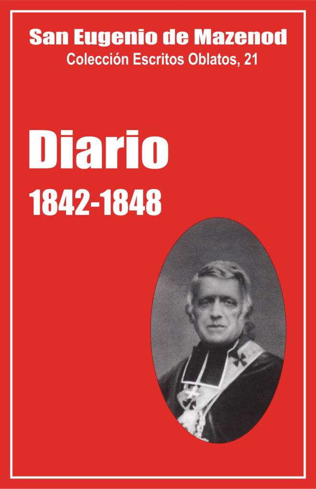

Palo Gordo
2019
Escritos Oblatos: - 01 - 02 - 03 - 04 - 05 - 06 - 07 - 08 - 09 - 10 - 11 - 12 - 13 - 14 - 15 - 16 - 17 - 18 - 19 - 20 - 21 - 22

EUGENIO DE MAZENOD
Colección Escritos Oblatos, 21
Traducción de
Olegario Domínguez O.M.I.
Postulación General, 1999
(Asunción, Paraguay, 2009)
Palo Gordo
2019
1842 - VIAJE A ÁFRICA - 1843 - 1844 - 1845 - 1846 - 1847 - 1848
Nota del Traductor
En esta edición se omiten o se abrevian muchas de las notas del original del P. Beaudoin.
Este vigésimo primer volumen de Escritos Oblatos contiene lo que se conserva del Diario de Mons. de Mazenod desde 1842 hasta 1848 inclusive. Encontramos aquí los dos últimos cuadernos manuscritos: el décimo, (18 abril – 2 setiembre 1844) [1] y el undécimo, (10 abril – 11 agosto 1845). El resto proviene de extractos copiados por los PP. Rey, Rambert y Yenveux. En el Diario de estos años, Mons. de Mazenod habla a menudo de la diócesis de Marsella. Podemos constatarlo por el contenido de los dos cuadernos manuscritos. Los biógrafos del Fundador, sin embargo, han copiado sobre todo lo que concierne a la congregación. De ahí que en las páginas que siguen un 35% versa sobre la congregación, un 27% sobre la diócesis, un 14% sobre algunos viajes que hizo, un 12% sobre él mismo y sobre su familia, un 8% sobre la Iglesia y un 5% sobre asuntos políticos.
La congregación de los Oblatos de M.I.
Tras la partida de los primeros misioneros hacia Canadá e Inglaterra, el número de profesiones aumenta poco a poco. Hay 148 entre 1842 y 1848, de ellas 56 solo en el año 1848, cuando el P. Léonard Baveux realizó en Europa una gira para reclutar candidatos [2]. Partieron entonces hacia Canadá e Inglaterra 61 misioneros. El Fundador se interesa mucho del apostolado de sus hijos en Canadá, pero deplora el desacuerdo que existe entre los padres y las imprudencias del P. Telmon quien suscita el odio de una parte de la población cuando hace quemar biblias y libros protestantes [3]. El Fundador hace algunas reflexiones sobre la oblación de Damase Dandurand, el primer oblato canadiense, (DM 22-1-43), sobre el envío a América del P. Bruno Guiges, visitador extraordinario [4], sobre la aceptación de las misiones del Río-Rojo, (DM 19-4-45), y la partida de los primeros misioneros a Oregón [5], de igual modo que sobre la elevación del P. Guigues al episcopado (DM 24-12-47).
Habla menos de Inglaterra pero se alegra de la conversión de ministros protestantes (DM 22-1-46) y subraya, el 1 de julio de 1846, la salida hacia ese país del joven P. Robert Cooke, irlandés, “excelente religioso, hombre capaz que hará mucho bien en la misión” [6]. En 1848, se sorprende por el hecho de que, sin permiso, el P. G. Daly compre la importante propiedad de Ashbourne y acepte un nuevo establecimiento (DM 30-4-48); envía para aquel entonces al P. Casimiro Aubert para seguir de cerca este asunto y alaba “la actividad de este encantador padre [...] que sale adelante de cualquier mal paso y logra que todo el mundo camine como es debido” (DM 1-11-48).
El 21 de octubre de 1847, bendice a los cuatro primeros misioneros de Ceilán que parten “con resignación pero también con gozo y felicidad”.
El Fundador agradece siempre al Señor el éxito de las misiones parroquiales, principal ministerio de los padres en Francia [7]. El 2 de abril de 1845, escribe al respecto “que quizás no haya en la Iglesia una congregación que, en proporción al número de sus miembros, haga tanto bien como la nuestra”; más tarde, el 12 de abril de 1846, dice que tras un retiro dado por los jesuitas en Viviers, Mons. H. Guibert está convencido que el método de nuestros padres es mejor que el de los jesuitas”. Durante las misiones predicadas en la diócesis de Marsella [8], participa en la ceremonia de clausura y administra el sacramento de la confirmación a los adultos [9].
Cuatro padres, un hermano escolástico y un hermano coadjutor mueren entre 1842 y 1848 [10]. El 5 de febrero de 1846, llora la muerte del P. François Moreau, superior del seminario mayor de Ajaccio. Dice que “esta pérdida es irreparable. Siento un dolor inmenso. Era uno de los pilares de la congregación”.
Doce oblatos abandonan el instituto por entonces, de ellos cinco en 1848. El Fundador expresa siempre su dolor con ocasión de la salida de estos padres y hermanos cuya infidelidad deplora y a los que habitualmente llama apóstatas [11].
En 1846, nombra al padre A. Vincens director de un curso “de altos estudios” con el fin de formar mejor a los jóvenes padres en la predicación y en la vida religiosa. Sin embargo encuentra a este padre demasiado condescendiente para con los religiosos poco obedientes y poco fervorosos. En esa ocasión escribe esta frase que se ha hecho célebre en la Congregación: “No quiero mechas humeantes en la Sociedad. Que ardan, que den calor, que iluminen o que salgan [12]“. Los días 17 y 18 de Julio de 1848, escribe varias páginas para quejarse de la desobediencia y arrogancia del P. Mille, superior de N. D. de Bon Secours.
Entre los otros acontecimientos de cierta importancia para la Congregación, el Fundador habla de la unión de los oblatos durante el capítulo general de los días 13 y 14 de Julio de 1843, de sus visitas canónicas a N.-D. de Lumières del 29 de Agosto al 5 Septiembre de 1843 y a N.-D. de l’Osier el 5 de Mayo de 1847, de la construcción del panteón de los Oblatos en el cementerio de Aix en 1844 y 1845 [13], de la gira de reclutamiento del padre Léonard Baveaux, (DM 4 Noviembre 1847).
El 4 de Octubre de 1842, se queja del P. François Bermond quien, escribe, alimenta la idea de que tengo prevención contra él , pero afirma que le ama como un padre y que hace falta “otra cosa que algunas imperfecciones y miserias para alterar los sentimientos que Dios me ha dado por todos los que se han consagrado a Él en la congregación”.
El 21 de Octubre de 1842, copia un extracto de una carta del P. Courtès quien aconseja a Mons. de Mazenod trasladar los novicios a Marsella porque, escribe este padre: “Cabe pensar que la ubicación no es indiferente para el espíritu que puede animar a la familia que educamos. Y el buen espíritu, el espíritu principal, es el que recibimos de usted, que hace que sirvamos a la Iglesia, como ha sucedido hasta aquí, con modestia y con provecho, ayudándonos unos a otros como hermanos, sin distinción de país ni de provincia y recibiendo nuestra fuerza de las luces y la dirección de aquél que es nuestro fundador y padre”.
La diócesis de Marsella
La actividad de Mons. de Mazenod como obispo de Marsella es intensa y variada; difícilmente se pueden resumir todos los detalles apuntados en su diario. Acoge con placer aunque no sin sacrificio, a los visitantes que se presentan, sobre todo los obispos que pasan por Marsella en su camino hacia Roma o hacia las misiones extranjeras. El 18 de Enero de 1842, empieza a redactar su carta pastoral cuaresmal y se queja de que han llamado veinte veces a su puerta. El 27, recibe a tres obispos y un sacerdote. Menciona a continuación, entre otros, las visitas de NN.SS. Charles de Forbin-Janson, Célestin de la Hailandière, obispo de Vincennes en América, J. B. Pompallier, vicario apostólico de Nueva Zelanda, Emmanuel Verrolles, vicario apostólico de Manchuria, Gaston de Bonnechose, superior de San Luis de los Franceses en Roma, etc. [14]
Habla con mucha frecuencia de los sacerdotes para deplorar la muerte de alguno de ellos [15], alegrarse de la obediencia y de la fidelidad de un gran número [16], lamenta que su proyecto de vida comunitaria de párrocos y de vicarios no les agrade [17]. Escribe varias páginas sobre la ingratitud, el orgullo y la insolencia del canónigo Jeancard [18], su secretario particular, y de Mathieu Cailhol, vicario general [19]. Manda celebrar un funeral solemne por Mons. Diaz Merino, obispo de Menorca refugiado en Marsella [20] y sobre todo por su amigo Charles de Forbin-Janson, muerto el 11 de Julio 1844 en casa de su hermano en Aygalades, cerca de Marsella [21].
Con bastante frecuencia va a celebrar la misa en los diferentes conventos de religiosas, pero habla especialmente de los jesuitas, por aquel entonces perseguidos, para defenderlos. Aprecia mucho el apostolado que realizan en Marsella, en particular el del P. Berrelle, apóstol de los vendedores del mercado y el de otros padres con los hombres de la alta sociedad [22]. El 28 de Julio de 1844, pasa varias horas en la Obra de la Juventud de Mons. Allemand y toma medidas urgentes y firmes contra el capellán, el P. Casimir Bérengier quien, bajo apariencia de una alta espiritualidad y misticismo, abusa sexualmente de los niños. El prelado escribe algunas páginas sobre este asunto y añade: “qué prudencia he necesitado para sofocar la conmoción que habría producido un escándalo tan espantoso […] He aquí uno de los asuntos más delicados de mi episcopado” [23].
Le encanta ejercer el ministerio propio del obispo: la administración de los sacramentos. Una o dos veces al año, realiza ordenaciones y habitualmente se prepara con una jornada de retiro con los ordenandos [24]. El 30 de Junio de 1844, después de haber conferido las órdenes a cuarenta y tres seminaristas y oblatos, escribe: “me he dicho lo que a menudo he tenido en el pensamiento, que haría falta poder pasar la vida entera llevando a cabo tan bellas funciones. ¿Acaso no sería maravilloso morir ejerciéndolos? ¡Es un gozo verdaderamente celestial! Sería como pasar de un paraíso al otro”.
Las ceremonias de confirmación son frecuentes. Confirma adultos todos los lunes en el obispado [25]. Jamás se niega a ir a confirmar a los enfermos, ni siquiera durante los disturbios de 1848 [26]. Las ceremonias son largas y agotadoras durante las visitas pastorales. El 31 de Mayo de 1844, hace un ensayo que no volverá a repetir. Administra la confirmación general de 1700 niños en la catedral. Comienza por los chicos a los que después despide para continuar con las chicas. La ceremonia finaliza a las dos de la tarde y, al final, el prelado confiesa que debía “forzar los pulmones para articular las palabras sagradas”. El 27 de Febrero de 1846, después de una ceremonia de confirmación en el hospicio de la Caridad, escribe: “¿No es una suerte para mí el ejercer todos los días mis funciones de pastor? Soy obispo para esto y no para escribir libros y mucho menos para perder mi tiempo con los ricos del mundo o para hacerle la corte a los poderosos de la tierra. Es cierto que de esta manera no se ganan favores, pero si podríamos hacernos santos, ¿no deberíamos consolarnos con eso?”
Siempre le gusta presidir las ceremonias religiosas, sobre todo en las principales fiestas del año [27], y participar en las procesiones [28]. Disfruta particularmente en las exposiciones del Santísimo Sacramento con ocasión de las cuarenta horas o del carnaval [29].
El obispo se preocupa de invitar a buenos predicadores [30], especialmente para el retiro pastoral [31]. El 26 de Diciembre de 1848, amonesta públicamente a un predicador cuya doctrina sobre la comunión frecuente no le gusta.
Habla frecuentemente de su proyecto de construir una catedral y se reúne con este fin con el prefecto, el alcalde, así como con los príncipes François y Henri d’Orleans, hijo del rey Louis-Philippe [32].
LA IGLESIA Y EL ESTADO
La atención y el tiempo que Mons. de Mazenod consagra a su congregación y a su diócesis no le impiden interesarse por la vida de la Iglesia. El 29 de Marzo de 1842, señala la súplica de los obispos de Francia a favor de la definición del dogma de la Inmaculada Concepción [33]. En el mes de Abril, preside en tres iglesias las jornadas de oración por la iglesia de España solicitadas por el Papa [34].
En 1844, reprocha al P. Rosatini, prelado romano, el haberse detenido en Marsella en un convento de supuestas religiosas que el obispo considera cismáticas. El padre se queja al cardenal Ostini, prefecto de la Congregación para los Obispos y Regulares, que hace llegar el reproche hasta Mons. de Mazenod escribiéndole una carta que éste calificará de “inconcebible”. Él le responde, escribe, de manera que le “hace arrepentirse por haber acogido tan indiscretamente las calumnias de Rosatini y por atreverse a amonestarme sin haberme oído” [35].
En 1845, da algunos consejos a Mons. Guibert, obispo de Viviers, sobre la manera de comportarse con los hermanos Allignol quienes estaban a la cabeza de un movimiento reivindicativo del clero contra los obispos [36]. Hace mención varias veces de los misioneros que pasan por Marsella en su camino hacia las misiones [37] y pregunta al Prefecto de la Propaganda si debe animar la Obra de la Santa Infancia comenzada por Forbin-Janson [38].
Escribe algunas páginas de reconocimiento y admiración con motivo de la muerte en 1844 del cardenal Pacca así como del Papa Gregorio XVI a su muerte en 1846 [39]. El 9 de Agosto de 1846, tras las exequias del cardenal Bernet, arzobispo de Aix, hace algunas reflexiones “sobre la vanidad de las cosas de la tierra” viendo que Mons. Bernet ha fallecido a penas cien días después de haber sido nombrado cardenal. El 1 de Julio de 1848, le llega la noticia de la defunción de Mons. Denis Affre, arzobispo de Paris, en las barricadas. Considera este acontecimiento “como una gran desgracia para la Iglesia”.
Con ocasión de la muerte de Mons. Charles de Forbin-Janson, manifiesta su fidelidad en la amistad. Va a verle en Aygalades, le anuncia francamente que debe prepararse para la muerte, que tiene que hacer un testamento para que su gran fortuna no vaya a parar exclusivamente a su hermano, sino que también deje una parte para las obras misioneras. Va a rezar junto a sus restos, canta la misa de los funerales. Mons. de Mazenod está feliz de copiar en su diario, el 11 de Julio, estas palabras dejadas por el difunto: “Mi mejor y viejo amigo, os abrazo con todo mi corazón en el que se concentran las pocas fuerzas que me quedan. El viejo amigo, Charles, obispo de Nancy” [40].
En 1848, Mons. de Mazenod anota los peligros de la revolución en Roma, la huída de Pío IX a Gaète, la invitación que le hace para que venga a refugiarse en Marsella así como el reconocimiento del Papa ante esta invitación [41].
Las relaciones con el rey Luois-Philippe se mantienen bastante buenas desde 1837. Hay desacuerdos sólo sobre la cuestión de la educación y del monopolio universitario, pero eso se remontaba ya a la época de la restauración, al mandato del 21 de Abril de 1828 que retiraba a los obispos la competencia de vigilar y dirigir las escuelas de primaria. Mons. Fortunato de Mazenod se había opuesto enérgicamente a este mandato. El 8 de Febrero de 1842, el Fundador copia al respecto un extracto del Diario del Comercio de 1828 contra el obispo de Marsella.
En su carta pastoral de Cuaresma de 1843, Mons. de Mazenod calificaba la enseñanza pública de “carne de pestilencia”. El 11 de Abril, el obispo recibe una carta que le reprocha esta expresión. El 4 de Junio, el P. Maillard, provincial de los jesuitas de paso por Marsella, cuenta cómo los jesuitas son combatidos por la Universidad. En Noviembre de 1843, el obispo de Marsella quiere abrir un colegio católico en La Ciotat. Ante la negativa de las autoridades locales, escribe al rey, el 24 de Octubre. Éste le responde que él desea ver restablecida la armonía entre el clero y la Universidad de Francia [42]. A finales de 1845, en efecto, la mayoría de los obispos deciden no continuar la lucha contra la Universidad [43].
En Mayo de 1844, Mons. J. J. Fayet, obispo de Orléans, pasa por Marsella y dice que el rey Louis-Philippe está descontento del el obispo de Marsella, quien supuestamente prohíbe que se cante durante las celebraciones religiosas la oración y el verso por el rey. Mons. de Mazenod escribe inmediatamente al rey para denunciar estas falsas acusaciones y calumnias [44].
Al comienzo del mes de Diciembre de 1844, el príncipe de Joinville y el duque de Aumale, hijo del rey Louis-Philippe, pasan por Marsella. A petición del prefecto, el obispo va a la recepción del día 6 e invita a los príncipes a la misa del día 8 en la catedral. Vela para que todo sea hecho de acuerdo con el protocolo [45].
En Febrero de 1848, una revolución obliga a Louis-Philippe a huir al exilio. Se forma un gobierno provisional que decide restablecer la República. A comienzos del mes de Marzo, el obispo recibe la visita de Emile Ollivier, comisario del gobierno, un buen cristiano y una persona favorable a la Iglesia. Sin demasiado entusiasmo, Mons. de Mazenod participa en la plantación de un árbol de la libertad el 9 de Abril y en una cena popular en un descampado el 16. Escribe para la ocasión: “Parece que hay consigna, en esta revolución, de rendir homenaje a la religión y a sus ministros; es una razón para prestarse a ciertas exigencias que se presentan con una buena cara, aunque por otra parte parezcan extrañas” [46]. Mons. de Mazenod relata así en su diario los acontecimientos que sucedieron a continuación: elecciones el 23 de Abril, revueltas de obreros los días 22 y 23 de Junio, misa por los muertos el 1 de Julio, partida de Emile Ollivier el 18 de Julio, proclamación de la constitución republicana el 20 de Noviembre, elección del presidente de la República el 10 de Diciembre.
MONS. DE MAZENOD HABLA DE SU FAMILIA Y DE SÍ MISMO
En su diario, entre 1842 y 1848, Mons. de Mazenod habla varias veces de su familia: aniversario de la muerte de su padre (DM 10 Octubre 1842) y de la ordenación episcopal de su tío Fortuné (DM 6 Julio 1848), fiesta de su madre (DM 30 Agosto 1844), pero sobre todo escribe algunas páginas en dos ocasiones importantes: el fallecimiento en Aviñón, el jueves santo 24 de Marzo de 1842, de su sobrino Louis de Boisgelin, novicio en los jesuitas y, el 7 de Agosto de 1845, el matrimonio en Albano, cerca de Roma, de su única sobrina Césarie de Boisgelin con el marqués Charles de Damas.
Con la muerte de Louis, Eugénie perdía el tercero de sus cinco hijos, muerto como los otros en la flor de la vida [47]. A comienzos del mes de Febrero de 1842, Mons. de Mazenod pasa cinco días en Aviñón junto a Louis (DM 8 Febrero 1842) y, el viernes santo 25 de Marzo, anota en su diario: “uno de los más bellos florones de nuestra corona ha caído, una porción de nuestro ser ha desaparecido; porque ¿acaso no vivimos en aquello que es objeto de nuestra ternura? […] da una tregua, mi pobre corazón, a toda murmuración; sólo Dios es Señor de las creaturas…”.
En el mes de abril de 1845, tiene lugar el matrimonio de su sobrina que él va a bendecir en Albano, matrimonio que él ha preparado por correspondencia y del que hace mención varias veces [48]. Estos dos acontecimientos le obligarán a hacer dos viajes a Italia de los que pronto hablaremos.
Con bastante frecuencia hace ciertas confidencias sobre sí mismo. El 14 de Marzo de 1842, enumera los días memorables de su vida. Hablar algunas veces con nostalgia de los recuerdos de su infancia en Italia y sobre todo en Venecia [49]. En varias ocasiones recuerda también los años pasados en San Sulpicio [50]. No oculta su sufrimiento ante la ingratitud y la frialdad de Jacques Jeancard y de Cailhol, dos de sus más importantes colaboradores [51]. El 31 de Agosto de 1847, escribe varias páginas para demostrar que él no es ambicioso y que ha dado prueba de ello rechazando muchas dignidades a lo largo de su vida.
El 16 de Julio de 1844, Mons. de Janson da a Mons. de Mazenod una cruz pectoral de su hermano Charles que acaba de morir. El obispo escribe ese día: “Yo la he aceptado como un recuerdo y como una reliquia, porque no me faltan cruces, ni las de obispo ni las otras. Ya tenía cinco de las de obispo. No me sería tan fácil poder contar las otras, son tan numerosas como pesadas, pero el buen Dios sabe bien cómo aligerarme de su peso. Si bien las heridas del corazón están todavía abiertas y sangrantes. ¡Qué crueles son aquellos que me obligan a llevarlas!”.
LOS VIAJES
Entre 1842 y 1846, Mons. de Mazenod hizo tres importantes viajes. El primero se realizó entre el 25 de Abril hasta el 28 de Junio de 1842. Se hizo a invitación del caballero de Collegno para venerar el Santo Sudario de Turín, expuesto solemnemente, pero sobre todo por el motivo que él mismo da el 25 de Abril: “el golpe de acaba de golpearnos [el fallecimiento de Louis de Boisgelin], escribe, ha sumido, ¡ay! con mucha razón, a mi hermana y a mi sobrina en una profunda melancolía; este estado sería peligroso para mi sobrina si se prolongase; ha sido necesario por tanto sacarlas de aquí para que puedan olvidar un poco su dolor. Difícilmente mi hermana se decidiría a emprender un viaje como este cuando ella misma trata de ocultar que lo necesite, si bien siente que su hija difícilmente podría pasar sin él. Es éste último pensamiento la que le hace superar su desgana, pero fue necesario que yo tomara cartas en el asunto. Hubiera deseado no tener que llegar a este hasta este extremo; pero no suelo hacer caso a mis reticencias cuando se trata del bien de aquellos que tienen derecho a mi afecto y a mi abnegación.”
Parte con su hermana, su sobrina, el canónigo Jeancard y un criado. Visitaron el norte de Italia y regresaron a través de Suiza, N. D. de l’Osier y Viviers. Conocemos los detalles del viaje a través principalmente por las nueve largas cartas que escribió al P. Tempier. En su diario sólo encontramos algunas páginas, aunque una muy bella sobre la visita a Venecia, el 26 de Mayo, en la que escribe, entre otras cosas: “¿Cómo no estremecerse en presencia de los lugares que os recuerdan los primeros años de la adolescencia, los auxilios que la Providencia Divina me prodigó en aquella época en la que mi inteligencia comenzaba a desarrollarse? ¿Cómo no va a latir con fuerza mi corazón ante el recuerdo de aquellos hombres admirables que consagraron su descanso a mi instrucción religiosa, y que me formaron en la virtud? […] ¡Oh bienaventurado Zinelli! ¿Qué habría sido de mí sin ti? ¡Cuánto agradecimiento no deberé yo a Dios por haberme otorgado el conocimiento y el afecto de tan santo personaje!...”
En el segundo viaje, Mons. de Mazenod visitó Argelia del 22 de Octubre al 13 de Noviembre de 1842, con ocasión del traslado de una reliquia de San Agustín, conservada en Pavía y llevada a Argel por Mons. Dupuch. Es el único viaje que hace fuera de Europa y de la cristiandad. A su regreso, cuenta todo lo que ha visto y hecho. Es la pieza maestra de este volumen. El manuscrito ha desaparecido, pero había sido publicado por el P. Marc de L’Hermite en Missions O.M.I. 1874, p. 417-458. En ninguna otra parte el Fundador ha escrito tan bien, con un estilo tan rico y cuidado. El redactor de Missions o Mons. Jeancard probablemente retocaron la narración original.
En este viaje van el P. Tempier, el canónigo Jeancard y una criado, así como otros cinco obispos con sus acompañantes [52]. Sale el sábado 22 de Octubre hacia Toulon, después hace el viaje de Toulon a Bône en el barco de vapor “le Gassendi”. Llegado a Bône al alba del 28, asiste a la ceremonia de confirmación de unos niños, presidida por el obispo de Digne. Escribe al respecto: “¡Qué iglesia tan miserable! Es una raquítica mezquita que han transformado en templo cristiano. ¡Sin duda habrían temido abusar del derecho de conquista si se hubieran apropiado una bella mezquita del país! Tantos miramientos, lejos de contribuir a que los indígenas nos miren con aprecio, no han hecho más que inspirarles desprecio por nosotros. Están tan locos como para atribuir al temor todas las concesiones que se les hace. Los Sarracenos no actuaron así cuando conquistaron España. Entendieron de una manera bien diferente que nosotros la ley del más fuerte. Sea como sea, la mezquita que sirva de iglesia no es digna de nuestra santa religión. Es ahí, sin embargo, donde reside Nuestro Señor Jesucristo, y es ahí donde hemos dicho todos la santa misa, a falta de un lugar mejor.”
El 29, con los otros obispos, visita Hipona. Al regreso, los viajeros , hacen una parada en “una tribu sentada bajo la tienda”. En esta ocasión, Mons. de Mazenod escribe una vez más en su diario: “¡Ay! yo gemía en la más profundo de mi alma al ver a estas buenas gentes sumidas en tan profundos errores, y dando tan poca esperanza de llegar al conocimiento de la verdadera religión. Si sus tiendas y sus costumbres nos recordaban los tiempos de los patriarcas Abraham e Ismael, ¡que ellos, por sus costumbres y su religión, han convertido en sus padres! Yo no pude, sin embargo, resistirme a decirle a Mons. Suchet, que tiene relaciones de amistad con ellos, que me parecía imposible que con un poco de cuidado y muchas precauciones, no terminase por conducirles al conocimiento de Dios y a la verdadera fe de la Iglesia. Los sacerdotes no tienen bastante confianza en Dios ni tienen en cuenta suficientemente la Gracia de Jesucristo en toda Argelia; os disgustan por su desánimo y por el poco celo que muestran por la conversión de estos pueblos; se diría que es inútil si quiera intentarlo, ¡como si fuera más fácil convertir a los chinos! No, simplemente son más dóciles a las prescripciones de la autoridad, que ha prohibido que se ocupen de instruir a los árabes para conducirles al conocimiento de nuestra santa religión…”
El traslado de las reliquias a Hipona se efectúa solemnemente el domingo 30. Por la tarde, en barco, se dirigen todos hacia Argel donde llegan a las dos de la madrugada, el día de Todos los Santos. En todo lugar, la armada acompaña a los visitantes y se encarga de los medios de transporte. El 3 de Noviembre, viaje a Blida. Al pasar por Draria, Mons. de Mazenod bendice la primera piedra de una iglesia consagrada a San Eugenio. El jueves día 4, es una vez más él quien procede a consagración de la iglesia de San Carlos, “antes mezquita musulmana”. Escribe, “Comencé la misa y la terminé tristemente, sin pompa, sin concurrencia, sin otro júbilo que el que experimentaba interiormente ofreciendo el santo sacrificio en este templo, que acababa de consagrar al verdadero Dios. ¡Durante cuánto tiempo había inspirado el demonio el falso culto y las supersticiones de los engañados pueblos que lo habían frecuentado hasta entonces!”
Regreso por Boufarik hacia Argel. Los visitantes pasan ahí algunos días y se detienen en una mezquita en la que, escribe el obispo, “conservamos nuestro calzado para entrar en este santo lugar. No es ésta la norma de los musulmanes, que no se permitirían esta profanación. Por lo demás, les alabo por este respeto por el lugar de sus oraciones; ¡quiera Dios que los cristianos les imitaran en esto! Se me encoge el corazón cuando pienso que estos pobres infieles no conocen al Dios que honran con homenajes exteriores. A estas demostraciones externas corresponden, me gustaría creerlo, unos sentimientos profundamente religiosos. De ahí que aprecie su silencio, sus postraciones y sus invocaciones suplicantes; ¿pero que representa esto en unos corazones corrompidos? ¿Y puede agradar esto a Dios cuando se rechaza a su Hijo Jesucristo, nuestro Señor? Pobres gentes, son dignos de lástima. Pero su religión, si es que puedo servirme de este término, debería hacer enrojecer a todos esos indignos cristianos que no saben rezar y que profanan diariamente nuestros santos templos con sus irreverencias”.
El domingo 6 de Noviembre, Mons. de Mazenod oficia Vísperas y bendice una estatua de San Agustín. Por la tarde, todos suben al barco y viajan con un muy mal tiempo. Todos están enfermos, salvo Tempier que “fue en todo momento el héroe de la banda; no sintió nauseas ni una sola vez en toda la travesía y no se perdió ni un bocado”. Después de varios días de escala en Palma de Mallorca para dejar pasar la tormenta, el barco vuelve a la mar y arriba a Toulon el domingo 13 de Noviembre a mediodía. De regreso en Marsella ya de noche, Mons. de Mazenod reúne a los obispos en su casa, al día siguiente y, el martes día 15, sube a N. D. de la Garde para “dar gracias a Dios”.
En las reflexiones que hace a lo largo del viaje, vemos que el obispo de Marsella es favorable a la colonización del país, juzga severamente el Islam y cree en la posibilidad de hacer algunas conversiones y devolver a la iglesia a una población, en el pasado cristiana. El 11 de Julio de 1844, escribe una vez más al párroco de Mascara para animarle a ocuparse de la conversión de los árabes “siendo necesario antes de nada comenzar con los niños. Nunca antes se había visto, le digo, desde el establecimiento del cristianismo que el ministerio evangélico haya permanecido en silencio ante el error y ante las almas que sería necesario convertir”.
En 1845, Mons. de Mazenod hizo un viaje a Roma para bendecir el matrimonio de su sobrina Césarie con el marqués Charles de Damas. Salió de Marsella el 11 de Julio, acompañado del canónigo Jeancard, y llegó a Roma el 14, de donde sale el 8 de Agosto para volver a Marsella el 11 o el 12. Fue a Albano los días 16, y del 22 al 24 de Julio, y finalmente el 7 de Agosto, día de la celebración matrimonial. Omitimos aquí este diario, puesto que ya se ha publicado en el volumen 17 (Diario de Roma) de los Escritos Oblatos, (pp. 175-189). Por otro lado, estas páginas, de las que conservamos el manuscrito, aportar poca información sobre el viaje a Roma y sobre el matrimonio. El obispo relata brevemente su visita al papa Gregorio XVI, se reúne con una docena de cardenales y escribe después varias páginas sobre los jesuitas pues el gobierno de Francia quiere cerrar algunas de sus casas en Francia y ejerce con este fin presiones sobre el papa.
CONCLUSIÓN
Entre 1842 y 1848 Mons. de Mazenod parece gozar de buena salud. Sólo una vez, el 15 de Febrero de 1844, dice que ha pasado la jornada en la cama. Aunque vemos que permaneció varios días seguidos. El 18, se levanta por fin “empaquetado” en su abrigo de piel para ir a confirmar a los hombres al final de una misión predicada por el padre Loewenbruck en la parroquia de Saint-Cannat. Dice: “habría sido necesario que estuviera agonizando para no asistir” [53].
El 31 de Mayo, al final de la ceremonia de confirmación de 1700 niños en la catedral, reconoce que estaba muy fatigado y que sentía un dolor parecido “a una puñalada” en el pecho, ¿signo que anticiparía la enfermedad que se lo llevó en 1861?
Habla algunas veces sobre la muerte para recordar la brevedad de la vida [54] y decir que a él le encantaría morir en el curso de una ceremonia de ordenación [55] o en presencia del Santísimo Sacramento. En este sentido, escribe el 6 de Enero de 1844 una bella página en la que aparece su fe viva en la presencia real de Jesucristo en la eucaristía: “Durante mi adoración ante el Santísimo Sacramente expuesto, se confía, estaba preocupado con el pensamiento de que era imposible estar mejor. ¿Acaso no es un gozo anticipado del paraíso encontrarse en la presencia de Jesucristo, prosternado a sus pies para adorarle, amarle y esperar de su bondad las gracias que necesitamos? Profundizando más en este pensamiento, he llegado a una conclusión a la que jamás antes había llegado. Que si en mi última enfermedad conservo la razón, debería procurarme la dicha de sufrir las angustias de la muerte y de exhalar el último suspiro en la presencia de nuestro Divino Salvador. Me parece que sería un medio infalible de no ocuparse más que de Él y de que mi corazón no cesase ni un solo instante de estar unido a aquél que le abrazaría con su presencia y lo fortificaría en el temible momento del paso del tiempo a la eternidad…”.
Yvon Beaudoin, o.m.i.
Carta de Mons. Guibert. ¿Es posible leer estas palabras sin emocionarse? “Pero yo no aguanto más. Tengo tantas cosas que comunicaros, tantas cosas de las que pediros opinión, o hablaros en particular de un proyecto de establecimiento de nuestros padres en la diócesis [57]. Henos aquí, mi bien amado padre, con una año más, es decir, yo con mis 40 años cumplidos; me alegro mucho de ver que usted está mucho más joven a pesar de sus 60 años, porque Dios os ha dado una salud a prueba de tiempo. Siempre le he pedido la gracia de morir antes que usted”.
Yo pido lo contrario, porque no consentí tan fácilmente en hacerle obispo si no fue para dejar un protector para la familia tras de mí. Independientemente de todo el bien que yo sabía que un hombre de su mérito haría a la Iglesia.
“¿Qué haré en este mundo cuando usted ya no esté? A menudo he formado este voto y lo renuevo aún más frecuentemente ahora que estoy en una posición que hace de vuestros consejos y todas vuestras bondades paternales aún más necesarias.”
¿Son comunes estos sentimientos? ¡El corazón que los produce es digno de todo el afecto que le he profesado!
Carta de monseñor Blanc [59], un consuelo por los sentimientos que expresa. Subió al altar el 1 de Enero. Dios le haga perseverar en la santa disposición en la que ahora se encuentra.
Iba a salir para acudir a la Congregación de la Juventud [61], donde celebro la eucaristía semejante día. Cuando han venido a advertirme que Mons. arcipreste [62] se moría. Corrí a su casa; le encontré sin conocimiento y a punto de ahogarse a causa del estertor de la muerte. Después de haberle sugerido algunos buenos sentimientos y recitado en voz alta el acto de contrición, le di la absolución, e inmediatamente después, muy rápidamente, la extremaunción y la bendición apostólica. Este santo padre sobrevivió poco tiempo más después de los auxilios religiosos que acababa de recibir de mi propia mano. Su muerte, aunque súbita, es muy preciosa ante el Señor. Algunos instantes antes del derrame cerebral, que se sucedió de repente, había hecho sus oraciones acostumbradas y se disponía a ir a decir la misa. Ha sido llamado ante Dios en el momento mismo en que ocupaba de Él. El Señor le ha ahorrado los horrores de la muerte, que siempre había temido de una manera singular. Es una nueva pérdida para mi iglesia, porque Mons. Gauthier era merecedor de toda estima y veneración. Había dado sus primeros pasos durante la Revolución con Mons. d’Astros [63], (hoy arzobispo de Toulouse, no sin haber corrido grandes riesgos; y, después de eso, siempre ha dado ejemplo de la más perfecta regularidad. Conservó hasta el final todas las costumbres eclesiásticas, y, al perderle, se va uno de los ancianos de Israel, que nos trazaba los buenos ejemplos de los buenos sacerdotes, con los cuales vivió, y las tradiciones que tanto nos importaría conservar.
Me he encerrado en casa para elaborar mi carta pastoral. Han llamado veinte veces a la puerta, por lo que he concluido que hoy sería como todos los otros días y que siempre será igual, que jamás me dejan media hora libre seguida para trabajar.
[Exequias de Mons. Gauthier]. Sería de desear que el ejemplo de este buen arcipreste hiciera suficiente mella en sus compañeros como para llevarles a algunos de ellos a imitarle en sus disposiciones testamentarias. Ha dejado a la fábrica de la parroquia, su heredera, con la responsabilidad de dar a los pobres lo que él mismo especificó al respecto. Ya desde hace cierto tiempo, empleaba mucho dinero para el embellecimiento de la iglesia. De esta forma ha querido devolver a la Iglesia lo que de ésta había recibido. ¡Qué su recuerdo sea para bendición de la parroquia y de toda la diócesis!
¿Quién podría adivinar las susceptibilidades de este padre [67]? Se queja siempre de que no se tiene deferencia alguna para con él. En cuanto a mí, yo protesto que, lejos de no hacerle caso, siempre le he amado mucho y muy a menudo me he arreglado para no disgustarle. Haciendo justicia a sus capacidades, mi corazón de padre habría querido alguna cosa más para completar sus buenas cualidades; cualquiera que haya sido mi reserva en este aspecto, he renunciado a su corazón. Ofrezco esta pena al Señor junto con tantas otras parecidas como habrá podido verse en la página… de este escrito.
De esta manera paso de un gozo a otro. Es cierto que es un poco a costa de mi reposo y de mi gusto por la soledad, pero me compensa el mérito de la hospitalidad que es un virtud recomendada a los obispos por el apóstol S. Pablo [69].
No siempre marco los aniversarios dolorosos, pero de éste hago memoria. ¿Cómo olvidar que era hoy el de la muerte de nuestro padre Suzanne [71]? He ofrecido el santo sacrificio por él aunque estoy bien convencido que ya no necesita de nuestros sufragios. Que los que me sobrevivan me recuerden con la misma fidelidad.
Carta al padre Vincens [73].
Autorizo a los oblatos [74] a ser dispensados, por turnos, tres días a la semana, del oficio en común 1) a causa de su delicado temperamento, 2) a causa de la necesidad de estudio
[3-8 Febrero] Pasados en Avignon a la cabecera de la cama de mi santo sobrino [76]. Ya le habían administrado [los santos sacramentos] cuando llegué, y la paz de su alma, ciertamente, no se había alterado con el anuncio de su próximo final. Su dulzura, su resignación, la perfecta calma que conservaba en medio de sus sufrimientos, causaron la admiración de toda la comunidad y de los médicos que le cuidaban con un celo digno de su piedad. Juzgué que su estado permitiría a su madre llegar a tiempo para verle al menos una última vez. Es un consuelo que me habría reprochado en caso de no haber podido procurárselo a esta buena madre, tan fuerte, tan desgraciada, tan resignada. Su presencia hizo que fuera posible; los padres no se lo impidieron.
Decía cada día la santa misa en la habitación de mi sobrino, lo que le procuraba una gran felicidad en medio de su deplorable estado. ¡Pobre querido niño! Es consciente de todo el peligro, y, lejos de quejarse, da gracias al buen Dios y acepta todos sus sufrimientos con la más perfecta resignación. Cuando la excesiva irritación de las entrañas provocaban los vómitos más desagradables, me apiadaba de la amargura que debía estar experimentando. “Está bien, me respondía él, puesto que el buen Dios lo quiere; yo merezco aún más”. ¡Y es un ángel quien habla así! El padre rector no podía salir de su asombro, de ver tanta dulzura y tanta afabilidad en medio de tan crueles sufrimientos. ¡Ah! ¡Cuánto lamenta él y todos sus compañeros, la pérdida que la Iglesia y su compañía sufren con la muerte de este precioso hijo!
El domingo 6, di una vez más la comunión como viático en la misa a nuestro querido enfermo quien por otro lado comulgó varias veces más a lo largo de la semana inmediatamente después de la medianoche, como solemos hacer también nosotros en nuestras casas.
No pudiendo prolongar mi estancia en Avignon, tuve que separarme de Louis, con el corazón bien afligido y sin ninguna esperanza de verle recuperar la salud. Este bendito hijo ha querido hablar algunos momentos conmigo, en particular; quería hablarme de su padre y de su hermano. ¡Qué conmovedor estaba en cuanto me decía; jamás le había oído hablar de esa manera!
Que el Señor se digne aceptar, como expiación de mis pecados, todos los crueles dolores que sufro por estos dignos objetos de mi cariño. ¡Quién sería capaz de decir todo lo que yo he sufrido durante esa entrevista en la que este bendito hijo conservaba la calma y una serenidad angelical que nunca le han abandonado. En cuanto a mí, quotidie morior [77]; es la estricta verdad, con toda la fuerza que se encierra en estas palabras.
Lo abracé, posiblemente por última vez; le bendije y me alejé de allí, haciéndome una violencia extrema ante él, probablemente para no volver a verle nunca más. Mi hermana hizo lo mismo, y con la misma fuerza de espíritu, concentrando en nuestro corazón toda la desolación para no herir la sensibilidad de su hijo quien, por su parte, controlaba sus afectos y ofrecía interiormente a Dios su sacrificio, lo que también hacíamos nosotros mismos, y no manifestaba nada externamente de lo que pasaba en su alma. ¡Oh, calvario de mi Dios! ¡Oh, Virgen María! Y al tercer día Jesús debía resucitar… ¡Nuestro dolor [sin embargo] deberá durar tanto como nuestra miserable vida! ¡Fiat voluntas tua!
Hojeando mis viejos papeles, he encontrado este extracto de dos periódicos liberales de la época de la Restauración. Siendo la crítica de estos señores un titular de gloria, voy a transcribir aquí sus diatribas.
Extracto del Diario del Comercio del 14 de Agosto de 1828
“Nosotros hemos tenido la desgracia de anunciar que Mons. el obispo de Marsella se había sometido a las disposiciones del decreto del 21 de Abril [79] sobre las escuelas primarias. Le habíamos afrentado. Y he aquí que recibimos un rotundo desmentido del canónigo secretario general del obispo. Para confundirnos más aún, se publica una carta escrita confidencialmente por Mons. de Marsella al Sr. Ministro de Instrucción Pública [80] para informarle que el decreto del 21 de Abril no será aplicada en la diócesis en lo referente a la participación del obispo en la formación del comité. ¿Por qué? Pues porque los obispos obtienen de Jesucristo el derecho exclusivo de enseñar a la juventud. No es solamente el cuidado de la enseñanza que le corresponde en virtud de sus títulos, sino aún la enseñanza misma, es decir, que son jueces de la doctrina que sólo ellos deben conocer, sin la ayuda necesaria de ningún otro comité, jueces de los errores que puedan deslizarse en la enseñanza ofrecida a las ovejas que les han sido confiadas por el soberano pastor de las almas.
Los redactores de la protesta contra las leyes del 16 de Junio [81] se muestran más indulgentes en lo tocante a los derechos del poder temporal que Mons. el obispo de Marsella para con el decreto del 21 de Abril. Éste último profesa la doctrina con un rigor inflexible. Los obispos, dice él, son los únicos que detentan el derecho de enseñar. Sus colegas suavizan sus posiciones hasta el punto de hacer ciertas concesiones que ante conciencias severas podrían parecer poco ortodoxas”, etc.
Extracto del Constitucional del 13 de Agosto de 1828
“Las resistencias a las leyes del 16 de Junio se multiplican, es un crescendo de protestas y de reprimendas. Leemos en un diario de esta mañana una carta de Mons. de Mazenod, obispo de Marsella, al ministro de la instrucción pública. Esta epístola altanera y casi amenazante es menos propia de un ministro del Evangelio que de un indignado miembro de una liga.
Mons. el obispo de Marsella se expresa como maestro y no como santo; habla de todos sus derechos de los que sólo debe dar cuenta ante Jesucristo. Se proclama árbitro supremo de la enseñanza de su diócesis y manifiesta un desdén supino por la política humana. “Las autoridades, dice, pueden ponernos un obstáculo invencible en el ejercicio de nuestros derechos, pero no sabría quitárnoslos, ni siquiera obligarnos a participar en operaciones que atentan contra los mismos.” Mons. el obispo declara que no obedecerá. El ministro no puede exigirle que comprometa su consciencia cooperando a un nuevo sistema que merma los derechos de su cargo.
Era difícil proclamar su rebelión en términos más positivos y de mostrar, de una manera más clara lo que es un sacerdote. Nada de tímidos miramientos, es de poder a poder como actúa Mons. el obispo de Marsella; armado con los derechos de su cargo es como combate al ministro del rey. ¿No podríamos preguntar a ese prelado que no cede ante la política humana si no es precisamente gracias al jefe de esa política, es decir al príncipe, a quien debe su nominación? ¿Si no se comprometió con juramento, a pesar de su desprecio por las exigencias de la misma política, a permanecer fiel al monarca y a las leyes? Mons. de Mazenod, si él ya ha olvidado los términos de este juramento, nos permitirá de recordárselos. Es el mismo papa Pio VII en persona quien los ha fijado y, como Mons. de Mazenod lo sabe, el papa es infalible
“Yo juro y prometo a Dios, sobre los Santos Evangelios, guardar obediencia y fidelidad al rey. Prometo igualmente no tener ningún trato, no asistir a ningún consejo ni alentar ninguna liga, sea dentro o fuera del país, que sea contraria a la tranquilidad pública, y si, en mi diócesis o fuera de ella, llego al conocimiento de que se trama algo contra el Estado, lo pondré en conocimiento del gobierno”.
Esto es lo que juran todos los obispos y ahora rechazan poner en práctica las leyes bajo pretexto de que no pueden plegarse ante las exigencias y los vericuetos de la política humana. Esta política, ¿sabrá hacerse obedecer? ¿O tendrá que humillarse delante de los derechos inherentes al cargo de Mons. el obispo de Marsella?”
Carta al P. Ricard [83] sobre varios artículos. Cuando piensa que debe despedir a un sujeto, debe oír el parecer de los padres que tienen relaciones de dirección o de estudio con él, comunicármelo, decir su opinión personal y esperar mi decisión, que si corre prisa, se la escribiré con rapidez. Es lo que habría tenido que hacer antes de haber despedido a Poncet quien tiene talento y madera. Nombro al padre Chauvet [84] director de estudios y ecónomo.
Le recomiendo que relate en un registro ad hoc no sólo el nombre de los países donde se da la misión, sino también el efecto que estos ejercicios producen ahí y las circunstancias más reseñables de cada misión. Sin esto apenas quedará una huella del trabajo de los misioneros para la historia general de nuestras misiones.
Carta al P. Courtès. No puedo autorizar que dé un retiro en Eguilles [86], donde todavía no se ha dado una misión. Es contrario a la costumbre de la congregación y a mi modo de ver las cosas.
Días memorables para mí, en los que debo celebrar algún aniversario: el 1 de Agosto de 1782, mi nacimiento; 2 de Agosto de 1782, mi bautismo. Hice mi primera comunión el Jueves Santo y fui confirmado por el cardenal Costa [88], arzobispo de Turín, el día de la Santísima Trinidad, pero no estoy seguro de si fue el año 1792 o bien el año 1793. En el primer caso, el Jueves Santo correspondería al 5 de Abril y la Santísima Trinidad al 3 de Junio; en el segundo caso, serían el 28 de Marzo y el 26 de Mayo. El 4 de Noviembre de 1808, tomé los hábitos, el 27 de Diciembre de 1808, recibí la tonsura de Mons. André [89], antiguo obispo de Quimper. El 27 de Mayo de 1809, recibí las órdenes menores de su excelencia el cardenal Mons. Fesch [90]; El 23 de Diciembre de 1809 fue ordenado subdiácono por Mons. André, antiguo obispo de Quimper; el 16 de Junio de 1810, fui ordenado diácono por Mons. Fesch; el 21 de Diciembre de 1811, fui ordenado sacerdote en Amiens por Mons. Demandolx [91], obispo de Amiens. El cardenal Mattei [92], que debía ordenarme se encontraba en el exilio y yo no quería recibir el sacerdocio de manos del cardenal monseñor Maury [93], por entonces administrador de la diócesis de París. El 1 de Noviembre de 1818, hice mi oblación en la congregación, y el 14 de Octubre de 1832, recibí la consagración episcopal, de manos de su eminencia el cardenal Mons. Odescalchi [94] y de los arzobispos de Calcedonia y de Rávena, después cardenales, Mons. Frezza y Mons. Falconeri [95]. Fui designado para la sede de Marsella el 2 de Octubre de 1837. Me queda por saber el día de mi muerte cuyo aniversario otros celebraran y para la que invoco por adelantado la misericordia de Dios.
Viernes Santo. Desde hace ya mucho tiempo la desesperada enfermedad de mi amado Louis me mantenía clavado a la cruz, hoy tuve que expirar con el Cordero de Dios que se ha inmolado en ella por nosotros. Había salido un momento a administrar el sacramento de la confirmación a un moribundo cuando el Sr. Boisgelin entró en el obispado; su sola presencia bastó para darme a entender la desgarradora noticia que tanto nos estábamos temiendo. Estaba ayer con su hijo cuando éste entregó su bella alma a su Creador. Sucedió a la misma hora en que yo estaba aquí, en el altar, ofreciendo el santo sacrificio por él, ¡helas! no tanto por la curación de su cuerpo, como por la mayor santificación de su alma.
Y así, he aquí en el cielo al que fue nuestro consuelo en la tierra. Tantos talentos, tantas virtudes, un carácter tan bueno, todos perdidos para nosotros. Uno de los florones más bellos de nuestra corona, ha caído; una porción de nuestro ser ha desaparecido; porque ¿acaso no vivimos nosotros en aquello que amamos?
El P. Gury [97] me escribe:
“¡El ángel de la tierra ha echado a volar hacia el cielo! Monseñor, nosotros compartimos su dolor, usted comparte el nuestro; es vivo y profundo. ¡Qué pérdida para nosotros, para la religión! ¡Qué bien tan grande no habría hecho el querido difunto si hubiera vivido! Pero, ¡San Luis Gonzaga también murió a esa edad y tantos otros! Dios es el maestro y no necesita a nadie. Es un nuevo protector el que usted tiene, el que nosotros todos tenemos en su persona. ¡M. de Boisgelin os dará más detalles edificantes de esta muerte realmente preciosa a los ojos de Dios! Este respetable señor nos ha edificado el mismo de una manera singular por su ánimo, su resignación, su piedad. A las ocho horas y media ya había comulgado por su querido hijo todavía vivo”.
Una tregua, mi pobre corazón, ante todo pensamiento y murmuración; sólo Dios es Señor de sus criaturas; Él dispone de ellas según su justísima, santísima y adorable voluntad. ¡Ah! Sí, ¡que se haga su santa voluntad,, aunque nos cueste la vida!
Carta de Mons. el arzobispo de París [99]. Me advierte que el ministro se ha molestado por la publicación del jubileo a través de su carta pastoral [100]. Me envía su respuesta a las reclamaciones del ministro. Esta respuesta no me ha satisfecho. Como piensa que una persona está ligada sólo a la fórmula de la que se sirve para anunciar los poderes que se reciben de la santa sede, nos invita a evitarla cuando publiquemos nuestras cartas pastorales. Creo que se equivoca, no es tanto la expresión utilizada como la cosa en sí misma. Además, sea cuales sean los términos empleados, serán censurados. No importa, nada de esto me hará dudar de mostrarme unido en pensamiento y en voluntad al jefe de la Iglesia. Y no por ello tampoco expresaré menos mi horror por el cisma en el que se quiere arrastrar a la pobre iglesia de España.
Carta del P. Dassy [102] con ocasión de mi fiesta (San José). Expresa en esta carta sus mejores sentimientos de adhesión a mi persona y a la congregación. Después va a sus temas favoritos, la ciencia, la arqueología, etc. el ministro de la instrucción pública le ha enviado, para animarle en sus trabajos, una magnífica obra: Los elementos de la paleografía. Ha sido nombrado interlocutor de su ministerio para los trabajos históricos. Ve en esto resultados muy satisfactorios para la gloria de nuestra santa congregación, “nunca me veréis trabajar por ningún otro motivo. Para la congregación, mi espíritu, mi corazón, mi tiempo y mi vida”.
¿Qué responder a un hombre que expresa sentimientos tan bellos? Ciertamente, estoy lejos de pensar como él. No veo nada de gloria para la congregación en todo eso, pero el padre Dassy tiene necesidad de una ocupación; tanto vale esa como cualquier otra. Así que no estoy enfadado porque cierta carta que le había escrito para echarle en cara su excesivo ardor por las ciencias, algo extraño a nuestro ministerio, haya quedado encima de mi mesa de trabajo.
Carta del padre Guigues [103]. Me remite una invitación de un nuevo instituto de África dirigida al P. Dassy, para que éste acepte la nominación en calidad de miembro titular del mismo. Leyendo los estatutos, veo que no es más que una obra filantrópica; me opongo, por tanto, a que el P. Dassy acepte.
He firmado hoy con diligencia y consuelo una súplica dirigida por los obispos de Francia [105] al jefe de la Iglesia para solicitar que la Santa Sede pronuncie ex cathedra que la doctrina de la Inmaculada Concepción de la Santísima Virgen es un artículo de fe católica. Recordamos al Papa que esta doctrina se profesa en toda la Iglesia, etc.
Carta al P. Dassy. Amortiguo un poco su excesivo celo por la arqueología. Prefiero que los que imprimen se encarguen de editar la obra [107]. Que él se explique mejor sobre el artículo que concierne a las cinco planchas litografiadas.
Carta al P. Lavigne [108]. Le felicito por lo bien que ha trabajado en las misiones; le doy algunos consejos exhortándole a perfeccionarse y a estudiar.
Carta del padre Lagier [110]. “Su alma está inmolada más allá del sacrificio”, porque ha oído que mi “espíritu estaba inquieto por él”. Tal es el estilo de nuestro buen padre Lagier, que no puede consolarse al saber que yo desapruebo su dirección archi-mística y que he prohibido a las religiosas que le expongan a perder el tiempo para mantener con ellas una correspondencia tan fútil. Él ha hecho el “voto formal y firme de servir a las almas. Este voto debe ser, ha sido, es y debe ser como siempre” su gran principio.
Sin embargo, parece que en lugar “de producir frutos maduros y sólidos de la más viva caridad, esta pobre alma sólo ha dado unas pocas hojas y ramas que deben hacer hueco, una vez podadas, al buen fruto de su sobria y perfecta dirección”.
El caso es que nuestro buen padre Lagier está lleno de ardor por hacer el bien, sólo se equivoca en la elección del objeto y de los medios. Se equivoca al pensar que yo estoy irritado, hace falta mucho para llegar a irritarme, pero sí que me da pena el verle embebido con esta tonta dirección que le hace perder todo su tiempo en correspondencias con monjas que no tienen sentido común y que le entretienen bobamente con sus historias, mientras que habría tantas cosas que hacer para servir a las almas, que es para que ha hecho voto.
Viaje a Aix. Me he encontrado con el arzobispo [112]. En la conversación me ha confesado su desacuerdo por el celo que pone el cardenal Lambruschini [113] para obtener de la Santa Sede la decisión doctrinal que declara artículo de fe la concepción inmaculada de la Santísima Virgen. El prelado esperaba que yo me sumase a su posición. Sin duda había olvidado que durante nuestra asamblea provincial [114], yo propuse que todos los prelados de la provincia, reunidos en esa asamblea, hicieran la petición a la Santa Sede, en lugar de contentarse, que es lo que se proponía, con pedir que se añadiera la palabra inmaculada al prefacio de la Santa Virgen. Mi opinión fue impugnada por el metropolitano que, recuerdo, no daba razones suficientemente convincentes como para evitar que emprendiéramos aquel camino. Insistí al menos que mi propuesta constase en el proceso verbal de la sesión. Monseñor, el arzobispo, se opuso también a eso con razones todavía más lamentables. Persistí enérgicamente, porque me parecía que lo que el testificaba [115] de esta iniciativa en una cuestión que preveía debería ser, tarde o temprano, resuelta en el sentido que yo sostenía. ¡Y bien! Monseñor, el arzobispo, para mi gran sorpresa, me repitió los pobres argumentos que había combatido entonces, y esta vez ya le había pillado [116], porque no tenía más que recordarle que él mismo había solicitado al Papa que añadiera la Immaculata al prefacio de la Santísima Virgen y el sine labe concepta a las letanías. Desde entonces ya no podía comprender que se sorprendiese de que quisiéramos presionar a la Santa Sede para que decidiera la cuestión, o que él se atreviera a decir que no encontraba ningún indicio en la Escritura ni en los Santos Padres que probase este privilegio de la Santa Virgen, lo que ya había determinado el Concilio de Trento para nada decidir en este punto. Evidentemente, este buen prelado me repetía aquí lo que alguno de los que le rodean había podido decirle. No me preocupé de refutarle, o de explicarle siquiera la afirmación del concilio de Trento. Sería bueno que este mismo prelado, que me hablaba de este modo, hubiera firmado la carta que el arzobispo de Besançon [117] nos ha presentado, en la cual pedimos al Papa que declare que la doctrina de la Inmaculada Concepción de la Santa Virgen es un artículo de fe. Si la hubiera firmado, seguramente Mons. Mathieu me lo habría hecho saber.
Primera estación para el jubileo [en favor de la iglesia de España] en la catedral. La iglesia se quedó demasiado pequeña: dos horas antes de la hora indicada, las tres naves y todas las capillas estaban abarrotadas. Llegaban en masa para asistir a este santo ejercicio. Ha sido necesario cerrar las puertas. Qué magnífico espectáculo era esta bella reunión, compuesta por el primer pastor, rodeado de todo su clero y de una multitud de fieles, para invocar solemnemente al Señor en favor de una porción de la gran familia cristiana amenazada en su fe. Entoné el Veni Creator que fue cantado por miles de voces, inspiradas, como yo mismo lo estaba, por un vivo sentimiento de caridad fraternal, de confianza filial, y por un cierto júbilo interior difícil de expresar. Este gozo era debido a la gran comunión de los santos, que era imposible no percibir, en la dicha que sentíamos al formar parte de esta Iglesia católica, que tiene a Dios como padre y a todos los hombre regenerados como hermanos.
Es deplorable que se pueda acusar al episcopado en esta circunstancia [120] de dejarse dominar por un sentimiento de miedo, oculto bajo una forma de prudencia demasiado humana.
¡Qué feliz sería si mis observaciones movieran al rey [121] a modificar un proyecto tan funesto para nuestra ciudad! Nadie sospecharía de dónde viene este favor y que sería el obispo, cuya solicitud debe abarcarlo todo, quien se lo ha procurado a su pueblo. Los ingratos se beneficiarían de él tanto como los otros. ¿No hace el Señor lucir su sol tanto sobre los malos como sobre los buenos?
Dios bendecirá su [123] abnegación y mi diócesis contará con una familia más, ocupada en invocar al Señor día y noche para alcanzar para su Iglesia y para nosotros, todas las gracias que de Él necesitamos.
El golpe que acabamos de recibir [125] ha sumido, ¡Ay! Y con mucha razón, a mi hermana y a mi sobrina en una profunda melancolía; este estado sería peligroso para mi sobrina de prolongarse; Ha sido necesario, por tanto, sacarles de aquí para distraerles de su dolor. Mi hermana difícilmente se animaría a emprender un viaje cuya necesidad para ella misma pretende disimular, aunque sienta que su hija no podrá pasarse mucho tiempo sin él. Es esta última consideración la que le lleva a vencer su desagrado, pero ha sido necesario que yo tome cartas en el asunto. Hubiera preferido a toda costa no tener que hacerlo; pero no estoy acostumbrado a hacer caso a mis reticencias cuando se trata del bien de aquellos que tienen derecho a mi afecto y a mi abnegación [126].
¡Qué buen príncipe este rey de Cerdeña [128], pero qué desgracia que tenga tan cerca de él, y ejerciendo una influencia tan grande, hombres tan poco amigos de la religión! Si todos esos ministros se parecieran al conde de La Margarita [129], Sr. De Collegno [130] estaría todavía a la cabeza de la instrucción pública; pero ese temible partido se preocupa bien de alejar de la oreja de su majestad a hombres del temple de ese incomparable caballero, el más íntegro, el más iluminado, el más religioso de entre los grandes de la corte, quien, en todo momento, sabía decir la verdad a su soberano, y cuya única preocupación, en todo momento, era el bien del Estado, el honor de su Señor y la gloria de Dios. Le hemos colmado de honores, de los que no se preocupaba en absoluto; pero bajo pretexto de pone a un obispo a la cabeza de la universidad, han despedido a este inoportuno para ellos, que iluminaba sus acciones y no se dejaba engañar respecto a sus proyectos ulteriores. Si el rey acabase de morir, se vería bien si yo exagero. He aprovechado la ocasión que me ofrecía el arzobispo de Turín [131], que me dio una carta pastoral suya contra estos falsos servidores del rey, para recordarle cual era su misión para con el soberano, a quien ve todas las semanas en audiencia particular. El prelado me ha agradecido mi franquicia episcopal; pero, por muy considerado que sea con el rey, a causa de sus virtudes, dudo que tenga suficiente crédito para conjurar la influencia de los enemigos del clero que forman un corrillo demasiado compacto alrededor del rey, de cuya debilidad abusan.
He visto varias veces en Turín al célebre P. Bernard [132], mínimo. Este religioso, considerado como un santo en Roma donde vive, había sido llamado por el rey de Cerdeña, que quería consultarle. Se encontraba en la capital cuando estaba allí de paso. He tenido la fortuna de conversar varias veces con él oírle decir misa. Pidió por mí y por mi familia, a la que bendijo según su costumbre con la imagen de la Santísima Virgen, que siempre lleva con él en un marco de color rojo, dentro de una bolsa de terciopelo carmesí bordada en oro. No sólo me he encomendado yo a sus oraciones además de mi familia, sino también le encomendé la congregación, todos sus miembros y todas las obras que a ella le son confiadas.
Se le atribuyen varios milagros a este gran servidor de Dios, entro otros una bilocación. No es posible dejar de admirar su simplicidad, que le lleva a reconocer sin rodeos, cuando se le insiste un poco, los dones que el Señor le ha concedido. No ve en ello nada sobrenatural. Su reputación era tal, que ya no podía salir a las calles de Turín a causa de la multitud que le obstruía su paso. Tuvo más de diez conferencias con el rey; toda la corte estaba persuadida que fue debido a sus oraciones la calma que sucedió rápidamente a una recia lluvia, y que permitió al príncipe heredero hacer su entrada triunfal en Turín, con ocasión de su boda. Lo mismo sucedió con la fiesta del Santo Sudario [133]. Llovió durante tres días sin cesar, y sin embargo, la reina anunció tranquilamente que haría buen tiempo el día de la fiesta; aparentemente porque el santo religioso le había asegurado, y de hecho así fue, aunque la lluvia continuó toda la noche precedente y hasta la misma mañana de ese bello día.
En fin, también vi en Turín a un hombre ilustre con el cual charlé en dos ocasiones: el famoso Silvio Pellico [134], hoy en día retirado en el palacio de la marquesa Barolo, nacida en Colbert, quien emplea toda su inmensa fortuna en buenas obras. No vi en él más que a un hombre de buen pensamiento, y realmente consagrado a la piedad y a las buenas obras. Evita deslumbrar en la conversación y si por algo destaca, es por su modestia.
Llegada a Venecia. No ha pasado la jornada sin que fuéramos a visitar el barrio de San Silvestre, en el que vivimos mi hermana y yo durante nuestra infancia. Entramos primero en la iglesia a la que iba habitualmente, apenas pude reconocerla, tanto había cambiado. Busqué en vano la tumba donde depositaron a mi tío-abuelo [136], de santa memoria; ya no queda ningún rastro en el nuevo adoquinado. Y mi venerable amigo, el antiguo párroco Milesi [137], que me confesaba en mi primera juventud, que me cuidaba tan paternalmente, que tan frecuentemente cubría mis pequeñas necesidades infantiles para aliviar a mis padres emigrados, a los que por otro lado trataba con gran consideración, que me amaba, en una palabra, como a su hijo. Es él quien, en su conmovedora solicitud, me puso en conocimiento del bendito Barthélemy Zinelli [138] y quien le insinuó cómo debía instruirme en la piedad y en humanidades. ¿Dónde estaba este buen padre Milesi?
¡Alas! Le pregunté a la sede, desde la que nos instruía cada domingo, le pregunté al altar donde le había ayudado en misa tan frecuentemente; le pregunté a todos los que le habían conocido. Su alma está en el cielo. ¡Oh! Sí, su alma está en el cielo, me parece oír que cada uno me responde; pero su cuerpo, sus restos mortales reposan lejos de aquí. En efecto, están depositados en la capilla del seminario que él fundó, y al que legó su herencia [139].
Dejo a los libros la tarea de describir la belleza de esta ciudad; sólo expreso mis impresiones en un orden de cosas diferente. ¿Cómo no estremecerse ante el aspecto de los lugares que os recuerdan los primeros años de vuestra adolescencia, los auxilios que la Providencia Divina me prodigó en aquella época, donde mi inteligencia empezó a desarrollarse? ¿Cómo no va a latir con fuerza el corazón ante el recuerdo de hombres admirables que consagraron su descanso a mi instrucción religiosa y que me formaron en la virtud? Se asombraban de oírme recitar el nombre de cada uno de los que me acogieron durante mi infancia, de verme citar todas y cada una de las particularidades de sus vidas, de mostrar el lugar que ocupaban en las casas en que vivimos juntos, y de enumerar en cierto modo todo el bien que de ellos he recibido. Es que no podían comprender qué trazas tan profundas han dejado en mi corazón las buenas obras y a las que debo el poco bien que en mí pueda haber, y que nace de esta primera educación y de la dirección que estos hombres de Dios supieron dar a mi espíritu y a mi joven corazón.
¡Oh bienaventurado Zinelli! ¿Qué habría sido de mí sin usted? ¿Cuántas acciones de gracias no deberé yo a Dios por haberme llevado al conocimiento y al cariño de tan santo personaje? ¡Pasar cerca de cuatro años, y precisamente los años más peligrosos, bajo la dirección y en la intimidad de un verdadero santo que, inspirado por la más afectuosa caridad, no sólo se impuso la tarea de instruirme en humanidades, sino que me formó en la virtud, tanto con su ejemplo como por sus preceptos! Era el benjamín de toda la familia; a quien testimoniaba un mayor afecto.
Me dolió no encontrar ya a ninguno de ellos. Visité la casa, pero está habitada hoy por un hijo de uno de los que yo había conocido; ya había abandonado este mundo cuando dejé Venecia. Colmé de amistad a este único descendiente de mis amigos, y le dejé encantado por la vivacidad de mis sentimientos de agradecimiento cuarenta y cuatro años después.
Celebré la misa en San Silvestre sobre el mismo altar donde tan frecuentemente había recibido el cuerpo de Jesucristo durante mi infancia; porque me hacían comulgar cada ocho días. No podría expresar lo que experimenté durante el santo sacrificio, al unir estos dos extremos de mi existencia: mi infancia y mi estado actual como pontífice. Tenía a mis lados un sacerdote que me había conocido durante esa primera etapa de mi vida. Estaba en el colmo de la dicha y con una especie de estupefacción; no cabía en sí de gozo al verme.
Teníamos necesidad de alejarnos de todas esas emociones, que en realidad nos hacían casi daño, pues sentíamos a la vez placer y pena.
Apenas nos detuvimos 24 horas en Milán y tomamos la ruta del lago Mayor hacia Sesto Calende. Era el mismo día de la fiesta del Sagrado Corazón. Dije la misa en la pequeña capilla que está en la plaza. ¡Qué contraste con lo que pasaba en Marsella ese mismo día! El obispo de Marsella en lugar de celebrar pontificalmente la misa solemne en su iglesia catedral, al son de una música melodiosa, rodeado de todo su clero y con l apompa que sabemos dar allí en estas grandes ceremonias, decía humildemente la misa en la capilla de un pobre pueblecito, sobre un altar un tanto ruinoso y cuyo mantel estaba muy sucio, revestido con un alba que le llegaba poco más abajo de las rodillas y con unos ornamentos posiblemente provenientes de una parroquia de mayor rango que los había desechado y que a todas luces ya no se usaban. Tenía por ayudante a un buen pescador que respondía con mucha fuerza pero que se había ataviado un poco a la ligera, mi criado guardaba las pertenencias y mi compañero celebraba la misa en otro altar de la capilla. ¡Eh, bien! No es una de esas misas de las que he celebrado con menos devoción. Mi espíritu estaba unido a lo que sucedía en Marsella en ese mismo instante y habiéndose llenado la capilla al sonido de la campana que anunciaba esta misa inesperada, me congratulaba de haber podido proveer a este buen pueblo con la dicha de oír la misa en este día; daba gloria al Sagrado Corazón de Jesús a quien había hecho honrar en este día.
Parada en Stresa, a la orilla del lago Mayor, estados sardos, donde estaba el noviciado de los Rosminianos. Aquí conocí al célebre abad Rosmini [142], uno de los hombres más instruidos de toda Italia, instructor de la Congregación de la Caridad. Sus obras filosóficas, poco conocidas en Francia, han marcado una época en Italia. El papa ha animado al autor a continuar su obra tan útil para la religión. Tiene en su carpeta material para treinta volúmenes in-8. El Sr. abad Rosmini sabe unir una gran piedad a una alta inteligencia; su celo iguala a su talento. Su congregación empieza ya a extenderse por Inglaterra, donde hace un gran bien. No es muy numerosa en Italia. Acaban de construir en Stresa, en un lugar encantador, la casa del noviciado, a mi lado, sobre un altozano que domina todo el lago. He consagrado el altar pagado por la Sra. Bolongaro Berghèse.
Respuesta al obispo de Grenoble [144] respecto al padre J [145]. Le disculpo lo mejor que puedo y le digo que aconsejé a este padre que fuera a explicarse a sus pies. ¡Ah! Si se quisiera comprender que todas estas cartas con los penitentes son tan peligrosas para uno como para el otro, seguirían mi práctica y mi consejo que es el de no mantener con ninguno correspondencia alguna. Es como mínimo una pérdida inútil de tiempo. Cuando se está en el lugar, hablen con la gente en el confesionario, respondan a sus dudas, decidan, apacigüen, etc., pero una vez que se ha salido, que se dirijan a cualquier otro. Ya no se está obligado a nada más. Es lo que inculco a los nuestros. Siempre he criticado mucho la práctica contraria.
En vano he esperado esta tarde al pobre Reynier [147]. Por muy paternal que haya sido mi acogida, por muy emocionado que haya estado, aunque se haya excusado por lo que me había dicho durante su primera exaltación, no he conseguido que me prometiese hacer un retiro para que entrara en sí mismo y se pusiera a buenas con el buen Dios. Asegura, a causa de un terrible defecto, que se envilecería a mis ojos, si aceptara hacer algo así a la fuerza. He querido disuadirle a través de buenas razones, pero no responde nada. Al menos tiene todavía la suficiente cordura como para no negar su mala conducta.
Pero el estado en el que se encuentra es indefinible. Se diría que no se siente con fuerza para romper sus costumbres y que no quiere engañarme dejándome creer que piensa seriamente en convertirse. Lloro de dolor; esperaba durante mi tercera entrevista llevarle a tener otros sentimientos; parece que tiene miedo de estar demasiado presionado; mi pena, mis expresiones paternales parecen causar cierta impresión en su corazón como para excitar su sensibilidad, pero no la suficiente como para hacerle tomar una decisión. Gran Dios, ¡qué endurecimiento! Le escribo para que tema las consecuencias que se siguen de la infidelidad a su vocación. Sicard [148] ha caído también en un estado igualmente deplorable, pero como en su caso hay un mayor grado de infidelidad, siente menos, o tal vez nada, su desgracia.
Aniversario de la santa muerte de nuestro bienaventurado padre Marcou [150]. ¿Por qué no se ha redactado una pequeña nota sobre la vida de este santo misionero? La leeríamos con edificación todos los años en esta fecha.
Carta del P. Rouvière [152]. Me pide poder ir a hacer una visita a su familia. Considero esta petición una imperfección, puesto que ni siquiera tiene la excusa de la enfermedad de alguno de los suyos. Sin embargo se lo voy a conceder, porque soportó con paciencia y sin murmuración alguna la negativa para ir a bendecir el matrimonio de su hermano. Dos negativas seguidas le expondrían tal vez a este padre a una tristeza demasiado profunda.
Carta a este buen padre Ricard para agradecerle los sentimientos que me ha manifestado en esta circunstancia [154]. Me ha llegado hasta lo más fondo del alma y no lo olvidaré jamás. Le comunico cuánto me ha desagradado la reticencia manifestada por el P. Bermond ante la perspectiva de ir temporalmente a la residencia de Aix. El pretexto de la salud no es admisible para un hombre que está dispuesto a ser enviado a los confines de la tierra [155]. Sus reticencias ponen trabas a la administración, son contrarias a los principios básicos de la santa indiferencia que es el pilar de la regularidad y de toda buena disciplina. No pueden admitirse en ninguna parte, ni siquiera se atreverían a reconocerlas.
¡Ah! Querría dejar la tarea de combinar las necesidades de todas nuestras casas y la ubicación de los sujetos que hay que repartir a aquellos que han adquirido la costumbre de quejarse en cuanto que se les toca sus conveniencias personales. Me gustaría verles cómo lo hacen.
Carta al P. Vincens [156] muy precisa para darle a conocer la combinación en la que me he visto obligado a detenerme. Deduzco sus motivos imperiosos, y le ruego, así como al padre [157] que no quiera hacerme ninguna otra nueva observación porque estoy suficientemente informado por sus cartas anteriores y por la correspondencia que mantengo con las otras casas.
Carta al P. Bermond. Sería buena guardar una copia para establecer las condiciones indispensables para nuestras misiones de ultra-mar [159].
Las cosas no irían menos bien en América si el P. Baudrand [161] no sembrara esa división enconada que ha inspirado al pobre Lucien Lagier [162] esta tonta carta que yo he transcrito más arriba [163]. No me equivocaba cuando atribuía todo el problema al malicioso espíritu del P. Baudrand. El P. Honorat y el P. Telmon le descubrieron en Canadá interceptando una carta indigna que este orgulloso escribía en Europa. No conocer de esta carta para saber a qué atenerme. El P. Baudrand es un hombre sin educación, sin delicadeza y corto de virtud. No le falta cierto talento sin embargo, pero menos del que cree tener. Está especialmente obsesionado por su creencia de la superioridad de la gente del Delfinado sobre la de Provenza, a la que tiene la tonta vanidad de despreciar. Se alimenta de esta idea y habla en consecuencia de este ridículo prejuicio. Nada es tan triste como oírle contar chismes en todas sus cartas sobre la insuficiencia del P. Honorat, su superior, sobre el carácter del P. Telmon, etc., mientras que él, en lugar de preocuparse por adquirir las virtudes que le faltan, y en especial las virtudes religiosas de las que no tiene el menor rastro, emplea su todo saber en murmurar, en sembrar la cizaña y en quejarse incluso fuera, haciendo resaltar los defectos de sus hermanos tal y como su imaginación y su malévolo corazón se los figuran. Realmente lleva a cabo la obra del demonio en Canadá y el mal que nos causa es incalculable.
He aquí la carta que este joven hermano tiene la insolencia de escribirme. Es bueno conservar documentos semejantes para que nos ayuden a enjuiciar a los falsos hombres que el infierno ha introducido entre nosotros… ¡Qué descaro, atreverse a decir esto delante de su superior, a un obispo, recordarle su deber al que, según él, ha faltado, cuando nadie jamás ha leído en la regla una disposición tan contraria al sentido común y a las nociones básicas de una administración regular.
No hay nadie que quiera contribuir como el gran O’Connell [164]. Quiere ser el primero en suscribirse y ha autorizado al P. Aubert [165] a utilizar su nombre en el prospecto para enviarle las ofrendas que va a hacernos. Ha querido afiliarse a nuestra sociedad y ha recibido el escapulario de la misma. Parece que el P. Aubert pasará el invierno en un seminario [166] cerca de Cork donde será útil mientras espera comenzar su obra.
Carta al P. Lagier [168]. Tenemos aquí a religiosos, hombres que pretenden tener en exclusiva el secreto de la perfección, que tratan de realizar una alta espiritualidad con algunos beatos a los que llaman ángeles terrestres y que no son sino fanáticos que imitan de la manera más ridícula a las almas de élite, y que no entienden siquiera el lenguaje que se atreven a emplear, u que incluso exageran en su ridícula correspondencia. ¡Qué pena!
Es inconcebible hasta qué punto este buen padre se hace ilusiones. Su carta me da lástima. Cree que su madre se moriría si él fuera a Córcega, y que por tanto está obligado bajo pena de pecado de no matar a su madre, de ahí que no pueda en conciencia seguir mi obediencia para ir hasta aquel país. ¡Éstos sí que son grandes religiosos!
Carta del P. Bermond. Mi carta ha provocado una respuesta que me prueba que le falta mucho para poder ser enviado a Canadá. No se trata de que no sea un chico valiente, pero se toma las cosas demasiado personalmente, interpreta mal la conducta que sus superiores tienen para con él, se ofende por ella y no sabe olvidar. Se alimenta del pensamiento del que ya le había prevenido a tenor de los informes que me habían dado de él. Y he aquí que todos los que se quejan de algo endurecen su corazón y desconfían de mis sentimientos, lo que es un error bien nefasto para ellos. No quieren comprender hasta qué punto soy su padre. Hace falta algún más que imperfecciones y miserias para alterar los sentimientos que Dios me ha dado para con todos los que se han consagrado a Él en la congregación. Y Bermond en particular me hace muy poca justicia cuando escribe que las nubes [170] de Laus han debilitado el afecto que siento por él.
Ayer, el obispo de Alger [172] entró repentinamente en mi despacho. El obispo me urgió extraordinariamente a que le acompañase a Alger a su regreso de Pavía, donde recibirá una insigne reliquia de San Agustín que el obispo de Pavía [173] y los magistrados del lugar han decidido cederle. Mi calidad de último obispo de Icosia, el deseo de dar una mayor pompa a la ceremonia, etc., le han inspirado esta idea de invitarme para que participe. Querría que consagrara una iglesia a San Carlos y que bendiga la primera piedra de otra que van a construir en honor de San Eugenio. El prelado ha empleado todos los medios de seducción, y reconozco que me ha tentado el aceptar su invitación; se trata sólo de una ausencia de quince días.
Estoy lejos de estar de acuerdo con él [175], Le hice ver lo ridículo de su argumento. No le prometo nada, pero le permito no sólo dejar el usufructo de su patrimonio y del de su hermano [176] para su madre, sino que también le concedo invertir, si fuera necesario, incluso una porción de su patrimonio a favor de su madre. Espero que este padre demasiado impresionado volverá a sentimientos más razonables, porque en el fondo creo que es un buen religioso.
Aniversario de la muerte de mi padre [178]. Misa de Requiem/difuntos a pesar de que confío en que el Señor le haya concedido desde hace ya mucho tiempo la entrada en su santo Paraíso. Esta conmemoración es un deber, no es que espere a este día señalado/memorable para cumplir con el deber de rezar por mi padre. Lo hago todos los días en la misa, por él y por todos los que tienen derecho a mi recuerdo y a mi reconocimiento.
[Extracto de una carta del P. Courtès]:
Es deseable que tenga el noviciado [180] cerca de usted, porque, por muy excelente que sea el director, cabe pensar que la ubicación no es indiferente al espíritu que puede animar a la familia que educamos. Y el buen espíritu, el espíritu principal [181], es el que recibimos de usted, que es el que hace que sirvamos a la Iglesia, este espíritu está aquí, con modestia y con provecho, que nos ayudemos unos a otros como hermanos, sin distinciones de país ni de provincia y que obtengamos energía de la dirección de aquél que es nuestro fundador y padre.
Como me embarco con el P. Tempier [183] y por si naufragáramos, siendo él más joven que yo y heredero de mis bienes sin poder llegar a cumplir mis deseos, puesto que en un último análisis serían sus herederos los que tomarían posesión de mi propiedad; he escrito dos líneas a modo de última voluntad para nombrar a mi madre mi heredera. En caso de muerte, ella se pondrá en contacto con los que me sobrevivirán para saber qué es lo que pertenece a la diócesis y a la congregación.
Con este viaje pasará lo que con el de Italia: no me queda de él más que un vago recuerdo de lo que pasó en él; Omitiré un gran número de detalles que habrían podido parecer interesantes, sin embargo trataré de hilvanar los retazos que mi memoria me ofrece.
El sábado 22, después de dicho la santa misa en mi capilla, tomo el correo [185] que me lleva a Toulon, acompañado de Jeancard y de mi sirviente; Tempier debía venir unirse a mí al día siguiente. Llegado a Toulon bajé a la Cruz de Oro, donde encontré al arzobispo de Burdeos y a los señores obispos de Digne y de Valence. El obispo de Châlons estaba alojado en otro sitio [186]. Los tres prelados estaban muy descontentos por no tener ninguna noticia del obispo de Alger y no saber qué es lo que tenían que hacer. No se había previsto nada en concreto. El almirante…, prefecto de la marina, tampoco sabía nada al respecto. Todo lo que él podía decir es que tenía órdenes de preparar seis plazas en un vapor del Estado para Mons. Dupuch y su séquito. Estos prelados, inquietos, ya no sabían qué hacer; deliberaban si no harían bien retirándose. Yo participaba de su asombro, pero era de la opinión de mantenerse firmes en nuestro propósito hasta el final. Habría quedado tan extraño el haber llegado hasta Toulon y desaparecer así, como si nos hubieran perseguido.
Sin embargo, el cortejo anunciado para las tres, se retrasaba. Toda la población estaba emocionada y esperaba en el campo de Marte las santas reliquias. La noche se venía encima y no aparecía ninguna señal del mismo. Los curas del pueblo no habían sido informados de nada; las autoridades civiles y militares tampoco habían sido prevenidas. Reinaba una terrible confusión. Cada uno daba su opinión, pero sin poder comprender nada.
Por fin, después de una larga espera, nos llega la noticia de que el cortejo no quedaba ya lejos. Nos ponemos en marcha para ir a su encuentro hacia el campo de Marte, donde éste estaba previsto; pero la gente ya impacientada, [p. 419] engañada por la dirección que el obispo de Fréjus [187], con capa y mitra en la cabeza, tuvo que tomar para ir hasta su casa, se precipitó hacia la puerta de la misma donde casi nos asfixiamos. No hubo más remedio que dar marcha atrás. Nos volvimos hacia la iglesia para esperar allí la procesión que aún se demoró en llegar hasta caída la noche. Una vez allí No pudo ni extenderse ni maniobrar; el relicario, hubo de detenerse enfrente de la iglesia, mientras que la procesión, engañada por esta inesperada maniobra, continuó la marcha. Fue una auténtica desbandada. Si las cosas hubieran estado bien arregladas y mejor preparadas, se habría podido hacer una gran ceremonia.
Una vez que se hubo dado la bendición del santo sacramento, se colocaron a petición mía las reliquias del santo sobre el altar, y cada obispo se acercó a venerarlas incensándolas y besando respetuosamente el relicario donde se encontraban. Volvimos en procesión hasta el alojamiento de los obispos de Fréjus y de Argel, y acto seguido nos retiramos cada uno a su aposento bastante descontentos por todo ese desorden.
El domingo 23, cada obispo dijo la misa donde pudo. Yo celebré en Saint-Louis. A las diez nos reunimos en la casa parroquial, donde se alojaban los obispos de Fréjus y de Argel. Partimos enseguida de allí para ir hasta la catedral, donde el obispo de Fréjus cantaba pontificalmente la misa mayor, a la que asistieron todos los obispos. Tuvimos la buena idea de ataviarnos con nuestras mitras aunque lleváramos sólo nuestros roquetes y nuestras mucetas. Reclamé y cedí. A las tres volvimos a la iglesia para cantar vísperas. El arzobispo de Burdeos ofició. Todo debía resentirse de la precipitación y de la falta de previsión: el arzobispo entonó las vísperas desde la sede en la que le habían puesto, sin capa, con la mitra en la cabeza y el báculo en la mano. No quisimos ahorrarnos la procesión, que ya había [p. 420] faltado el día anterior. Así que recorrimos toda la ciudad. La noche nos sorprendió todavía en el camino y algunas gotas nos hicieron temer pronto que lo peor: este miedo nos hizo abandonar. De cualquier modo, nuestras cabezas estuvieron bajo cubierto porque, según la prescripción de la rúbrica del día y de la víspera, los obispos llevaban la mitra si bien sólo llevaban los roquetes y las mucetas. Algunos oficiantes nos ofrecieron sus paraguas. De regreso en la iglesia, se dio la bendición del santísimo sacramento. Todos los prelados y su séquito fueron invitados a cenar en casa del señor párroco. Las autoridades militares y civiles también se encontraban en esa comida.
El obispo sin duda se ocupó de los preparativos de la partida, mejor informado como estaba de las intenciones del ministerio que el propio almirante. Los obispos de Digne, de Valence y yo fuimos a visitar el navío de tres puentes “el Montebello” y desde allí acudimos al hospital militar de Saint-Mandrier donde admiramos la elegante capilla. Ninguno sufría de mareos durante los viajes. Volvimos por el arsenal, que yo conocía ya y que recorrimos rápidamente. Sólo reconocí al pobre A. de F., condenado a perpetuidad a las galeras. Su visión me dolió. ¡Qué horrorosa posición para un hombre que ha recibido una educación y que tiene sentimientos! ¡Estar asociado y, por así decirlo, acoplado de por vida con villanos, salteadores de caminos, asesinos, monstruos de toda especie! Sería para desesperarse si no fuera por el auxilio divino. Evité dirigirle la palabra para no humillarle en presencia de las personas que estaban conmigo; pero debió comprender, por la compasión que dibujaba mi rostro, que no estaba allí para insultarle en su desgracia. Debía saber todo lo que hice ante la reina y ante el ministerio para ahorrarle la vergüenza de la exposición, durante la que fue tan cruelmente insultado por el populacho.
Vimos también en el arsenal el barco a vapor que traía todavía en sus flancos el enorme pedazo de roca que le había atravesado y que habían arrancado cuando fue auxiliado por salvamento [188], con lo que evitó zozobrar.
La tarde de ese día, todos los obispos fueron a cenar a casa del señor almirante, que nos había invitado. Nos habían prevenido que este almirante era protestante, (igual que el alcalde de Toulon). “Tanto peor para él, podíamos haber dicho, pero puesto que había sido honesto con nosotros, la conveniencia exigía que le correspondiéramos.” Sabíamos también que su mujer era protestante: ¡Ya era más de uno, pero paciencia! Tampoco había que comunicarse in sacris con ellos. Antes o después de la cena tuve la ocasión de charlar con la madre del almirante. ¡Cuál no fue mi sorpresa al ver que era una celosa, si no ferviente católica, que se interesaba mucho en la decoración de nuestras iglesias, en la pompa de nuestras ceremonias! Etc. No podía explicarme cómo la hija de esta buena católica era protestante. No tuve de preguntar sobre la explicación de este enigma hasta el día siguiente. Ciertamente, si hubiera sabido antes lo que averigüé después, que este hombre había abandonado la religión católica y había arrastrado a su mujer a la misma apostasía, no me habrían visto en casa del señor almirante, y mucho menos compartiendo mesa con él. Me quedé sin aliento cuando me explicaron este hecho. ¡Qué! ¡Seis obispos haciendo cumplidos de cortesía y honor a un miserable apóstata! ¡Es demasiado! Había motivos para que se nos indigestara [189] esa desafortunada cena que ninguno de nosotros hubiera debido aceptar. ¿Qué hacer? Ya era tarde para remediarlo. Lo único, que prometer, y esto se lo he saber claramente a mis colegas, que a nuestro regreso de África no pondré los pies en su casa.
El día siguiente, era el día fijado para la salida. Claramente el prefecto de la marina debía de haber recibido [p. 422] órdenes por telégrafo, puesto que dos días antes pretendía disponer sólo de seis plazas para el obispo de Argel y sus acompañantes, y ahora ponía a disposición del prelado no sólo el barco a vapor le Gassendi, para los obispos y sus vicarios generales, sino también le Ténare, para acoger a todos los que el obispo de Argel designara. El almirante sin duda se quería significar al decir que tomaba esta decisión por su cuenta. Fingimos que le creíamos. A mí me resultó difícil el mostrarme amable con él. En la mañana de esta última jornada, los señores que quisieron decir la misa, la dijeron muy temprano. Yo cumplí con este deber en la iglesia de Saint-Louis. Había que acudir en seguida a la iglesia Majeure, donde Mons. el obispo de Argel debía decir la santa misa con nuestra presencia para que juntos luego pudiéramos partir todos, en procesión, llevando las reliquias de San Agustín hasta el puerto, donde la canoa del almirante nos esperaba para llevarlas a bordo. Encontramos al almirante en el muelle para hacer los honores de cedernos su embarcación. Tuvo el sombrero en todo momento bajo su único brazo. Y no se retiró de ahí hasta que ganamos alta mar/partimos.
Pero antes de que subiéramos a la canoa, el santo obispo de Fréjus nos despidió con un pequeño discurso, simple como su bella alma, en el que nos expresaba sus mejores deseos para tan dichoso viaje. Viaje que puso bajo la protección de la Santa Virgen y de nuestros buenos ángeles. Fue una separación impactante y toda la ceremonia debió edificar a la gente que se apretujaba alrededor nuestra sobre el muelle del puerto. Permanecíamos con indumentaria de coro que nos quitamos sólo cuando hubimos dejado las santas reliquias en el lugar que les era destinado a bordo del Gassendi que debía transportarnos hasta África.
Habríamos debido ponernos enseguida a toda vela o, para ser más exactos, a toda máquina, para aprovechar el buen tiempo, pero perdimos más de tres horas tratando de poner en marcha la máquina de nuestro barco. Tuvimos que lamentar más tarde este incidente que retraso nuestra partida. Estas preciosas horas son las que nos faltaron para poder llevar a cabo el proyecto que teníamos de ganar Cagliari [190]. En retraso como estábamos, no nos quedó más remedio que fondear durante la noche en el puerto de esta ciudad y perder así un tiempo precioso que nos era necesario para llegar a Bône [191] en el día fijado para la gran ceremonia. Sin embargo bordeamos la isla de Cerdeña a algunas leguas de distancia; pero, en un cierto momento decidimos a dirigirnos directamente hacia Bône. Es entonces que propuse a los obispos honrar de alguna forma las reliquias. La proposición fue aceptada con rapidez. Al instante fue dada la orden de adornar el cabrestante con banderas. La tripulación, con los oficiales a la cabeza, se colocó alrededor del círculo formado por obispos y sacerdotes que rodeaban las reliquias colocadas en el cabrestante. El obispo de Châlons tenía su roquete y su muceta a mano, se revistió y cantamos solemnemente las vísperas de los santos pontífices en honor de San Agustín. ¡Nada tan imponente como este espectáculo religioso! Un bello navío que surca majestuosamente las olas con un tiempo magnífico; seis obispos y un gran número de sacerdotes que hacen cortejo a los restos mortales de un santo pontífice quien, después de haber llenado la Iglesia y todo el universo de la gloria de su nombre, regresa de alguna forma triunfal a esta tierra de África, a la que él había instruido durante su vida y de la que había sido exiliado hace más de quince siglos; todo un pueblo de marinos, atentos a esta pompa inusitada, de pie, con la cabeza descubierta por respeto al canto de la oración que tantos prelados, sacerdotes y otros fieles [p. 424] hacen resonar en la distancia, y que se confundía con el ruido de las olas; Éstas parecían rendir a su manera un tributo al santo doctor, tocando respetuosamente los bordes del carro que le llevaban a través del mar, sin frenar y sin ni siquiera perturbar su marcha: ¡Era en verdad un gran y maravilloso cuadro! Una vez terminad la oración, el obispo de Châlons bendijo con la reliquia, primero a la asistencia, después la isla de Cerdeña, luego África y Europa; una vez terminado devolvió el relicario en su lugar.
Estábamos a 27 y era necesario que llegáramos el 28 a Bône. El tiempo seguía siendo favorable, nos habría sido fácil llegar por la tarde; pero nuestro capitán, al no conocer la costa, ralentizó la marcha para no tocar tierra más que en el día señalado. El comandante del Ténare se rio mucho de esta maniobra, pero se sometió al estar bajo las órdenes del Gassendi. En la mañana del 28, al alba, echamos el ancla en la rudimentaria rada de Bône. Pudimos admirar ahí la belleza de sus costas. Bône se podía contemplar claramente a la derecha de nuestro fondeadero. Hacia el fondo de la rada, percibíamos sobre un cerro poblado de árboles el lugar donde antaño Hipona fue construida. Al pie de la colina discurrían las aguas del Seybouse hasta perderse lentamente en el mar; más allá reinaba una vasta planicie coronada por montañas cubiertas de árboles y matorrales. Admiramos esta bella naturaleza. Al día siguiente vimos todo el partido que unos brazos inteligentes podían sacar de ella. Para entonces era necesario pensar en el desembarco que se hizo con mucha solemnidad.
Varias canoas ocupadas por sacerdotes abrían la marcha y precedían a la de los obispos en sus hábitos de coro. Una última embarcación seguía a la de los obispos, era el barco en el que iba el obispo de Argel que llevaba las santas reliquias de Agustín. Estaba rodeado de eclesiásticos como formando una capilla. A la señal indicada, la santa escuadrilla se puso en movimiento y mientras cantábamos salmos surcamos una y otra vez la rada en diversos sentidos para dar tiempo a que las tropas de la guarnición llegaran al muelle del puerto. El pueblo en masa miraba con admiración el desarrollo desde la orilla, a la que por fin llegamos nosotros. Una vez desembarcado el cortejo nos dispusimos en procesión. El clero de la ciudad nos esperaba bajo el arco del triunfo, donde se detuvieron las reliquias. El Sr. Suchet, vicario general, hizo un discurso análogo [192] a las circunstancias, al que Mons. el obispo de Argel, que oficiaba, respondió con algunas palabras. El Sr. Alcalde, a su vez, pronunció una alocución conveniente a la que respondió de manera igual Mons. Dupuch. La procesión se puso después en marcha cantando salmos, intercalando piezas de música militar lo que producía un gran efecto. ¡Fue ciertamente una gran fiesta muy solemne el día en que el gran obispo de Hipona entró triunfalmente después de tantos siglos de exilio!
Toda la población estaba de pie, tanto árabes como cristianos, sin duda movidos cada uno a su manera por diversos sentimientos, pero contribuyendo todos con su presencia a la pompa de esta solemnidad. Llegamos así a la plaza principal en la que habían erigido un altar. Dejaron ahí las reliquias, y el obispo de Argel celebró los santos misterios bajo la bóveda del cielo, donde brillaba el ardiente sol de África, sin ni siquiera una nube que pudiera moderar los ardores. La plaza estaba llena de gente, las ventanas y los techos de las casas también estaban llenos de espectadores. Toda la tropa de la guarnición, las autoridades civiles y judiciales, el clero y los obispos rodeaban el altar. El sacrificio fue ofrecido en el centro de esa inmensa congregación, con atención y recogimiento. Un profundo silencio [p. 426] reinaba en todas partes y se mantenía bastante para poder escuchar el discurso de Mons. Dupuch, que jamás se cansaba de hablar, a riesgo de repetirse alguna que otra vez.
Yo había tomado mis medidas para no ser privado de decir la misa en ese día en que la Iglesia celebraba la fiesta de los santos apóstoles Simón y Judas. De esta forma, una vez llegó la procesión a la iglesia después de que el obispo bendijera al pueblo con las santas reliquias, dejé que todo el mundo se marchara y ofrecí a mi vez el santo sacrificio por la conversión de todos los pueblos descarriados [193], a los que hemos venido a conquistar para la fe.
El resto de la jornada fue empleada en visitar y recibir a las autoridades locales. El Sr. General... puesto que se encontraba en Bône, empezamos por él. Ciertamente, ¡no se dirá que sea un amigo de la colonización! Hablaba de ello en contra todo sentido común. Oyéndole hablar, uno diría que Argelia era un país horroroso que sería siempre una carga para Francia. Los indígenas no se someterían nunca, los productos de la tierra serían siempre demasiado caros a causa de los sacrificios. La insalubridad diezmaba o, para ser más exactos, destruía los ejércitos. ¡Qué sé yo qué más decía para despreciar la conquista! Y ha sido en Argelia, a pesar de todo eso, donde ha ganado sus galones/su charretera de oficial general. Es cierto que el pobre hombre estaba por entonces fatigado por la fiebre, que se pilla de vez en cuando en este clima. Si no lo hubiéramos visto con nuestros propios ojos otros informes más exactos habrían bastado para echar por tierra las exageraciones del general. Habría bastado con oír al señor subdirector de interior, y sin duda el general d’Uzers, que acababa de morir, nos habrían hecho concebir mejores esperanzas, él que había fijado su residencia en África para contribuir al desarrollo de todos los recursos que ofrece este país y que él bien había sabido apreciar. Vimos también al Sr. General Randon [194], el Sr. Presidente y el Sr. Procurador del rey, el Sr. Intendente militar. Me disgusta haber olvidado el nombre de estos señores.
Mons. el arzobispo de Burdeos y yo fuimos a alojarnos en casa del Sr. Subdirector de interior, quien nos recibió con mucha amabilidad; los otros obispos no fueron tan bien distribuidos, pero desde la mañana nos reuníamos para recorrer la ciudad, visitar el hospital que está bastante bien cuidado y pasear fuera de las murallas para admirar la bella explanada que separa Bône de Hipona y los trabajos que se han hecho para secar las marismas. De esta forma han logrado sanear el país que, hasta ahora, apestaba y había sido muy pernicioso tanto para nuestras tropas como para los colonos que se habían establecido en Bône.
En la distribución de funciones que Mons. el obispo de Argel había tenido a bien dar a los obispos que le habían acompañado en África, a mons. el obispo de Digne se le había encargado el administrar el sacramento de la confirmación a los niños de la parroquia de Bône. ¡Ay! ¡Qué iglesia tan miserable! Es una raquítica mezquita que ha sido transformada en templo cristiano. ¡Si acaso se hubieran apropiado de la más bella mezquita del país se podría temer que se abusara del derecho de conquista! Tantos miramientos, lejos de contribuir a ganarnos el afecto de los indígenas, les inspiran desprecio hacia nosotros. Son tan locos como para atribuir al miedo todas las concesiones que se les hace. Los sarracenos no actuaron así cuando conquistaron España [195]. Ellos entendieron de manera diferente la ley del más fuerte. De cualquier forma, la mezquita que sirve de iglesia es indigna de nuestra santa religión. Y sin embargo es ahí donde reside nuestro Señor Jesucristo, y es ahí donde todos nosotros hemos dicho la santa misa, a falta de algo mejor.
Ardíamos en deseos de conocer Hipona, que ya vislumbramos desde lejos a nuestra llegada. Combinamos pues una cabalgada que fue de las más imponentes, porque el general quiso darnos como escolta de honor una compañía de spahis [196] a caballo; y varios oficiales, así como el señor intendente, quisieron acompañarnos. Se puede hacer uno una idea del buen efecto que causaba esta numerosa caravana: obispos, sacerdotes, oficiales y domésticos, todos montados sobre caballos árabes que el general nos había procurado. Mons. el obispo de Châlons y yo éramos los mayores. Mons. de Prilly, aunque habiendo sido militar y antiguo ayuda de campo del general de La Coste, no podía montar a caballo; le ofrecieron un cabriolé al cual también subí yo. Parecíamos los príncipes de la fiesta en este bello tilbury [197] tirado por un muy bello corcel. De esta manera atravesamos la ciudad, ahora al paso, ahora al trote, alcanzamos la costa, poblada de beduinos envueltos en sus sucios albornoces. Estos árabes vienen cada día desde los confines de sus tribus para vender sus mercancías a los habitantes de Bône.
En menos de tres cuartos de hora llegamos a Hipona, es decir, que logramos coronar la colina sobre la que fue construida. De la ciudad apenas quedan ya restos. Porque, ¿qué son esas ruinas del templo de la Paz, apenas reconocibles, y que dejan la duda de si, más que ruinas de un templo no será más bien un trozo de la muralla, o los restos de una puerta? Sin embargo, un poco más alto es posible encontrar bastantes bellos restos de lo que una persona quiere llamar Cisternas. Es ahí donde los beduinos vienen regularmente para ofrecer sacrificios de pollos a las almas del gran Roumi [198], marabout [199] blanco, que no es otro que San Agustín. ¡Plazca a Dios que de sus reliquias, que acabamos de poner en este lugar, salga una potente voz que traiga a estos pueblos abusados de regreso al sendero de la verdad, y que les traiga a través de su misma superstición al conocimiento del verdadero Dios, a quien San Agustín sirvió y adoró, de quien han guardado un recuerdo religioso, mancillado sin embargo por lamentables errores!
¡Qué sitio tan delicioso esta colina de Hipona! Hoy no se puede ver ni una sola vivienda, pero las casas han sido remplazadas por arboledas, bosques de olivos salvajes que retienen el frescor en este lugar, y protegen contra los ardores del sol la alfombra verde que renace sin cesar y se extiende a sus pies. Este cerro, que se eleva en mitad de la planicie, sería de una gran fertilidad si se entregara al cultivo; pero ahí no se ve que crezca otra cosa que no sea hierba. Parece que la ciudad estaba construida sobre la inclinación de la colina y se extendía hasta el mar. Dos ríos fluyen rodeando el emplazamiento hasta perderse en el mar a muy poca distancia. Uno de estos ríos, el Seybouse, es suficientemente profundo como para que barcos de gran tonelaje hayan podido remontarlo, cuando el país fue habitado por hombres industriales e inteligentes; se tenía cuidado de que la arena acumulada no formara una barrera difícil de franquear. Incluso hoy también con poco gasto se podría hacer un puerto seguro y al abrigo en el curso mismo del río. Las naves no estarían ya expuestas a desaparecer en la rada, como lo están constantemente. No hay año en el que varios barcos no sean lanzados contra la costa cuando el viento sopla con violencia. Nosotros mismos hemos visto todavía los restos de naufragios recientes sobre la playa que separa Bône de la colina de Hipona.
Descendiendo de la colina de Hipona, quisimos ir a visitar una tribu que estaba sentada bajo la tienda. Era necesario para esto atravesar el Seybouse en un transbordador, que será remplazado pronto, espero, por un puente. El general Randon habían tenido el detalle de avisar al jefe de la tribu, que estaba con muchos de los suyos, todos a caballo, al otro lado del río para recibirnos en los confines de sus [p. 430] tierras. Después de varios “salamalecs” [200] nos dirigimos hacia sus duars [201], establecidas en la llanura y que percibíamos delante de nosotros a muy poca distancia. La cabalgada se animó y partimos unos al trote, otros al galope, otros más rápido incluso; Tempier era uno de éstos últimos y llegó el primero a la tienda del cheik [202]. Mons. de Prilly y yo, que seguíamos en nuestra calesa, no perdimos la seriedad propia de la edad: éramos en efecto los dos mayores de la banda; nos deslizamos sin embargo como los otros sobre el verde y suave césped que cubría los vastos campos. Llegados a la tienda del cheik, cada uno puso pie en tierra ayudado por los árabes que la habitaban. Bajo esta tienda, bastante grande, recubierta por una tela a base de pelo de camello, se encuentran amontonadas las provisiones, el grano, los aperos de labranza y otros utensilios necesarios para la vida cotidiana. Algunas alfombras estaban extendidas por tierra para mayor comodidad de los inquilinos que no tienen otra cosa más ordenada que les haga de cama. Las mujeres están separadas del resto de la familia por una tela colgada al final de la tienda. La confianza que inspiramos a nuestros anfitriones les permitió dejar caer esta separación delante de nosotros, y se deleitaron mostrándonos señalándonos a la joven esposa del cheik y la de su hermano, que se pusieron a moler en grano en nuestra presencia para que pudiéramos hacernos una idea de sus ocupaciones dentro de la tienda. A una señal que les fue hecha se apresuraron a verter en unas escudillas de madera leche conservada en odres, y que nos ofrecieron en seguida para saciar nuestra sed. Se ofrecían para que bebieran los obispos, sacerdotes así como los otros compañeros de nuestra caravana. Yo me escabullí sin decir palabra para huir de estas cortesías.
Teníamos con nosotros un intérprete que nos procuró el placer de poder conversar con nuestros árabes; quedaron éstos muy contentos con todas las cosas llenas de amabilidad que pudimos decirles, de la misma forma que nosotros nos sentimos encantados con sus respuestas, simples e inocentes, pero llenas de sentimiento. ¡Ay! Yo gemía en el fondo de mi alma de ver tan buenas gentes sumidos en errores tan profundos, y dando tan poca esperanza de llegar al conocimiento de la verdadera religión. Si sus tiendas y sus costumbres nos recordaban los tiempos de los patriarcas Abraham e Ismael, ¡Cuánto se han alejado de estos patriarcas, sus padres, por su religión y sus costumbres! No podía, sin embargo, dejar de decir a Mons. Suchet que mantiene amistades con ellos, que me parecía imposible que con un poco de solicitud y muchas precauciones no se pudiera lograr llevarles al conocimiento de Dios y a la fe de la Iglesia. Los sacerdotes no tienen suficiente confianza en Dios y no cuentan suficientemente con la gracia de Jesucristo en ningún sitio de Argelia. Te exasperan con su desánimo y con el poco celo que muestran para con la conversión de estas gentes; se diría que es inútil incluso intentarlo, ¡como si fuera más fácil convertir a los chinos! No, se trata simplemente de que son demasiado sumisos a las consignas de la autoridad, que ha prohibido que se ocupen de instruir a los árabes y llevarles al conocimiento de nuestra religión. Que juzguen que el momento no es quizás propicio, pase; pero que desesperen de los felices resultados de su solicitud en un tiempo oportuno, eso es lo que no puedo soportar, y así se lo he dicho, además de recomendarles que se apliquen a aprender el árabe, de lo que la mayoría de ellos apenas se molestan.
Los jefes de la tribu nos acompañaron a nuestro regreso de la misma forma que hicieron a nuestra llegada, haciendo cabriolas y corriendo en sus caballos con una rara habilidad. Por la tarde, Mons. de Árgel juntó en su mesa a las principales autoridades; el general… se excuso por la fiebre que aún no le había abandonado.
El domingo 30 era el día fijado para la gran ceremonia del traslado de las santas reliquias a Hipona. Dijimos la misa temprano y, hacia las ocho, la procesión se puso en marcha. La cruz precedía a un coro de jóvenes damas y de mujeres de la parroquia; los sacerdotes les seguían revestidos con sobrepelliz, los canónigos y los vicarios generales con hábito y capa. Los obispos, con sus mitras en la cabeza, rodeaban el varal donde iban las santas reliquias. Cuatro sacerdotes con casullas portaban tan gloriosa carga; las autoridades cerraban la marcha; las tropas en fila marchaban con nosotros al son de su música guerrera, alternándola con cantos de salmos que todos repetíamos con nuestras voces.
Esta marcha triunfal tenía un aire bien imponente. Uno se puede imaginar fácilmente los pensamientos y los sentimientos que cada uno de nosotros experimentaba en un momento tan solemne. ¿No era ésta ciertamente una ocasión para que los corazones cristianos quedaran cautivados, a la vista de tan asombroso triunfo concedido al gran obispo de Hipona, al santo doctor devuelto a su sede, del lugar del exilio, por seis obispos representando a todos los obispos de las Galias? Dos barcos de un poderoso estado le habían transportado hasta estas playas, conquistadas hace poco tiempo, podría decirse, para organizar este glorioso regreso del santo pontífice, objeto de nuestro culto y de religiosos homenajes de esta tropa, que se apresura a contemplar sus restos. Un destacamento de estos ejércitos victoriosos, que pusieron en fuga a los opresores de su pueblo y a los injustos detentores de su heredad, inclinaba sus armas delante de él y se honraba de formar filas ante él. Nosotros marchábamos invocando al Señor con los más bellos cánticos que cantan y revelan su poder y hacen brillar su gloria.
En lo alto, donde antaño reinó Agustín, y en el lugar en donde se elevaba su trono pontifical, le habíamos erigido un altar donde en cierto modo, sentado de nuevo, bendecirá todos los condados de alrededor y África entera, con una bendición fecunda que hará que germine de nuevo el cristianismo, después de largos siglos de barbarie a los que fue sometida a causa de la doctrina de Mahoma.
El trayecto nos pareció corto; ascendimos lentamente la umbría colina. Sobre la cumbre de aquel altozano, se había construido un altar de mármol rodeando de una gran balaustrada de hierro, a expensas de los obispos de Francia. Todo estaba preparado para el sacrificio; un inmenso gentío rodeaba el altar sobre el cual, las reliquias del santo fueron expuestas, y la misa fue dicha por Mons. el arzobispo de Burdeos, bajo los rayos del brillante sol de África, con un calor de 30 grados. Así lo cuento yo; No voy a describir el magnífico espectáculo que se mostraba ante nuestros ojos, y que hablaba de manera especial a los corazones en este solemne momento; otro hará la descripción, yo tengo prisa por avanzar en mi narración.
Después de la ceremonia, durante la cual el arzobispo de Burdeos, el obispo de Argel y Mons. Dufêtre, nombrado obispo de Nevers, tomaron la palabra, se nos invitó a descender hasta las antiguas cisternas donde el general Randon había preparado una comida, en la que tomaron parte todos los obispos y sacerdotes que les acompañaban, así como varios miembros de varias administraciones que habían asistido a la misa. Algunos militares y otras personas invitadas llenaron el recinto y comieron de pie, mientras que a su lado sonaba la música tocando agradables fanfarrias. Nos levantamos de la mesa para juntarnos todos a la orilla del Seybouse, donde nos embarcamos para subir a bordo de nuestros barcos, que nos esperaban en la rada. De esta manera dijimos adiós a la tierra de Agustín. ¿Os diré que sentí cierta pena al separarme de las [p. 434] preciosas reliquias que no me parecían estar demasiado seguras en medio de un pueblo todavía no conquistado para la fe?
Zarpamos enseguida rumbo a Argel, donde llegamos a los dos de la mañana del día de Todos los Santos, tras una feliz travesía. Impacientes como estábamos de desembarcar tan pronto como fuera de día, no nos dimos cuenta del singular efecto visual que produce esta ciudad construida en forma de anfiteatro, con las casas blancas que parecen puestas unas encima de otras, desde la base, que toca el mar hasta la cima, culminada por la Casbah. Fuimos directamente al obispado. Mientras que hacía los arreglos para poder decir la misa, al arzobispo de Burdeos le sucedió un pequeño accidente bastante desagradable. Este excelente prelado nos dejó en el obispado de Argel para ir a alojarse con el alcalde de Argel quien, le aseguraba, le había preparado un acomodo en su casa. ¡Cuál no fue su sorpresa al llamar a la puerta de encontrarse en medio de una desconsolada familia, con los muebles patas arriba y que no sabía nada de esta visita! Le habían conducido a la casa del anterior alcalde, que había sido destituido recientemente y que estaba haciendo las maletas, y el nuevo alcalde, hermano del antiguo gran vicario de Burdeos, hoy obispo de La Rochelle [203], todavía no tenía casa en la ciudad a la que venía a administrar. El arzobispo volvió poco satisfecho del papelón que le habían hecho hacer. Todo se arregló rápidamente; el obispo de Argel le cedió su apartamento, y cada uno se puso a atender sus asuntos.
Asistimos todos a la misa pontifical que Mons. el arzobispo de Burdeos cantó en la única iglesia, a la que llaman catedral. Es una mezquita de mediocre tamaño, bastante regular pero absolutamente insuficiente para las necesidades de una población cristiana tan considerable como la de Argel.
Propuse al obispo de Argel el hacer que Mons. el obispo de Châlons oficiara Vísperas; Mons. Dufêtre predicó e hizo que todos los obispos dieran su bendición solemne tras el sermón, cosa que yo hice como los otros por complacerle, aunque encontrara esta ceremonia bastante extraña.
El día de los difuntos fue el obispo de Valence el que ofició. Habíamos ido la víspera para cumplir con la ceremonia de las visitar, cumplido que nos fue devuelto durante el mismo día. Vimos en primer lugar al Sr. Gobernador general Bugeaud [204], que nos presentó a su mujer, buena cristiana y excelente esposa que edifica al país con su conducta. El general no es un cabeza de chorlito, como a veces le describen, es un buen militar, un hombre capaz, un poco cortante, pero sabe hablar bien de los temas que trata en conversación. Nos expuso sus ideas sobre la colonización, sobre la agricultura, etc., de manera satisfactoria.
Después del desayuno del día 2, nos alegramos enormemente de ir a visitar la famosa Maison Carrée, de la que a menudo han hablado los periódicos. Vimos, a la ida, una sucia y repugnante tribu de árabes que viven en unas casuchas, unas especies de grandes paneras que les hacen de tiendas. Todos sus niños nos persiguieron pidiéndonos limosna, y ciertamente todos ellos parecían necesitarla. Esta Maison Carrée es una gran cuerpo de viviendas rodeado de muros; está construida sobre un altozano desde el que se domina la planicie; una guarnición reside ahí, formada por spahis con mandos mayoritariamente franceses. Estas tropas, así acuarteladas, están al abrigo de cualquier ataque sorpresa, pero desafortunadamente no podrían defenderse igual de bien de la fiebre que reina en estos lugares.
Para regresar tomamos otra ruta para así acercarnos al pueblo de Mustapha, donde el obispo de Argel posee varias propiedades. Nos paramos por el camino en el jardín modelo [p. 436], donde pudimos admirar el vigor de la vegetación en este país, y comprender todo el provecho que se le podría sacar si se le cultivase como es debido.
Por la tarde, el obispo de Argel nos ofreció una gran cena. Acudió el gobernador, así como el general Changarnier [205], el sr. Appert [206], intendente militar, y otras autoridades. Cenamos en el patio del palacio episcopal, casa de estilo moro que se utilizaba antes de la conquista para recibir a los beys [207] que dependían del dey [208] de Argel, cuando estos venían a pagarle el tributo y a aprender de ese déspota el arte de tiranizar a los pueblos.
El día 3 se había fijado para nuestro viaje a Blida. Me levanté bastante antes del amanecer para decir la misa antes de salir, previendo que no habría modo de decirla en otra parte. Tempier hizo lo mismo. Habíamos terminado antes de que se pusieran en movimiento en la casa. Montamos en carruaje para dirigirnos a Draria, pueblo en construcción donde yo debía bendecir la primera piedra de la capilla que hace construir el director del interior. Varias personas distinguidas de la ciudad, entre otras el Sr. Contralmirante, comandante de la marina en Argel, y su interesante familia, habían acudido por su parte con el Sr. Guyot, director del interior. Los obispos fueron recibidos a la puerta del pueblo por los colonos armados. La ceremonia no tardó en iniciarse. Fui yo quien ofició, ya que la iglesia iba a ser puesta bajo la advocación de San Eugenio, patrono del Sr. Director del interior y mío. Terminada la bendición de la iglesia, recorrí la ciudad mientras se preparaba un desayuno de campo en la plaza pública. Las calles están trazadas y algunas casas están habitadas, las otras todavía en construcción. Esas casas no ofrecen buena apariencia: todas tendrán sólo la planta baja. Una muralla rodea el pueblo, bastante amplia para que cada casa posea un jardincillo contiguo a la habitación. Al pie de la muralla, por fuera, se ha abierto un foso bastante profundo, dominado por cuatro torres situadas en los cuatro ángulos de la muralla, en las que se han dispuesto troneras desde donde se podría fácilmente fusilar a cualquier árabe que quisiera arriesgarse a escalar la muralla. Así se está al abrigo de un golpe de mano de estos beduinos y no se tiene miedo de su caballería.
En mi pequeña ronda por el pueblo, vi con pena que la paz no reinaba en todos los hogares. Traté de introducirla en una familia de colonos del franco condado, que estaba muy desunida. No valía la pena haber venido tan lejos para vivir mal juntos. Encontré a otra pareja mal ajustada en otro sentido: varón y mujer no estaban casados por la Iglesia, y los hijos, como el padre y la madre, no profesaban la misma religión; les exhorté a ponerse en regla. Durante mi paseo, se habían puesto a comer, sin saber qué había sido de mí. Llegué bastante a tiempo para no morir de hambre. El tiempo urgía, pues todavía había que llegar en la tarde a Blida. Vi todavía, antes de subir al carruaje, a un colono que me era conocido y que me pareció contento con su suerte; era un antiguo doméstico de Mons. Arbaud [obispo de Gap], el mismo que me había volcado del carricoche al llevarme de Gap a N.-D. de Laus. A más del solar de la casa y algunos adelantos para construirla, se dan a los colonos 600 m2 de tierra en el interior del pueblo y 8 hectáreas fuera del cerco para cultivar a sus expensas y para su provecho.
En el trayecto de Draria a Blida encontramos otros pueblos llamados militares por haber sido construidos por soldados (entre otros Boismereth); están mucho mejor construidos que el que acabábamos de ver. Todas las casas, de modelo uniforme, tienen un piso alzado sobre la planta baja y presentan un aspecto muy lindo. En cuanto a las rutas, son magníficas, no las hay más hermosas en Francia; las debemos a la armada, que ha empleado ahí sus ocios.
Para ir a Blida, hemos atravesado toda la llanura de la Mitidja, siempre a gran trote, por esos hermosos caminos que ahora vuelven las comunicaciones tan fáciles y tan temibles para los beduinos. Descendimos por el Sahel y nos detuvimos un instante en Dely Ibrahim, donde fuimos cumplimentados a la puerta de la iglesia por el Sr. Hoffmann98 [209] párroco de esa parroquia, el mismo que me había sido recomendado por Mons. Hillereau, arzobispo de Petra, y al que tuve que encontrar en la diócesis de Meaux, por la vía de Constantinopla, para enviarlo a África cuando el Sr. Obispo de Argel lo hubiera aceptado, a petición mía.
En Boufarik, tuvimos que tomar caballos del train [210] para poder llegar por la tarde a Blida. Este Boufarik nos pareció mal situado, aunque implantado sobre dimensiones bastante amplias y en un lugar fértil y bien regado; pero son precisamente esas aguas las que lo vuelven malsano. Las tropas, como en todas partes, nos rindieron los honores militares. Pero el pobre párroco no tiene más que una granja por iglesia; el difunto duque de Orleans [211] debía constuir una bajo la advocación de su patrono San Femando; es de desear que sus herederos reconozcan la deuda.
Por fin llegamos a Blida varias horas después de ponerse el sol; era casi de noche cuando salimos de Boufarik. En Blida bajamos a la casa del párroco que no tenía alojamiento para todos. A mí me colocaron en casa del médico militar con el obispo de Chálons, a quien, como a mayor, le concedí el primer lugar. Me acosté con toda mi ropa, no pudiendo vencer la repugnancia a tenderme en una cama de hospital, bajo unas mantas que tal vez habían servido a un centenar de muertos. Así fui más diligente para despertarme por la mañana, y fui el primero en levantarme, aunque Tempier había hecho lo mismo que yo. Los otros obispos no fueron mejor alojados, aunque se les hubieran cedido los llamados “aposentos de los generales”. Le tocó en suerte a cada uno un lecho de hospital y una tina llena de agua para todos; ni mesa, ni sillas, en una palabra, nada para colocar los hábitos, que extendieron sobre sus camas, pues tuvieron la valentía de acostarse en ellas. El arzobispo de Burdeos, a quien el párroco había cedido su cuarto no durmió mejor en aquella cama de cierta apariencia. Así preparados por esa bella noche, debimos proceder por la mañana a la consagración de la iglesia de San Carlos, antes mezquita de los musulmanes. La lluvia estorbó el orden de la ceremonia, que por otra parte estaba lejos de responder al objeto y a la circunstancia. Yo oficiaba. Asistían cinco obispos; estaban presentes varios vicarios generales y canónigos, y con todo, jamás he hecho una ceremonia tan mezquina. En primer lugar, a causa de la lluvia: en vez de comenzar en la puerta exterior de la iglesia y de desplegar allí una pompa a la que se prestaba de maravilla la presencia de tantos eminentes personajes, nos apilamos en un pequeño pasillo que precede a una puerta lateral, y allí, sin moverme de lugar, tuve que rezar los salmos, bendecir el agua, hacer las aspersiones, etc. Después, cuando llegó el momento solemne de tomar posesión del templo, tras las invocaciones reiteradas, las oraciones y los exorcismos, tuvimos que entrar por aquella mísera portezuela, sin que nadie nos siguiera en esa entrada triunfal que de ordinario produce tan magnífico efecto. Proseguimos la ceremonia, siempre en el desierto. Nada estaba preparado: tuve que arrodillarme en tierra [212] cuando la rúbrica prescribía genuflexión; los otros obispos hacían lo mismo y tan pobremente. Para la consagración de los pilares, fui obligado a subir simplemente a una silla para alcanzar a las cruces que tenía que ungir con el santo crisma. La iglesia estaba oscura, apenas se podía leer con la ayuda de la palmatoria.
Las tropas llegaron por fin, y también algunos hombres atraídos por la curiosidad. Comencé la misa y la terminé con tristeza, sin pompa, sin concurrencia, sin más júbilo que el que sentía en mi interior al ofrecer el santo sacrificio en aquel templo que acababa de consagrar al verdadero Dios. ¡Por tanto tiempo el demonio había inspirado el falso culto y las supersticiones de los pueblos engañados que lo habían frecuentado hasta entonces!
El tiempo mejoró, y pudimos, en lo bueno del día, visitar aquella ciudad ruinosa que todavía no ha salido de sus ruinas, pero que no tardará en prosperar, pues el paraje es delicioso y el terruño muy fértil. Blida era el lugar de recreo de los antiguos deys de Argel. Situada al pie del Atlas, allí el aire es puro, y abundantes
las aguas. Bosques de naranjos la rodeaban antaño. Se cortaron muchos de esos árboles durante la guerra, pero pronto volverán a crecer con la fuerza de vegetación que trae consigo aquel hermoso clima. Que se fortifique la plaza, que se asegure la vida de los colonos, prosiguiendo la represión de los árabes, y pronto se verá a esta ciudad convertida en una de las más hermosas y ricas y de las más agradables de Argelia.
El obispo de Argel tenía muchas ganas de hacemos pasar por Kolea, pero todos nos opusimos a ese plan. El albergue en Blida había resultado demasiado malo, para que nos expusiéramos a encontrar otro todavía peor en Kolea. Por otra parte, la lluvia había empapado la tierra y teníamos que atravesar los campos para llegar a esa ciudad que ninguno de nosotros tenía mucho deseo de conocer. Valía más llegar un día antes a Argel y retomar la hermosa ruta de Boufarik. Eso fue lo que hicimos, con la esperanza de llegar aún esa misma noche a dormir en Argel. Para eso tuvimos que servimos de los caballos del train militar, que debieron esforzarse para hacemos llegar ya avanzada la noche.
Al pasar por el campo de Douera, nos detuvimos un momento para dar gracias al coronel del 56° (creo) que nos había invitado a cenar en caso de que, según el plan del obispo de Argel, hubiéramos dormido en Kolea. No debo dejar de mencionar que, cuando le dijimos que habíamos temido molestarle demasiado a causa de la comida de viernes, nos respondió que él lo había previsto y que Argel le habría procurado el pescado. En verdad, yo no sabría decir quiénes de entre los militares que hemos encontrado son los que más merecen nuestra gratitud por las cortesías y las atenciones de toda clase que han tenido con nosotros.
Habríamos deseado encaminamos a Francia ya al día siguiente, pero como el señor gobernador nos había invitado a almorzar el domingo, no habría sido posible faltar a su cita, pues además él había sido muy amable con nosotros viniendo al obispado a pasar la tarde que precedió a nuestra salida para Blida; no era esa su costumbre, así que solo lo había hecho por atención con nosotros.
Aprovechamos del día de intervalo para visitar el hospicio, cuidado todavía por la señora Vialar [213] y sus Hermanas de S. José, a las que el obispo de Argel tuvo la mala inspiración de despedir de toda su diócesis; también los hospicios militares llamados hospital del dey y la Casbah. Se entra a ésta por una puerta grande, frente a la cual se halla un hueco a modo de inmensa hornacina; ahí es donde el dey hacía colgar las cabezas de los desgraciados que por sus órdenes eran decapitados casi a diario. No hay nada de notable en esa especie de cuartel donde vivía ese jefe de piratas; ahí se mantenía encerrado por temor de ser asesinado, y ahí pasaba la vida entre el miedo, la voluptuosidad y la sed de sangre. Quisimos visitar el despacho donde el último tirano decidió su suerte con el desaire [golpe de mosqueador] que dio a nuestro cónsul [214]: es un pequeño escondrijo situado en lo más alto de la casa, al que se llega por una galería cubierta que servía de paseo al feroz y tímido déspota, que no osaba tomar el aire en el campo.
Bajando de la Casbah y pasando por fuera de la ciudad, visitamos el hermoso jardín que cierto coronel Marengo hizo formar por los militares condenados. Es de verdad algo digno de verse. Lo preparó en la pendiente de la colina, conteniendo por medio de terrazas la tierra que allí trasportó. Las plantaciones son magníficas y dentro de pocos años se podrá disfrutar de unas sombras muy apetecibles en un clima como el de África. Este coronel se llamaba Cappone; fue distinguido en el campo de batalla de Marengo por Bonaparte, quien, al informarse de su nombre, no quiso que lo siguiera llevando, y le dio en cambio el nombre de Marengo. Me dijeron después que este hombre fue escogido para acompañar al Papa de Savona a Fontainebleau. ¿Quizá esto sea falso? Así lo deseo por él, pues el desgraciado al que Pío VII fue confiado, lo trató tan cruelmente, que por ello el santo pontífice estuvo a punto de morir. Yo ignoraba esta fase de la vida del coronel, por eso me dejé guiar por él en su jardín que de veras llama la atención. No ha olvidado poner en él una columna en honor de su patrón Bonaparte, con una inscripción que indica que dicho emperador soñó con la conquista de Argelia. Se ve también en el jardín un busto del rey Luis Felipe y el propietario prepara, al final de una nueva alameda una plaza para la reina Amelia; está bien, pero no pude menos de notar que faltaba el busto del rey bajo el cual se había hecho la conquista [Carlos X] y el del conquistador que había obtenido para Francia ese hermoso país [215].
Recorrimos también la parte baja de la ciudad, nuevamente edificada; nada se ha ahorrado para embellecerla. Las calles bien alineadas y bordeadas de pórticos por ambos lados, plazas regulares, buen número de hermosos almacenes y una multitud inmensa que se apiña por todas partes, esto es lo que vuelve a estos barrios comparables a lo que tenemos de más hermoso en Francia. Bajo la plaza principal se han practicado inmensos subterráneos abovedados, donde está depositado el grano que debe alimentar a los habitantes de la ciudad. Más abajo se hallan las bodegas para el vino; es un trabajo notable. Habría que ver el respeto con el que todos los pescadores nos saludaban al pasar; se ponían de rodillas para recibir nuestra bendición. Eran malteses, pues los franceses que están en Argel no son tan cristianos como para eso.
No debo omitir que, habiendo manifestado al coronel Marengo el deseo que teníamos de ver una mezquita de la plaza misma donde hablábamos de esto, llamó a un marabuto que nos miraba desde el borde de su propiedad. En ésta precisamente hay una mezquita muy venerada por esos pobres ciegos musulmanes, que acuden a rezar ahí ante la tumba de uno de sus santones. “Prepárate - le dijo- a recibir la visita de los señores obispos que están aquí”. Al punto, dirigimos nuestros pasos hacia aquel edificio. El marabuto y su colega, que habla un poco de francés, nos aguardaban a la puerta. Por supuesto, conservamos nuestro calzado para entrar en el santo lugar. No es ésa la práctica de los musulmanes, que no se permitirían tal profanación. Por lo demás, yo los alabo por ese respeto al lugar de sus oraciones; ¡ojalá los imitasen en esto los cristianos! Mi corazón se apena cuando pienso que esos pobres infieles no conocen al Dios al que honran con sus homenajes externos. A esas demostraciones responden, así quiero creer, sentimientos profundamente religiosos. Así, aprecio su silencio, sus postraciones y sus invocaciones suplicantes, pero ¿qué es esto en unos corazones corrompidos? ¿Y puede uno agradar a Dios cuando se rechaza a su Hijo Jesucristo, Nuestro Señor? ¡Pobre gente, qué digna es de compasión! Pero su religión, si puedo servirme de este término, debería llenar de vergüenza a todos esos cristianos indignos que no saben rezar y que a diario profanan nuestros santos templos con sus irreverencias.
Sin hacer nada que pudiera ofender a nuestro marabuto, no nos molestamos mucho en el examen de su mezquita. Nada hay en ella digno de mención más que la tumba del santón cubierta con varias banderas, y una especie de nicho hacia el cual se mantienen de pie o se prosternan los musulmanes durante sus oraciones, porque les indica la dirección de La Meca. Esa mezquita se parece bastante a una capilla de forma circular y baja. El suelo está cubierto de tapices y el edificio es iluminado por numerosas lamparitas que cuelgan del techo. Contigua a la mezquita hay una casilla donde permanece el marabuto. Vi allí algunos libros; me dijeron que era el Corán, tema ordinario de las explicaciones del marabuto.
Dejamos rápidamente ese lugar, donde mi corazón de veras no estaba a gusto, no sin haber cambiado algunos salamelecs con aquellos pobres individuos más dignos de piedad de lo que ellos parecían creer.
Iba a olvidar referirme al gran banquete que el señor gobernador nos había preparado. Me abstuve casi por completo de participar, tanto por cálculo como por virtud; el mar, que me ha tratado poco bien en este viaje, estaba presente en mi mente, y yo sabía de antemano que me haría restituir todo lo que hubiera tomado. Por suerte, estaba en la mesa al lado del gobernador [el general Bugeaud] que habla con ganas y sabe hablar mientras come; conversé todo el tiempo con él, sin que ello impidiera algunas conversaciones con el general Bedeau, que estaba cerca de mí. El gobernador me probó que Abd-el-Kader [216] no podía escapársele, y me parecía impaciente por ir a perseguirle en sus últimos reductos, pero se esperaba al señor duque de Aumale [217], que no debía tardar en llegar. Francamente, me dejó contento la conversación del gobernador, y me han dicho que él no quedó descontento de mí. Lo gané para los intereses de mi catedral, y, como siempre hace falta que un buen diputado aporte algo suyo en un proyecto de ley, él me propuso una enmienda a mi proyecto, que consistía en proponer un céntimo por franco de todas las entradas de la aduana de Marsella durante cierto número de años; él calculaba que eso rendiría más de 400.000 francos por año. Seriamente, me prometió apoyarme con fuerza en la Cámara, si yo hacía la propuesta cuando él estuviera.
Por interesante que fuera la tertulia, donde estaban varios generales conocidos por sus hazañas, como el señor Bedeau, a quien acabo de mencionar, y el general Changamier, que agradó mucho a los obispos que pudieron conversar con él, hubo que partir, pues había llegado la hora. Nos despedimos, pues, del gobernador y de su excelente esposa, y nos dirigimos al obispado para tomar nuestras últimas disposiciones, abrazar al obispo y embarcamos con la esperanza de estar pronto en Francia, de la que ¡ay! aún estábamos bien lejos.
Zarpamos hacia las 10 de la noche con un viento poco seguro que, con todo, nos dejó avanzar bastante; pero antes del alba tuvimos ya que luchar contra una mar fuerte y el viento contrario. Ese viento se volvió tan fuerte y las olas tan violentas, que el agua pasaba por encima del barco y pronto inundó a todos los que estaban acostados en las cabinas del entrepuente. Los que, como yo, estaban en la cámara del capitán, tuvieron pronto otra clase de susto: se rompió la barra del gobernalle y, al instante, capitán, oficiales y marinos llenaron nuestro apartamento para colocar otra barra de recambio. El caso era urgente, pues no se puede gobernar sin barra, y habríamos sido el juguete de las olas si no se hubiera puesto pronto remedio a ese desastre. Corrimos todavía, esa malhadada noche, otro peligro más temible. Navegábamos en compañía con el Ténare. En el fuerte balanceo que sentíamos, nuestros fuegos se habían apagado; el Ténare no nos veía y se acercó a nosotros casi hasta el punto de abordamos. Si hubiera ocurrido esa desgracia, corríamos el riesgo de irnos a pique los dos. Felizmente, de nuestro lado se vieron los fuegos de sus mástiles que no se habían apagado como los nuestros, y como, aunque estaban cerca, el mido del viento y de las olas nos impedían escuchamos, se prendieron en seguida cohetes para avisar de nuestro común peligro y hacerle detener su marcha. Desde entonces nos separamos y no volvimos a encontramos hasta Tolón, donde solo con dificultad nos abordamos uno y otro el sábado y el domingo siguientes.
Como el viento se mantenía contrario, nos decidimos a hacer rumbo a Mahón [en Menorca, Baleares]; pero, estando la mar demasiado gruesa para entrar en ese puerto, avanzamos hasta Mallorca y echamos el ancla en la rada de Palma. Fue un alivio para nosotros, pues estábamos bien cansados. De los obispos, solo Mons. de Prilly no perdió una comida. El arzobispo de Burdeos, el obispo de Digne, el de Valence y yo estábamos demasiado mal para ensayar siquiera comer algo. Tempier fue de continuo el héroe de la banda; no tuvo ni una náusea en toda la travesía y no perdió un bocado. Otros, acaso menos mareados que nosotros, tuvieron no obstante más miedo en la noche del famoso vendaval que, según los marinos no era más que el número dos o tres. ¿Qué habríamos sentido si hubiéramos tenido el número uno? Por mi parte, confieso que no tuve el pensamiento de que podíamos perecer, incluso cuando se quebró la barra del gobernalle.
Apenas fondeamos en la rada de Palma, muchos de nuestros viajeros corrieron a tierra. Les di con gusto mi licencia. El arzobispo de Burdeos no estaba más afanoso que yo. Al volver esos señores nos contaron maravillas de lo que habían visto. Era casi de noche cuando bajaron; apenas si pudieron visitar la catedral, y no hacía falta ver mucho para reconocer que era una magnífica iglesia. Fueron también a visitar al cónsul, lo que contó para todos nosotros. Esta vez pasamos una noche tranquila y muy de madrugada estuvimos dispuestos a ir a ver la ciudad a nuestro tumo. El barco se vació; ni un pasajero quedó a bordo. Primero dirigimos los pasos hacia aquella magnífica catedral de la que admiramos las bellas proporciones, la magnitud, la elevación y el estilo gótico; a mi entender, solo tiene un defecto: el de ser demasiado oscura; sería imposible leer allí; así, no pudimos juzgar del mérito de los cuadros. Parece que ese defecto ha sido notado por otros, pues nuestro buen obispo de Mahón [218], exilado en Marsella, a quien hablé de esto, me dijo que había bromeado con los canónigos un día en que tuvo que hacer una ordenación. “Para ver mejor -les dijo- habéis cerrado todas las ventanas de un lado de la iglesia y habéis achicado las del lado opuesto, hasta reducirlas a ser solo agujeros”.
Después de haber recorrido bien la iglesia a lo largo y a lo ancho, juzgamos que convendría que uno de nosotros dijera la misa y que los demás la oyesen. Yo tuve el honor de ser elegido para servir de capellán a la augusta compañía. Al instante sacaron una magnífica casulla bordada en oro, un cáliz del mismo metal, etc. y me dispuse a decir la misa en el altar mayor, donde fui asistido por el padre Tempier. Era algo digno de atención ver a seis obispos reunidos en tomo al altar de aquella catedral para rendir homenaje a la religión perseguida en el reino y rezar en el lugar por esa misma iglesia de España, por la cual cada uno de nosotros, en las pastorales que hemos publicado, había invitado a rezar a sus diocesanos, denunciándoles la injusticia y la barbarie de los tiranos que la oprimían y querían separarla con perfidia del tronco católico. Era en cierto modo una incursión que hacíamos en país enemigo, donde sin embargo teníamos muchos hermanos. Ofrecí el santo sacrificio por aquella pobre iglesia perseguida.
Mientras yo estaba dando gracias, los obispos visitaron lo que queda del antiguo tesoro; no es que los opresores lo hubieran olvidado: lo habían robado todo, como en otras partes, pero los fieles rescataron una parte, y así poseen todavía un magnífico ostensorio de seis pies de alto; rescataron también dos magníficos candelabros muy bellamente trabajados en plata. Las arandelas son sostenidas por ángeles deliciosamente labrados. Esos candelabros tienen, creo, siete brazos.
Varios sacerdotes se nos acercaron; se ofrecieron para acompañamos. Aceptamos con gratitud su ofrecimiento. Quisimos primero ir a presentar nuestros respetos al señor obispo, anciano respetable que ya no deja la cama [Mons. A. Pérez de Hirias]; su edad excesivamente avanzada ha debilitado sus facultades. Con todo, quedó conmovido por nuestra atención y muy emocionado al vemos de rodillas en tomo a su cama para pedirle la bendición; nos la dio con efusión de corazón, pero como no hablaba más que español, no comprendimos lo que nos decía, y al parecer él no comprendía mejor lo que nosotros le decíamos en latín. Al salir del palacio episcopal, vi con asombro que se tomaba el camino del puerto. A mi ver, nos quedaba por cumplir un gran deber. Sabíamos que el santo obispo de Calahorra [Mons. García Abella] estaba exiliado en Palma, donde el gobierno de Espartero [219] no le permitía ejercer ninguna función de su orden. Hice observar a mis colegas que no podíamos dispensamos de ir a saludar a ese confesor de la fe: esto no era al principio el parecer de todos: “Era de temer que lo comprometiéramos”. Yo rechacé ese temor que no me parecía fundado. “Se podría tal vez satisfacer a las atenciones que debíamos a ese hermano perseguido remitiendo una tarjeta de visita al secretario del obispo de Palma, rogándole que se la haga llegar”. Yo no comprendía esta forma singular de hacer saber al prelado que estábamos en la ciudad donde él vivía y que no queríamos verlo. Insistí para que nos presentáramos en su casa; los sacerdotes españoles estaban encantados de mi tenacidad; aseguraban que nuestra visita colmaría de gozo al santo prelado. Los obispos no sabían qué partido tomar. Por mi parte, yo miraba esa visita como indispensable y dije bien alto que nunca me perdonaría el haber faltado a lo que consideraba un deber; y que iba a cumplirlo aunque fuera yo solo. Esta resolución arrastró a todo el mundo y, con gran satisfacción de aquellos buenos sacerdotes españoles, nos dirigimos a la habitación del santo obispo de Calahorra. Nos hizo falta atravesar toda la ciudad; así nadie ignoró el homenaje que queríamos rendir a la virtud perseguida. Tuvimos ocasión de admirar la fe de la buena gente de Palma que se apiñaba junto a nosotros para besamos la mano y recibir nuestra bendición.
Fue de veras una buena idea la de ir a ver a aquel santo obispo de Calahorra; nuestra visita le colmó de alegría; vino hacia nosotros con los brazos abiertos. Yo me apresuré a expresarle los sentimientos que nos llevaban hacia él; era un homenaje que rendíamos a su fe. Su conversación llena de humildad encantó pronto todos los corazones. Hablaba aceptablemente el francés. Yo veía con satisfacción cómo nuestros obispos quedaban edificados y felices. El arzobispo de Burdeos fue el primero que le pidió la bendición, arrodillándose así como nosotros. Entonces surgió un conflicto de modestia que hizo verdaderamente emotiva la escena. El confesor de la fe, sorprendido de aquel gesto, se postró y con el solideo en la mano, nos pidió él mismo nuestra bendición. No pudimos vencer su resistencia hasta que le dije que le daríamos nosotros la bendición de todo corazón, pero que esperábamos la suya para levantamos. Entonces cedió a nuestras instancias y, con la actitud más modesta, levantó la mano sobre nosotros y al instante se postró de nuevo para recibir nuestra bendición, que le dimos todos a la vez. Las lágrimas brotaron de todos los ojos en aquella fusión de corazones, que atestiguaba la unidad de nuestra fe y la caridad común que nos animaba a todos. En tales ocasiones es cuando se siente el valor de pertenecer a la misma familia, inspirada por el Espíritu Santo que comunica su acción divina a todos los miembros del cuerpo del que Jesucristo es cabeza.
Testigo de la emoción general y de la impresión que habían producido en todos la presencia y las palabras del santo obispo de Calahorra, pregunté sin malicia, al salir, si estaban contentos de haber cedido a mis observaciones. Todos respondieron, de común acuerdo, que se sentían felices y que no se podía hacer de otro modo.
Regresamos a bordo con la intención de volver a bajar a tierra el día siguiente para visitar las otras iglesias de la ciudad.
Pero la Providencia me reservaba para ese día otro género de consuelo que le agradeceré toda la vida.
Al echar el ancla en Palma, habíamos divisado un barco de vapor fondeado en la rada, que había izado un pabellón amarillo; pregunté el sentido de ese color, y me dijeron que era la señal de la cuarentena a la que estaba sometido porque había perdido a dos hombres en la travesía: ese barco estaba cargado de enfermos. Me preocupó entonces el pensamiento de que, así como habían muerto dos enfermos, podía ser que se encontraran otros en agonía o en peligro más o menos próximo. Yo no podía soportar la idea de que pudiera morir alguien sin reconciliarse con Dios, habiendo tan cerca un barco lleno de obispos y de sacerdotes. Estaba rumiando estas cosas cuando vi que el Vautour, ése era el nombre del barco, ya no tenía el pabellón amarillo; pregunté la razón, y me dijeron que eso probaba que se le había concedido la entrada. “¿No me sería, pues, imposible subir a bordo? - No, me dijo el oficial. - Siendo así ¿tendría usted la bondad de permitir que vaya un sacerdote a visitar a los enfermos que están en ese barco?” Yo hablaba con el segundo, el capitán estaba en tierra. “-Pondré con gusto una canoa a su disposición - Dios se lo pague, le dije entusiasmado” y llamé en seguida al señor Grégoire, rector de nuestra parroquia de Séon-Saint-André para encargarle de ese cometido. Se prestó de todo corazón, pero me di cuenta, por varias preguntas que me hizo, de que se encontraría tal vez en apuros si encontraba algunas dificultades; entonces me dirigí a un hombre más experimentado, y pedí a Tempier que fuera con Grégoire para cumplir tan hermosa misión. Tempier dejó inmediatamente la navaja barbera de que se iba a servir, pues me apuraba el temor de que un momento perdido fuera fatal para algún alma en peligro. Helos ya en el mar, atravesando la rada para escalar el Vautour, si hiciera falta. Tras unas conversaciones, fueron admitidos a bordo y tratados con cortesía por el comandante que les indicó algunos enfermos muy en peligro. Había uno al que se creía muerto; salió de pronto de su sopor y fue el primero en recibir los auxilios de la religión; otros cuatro aprovecharon también. Un oficial aprovechó la ocasión para tratar de los asuntos de su conciencia con Tempier, que volvió lleno de alegría con su acólito a darme cuenta de lo que había ocurrido. Esa misma tarde zarpó el Vautour, y después supe, por una carta que el señor de Latour, vicario general de Burdeos, me escribió para darme este consuelo, que tres de los enfermos a los que había dado oportunidad de confesarse, habían muerto en la travesía de Palma a Tolón. ¿No hay ahí razón para admirar las vías de la misericordia divina con los elegidos que ella predestina a la gloria? Hay que reconocer entonces que el vendaval que nos forzó a hacer escala en Palma, del cual acaso tendríamos la tentación de quejamos, era más bien un golpe de la Providencia que nos enviaba para alcanzar a esas almas que Dios quería salvar. Tendré que dar al Señor eterna gratitud por haberme elegido entre tantos otros y haberme inspirado el pensamiento, que solo de él podía venir, primero, de que aquellas personas podrían necesitar socorro, y luego, de procurarles el medio de reconciliarse con Dios y asegurar su salvación.
El cónsul de Francia vino con traje de gala a visitamos a bordo. Nos invitó a un almuerzo para el sábado, dos días después. Le objetamos discretamente que no era el caso de quedamos tanto tiempo en Palma. Se convino entonces que, al día siguiente, después de nuestras misas, iríamos a tomar una taza de chocolate en su casa; él consintió, proponiéndose sin duda añadir alguna cosa. Hubo que pasar por este mezzo termine [medida intermedia].
El día 11 bajamos a tierra muy de mañana. El señor arzobispo de Burdeos y mons. Dufétre tuvieron el contento de celebrar la misa en la catedral, donde habían visto un altar de san Martín: los dos han sido vicarios generales de Tours. Yo preferí ofrecer el santo sacrificio en la capilla de la iglesia de los antiguos jesuítas, donde está expuesto el cuerpo del beato Rodríguez [San Alfonso Rodríguez], hermano de la Compañía de Jesús, que se santificó atendiendo la portería de ese convento; el obispo de Chálons me siguió. Veneramos esas santas reliquias y fuimos también a rezar al altar que se ha levantado precisamente en la antigua portería donde vivía el santo hermano. Se ha conservado la misma puerta, la ventana de su puesto y se ha colocado en el altar la llave de que se servía, una zapatilla vieja, su libro de oraciones y otras cosas de su uso. Estos objetos, tan viles en apariencia, se han vuelto preciosos, y al contemplarlos, uno se siente impregnado de un santo respeto y de una verdadera devoción interior; tanto es el poder de la santidad para consagrar en cierto modo todo lo que se le acerca y todo lo que le ha pertenecido. El beato Rodríguez está encerrado en un gran relicario, vestido con sus hábitos de jesuíta. Se sube por dos escaleras de mármol hasta el lugar donde está el relicario, y se puede ver de cerca todo lo que contiene a través de los vidrios. La capilla llama la atención por la belleza de los mármoles y por su elegante arquitectura. Pero ¡qué triste es pensar que este santo cuerpo está en cierto modo abandonado de los suyos y entregado en manos extrañas! Los jesuítas han sido expulsados de sus casas como todos los demás religiosos.
Olvidaba anotar que el señor obispo de Palma había tenido la atención de mandarme sus más bellos ornamentos para mi misa, y que me había rogado que fuera a tomar el chocolate en su casa. No pude acceder a su invitación porque nos esperaba el señor cónsul a las nueve.
Quise también visitar la iglesia donde se venera el cuerpo de una santa de Palma llamada Catalina [Santa Catalina Tomás]. Entramos para ello en el convento de las religiosas agustinas, y así pudimos acercamos del todo al hermoso relicario que mandó hacer el cardenal Despuig, palmesano, a cuyas exequias yo había asistido siendo seminarista en París (creo no equivocarme; murieron entonces dos cardenales rojos, casi al mismo tiempo, y creo que uno de ellos era Despuig). Aquellas pobres religiosas quedaron encantadas de poder prestarme esa atención, y yo, de todo corazón, pero con el corazón bien oprimido por la tristeza, les di la bendición. Lo están pasando tan mal bajo el régimen tiránico del actual gobierno.
Todos los obispos volvieron a encontrarse en casa del cónsul, donde se nos ofreció un desayuno de ceremonia. En seguida después nos fuimos a bordo, esperando salir pronto. El pueblo y el clero nos acompañaron hasta la canoa. Muchos de aquellos buenos sacerdotes lloraban al dejamos, y por nuestra parte, a nosotros nos causaba mucha aflicción dejarlos en la situación de miseria a que los ha reducido la revolución y bajo la opresión de los tiranos que gobiernan España.
Partimos por fin de Palma, tras haber esperado varias horas al comandante, que no volvía a bordo. Por un instante nos vimos incluso amenazados de volver a la rada porque el viento no era tan favorable como hubiera querido el capitán; le dimos ánimo y prosiguió su ruta. Pronto el viento se volvió muy bueno, y habríamos llegado a Marsella la noche del sábado, 12, si no se hubiera tomado la decisión de conducimos a Tolón, contrariamente a la palabra dada de desembarcar en Marsella.
Tras muchas marchas y contramarchas, muchas discusiones sostenidas contradictoriamente entre el comandante y los obispos, acabamos por ceder y entramos en Tolón el domingo a mediodía. Habiendo perdido toda esperanza de decir la misa ese día, ya que se nos había afirmado que no llegaríamos antes de las dos, en el último momento me había dejado inducir a desayunar. ¡Ay, ese desayuno me pesará en el corazón mientras viva! En vez de llegar a las dos, echábamos el ancla a mediodía, y a las 12,30 bajábamos a tierra; era demasiado tarde para oír la misa y sucedió que en ese hermoso día cinco obispos y no sé cuántos sacerdotes ¡no oyeron misa! Gracias a la hábil práctica del comandante y a la credulidad de quienes se dejaron atrapar. Y yo, que me había reservado para decir la misa en Marsella, aunque hubiéramos llegado a las cuatro de la tarde, pero que no podía permitirme una dilación tan grande en una diócesis extraña, quedé atrapado como los otros por haber cedido tan fácilmente a los ruegos caritativos de un obispo y a las falsas indicaciones de los marinos cuyos cálculos nos engañaron.
A la tristeza que produjo en mi alma ese contratiempo, se juntaba la dificultad de saber cómo nos las arreglaríamos en Tolón, donde yo había dicho de antemano que haríamos triste figura regresando como fugitivos, después de haber salido solemnemente y como en triunfo. Como éramos numerosos, era difícil encontrar lo que necesitábamos; ya habíamos hecho varios intentos sin éxito, cuando alguien, al vemos preocupados, nos sugirió un medio que parecía habernos procurado la Providencia. Se nos indicó que los dos coches que habían traído a Mons. Dupuch de su viaje de Italia estaban retirados en un albergue, esperando que uno se llevara a Marsella, donde lo habían alquilado, y el otro se había vendido, pues el obispo a quien pertenecía no sabía qué hacer de él. Saltamos de alegría ante esta noticia como prisioneros a los que se les abre la puerta de la prisión. Sin tardar se encargaron los caballos y emprendimos la marcha con nuestros siete caballos por la ruta de Marsella adonde queríamos llegar lo antes posible. Eran las diez cuando llegamos al obispado. Alojé allí a los obispos de Digne y de Valence y a sus vicarios generales. Mons. Dufétre había bajado en la plaza real, impaciente por leer su correo que debía encontrar en la casa Gavotti.
Al día siguiente reuní en mi casa a todos nuestros viajeros, y aguardé a que ellos partieran, para ir a dar gracias a Dios en el santuario de Notre-Dame de la Garde, lo que ocurrió el día siguiente, martes 15 de noviembre. Mons. Dufétre estuvo allí al mismo tiempo que yo. Pero no es esto lo que yo había meditado cuando pensaba que se nos desembarcara en Marsella. Mi proyecto era hacer una gran ceremonia, que se habría anunciado el domingo por la tarde en todas las iglesias. Se habría visto a todos los obispos, al regreso de su peregrinación, agradecidos por el feliz final de su travesía, dirigirse en corporación al santuario, en compañía de un clero numeroso, para rendir homenaje a la Madre de Dios. Ese ejemplo habría producido un efecto excelente, y habría confirmado la práctica, que se ha de mantener, de que cualquier persona que retoma de un viaje marítimo deba subir a Notre-Dame de la Garde.
Así finalizó nuestro viaje, del que he hecho aprisa la relación, para dar gusto a los que quisieron que conservara el recuerdo.
El 30 de noviembre: Estoy muy ocupado para ponerme al corriente [en las tareas cotidianas]. Salto, pues, a un acontecimiento que debe ser consignado aquí. Es que todos nuestros irlandeses habrían merecido ser expulsados sin compasión. Su conducta ha sido constantemente irregular; se veía en ellos a hombres incapaces de disciplina, ad oculum servientes, que no dan ninguna garantía, pero concentrados entre sí, no se podía comprender el tema de su conversación, ni conocer sus sentimientos. Sin embargo, nosotros estábamos bien decididos a no admitirlos a la profesión, aunque estuviera a punto de terminar su noviciado. Pero de repente explota la bomba. El hermano Naughten, consultado, aclara algunos de los propósitos de ellos. Los interrogo a cada uno en particular, se acusan y todo queda descubierto. Los antiguos echan la culpa a uno de los recién venidos, que ha sido causa de la infidelidad de todos. Este manifiesta lo que ha oído. Resulta que todos son culpables. Comencé por expulsar a este recién venido llamado Kennae, que resultó ser el mayor truhán que cabría encontrar, dotado en sumo grado del arte de fingir y muy habilidoso para mentir. El padre Tempier lo ha expulsado acertadamente. Los demás, se mostraron todos arrepentidos, confesando humildemente sus errores y prometiendo iniciar una nueva vida de la que yo quedara satisfecho. Me dejé conmover por sus insistentes súplicas, pero no quedé sin cierta inquietud. Intentaremos todavía durante algunos meses. Pero de verdad, ya no quiero que se nos manden de esos irlandeses. He escrito al P. Aubert que él los pruebe en Irlanda. Allí es donde harán el noviciado de ahora en adelante. Aquí necesitamos demasiado tiempo y tenemos demasiadas dificultades para conocerlos.
Yo bendecía al Señor desde el fondo del corazón por el bien que acababa de hacerse a esta porción de mi rebaño reconciliado con Dios [220], y gozaba doblemente, pensando que ese bien se debía al celo de nuestros misioneros, instrumentos de la misericordia de Dios para con mi pueblo. Me retiré, imbuido de estos sentimientos y ratificando la resolución, ya tomada y ejecutada, de procurar cada año al menos tres o cuatro misiones en mi diócesis, dadas por mis misioneros; es el único medio para hacer que los pueblos vuelvan al conocimiento y a la práctica de sus deberes.
He ido a recibir la profesión de la señorita Pony, superior de la nueva congregación formada en Marsella con el título de Víctimas del S. Corazón de Jesús [221]. La señora duquesa de Sabran y la Sra. Lejais eran las madrinas. Se sabe que es la obra fundada por nuestro padre París que redactó las constituciones. He probado durante mucho tiempo a las personas que se destinaban a formar esta comunidad. Me he mostrado incluso indiferente y casi contrario, pero, considerando que no se podría alentar demasiado la dedicación de las almas generosas que quieren consagrarse a Dios y que es ventajoso sobre todo multiplicar el número de las que desean ofrecer a Dios el sacrificio de todo su ser en compensación de la infidelidad y la apostasía de tantos cristianos que a diario ultrajan a la majestad divina, acabé por concederles a éstas mi protección del todo paternal. Yo mismo redacté la fórmula de sus votos, esperando aprobar sus constituciones tras algunas supresiones.
He descubierto que la cruz de nuestro buen padre París estaba en las manos de la superiora cuyos votos recibí. Se la reclamé, pero para recompensar la sinceridad con que ella me confesó, no precisamente el piadoso robo, ya que el padre Aubert la había autorizado a conservarla, sino el santo depósito, le prometí que se la entregaría al tiempo de las profesiones, si así les gustaba.
Carta del P. Vincens sobre su noviciado y lo que ha de conceder a los hermanos conversos a los que no debe considerar como domésticos asalariados. Así su trabajo debe estar atemperado por ejercicios piadosos y todo lo que la regla prescribe.
Carta del P. Telmon que me urge a aceptar la propuesta que el obispo de Toronto [Mons. M. Power] nos hace de establecemos en su ciudad. “Por esta diócesis nos hallaríamos encargados de las misiones de los salvajes. Tendríamos el campo más amplio para el celo de los que allí trabajasen y más brillante para excitar la moral de los novicios de Europa. Los jesuítas van a ir ahí”. ¿Qué hacer, mi buen padre Telmon, para dar abasto a todo el trabajo? Tendríamos que ser tan numerosos como esos padres. No ha llegado aún el tiempo. Tengamos paciencia y aguardemos a que Dios dé la orden.
Carta del padre Guigues. Nuestros padres han terminado las dos misiones. La última tuvo pleno éxito, la otra no tanto. En mi opinión, es que han contado demasiado con los medios naturales. Cuando Dios obra milagros, quiere hacerlos solo. Con todo, han comulgado 500 hombres, pero no es la totalidad y ésta es la que hace falta en la misión. El señor obispo de Valence [P. Chatrousse] quedó, no obstante, muy contento y dijo a los misioneros: desearía tener en mi diócesis una casa como la vuestra.
Llegada del hermano Tamburini, enviado por el P. Moreau del seminario de Ajaccio. Es un hombre del que me hace el mayor elogio; no conviene asimilarlo al hermano Santoni. “Este joven, escribe el P. Moreau, vale lo que pesa en oro, tanto respecto a la piedad como a los talentos, etc.”
[confirmación de dos enfermos en el barrio de los Carmelitas] ¡Qué miseria! ¡’qué alojamientos! ¡qué harapos! Dios mío, da lástima por un lado, y por otro, no se puede menos de dar gracias a Dios por no vemos reducidos a ese extremo.
Carta del arzobispo de Burdeos, fechada en Grande Sauve. Ha visto al señor Blanc [ver arriba, 5-1-42] y lo ha encontrado tal como yo se lo había pintado y como yo lo deseaba. Quedó encantado de él en todos los aspectos.
Misa en casa de las Víctimas del Corazón de Jesús. Bendije solemnemente su capilla y di el hábito a dos postulantes. Mi sistema es secundar el celo de todos los que quieren consagrarse a una vida de perfección, a la oración y a la penitencia. Esas diversas asociaciones, aunque no duraran más que la vida de las que ahí se consagran a Dios, serían siempre una gran ventaja. Y ¿por qué no cabría esperar ver perpetuarse y prolongarse ese bien? Tenso confianza en que esas obras, muy santas en sí mismas, me sobrevivan; y entre tanto ¿no es consolador para el corazón de un obispo ver surgir a su alrededor, en el centro de esta gran población donde pululan tantos vicios, donde tantos cristianos viven en un estado habitual de apostasía, unas comunidades, más o menos numerosas, pero todas animadas de muy buen espíritu, que hacen por decirlo así de contrapeso a la masa de iniquidades que atrae sin cesar la cólera de Dios, para calmarla con la santidad de su vida? Es una verdadera compensación para ofrecer al Señor. Son los justos que habrían preservado a Sodoma, si se hubieran encontrado, de las llamas devoradoras que redujeron a cenizas aquella ciudad culpable. Así, dígase lo que se quiera, yo siempre favoreceré esa clase de vocación y los establecimientos que de ella brotan.
Carta del P. Dandurand [222] de Longueuil. Este padre me escribe para informarme de que entra en retiro para hacer su profesión el día de Navidad. Su carta está llena de sentimientos piadosos. Él será la primicia del Canadá. Podemos dar gracias al Señor, porque es una persona muy buena.
[Muerte del Sr. P.H. de Roux [223]] Era un hombre de bien en todo el sentido de la palabra. Buen cristiano y excelente ciudadano. Así deberían ser los hombres que se eligen para las magistraturas municipales. El bien de su país pasaba por encima de todos sus intereses particulares. Modelo de probidad, nadie tendrá que reclamar por la inmensa fortuna que se le atribuye.
Carta al P. Moreau [superior del seminario de Ajaccio] para anunciarle el próximo reclamo del P. Mouchel a quien destino para el seminario mayor de Marsella.
Carta del P. Guigues. Siempre pertinaz en las reflexiones que presenta a favor de su casa de l’Osier. Muy lejos de aceptar que se saque de esa casa el hombre que es necesario en otra parte, tiene el valor de pedir dos más. Únicamente ocupado de la prosperidad del establecimiento a cuya cabeza se halla, censura al padre Aubert de haber osado emprender la formación de dos en Inglaterra y en Irlanda. Habría entonces que renunciar a todas las esperanzas que legítimamente cabría concebir de ver florecer en algunos años la Congregación y sus trabajos en aquella región, donde, de hecho, no se trata más que de ofrecer el adelanto de algunos sujetos, contando con que el país pronto pueda dar para abastecerse a sí mismo.
El P. Vincens me ha enviado la carta del P. Burfin que le da cuenta de las bendiciones derramadas por Dios en la misión que acaba de dar con el P. Lavigne en la diócesis de Grenoble. Son de nuevo los nuestros los que son instrumentos de la misericordia de Dios en aquellas comarcas. ¿No hay motivos para agradecer el ser así escogidos para hacer tanto bien en la Iglesia de Dios? ¿Por qué no hacer la recapitulación de esos hechos? Quedaría maravillada la gente, y sería un título del que la congregación podría estar santamente orgullosa.
Carta del P. Courtes. Me da cuenta del estado de su salud, pero se engaña o le han engañado acerca de las disposiciones de los dos padres Rouviere y Perron a los que cree haber visto regresar con disgusto. Gimo al ver esa obstinación en juzgar tan severamente a un joven religioso totalmente dedicado a su deber. En cuanto al P. Rouviere, la suposición del P. Courtes es del todo falsa. Este padre no me ha escrito lo que le han referido falsamente al P. Courtes. Ni una palabra del pretendido aviso del doctor. Enviaré copia de esa carta al P. Courtes para desengañarlo. Pero ¿por qué dejarse llevar tan fácilmente a malinterpretar los sentimientos de aquellos con quienes se vive?
Carta al P. Honorat. La hago salir harto de lidiar, desesperando de recibir alguna de él. Le anuncio la indicción del capítulo general para la primera semana de julio. Le digo que no es oportuno que venga él, porque no puede dejar sin superior a la comunidad y sin maestro al noviciado. De mi parte, no usaré del derecho de llamar a quien juzgase conveniente hacer venir porque, por la distancia en que están y por lo caro de la travesía, bastará enviar un delegado de la casa, al que el superior encargue de todas sus notas. Concedo voz activa y pasiva al P. Dandurand. Prefiero que se nos mande al P. Telmon por ser el más antiguo y, según pienso, el más entregado a la Congregación.
Carta del señor obispo de Montreal [224]. La he leído enternecido, con admiración y agradecimiento. No puedo transcribirla pues no tiene menos de ocho páginas, pero es preciosa como documento y da un conocimiento exacto de la comunidad de Canadá. Conoce todas sus miserias y las juzga con una moderación bien paternal. Pero no deja de resultar de sus observaciones que nuestros padres se han comportado con una imprudencia extraña desde el comienzo. Se han mostrado con toda su imperfección, no solo a los ojos del obispo, inclinado a excusarlos, sino a los ojos del clero y hasta de los laicos. ¡Es de pena! Frustrar así todas las esperanzas, abusar de mi confianza, no hacer caso ninguno de mis recomendaciones para superarse, para soportarse mutuamente, para sostenerse frente a los de fuera; en lugar de esto, traicionarse y denigrarse, no respecto a las virtudes, sino sobre su carácter, sus conocimientos, etc. A pesar de eso, Dios ha bendecido su ministerio propter gloriam nominis sui [por el honor de su nombre] y como consecuencia de una protección que él se digna otorgar a nuestra Congregación.
Pero la carta del obispo de Montreal encierra reflexiones demasiado justas y emite un juicio demasiado prudente para que yo me resista a transcribirlo aquí. Después de haber dicho las cosas más amables y las más paternales hasta la tercera página, continúa:
“Ahora, monseñor, voy a ponerlo al corriente de las pequeñas miserias que se han notado en esos hombres de Dios ¿y dónde no las hay, pues Dios las ve hasta en sus ángeles? En primer lugar, no han tenido la ventaja de verse y de vivir bastante tiempo juntos para contraer esa simpatía y esa cordialidad que forman el Cor unum et anima una de toda comunidad. La falta de esta armonía perfecta se ha hecho notar por los sacerdotes del país e incluso por algunos laicos. Unos lo han deplorado, y otros han hecho de ello el objeto de sus bromas. Felizmente, las cosas están mucho mejor en este aspecto.
Algunos de vuestros padres han juzgado que su superior no tenía el tacto que hacía falta en este país donde hay que tener cuidado con muchas cosas, en las desgraciadas circunstancias en que nos encontramos [225]. En efecto, él ha cometido ciertas imprudencias, de las que su corazón, recto y sencillo como la paloma, no le ha permitido prever las consecuencias. Ellos me han consultado para asegurarse si no sería conveniente pedir su vuelta a Francia. Les he aconsejado que no hagan nada y se apoyen en la Providencia que lo arreglaría todo. Espero que no seré defraudado en mi expectativa. Es un hombre tan santo ese padre Honorat que Dios no dejará de bendecir todos sus trabajos. Los consejos que le he dado siempre han sido acogidos con respeto y veo con consuelo que está sobre aviso para no dar pie a los que se aprovechan de todo cuando quieren menospreciar una obra que no les agrada.
El P. Telmon, con su ardiente forma de ser, ha cometido errores con la mejor intención del mundo. Consintió por desgracia en entrar en disputa pública con ministros protestantes. Aunque los haya derribado y derrotado por completo, y aunque haya resultado de ello un gran bien, con todo, esa disputa tuvo en otros aspectos molestas consecuencias y sobre todo quedó una impresión pública de que no había salido victorioso en ese combate. La razón es que sus enemigos tuvieron la desvergüenza de cantar victoria y que muchos católicos que asistieron no tenían bastante instrucción para percibir la solidez de sus argumentos y la futilidad de los de sus adversarios que son siempre muy especiosos para gente que no está acostumbrada a la controversia. En otra ocasión quemó biblias y libros protestantes sin tomar bastante precaución para ocultar su acción. Así ésta se volvió un asunto de Estado hasta el punto que los diarios de Estados Unidos y los del Canadá, que están vendidos al error, se agarraron a ello y tratan de sublevar los espíritus contra los misioneros católicos que, según ellos, han cometido el horrible sacrilegio de profanar la santa Biblia. Si ese buen padre consultara un poco a las personas experimentadas del país, no expondría la religión a quedar así comprometida y no pondría a los obispos en un gravísimo aprieto.
Sé que estos buenos padres han alzado quejas contra mí a causa de su fundación en St-Hilaire. A este respecto, creo deberle recordar que habíamos convenido en que, para empezar, tendrían que atender una parroquia y que yo proveería razonablemente a sus necesidades. Es lo que traté de hacer lo mejor que pude, aunque no haya podido procurarles todo lo que tenían derecho a esperar de mí. Como el deseo de dar realce a la peregrinación del Monte St-Hilaire me hizo cambiar el plan que había formado de colocarlos en otra parte, resultó que a su llegada el alojamiento no estaba listo. Pero se emprendió la obra y en junio las mejoras solicitadas, dirigidas por ellos mismos, estaban acabadas. Yo contaba dejarlos en esa parroquia todo el tiempo que me hiciera falta para poder procurarles un establecimiento conveniente en Montreal, y lo más cerca posible al obispado, pues pensaba y sigo pensando que su lugar natural es la ciudad, porque los cuerpos religiosos deben residir en las ciudades para defenderlas y protegerlas con sus ejemplos y sus discursos que reclaman sin cesar contra la corrupción ahí reinante, y para prestar mano fuerte al obispo y a los párrocos en todas las ocasiones en que necesitan su ayuda. Pero ellos creyeron que yo no ponía bastante empeño en su fundación y tomaron la decisión de afincarse en Longueuil, donde han recibido una bastante buena fundación de un rico burgués [Olivier Berthelet] el cual, creo, hará todavía algo por ellos. Lo he sancionado todo por el mayor bien; pero he lamentado que, por excesiva precipitación, hayan retardado indefinidamente su entrada en esta ciudad. Lo que ciertamente será un gran bien de menos. Con todo, Dios lo ha permitido así, cúmplase su santa voluntad.
Por lo demás, lo que le digo, monseñor, de ningún modo es para quejarme, sino sólo para ponerle al corriente de lo que aquí sucede. Porque, como usted tiene la plenitud de los dones celestes necesarios para el gobierno de esa congregación, tiene gracia de estado para dar a todos y a cada uno de sus miembros el movimiento y la vida. En esta perspectiva creo deber rogarle que tenga a bien insistir en las recomendaciones que les hace, sobre la necesidad de formar bien a los novicios, de que se mantengan ocultos en el interior de su casa cuando no están en misión, de que tengan un profundo respeto a su superior y una gran caridad unos con otros; de que actúen con la más escrupulosa reserva y discreción cuando censuran los vicios de las parroquias, ya para no lesionar el sigilo de la confesión, lo que varios sacerdotes les reprochan, ya para no chocar inútilmente con personas influyentes que podrían oponer muchos obstáculos al bien que producen las misiones e impedirles regresar a las parroquia s para afianzar en ellas el bien comenzado, como ocurre ahora para la parroquia más importante de esta diócesis; de que no se muestren susceptibles respecto al establecimiento de otras congregaciones religiosas en la diócesis; de que aplaudan el bien que ellas hacen, sin miedo a ser eclipsados; de que estén alerta para no dar ligeramente fe a ciertos rumores que hace correr la malicia de aquellos a quienes gusta sembrar la división entre los hermanos; finalmente de que no se irriten por bagatelas contra ciertos párrocos. Por lo que conozco, se han perjudicado en este aspecto. Una vez más, si le hago estas manifestaciones, solo es para ponerle en condiciones de ejercer mejor sobre sus hijos de Canadá esa acción eficaz cuya virtud se hará siempre sentir más allá de los mares “.
¡Qué admirable carta! Por complaciente que sea conmigo, me llena el alma de los sentimientos más vivos de agradecimiento hacia el santo prelado que se tomó la pena de escribírmela. ¡Qué mesura, qué dulzura, qué caridad! Ante tantos motivos de descontento, no articular ni una queja; realzar incluso las obras y las virtudes de quienes se muestran tan imperfectos, tan por debajo de su santa misión, como lo hace en la primera parte de la carta que no he copiado. Pero también ¡qué lección en las recomendaciones que me sugiere que les haga! Ni una palabra se dice sin fundamento. Es la verdad limpia y pura. Es el espejo fiel de una realidad demasiado incontestable. Así, tengo el corazón afligido. Ahí están convencidos de haberse comportado mal en todo. Ni uno queda exento de reproches bien merecidos. Todos han contribuido por su parte a desacreditarse a sí mismos y a la congregación, de la que dan una imagen tan pobre en el nuevo mundo.
Circular del ministro que amenaza a los obispos si se alistan entre los enemigos de la Universidad [226] Atacar a esta institución, la más bella que se haya legado a Francia por el emperador Napoleón, es atacar al gobierno mismo. Esta carta es un prodigio de audacia y de necedad. No la dejaré pasar sin respuesta.
Otra carta del ministro más insolente que la de ayer. Esta me es personal. Se le ocurre reprenderme porque he hablado de las cátedras de pestilencia [227].
Carta al P. Ricard. Le reclamo a la estricta regla relativa a las atribuciones del ecónomo, que debe ser el depositario de todo el dinero de la comunidad, quedando excluido incluso el superior, y éste no puede concederlo más que después de haber consultado a su consejo. A falta de este control, sabiamente establecido por las Reglas, van tan mal los asuntos, es decir, se han hecho en todas partes gastos exorbitantes según el capricho de los superiores que actuaban sin ser controlados por nadie.
Carta al P. Ricard. Le doy unas reglas de conducta, y me extraña que no me haya indicado todo su pensar sobre un acontecimiento sucedido hace poco en Lumieres. Le recuerdo que nuestra casa de Lumieres no es un pensionado sino una casa preparatoria para el noviciado. Todo joven que no muestra resueltas disposiciones para la piedad o que se deja penetrar por sentimientos aun mínimamente contrarios a las virtudes que se deben profesar en el noviciado, no está hecho para nosotros. Difícilmente se ha de admitir en el juniorado a jóvenes que han hecho la mayor parte de sus estudios de latinidad en otros centros, a no ser que se reconozcan aún verdaderos signos de vocación.
[Mons. Sibour] está encantado de todo lo que ha visto en Roma y de la acogida que recibió del Papa. Se le ha hecho prelado asistente al trono [228] Parece que todos los obispos franceses que van a Roma piden y obtienen ese favor. Yo no sabía que eso estuviera en los usos de nuestra Iglesia. Cuando Mons. Frezza me ofreció ese honor en 1833, lo rehusé sin cumplidos y era entonces obispo de Icosia. No es que la cosa no sea muy honrosa, pero yo habría creído hacer una innovación, no recordando haber visto a un obispo francés decorado con ese título. Ahora se ha vuelto una costumbre. Encuentro algo de emocionante en esta unión del jefe de la Iglesia con los pontífices, sus hermanos, en el acto solemne de religión en el que toman parte los obispos asistentes, siempre los más cercanos a la persona del Papa que ofrece el santo sacrificio de la misa. Así es como miro ese título de honor.
Carta del P. Lavigne. Desearía tener un poco de tiempo para trabajar. Nada más justo; el intervalo entre las misiones de un año y las del otro debe ser empleado en eso. Lo he dicho y repetido bastante para que se comprenda.
Carta del P. Bemard, muy consoladora, pues en la comunión que se hizo en Gémenos en el tiempo. de la misión para servir de cumplimiento pascual, como yo había concedido a los habitantes de esa parroquia, se tuvo el consuelo de ver acercarse a la santa mesa a más de doscientos hombres, entre el jueves santo y el segundo día de Pascua; otros esperaban mi visita, que se les había anunciado para el domingo. ¡Ahí está el fruto de las misiones! Que se callen los insensatos detractores de esta obra santa y apostólica.
Carta del P. Ricard. Pide autorización para levantar el muro del cercado del patio y practicar una portezuela para entrar en la iglesia [en Lumieres]. Previene los reproches que se espera por haberse permitido acabar dos altares sin mi autorización y sin avisar siquiera a su consejo. Mis observaciones le han puesto en alerta; era hora de detener esa forma de actuar tan contraria al orden y a todas las reglas; pero sin razón se molesta contra los que han podido prevenirme; sólo han tardado demasiado para hacer su deber.
Tuve el gusto de conocer hoy al señor Eugenio Boré [229]. Oyó mi misa en la que comulgó muy devotamente. Este joven es un ángel. Todo el mundo sabe con qué heroísmo de celo sacrifica su existencia por la propagación de la fe en Oriente. Tuve la satisfacción de conversar bastante tiempo con él, mientras esperaba el desayuno que tuvo a bien aceptar en mi casa.
Carta al P. Rey [profesor en Lumieres]. Le hago varias recomendaciones. Insisto en que se preserve de toda predilección por uno u otro alumno. Le recomiendo que prepare instrucciones para las misiones, no queriendo que se le ocurra predicar de la abundancia.
Respecto a los hermanos conversos, de los que le encargué, deben confesarse como los demás con el superior y no con el padre espiritual. No deben mezclarse en los recreos ni con los padres, ni con los escolásticos, ni con los alumnos [230]. Cada clase debe estar separada en nuestras casas.
El P. Courtes me pregunta si no habría que hacer gestiones para establecemos nosotros en la diócesis de Fréjus. 1) Primero, no estamos en situación de hacer una nueva fundación. 2) Yo preferiría hacer un establecimiento en la diócesis de Viviers, bajo la protección del obispo [Mons. Guibert] y con la esperanza de atraer sujetos a nuestra congregación. 3) Sería inútil intentar hacer gestiones en una diócesis repleta de nuestros apóstatas [231] que habrían podido dirigirse a nosotros si hubieran tenido la voluntad de reparar sus errores. 4) [El obispo] tiene el proyecto de llamar a los Maristas. Que se haga el bien, no importa por quién. Estimo que es preciso que no nos ocupemos de ello. Ese pensamiento debió de ocurrirse al párroco Deblieu que ha recibido en la casa de la Seyne al obispo de Amata [Mons. Douarre, marista] y a sus compañeros que aguardaban en la Seyne la salida del barco que debía llevarlos a Oceanía, y el buen obispo de Fréjus [Mons. Michel], que no sabía qué hacer de esa casa, tras tantos ensayos, no habrá pedido cosa mejor que encontrar una ocasión de utilizarla. Dejemos, pues, actuar a la Providencia.
El P. Maillard, provincial de los jesuitas, vino a verme a mi vuelta de Argel. Estaba muy poco seguro acerca de la suerte que se quiere dar a su Compañía. Aunque hay quienes se sirven de su nombre para ultrajar a la religión, al clero y a los obispos, se llega hasta ver mal su existencia y ya se ha intentado desalojarlos de París. El P. de Ravignan [predicador famoso] se ha mostrado como un hombre que conoce sus derechos. Se ha prevalido de su condición de francés para resistirse a toda conminación. Parece que el obispo de París se desentiende. Sin embargo, es justamente el caso de mostrarse uniformes en el modo de pensar y de obrar. ¿Quién podría todavía engañarse? Es la religión lo que se repudia. Si ella es humilde, sumisa y no se queja al verse oprimida, se la dejará vegetar. Pero si, espantada de las tendencias a la impiedad, eleva la voz para defender el sagrado depósito, se la atacará en las cátedras universitarias, en los periódicos, en las plazas públicas, se la amenazará, se la insultará, se incitarán contra ella todos los intereses y todas las pasiones. Una frase escapada al provisor de Argel, que se puso furioso al darse cuenta de que se lo había asociado en una obra de caridad a un jesuita que la dirigía, nos revelaría un secreto fácil de creer de una asociación como la Universidad de Francia. “¡Cómo! --dijo ¡ponerme a mí, oficial de la Universidad, que he jurado perseguir a los jesuitas en todas partes, a mí, bajo la dirección de un padre de esa Compañía!” Yo se lo he escrito al ministro en mi última carta, la Universidad se presenta como una secta. Es muy creíble que en los locales secretos de la Universidad se hagan ciertos juramentos tan impíos como los de la francmasonería y de los carbonarios.
Carta al P. Moreau para decidir que el más antiguo debe ser preferido; así, es el P. Lagier quien, con igualdad de votos, es el delegado de la comunidad; pero yo estaba decidido a llamarlo, igual que al P. Bellon. Así, envío la carta cerrada a este último, previniendo con todo tanto a uno como a otro que solo tendrán tres semanas para quedar en el continente. Pues el buen orden y la economía exigen que regresen a su puesto cuanto antes. Encargo al P. Moreau que haga saber en Vico que deben redactar el acta de su operación y mandar un extracto debidamente legalizado al P. Gibelli para que él presente ese título de admisión al Capítulo. Se hará lo mismo en Ajaccio, cosa que parece haberse olvidado.
Carta al P. Ricard. Han reconocido en Lumieres que eran bastante numerosos para delegar a uno de sus miembros al Capítulo. El P. Franon no tendrá tres años de profesión hasta el 30 de junio. Me apresuro a dar a este padre la voz activa y pasiva para procurar a esa comunidad importante la ventaja de estar representada en el capítulo.
Lamento sinceramente [la muerte de Mons. Tharin, obispo de Estrasburgo], es el segundo que se me adelanta en el otro mundo, el segundo de los cuatro que habíamos sido encargados de la dirección del seminario de San Sulpicio: primero Theysseyrre, ya hace mucho, y ahora éste; quedamos aún Gosselin y yo. Yo era el mayor de todos.
Modelo de carta de convocación personal al Capítulo:
“Querido padre N. [232] Habiendo indicado el Capítulo general de nuestra Congregación para el once de julio en nuestra segunda casa de Marsella [el seminario}, le escribo la presente para convocarlo personalmente a ese capítulo. Tendrá, pues, que presentarse allí para el día fijado, tras haber mostrado esta carta de convocación al reverendo padre superior local quien dispondrá su itinerario y proveerá a los gastos de viaje. Lo saludo y bendigo.
+C.J.Eugenio, etc.
PD. Al llegar a Marsella, cuidará de presentar esta carta al secretario del Instituto”.
El señor capellán del colegio vino a invitarme a dar la confirmación en su centro como los años anteriores. Me negué a ello porque no quiero dar la menor muestra de adhesión a un establecimiento donde los profesores de filosofía y de historia enseñan el error. Los señores colegiales podrán venir a mi capilla el lunes, día fijado para confirmar a todos los que se presenten.
Carta del obispo de Viviers. Acudirá con gusto al capítulo, sólo que será obligado a salir aprisa para llegar el sábado y hacer la ordenación el 16. Expresa unos sentimientos dignos de él:
“Monseñor me hizo reír -escribe- cuando dice que me convoca no como superior. Esto puede ser conforme a la doctrina de la teología, pero no es según la doctrina y los sentimientos de mi corazón. Todos seremos felices al volvernos a ver y al estar reunidos para ocuparnos de los intereses de nuestra querida congregación, a la cual debemos pertenecer siempre, cualesquiera sean las vicisitudes de la vida, y en cuyo seno será dulce morir”.
No diré nada de todo lo que pasó en este memorable capítulo. El registro donde se han consignado sus actas conserva el recuerdo de lo más digno de nota que hubo, pero nunca se podrá reproducir el espíritu de caridad, las pruebas de adhesión a las reglas, a la congregación, al superior, la unidad de miras y de pensamientos, la dedicación, la abnegación, la santa indiferencia para cualquier empleo en cualquier parte del mundo.
Confieso que no pude defenderme de un sentimiento de satisfacción al ver reunidos a hombres de tanto y tan verdadero mérito, que lo han hecho todo por la Iglesia y arden en deseos de hacer más todavía por la gloria de Dios y la salvación de las almas.
El obispo de Viviers ha edificado a todos por la expresión conmovedora de los sentimientos verdaderamente apostólicos que lo animan. Se ha mostrado a todos tal como yo lo conocía; no se podría decir la impresión que causaron sus palabras cuando, en un discurso inspirado por su corazón, protestó ante Dios y ante mí, que era el testigo y el confidente de todos sus pensamientos, que si le hubiera sido preciso optar entre el episcopado que se le imponía por obediencia y la congregación que hubiera tenido que abandonar, no habría vacilado un instante a favor de ésta, en cuyo seno quería vivir y morir.
No salí hasta ayer tarde del seminario para dar tiempo a todos nuestros padres de acercarse a mí. Justamente en estas comunicaciones íntimas me ha sido posible reconocer el buen espíritu que los anima a todos. Me he dicho varias veces que nada teníamos que envidiar a ninguna otra sociedad. Agradezcamos a Dios haber llevado a la nuestra al punto donde está, y que cada uno reconozca que ha sido colocado en un camino de perfección donde de él depende avanzar a paso largo.
Carta al P. Vincens. Carta al P. Courtes, en el sentido de lo que acabo de escribir. Le expreso la constitución de su casa. Los padres André y Rouviere, asesores; el P. Perron, director espiritual y ecónomo; el P. Rouviere, admonitor, y recomendando al P. Courtes que no haga de esto una función nominal.
Hurgando hoy en mis viejos papeles, para echar al fuego un montón de ellos, he encontrado una carta preciosa del santo señor Duclaux, mi director en San Sulpicio, muerto siendo superior general de esa congregación. Toda ella es buena, como todo lo que brotaba de su hermosa alma, pero entre otras cosas me escribía en 1815:
“Por mi parte, no puedo más que dar gracias a mi buen Maestro de todos los piadosos sentimientos que le inspira. Continúe trabajando con todas sus fuerzas para el restablecimiento de la religión; predique, instruya, ilustre a los franceses sobre la causa de los males que los abruman; que su voz se haga oír en todas las partes de Provenza; el buen Dios solo aguarda nuestra conversión para colmarnos de sus gracias. Pero sobre todo forme el espíritu eclesiástico entre los sacerdotes. Usted solo hará muy poco bien, mientras no haya excelentes sacerdotes al frente de las parroquias. Incite, pues, a todos los eclesiásticos a ser santos; que lean las vidas de San Carlos y de San Vicente de Paúl; verán si está permitido a un sacerdote, a un pastor, vivir en la tibieza y sin celo. Le aseguro que no ceso de pensar en usted y de agradecer a Dios la valentía que le da. Espero que usted haga mucho porque ama sinceramente a Dios y a la Iglesia. Lo abrazo de todo corazón y soy totalmente suyo.
Duclaux, 2 de octubre de 1815
Si se supiera qué santo era ese excelente señor Duclaux, no extrañaría que yo quisiera poner en un marco sus palabras, como se hace con las cartas de san Francisco de Sales o de san Alfonso de Ligorio. Así, he transcrito la carta precedente para que no se perdiera; pero deseo que el original quede en los archivos [233] o mejor dicho, en el tesoro de la congregación como una reliquia, así como algunas otras cartas de ciertos personajes santos con quienes he tenido correspondencia. El Sr. Duclaux fue mi director todo el tiempo que pasé en el seminario. El Sr. Duclaux no solo era un gran teólogo (había sido el primero de su licencia). Sino que era el hombre que mejor hablaba de las cosas espirituales. Encantaba a todo el mundo con las explicaciones diarias que en el seminario daba de la lectura espiritual, y eso manaba con naturalidad. Cualquiera fuere el libro que se leyera, él añadía, de lo suyo, reflexiones que hacían todavía mayor impresión; era un don que nadie poseía como él. Es que ese santo varón estaba lleno del espíritu de Dios en sumo grado.
Esto me hace recordar la reflexión que ponía siempre en las decisiones que se le pedían; por poco importante que fuera la cosa, pedía tiempo para ocuparse de ella ante Dios. Un día le rogué que me dijera qué pensaba del viaje que yo proyectaba hacer. Se trataba de ir a Roma, con ocasión de la aprobación de nuestras reglas. ¿Era más perfecto ir a visitar la tumba de los Apóstoles que emplear mi tiempo y mi dinero en algo más útil para la Iglesia y para el prójimo? El Sr. Duclaux no quiso responderme en seguida; me remitió al día siguiente, cuando hubiera reflexionado ante Dios. Al día siguiente vino él mismo a decirme que creía oportuno el viaje, y me citó ejemplos de santos que lo habían emprendido, entre otros el del señor de Bretonvilliers. Mi viaje no se realizó entonces; pero lo tuve que emprender más tarde con mayor razón todavía; fue otro santo quien esa vez me animó, dándome la seguridad de que tendría éxito en lo que iba a emprender: el padre Albini.
¡Paciencia! Ya un año más. Hay que dar gracias a Dios por la salud que me conserva y pedirle perdón por el mal empleo de 61 años de vida. Estación acostumbrada en casa de las Capuchinas donde voy a decir la misa de comunidad con ocasión del perdón de san Francisco [la Porciúncula]. Comienzo así siempre mi nuevo año rodeado de las fervientes oraciones de esos ángeles terrestres que tienen tanta caridad y tan gran afecto por mí. Su iglesia estuvo repleta toda la mañana; tan edificante es la concurrencia.
Carta al señor obispo de Ajaccio por la vuelta de nuestros buenos padres Semeria y Gibelli [234]. He dicho: buenos, no es bastante, hay que usar el superlativo del superlativo al hablar de semejantes ángeles.
Carta del P. Ricard. Pregunta si puede presidir los ejercicios del juniorado, cuando está allí, por ejemplo los exámenes, etc. No me dice quién es el que le contestaría ese derecho, pero comprendo que es el director de los estudios. Sería una pretensión inadmisible de parte del P. Chauvet, pero el superior no debe inmiscuirse demasiado en la dirección especial de esos jóvenes que el P. Chauvet está encargado de instruir y dirigir.
Espero que él [el P. Ricard ?] me dé cuenta de su entrevista con el señor arzobispo de Aviñón. Me parece que se permiten con demasiada frecuencia esos viajes que deben ser raros y en rigor consentidos por el superior general.
Misa en N.-D. de la Garde según mi uso que es subir al santuario el jueves de la octava. Publiqué el milagro obrado por la Santísima Virgen a favor de la hermana María Julia Dugas, religiosa del primer monasterio de la Visitación. Hice que me acompañaran nuestros jóvenes oblatos, los hermanos Brunet, Garin y Laverlochere, que vinieron a colocarse ellos y sus misiones bajo la protección de nuestra buena Madre. El hermano Nicolas quedó retenido en cama por una indisposición pasajera. Siempre de paso alguna confirmación de enfermos. Vuelvo a mencionar a estos excelentes jóvenes ; imposible tener sentimientos más dignos de su vocación. Van a salir para el Canadá.
Carta al joven Baret, respuesta a la suya del 5 de agosto. Aunque felicitándolo por su oblación, le doy algunos consejos sobre la confianza y el abandono que se deben tener con Dios sin inquietarse demasiado por lo que es capaz de turbar la paz del alma.
He abierto la carta que el P... escribe a su excelente y tierno amigo, el P. Baudrand. No habría querido hallar en ella esta frase, que lleva el sello de su originalidad:
“Tú me llamas, obedecí una vez y me arrepentí, tú lo sabes bien, sea dicho entre nosotros dos. Ahora ¿qué quieres que te responda, etc.? Para animarme, tú me ponderas vuestras numerosas miserias, te doy gracias de que me tomes por un santo, pero en ese aspecto estoy abastecido, tengo lo que me hace falta y dudo mucho de que aun los más hambrientos necesiten salir de Francia para encontrar con que saciarse. No quiero decir que me sienta más desgraciado que antes, he entrado en la sociedad libremente y espero con la ayuda de tus oraciones comprender más y más cada día que es para mí una dicha. Continúa, pues, rezando por tu amigo, multum valet deprecatio justi [235] afín de que mi paz no sea demasiado amarga, que la vida religiosa me sea cada vez más agradable, etc. “
Es apropiado relatar aquí el privilegio otorgado a nuestra Congregación por nuestro Santo Padre, el papa Gregorio XVI respecto al escapulario o pequeño hábito de la Santísima Virgen, decretado por el capítulo general de 1837. La súplica estaba concebida en estos términos... [236]
Hace falta, sin tardar más, que todos los miembros del Instituto reciban ese santo hábito incluso antes de que se haya grabado la imagen que debe aplicarse a un lado del mismo. Eso es lo que fue determinado al respecto. Cuando los escapularios estén confeccionados, los superiores locales respectivos bendecirán los que se han de distribuir en su comunidad. Esta ceremonia tendrá lugar antes de la misa de comunidad que será celebrada por el superior en la capilla interior de la casa. Se guardará el escapulario sobre la sotana durante la misa en la que comulgarán los oblatos [escolásticos], en las casas donde los haya. Después de la misa, se colocará el escapulario inmediatamente debajo de la sotana y así se lo llevará. En adelante, el día de la oblación el superior bendecirá solemnemente el escapulario como bendice la cruz y lo impondrá al nuevo oblato inmediatamente después de que haya emitido los votos. El oblato conservará el escapulario exteriormente sobre su sotana durante toda la ceremonia y no lo pondrá debajo sino después de haberse retirado a su celda, cuando todo haya concluido. Cuando alguno de nosotros muera, se le colocará el escapulario fuera sobre la sotana como el día que lo recibió, y se le enterrará con él.
Llegada inesperada de los hermanos Santoni y Caries. ¡Qué alhaja este Santoni! Es un ángel. Todo lo que me ha dicho lleva la marca de la sabiduría y de la virtud más elevada. Dios sea mil veces bendito por habernos concedido un hombre así.
Salgo todavía el mismo día para Lumieres, adonde llego mientras hacen la oración [237]. Suena la campana no sé cómo. El júbilo se expande en la casa; todos acuden a mi encuentro. Los bendigo y, tras unas palabras de felicitación, los mando a acostarse.
Misa de comunidad. Visita atenta a los lugares, que han cambiado mucho de aspecto desde hace dos años. Conversación con el superior y con algunos otros. Apertura de la visita según la regla; breve alocución a la comunidad en la que les recuerdo a todos la caridad fraterna. Visita de la iglesia y de la sacristía. No es de las más pobres.
Entre un ejercicio y otro, comunicación sucesiva con los miembros de la comunidad.
La misma ocupación que ayer.
Sigue todavía lo mismo, sin exceptuar a los jóvenes [juniores], de los que quedé muy contento. Se los tomaría por novicios. Hacia la tarde, empiezan a aparecer algunos extranjeros para visitar el santuario.
Domingo. Los habitantes de Gordes vienen procesionalmente con su párroco. El alcalde y los adjuntos con sus bandas acompañan al numeroso cortejo. La iglesia se llena. Se canta solemnemente la misa mayor. Invité al párroco y a las autoridades al almuerzo, pero no se habló en la comida.
Lunes, he terminado la visita tras varias conversaciones sea con la comunidad de los padres, sea con las otras personas. Terminé demasiado tarde para dar la bendición prescrita. La dejamos para mañana.
Di la bendición solemne con el Santísimo. Luego nos dirigimos a la capilla subterránea para cantar el Sub tuum. Bendije a continuación los escapularios de la Inmaculada Concepción, cuyo uso había prescrito el capítulo general de 1837, y lo impuse a todos los padres presentes.
Carta del padre Léonard [Baveux] al día siguiente de su profesión. Manifiesta la dicha que ha sentido con la expresión más conmovedora. El señor obispo de Montreal le ha dirigido un discurso muy paternal; el señor obispo de Kingston estaba presente también en esa hermosa ceremonia. La capilla estaba llena de amigos y de párrocos. Un padre jesuita estaba también. Las lágrimas de nuestro padre Léonard hicieron brotar las de todos los asistentes.
Carta a los presidentes del Consejo de la Propagación de la Fe de Lyon y de París para darles gracias por la asignación de 2.500 francos que han concedido a la misión de Cornouailles [Inglaterra].
Carta al padre Guigues para • llamar a Marsella a todos los escolásticos para que hagan ahí todos sus estudios teológicos y • filosóficos. Respuesta a varias preguntas, entre otras, acerca de la escuela gratuita que querría establecer en l’Osier. Hay un pretendiente que aporta a la casa 400 francos al año; la comuna da 200 francos, más 75 de alquiler. Está bien por ahora, pero una vez iniciadas las cosas, será preciso continuar aun en el caso de que se retirara el bienhechor de los 400 francos. Por lo demás, gratuitamente para los pobres, se concibe, pero ¿por qué a favor también de quienes no lo necesitan?
No le [238] he respondido, porque de hacerlo, habría debido primero provocar su expulsión de la congregación a la que ha deshonrado con los principios que profesaba, con sus dichos y con su conducta. Si hay desengaños en los cálculos de su ambición, es un justo castigo de Dios. Se equivocó si creyó que nos dejábamos engañar por su duplicidad. ¡Ay! conocemos todas sus intrigas, y si yo me presté a su salida, sólo ha sido para evitar un escándalo inevitable que no habría tardado en producirse por poco que yo hubiese vacilado en tomar este partido. ¿No había dicho el insensato que él estaba llamado a otros destinos que el círculo estrecho en que se hallaba encerrado? ¿Había ocultado alguna vez el desprecio que sentía por todos aquéllos con los que estaba condenado a vivir? ¿No había descubierto ya el obispo de Viviers, siendo superior del seminario mayor de Ajaccio, el secreto de sus indignos pensamientos? ¡Ojalá se hubiese hecho entonces justicia a ese hombre malvado! Nos habríamos ahorrado numerosos pesares. Pero siempre predominó la compasión en mis resoluciones y seguí colmándole de favores, hasta haberle dado anualmente una suma muy considerable para alimentar a su madre, demasiado dada al vicio, y proveerla de todo lo que necesitaba. No hablo de los gastos de viaje a Lyon y a otras partes, y finalmente de lo que se habría podido hacer por el hombre más precioso y más digno de una congregación que su mal corazón le llevaba a detestar, como ha probado en mil ocasiones. Que se tranquilice acerca de los epítetos que aguarda. Se ha vuelto tan despreciable que está por debajo de cualquier reproche. Con dolor estoy escribiendo estas líneas, pero hace falta explicar de antemano los motivos de la resolución que se tomará de un momento a otro y que quizás se ha diferido demasiado.
Carta al P. Courtes por el P. Perron a quien he consolado de ciertos fastidios que le hace sentir en Aix el P. Courtes. Este buen padre querría que yo lo descargase del título de ecónomo, que le parece ridículo puesto que el padre Courtes se obstina en conservar la caja y en ordenarlo todo. Hay algo de verdad en esto, pero se podría poner remedio aunque el P. Courtes haya dicho que el P. Ricard había sido demasiado bueno por ceder la caja al ecónomo de Lumieres. Esto responde a su viejo hábito de manejar todos los asuntos en la casa de Aix.
He escrito al P. Ricard en Notre-Dame de Lumieres. No me ha dado cuenta del personal de su casa; ya es hora que lo haga, pero hace falta que escuche antes a su consejo para transmitirme la opinión común.
Carta del P. Guigues. Tiene conciencia de actuar bien cuando sin cesar pone por delante los intereses de su casa. Esto quiere decir que será incorregible en este punto. Inútil demostrarle que los intereses de la congregación deben pasar antes. Pretende que no tiene por qué inquietarse sobre eso.
¿Obtendré por lo menos que se contente con exponer sus ideas sobre lo que él pretende ser el bien de su comunidad, sin insistir de modo que me estorbe en el gobierno del cuerpo entero? Lo pongo en duda.
El Rey ha remitido mi carta al ministro de Justicia, rogándole que me asegure sobre el gran deseo que siente de contribuir, en cuando de él dependa, al desarrollo de los sentimientos religiosos (esta expresión es sin duda del copista). Está sinceramente afligido por las discusiones tan vivas que han surgido acerca de la enseñanza en Francia; aplica todos sus esfuerzos a prevenir tan deplorables luchas y enojosos debates; nada desea tanto como ver restablecida la unión y la armonía entre el clero y la Universidad de Francia; mira como uno de los cuidados más importantes de su reino el cumplimiento de esa obra de reconciliación. El ministro añade: “No necesito decirle, monseñor, con cuánto celo me siento feliz de secundar en este asunto las intenciones del rey”. Me habla luego del asunto de La Ciotat [239], del que ha conversado con el Ministro de Instrucción Pública. El Sr. Villemain le ha dicho que este asunto no se había perdido de vista en su ministerio, y que él prestaría al mismo todos sus cuidados. ¡Qué lindamente! Así se firmó la hermosa carta que recibí ayer para decirme que nada había que hacer. Sit pro ratione voluntas [valga como razón mi voluntad, frase de Juvenal], pues este hipócrita no ha respondido a ninguna de mis razones.
Al acercarse el santo tiempo del Adviento, he pensado que sería el momento de introducir alguna modificación al oficio que nuestros escolásticos y novicios rezan diariamente. Los estudios que están obligados a hacer juntamente con los seminaristas sufren un poco a causa del tiempo que están obligados a consagrar al coro. Si nuestros estudiantes estuvieran solos, se podría compensar prolongando unos meses sus clases, pero hace falta que avancen con los seminaristas y, sobre todo los primeros años de sus estudios filosóficos y teológicos, podrían experimentar una desventaja, a la que interesa no exponerlos [240].
Visita del alcalde de La Ciotat. Me ha mostrado su correspondencia con el rector y con el ministro. Esta raza diabólica remueve cielo y tierra para llevar a la comuna de La Ciotat a lograr fondos para establecer un colegio. Este costaría de ocho a diez mil francos anuales, más los gastos enormes de establecimiento, mientras que conmigo no tendrían nada que desembolsar. ¡No importa! La rabia de la Universidad contra la religión y el episcopado los lleva a estos absurdos.
Bendición de la capilla construida en honor de San José por el señor Payen en su propiedad en Santa Margarita. Me detuve primero en la iglesia parroquial para bendecir la estatua del santo que debía ser llevada procesionalmente. El párroco me había rogado que hiciera una pequeña instrucción a los fieles reunidos en la iglesia; aproveché la circunstancia para realzar a sus ojos tanto la grandeza del santo esposo de María, como el poder de su patrocinio; felicité a la parroquia por poseer un santuario adonde se vendrá desde lejos a invocar a San José, y les recomendé que fueran los primeros en dar ejemplo de una devoción tan razonable y de la que deberían sacar tantos frutos, etc.
El P. Allard dice que el P. Honorat ha indispuesto contra él al pueblo en Longueuil por sus prodigalidades y que nadie quiere ya darle nada en los otros países, al ser conocido en todas partes como un gastador sin control. Llegan a decirme que es detestado por eso. Hasta tal punto que los habitantes de San Hilario, que han abierto una suscripción para los misioneros, han puesto la condición de que el producto no se pusiera en manos del P. Honorat que tira el dinero por la ventana. Igualmente es juzgado severamente por los novicios acerca de sus prodigalidades. Aun siendo tan bueno, con la mayor sencillez del mundo, se atribuye una autoridad que excede sus atribuciones.
Respecto al P. Telmon, es tal como yo lo conozco. La gente queda poco edificada del modo como cuida su persona, de la elegancia de su porte, de su manteo de hermosa tela, de su bonete de terciopelo, de su reloj de precio, etc. Todo esto se le ha reprochado en el mismo obispado y los novicios han preguntado si ése es el modelo de pobreza que se les presentaba. Todo esto es muy penoso a la distancia en que estamos. ¡Oh, cómo me felicito de haber enviado a este buen padre Allard a aquel país! El hará de contrapeso a todas esas extravagancias y a esas miserias.
Como la vigilia de Navidad cae en domingo, oficié pontificalmente en las primeras vísperas. Unas horas después volví a la iglesia para el oficio de la noche. ¡Oh noche de verdad hermosa y santa! Con qué alegría se la pasa en esta inmensa sociedad de los fieles cantando salmos y ocupándose del gran misterio cuya conmemoración se celebra. Qué excelente preparación a esa misa tan justamente solemne en la cual nos es dado adorar en el altar al mismo Salvador que nació a esa misma hora en el establo de Belén. Para mí era otro aniversario bien precioso, aquél en que tuve la dicha de celebrar la misa por vez primera. Todos estos pensamientos se me presentaban, sin confundirse, al contrario; me llenaban de tal forma que me decía que me juzgaría feliz si no hiciera otra cosa en la tierra que cantar las alabanzas del Señor en la casa de Dios, repitiendo sin cesar lo que hacemos esta noche; y que será bueno morir en este ejercicio tan consolador para el alma y tan conforme a nuestro fin. Vine. a tomar unas horas de descanso, ocupado en estos pensamientos, y desde mi despertar por decirlo así fui llamado a solemnizar todavía la gran fiesta que continuaba.
Visita del P. Chauvet. Viene de propósito para exponerme que el hermano Felipe ha encontrado en sus giras a dos santas personas que le han manifestado el deseo que tenían de dejar sus bienes a una comunidad religiosa, mediante una modesta pensión vitalicia que se reservarían. El P. Chauvet se trasladó a la casa de esas personas según lo que el hermano Felipe le había dicho que, al haberles hablado de nuestros padres de Lumieres, ellas habían quedado encantadas de esa apertura, y esperaban con impaciencia a alguno de Aix para darles cuenta de su voluntad y para las bases del arreglo que se proponían hacer. Encontró en efecto a esas excelentes personas encantadas de poder disponer de sus bienes de un modo tan útil, e inmediatamente le remitieron todos sus papeles para que pensara en los medios que había que tomar. Estas damas solo tienen parientes lejanos en otro país, y, según dicen, esos parientes no merecen de ningún modo sus beneficios. Así es como está este asunto, al que he debido dar mi consentimiento porque es ventajoso para la congregación y útil para esas bienhechoras que hacen una obra buena y no lesiona de ningún modo la justicia, ya que ellas nos quieren dar sus bienes a título oneroso, por una honesta pensión vitalicia, y su intención bien determinada es hacer uso de sus bienes, si no a nuestro favor, a favor de cualquier otro establecimiento religioso, a sus ojos como en realidad, mucho menos interesante que el nuestro. Además, tendrían que buscarlo en otra parte, pues no tienen ninguno en vista. Respecto a los parientes, su voluntad bien decidida es no dejarles nada.
Carta del P. Santoni, la primera que me escribe. Me expresa su dicha de estar en la congregación. Al estar en misión el P. Vincens, él cumple su cargo de socio del maestro de novicios. Me da buen testimonio de su noviciado.
Durante mi adoración ante el Santísimo Sacramento expuesto, me ocupaba el pensamiento de que era imposible estar mejor. ¿No es un anticipo del paraíso encontrarse en la presencia de Jesucristo, postrado a sus pies para adorarlo, amarlo y esperar de su bondad las gracias que uno necesita? Ahondando más en este pensamiento, llegué a una conclusión que jamás se había presentado a mi mente. Es que, si en mi última enfermedad, conservo la razón, debería procurarme la dicha de sufrir las angustias de la muerte y rendir el último suspiro en la presencia de nuestro Divino Salvador. Me parece que eso sería un medio infalible de ocuparme sólo de él y que mi corazón no cesaría ni un instante de estar unido a quien lo abrasaría con su presencia y lo fortalecería en el terrible momento del paso del tiempo a la eternidad. Me parece también que sería imposible que ese mismo Jesucristo constantemente invocado, amorosamente mirado con entera confianza, y en cuyo seno yo rendiría en cierto modo mi último suspiro, me rechazara de su presencia en el mismo instante en que yo acabara de dejarlo en la tierra. Estas cosas las siento mejor que las expreso, pero me he ocupado tan seriamente de ellas que iba hasta a programar cómo podría efectuar ese plan que me encantaba, de modo que evitara toda irreverencia en su aplicación. Combinaba colocar mi cama frente al altar en que estuviera expuesto el santísimo Sacramento, de modo que mis ojos pudiesen estar constantemente fijos en él. Lo consigno aquí para recordarlo cuando haga falta, si Dios quiere permitírmelo.
Da pena ver el poco movimiento que la gente se da en Marsella por un asunto de esa importancia [241]. No han podido formar un comité para pedir firmas.
Tempier ha vuelto de la misión que le había confiado. Terminó el asunto con las señoras Mustralet de St Andeol. Hemos comprado su propiedad a fondo perdido. Estas damas querían hacer una buena obra, se juzgaban felices de haberse dirigido a nosotros para ello; y nosotros pusimos en el asunto tanta delicadeza como ellas habían puesto de generosidad. Nosotros les sufragaremos una pensión vitalicia de 2000 francos que se reducirá a 1000 a la muerte de una de ellas. Nos hemos interesado en que ellas sigan habitando su casa de campo mientras lo deseen. Esa propiedad vale 60.000 francos. Ellas han cedido además un crédito de 10.000 francos para constituir renta, pero nos quedan por pagar 8.000 francos, de los que ellas no han podido liberarse y tal vez 3000 que acaso puedan ser reclamados indebidamente por el padre y la madre del difunto esposo de una de las damas, aunque su hijo haya declarado que los 6000 francos que se piensa que posee pertenecían a su mujer a la que quiso constituir su heredera, para que al menos la mitad de esa suma vuelva a su legítima propietaria. Nos hemos comprometido a decir 300 misas a la muerte de cada una de ellas.
Carta del señor Mille, vicario general de Aix. Me escribe en nombre del señor arzobispo de Aix [Mons. Bernet] para darme gracias por mi ofrecimiento para ir a confirmar a los pobladores de Gardanne que se habían convertido por la misión de nuestros padres: me dice: “Monseñor no habría aceptado sin pena, a causa del rigor de la estación, los buenos oficios de V.E., aun cuando no le hubiera parecido que fuera más útil diferir esa ceremonia. En efecto, al ponerla un poco más tarde, nuestro venerable prelado encontrará ocasión de resucitar los frutos de un retiro que ha op erado el mayor bien “. ¿No es una hermosa doctrina?
He aquí lo que voy a responder al Sr. Mille. Le debo esta cortesía que me brinda ocasión de dar una leccioncita al prelado y a su vicario general: “Comoquiera que sea, yo no he hecho propuesta alguna,• solamente en la expansión de mi corazón de obispo, al escribir a los misioneros acerca de las maravillas que la gracia había operado por su ministerio, expresé mi franca disposición para, supliendo a la imposibilidad en que quizás estaría el señor arzobispo de Aix, ir a poner el remate a las
San Eugenio el sacramento de la confirmación, que muchos sin duda no habían recibido, como desgraciadamente ocurre en todas partes. El señor arzobispo de Aix fue informado, y usted tuvo la bondad de escribirme que no juzgó conveniente aprovechar mi buena voluntad. Nada tengo que decir a esto; sólo !uve que darle a usted la explicación de lo que acaba de leer. El no es tampoco del parecer de que sea más útil diferir esa ceremonia. Es un • deplorable error. No hay sin duda graves inconvenientes en diferir una ceremonia; pero sí los hay irreparables en diferir administrar un sacramento, cuando los sujetos están preparados para recibirlo, sobre todo cuando se trata del sacramento de la confirmación que sólo se puede recibir de los obispos y de ordinario en épocas muy distanciadas; esta tesis es demasiado fácil de probar para que yo quiera decirle más. Cuando se me haya probado que por la reconciliación con Dios se obtiene el don de la impecabilidad, podré modificar mi opinión, que hasta entonces se mantendrá bien definida sobre los deberes correlativos de los ministros y de los sujetos en materia de sacramentos. Reciba, señor vicario general, etc.
Se encuentra algo severa esta carta, como si yo pudiera dejar pasar una aserción desastrosa para las almas, aserción que se me daba como la expresión del pensamiento del arzobispo. Habría podido añadir, para corroborar mi opinión, varias excelentes razones que dejé de lado para no rebasar los límites de la moderación. Por lo menos, habría podido decirle: en el caso actual, tenemos a gran multitud de hombres que. han sido despertados de su adormilamiento por la predicación evangélica. Fueron precisos prodigios de gracias para hacerlos salir del lodazal en que estaban sumidos desde la infancia. Lucharon mucho tiempo con toda la energía que el diablo, de quien eran esclavos, sabía inspirarles. Los primeros que se rindieron a las apremiantes invitaciones de la bondad de Dios tuvieron que sufrir una especie de persecución, y todos los que acabaron siguiendo su ejemplo tuvieron que hacer, como ellos, grandes sacrificios, se los impusieron generosamente, desafiando con valentía los sarcasmos, los desprecios y hasta las canciones de los malvados del lugar que se obstinaban en no querer convertirse. Nada pudo hacerlos vacilar en su resolución. ¿Creéis que, tras semejantes pruebas, hayan merecido ser reconciliados con Dios? Sí, por cierto. Pues bien, ahí están otra vez en gracia y tales como la bondad misericordiosa de Dios los ha plasmado. ¿Diferiríais concederles la santa eucaristía que tienen la obligación y, digamos, hasta el derecho de recibir?
¿Aguardaríais seis meses para darles la comunión? ¡Cierto que no! Y pecaríais muy gravemente si sometierais a esos cristianos reconciliados con Dios a semejante prueba so pretexto de aseguraros de que perseverarán. ¿Por qué? Porque ellos están obligados a cumplir lo más pronto ese deber, tanto tiempo olvidado, y sin duda también porque sabéis muy bien que la absolución otorgada y recibida no concede a nadie la impecabilidad.
Digo lo mismo para el sacramento de la confirmación. Esos hombres están perfectamente dispuestos. Están obligados a recibirlo y además tienen derecho a que se les conceda con mayor razón porque están situados en una posición muy difícil y muy peligrosa que los obliga a armarse con toda la fuerza espiritual que Dios ha puesto en este sacramento para ayudar a los miembros de la Iglesia en los combates que el infierno, el mundo y sus propias pasiones les presentan con violencia. Tienen que combatir. ¡Lo sabéis! ¿Y los vais a privar de la armadura espiritual que recibirían por el carácter sagrado de soldados de Jesucristo y de perfectos cristianos que el Espíritu Santo imprimirá en sus almas al bajar sobre ellos en este sacramento? Con todo, nuestro Señor instituyó ese sacramento para esto, y pienso que ese divino Salvador no hizo nada inútil. No se trata de saber si se perseverará en la gracia de la reconciliación seis meses o un año para que uno sea juzgado digno de recibirlo, ya que precisamente para perseverar en la gracia se le pide con tanta insistencia, y yo añadiría con todo derecho. ¡Sí! Desde que uno está bien dispuesto, tiene el derecho de recibirlo, y, ya que estoy hablando en principio, sostengo que un obispo debe, bajo pena de pecado, administrarlo lo antes posible, a menos que lo impida el cumplimiento de otros deberes igualmente legítimos que tengan prioridad en la balanza del santuario.
Pero que se cuide bien de abusar. Dios no puede contentarse con pretextos que los hombres mismos juzgarían frívolos. Lo cierto es que jamás será admisible dar el motivo de querer someter a una prueba a los convertidos. No podríamos cansarnos de repetirlo, nadie se hace impecable por la gracia de la reconciliación, lo mismo que por la justificación primera en el bautismo. Ciertos hombres, muy santamente dispuestos hoy, no lo estarán ya dentro de seis meses o un año, y del hecho de que hayan recaído desgraciadamente, no se concluye que no hayan sido de verdad reconciliados con Dios. Nadie negará esto. Digo más: aunque hubieran perseverado en la fidelidad a la gracia, como hay que esperar, los exponéis con vuestro retraso a quedar privados de este sacramento. Poco instruidos como están, podrán concluir del poco celo que habéis puesto para administrarlo, cuando lo pedían, que no es tan necesario recibirlo como se les ha dicho; y entonces estarían expuestos a sucumbir al respeto humano que los apartará de mezclarse con niños pequeños, a la vista de toda una población, cuando en el curso de vuestras visitas, vayáis a confirmar en las parroquias. En el tiempo de la misión lo habrían afrontado todo, sostenidos como estaban por tantos estímulos; hoy, reducidos a su aislamiento y dominados por su timidez natural, dejarán pasar al obispo sin presentarse y será para toda la vida.
Ayer hizo un año, día tras día, que yo había establecido a las Hermanas de San Vicente de Paúl para el servicio de los pobres de nuestras parroquias ¡Quién me habría dicho que un año después, en esta fecha, estarían instaladas para cumplir el servicio de la Misericordia, [242] tras la gran cólera de los administradores y la oposición de todos esos señores! Así es como el Señor, que es el dueño de los corazones, cambió el de ellos de modo que se volvieran los más poderosos promotores de un bien al que no se osaría pretender. Las Hermanas son adoptadas por la administración y pronto todo el bien se hará por ellas, y se destruirán los enormes abusos que existían. Sólo Dios opera esas maravillas.
Carta del P. Magnan. La misión de Charleval ha resultado de maravilla desde el comienzo. Los hombres se puede decir que han dado ejemplo a las mujeres.
Carta del P. Bernard sobre la misión de Chateau-Gombert. Cuenta con más de 400 hombres para la comunión. Todas las bailarinas se han rendido.
Todo el día en la cama, lo que no impidió que, enviara a Grasse la carta que anunciaba al párroco que yo había retenido al P. Loewenbruck para continuar su misión de San Martín, y que l, enviaba en cambio al padre jesuita que iba a predicar la estación de cuaresma en esa iglesia. Siento lo que tiene de extraño esta medida extraordinaria, pero el padre rector [sj] comprendió lo que tenía de sobrenatural y se prestó con una gracia encantadora. El hecho es que el P. Loewenbruck está en vías de lograr conversiones llamativas y multiplicadas. Ningún predicador, por talento y méritos que tenga, podría jactarse de triunfar como él. Es una gracia palpable; he creído actuar como buen pastor al proponer este cambio.
El joven Fabre [243] el mejor sujeto del seminario ha sido recibido como novicio.
No sin motivo no había querido yo permitir que se llamara a un médico; el doctor se habría sentido obligado a retenerme en cama, y yo tenía necesidad de salir de ella para cumplir la voluntad del Padre celeste. Hoy era cuando tenía que realizarse la comunión general de los hombres en Saint-Cannat fruto de la misión que el P. Loewenbruck [244] está dando desde hace cinco semanas. Cierto número de ellos y también muchas mujeres me esperaban para recibir el sacramento de la confirmación, que habían descuidado recibir. Habría sido preciso que yo estuviera en la agonía para faltar. ¡Qué deber más hermoso que cumplir! ¿Quién mee habría remplazado para ese ministerio? Por otro lado cómo consentir en privarme de la dicha verdaderamente inefable que siente un obispo a quien Dios da la gracia de sentir lo que es el verdadero pastor para su rebaño en semejante circunstancia?
Sin creer hacer un acto heroico, me empaquete en mis hábitos de ceremonia y salí de la cama para ir a la iglesia donde tantos cristianos renovados estaban reunidos al pie del altar aguardando el complemento de gracias que les estaba reservado tras su reconciliación con Dios. ¡Qué conmovedor espectáculo! Yo contaba con gran número de asistentes, pero cuando, al poner el pie en el umbral de la puerta, vi la nave repleta de hombres recogidos, que se postraron todos para recibir mi bendición, cuando, llegando al presbiterio me postré yo mismo para adorar a nuestro Señor y darle gracias por haber ofrecido tal mies a mi ministerio, mil voces de hombres se alzaron a la vez para cantar las misericordias del Señor, exaltar el poder de su brazo y testimoniar la felicidad de que estaban llenos, ya no supe si estaba en el cielo o en la tierra y tuve que derramar lágrimas de gozo y de agradecimiento.
Sí, mil hombres hacían resonar las bóvedas de aquel templo con los cánticos más emotivos y más apropiados a la feliz situación en la que los había puesto a todos la sobreabundante gracia del Señor. No pudiendo dirigir la palabra a aquella inmensa asamblea, pedí al P. Loewenbruck que supliera a aquella impotencia a la que me reducía la afonía que era consecuencia de mi indisposición. El padre dijo lo que era preciso, se cantó luego el Veni, Creator, y más de 200 hombres y 100 mujeres se destacaron para ir a recibir el sacramento de la confirmación. Había que ver el recogimiento de todos aquellos confirmandos, todos adultos, de todas las edades y condiciones. Jóvenes rebosantes de energía, de los veinte a los treinta años; hombres de edad madura en cantidad, y viejos también numerosos se presentan con la actitud más respetuosa, la majestad en la frente y el fervor pintado en el rostro. ¿Qué necesidad hay de lenguas de fuego para ver, en cierto modo, la presencia del Espíritu Santo? En esas ocasiones su presencia se me hace sensible y me deja impregnado hasta el punto de no poder contener la emoción. Necesito hacerme violencia para no llorar de alegría y, pese a mis esfuerzos, muy a menudo lágrimas involuntarias delatan el sentimiento que me anima y que super-abunda en toda la fuerza de la palabra.
Ofrecí luego el santo sacrificio y me retiré tras mi acción de gracias, dejando al párroco la dulce consolación de distribuir la santa comunión a aquella ferviente asamblea de cristianos, pues mi estado enfermizo no me permitía procurarme a mí mismo una dicha que tanto aprecio.
¿Qué poder ha podido producir tan admirables efectos? Había que ver a aquellos hombres que hace un mes, o quizá quince días, no se habrían atrevido a santiguarse al entrar en la iglesia, si acaso entraban; hoy, domingo de Quincuagésima, llamado por los mundanos domingo de carnaval, mostrarse con valentía discípulos del Salvador a la vista de toda la ciudad a la que habían más o menos escandalizado hasta el presente; no solo cantar las alabanzas de Dios y los cánticos de su agradecimiento durante todo el curso de la procesión, sino gloriarse de su conversión y pisotear el respeto humano, llevando generosamente en su ojal la cruz, signo visible de su reconciliación con Dios, y no querer quitarla aun después de la ceremonia que, reuniéndolos a todos, hacía de ellos un cuerpo de ejército formidable, y guardarla al retirarse a casa individualmente. Es cosa tan admirable como prodigiosa, cuando se piensa en qué siglo vivimos y qué hombres son los que nos rodean.
Las noticias que me llegan de La Ciotat son también de las más consoladoras. Se han dado más de dos mil comuniones esta mañana. Numerosos hombres han participado, aunque no todo el círculo haya podido romper los lazos que lo atan, o mejor dicho lo esclavizan al demonio. Se debió plantar la cruz en la isla donde yo la había plantado hace veintidós años, cuando daba la misión con los nuestros en ese lugar. Esta vez fueron los hijos de San Francisco los instrumento de los que se sirvió la gracia; es justamente el caso de decir: Dummodo Christus annuntietur, in hoc gaudeo. ¡De veras, son demasiados favores! El Señor sea bendito mil veces.
Hace ocho días que los nuestros están misionando en Ceyreste. No he recibido todavía noticias. Es un país difícil, pero tengo confianza en la misericordia de Dios.
Carta del P. Bemard. Lo que me cuenta de [Ceyreste] no puede ser más aflictivo. Es un pueblo de réprobos. Se obstinan en no querer aprovechar de la misión:
“No pierdo la esperanza, a pesar de todos esos esfuerzos del infierno; pero hay que confesa que la depravación de este pueblo llega al colmo. Con todo, habrá que prorrogar la misión hasta el 17 para darles tiempo de entrar en actitud de arrepentimiento”.
En el juniorado de Lumieres, quiero que se observe la abstinencia durante la cuaresma, grandes y pequeños.
Visita de siete padres jesuitas que han salido para la misión de Maduré [India], es decir, que por amor. de Jesucristo van a enfrentar una muerte casi segura en aquel horrible clima donde reina el cólera que ya ha inmolado a siete de sus colegas. Así es como estos buenos religiosos responden a los detractores de su santa Orden.
La carta al P. Honorat, fechada el día 1 del mes, quedó en mi escritorio. He añadido otra hoja en la que respondo a ciertas cuestiones que me había planteado el P. Allard: 1- Todos los cánones de los capítulos generales tienen fuerza de ley en toda la sociedad y por tanto en Canadá como en otras partes. Esto responde a la primera cuestión tocante a la facultad que pretendían tener todos los padres, de confesarse entre sí. Todo ha quedado bastante explicado en el capítulo y por los cánones; fuera de eso, habría profanación del sacramento, pues se tendría la temeridad de administrar sin facultades. 2- La cualidad de director espiritual de los hermanos conversos da la facultad de confesarlos. 3- En la ausencia del superior y del padre espiritual, doy el poder de absolver de los casos reservados al maestro de novicios actual. 4- El padre superior podrá delegar para recibir a los novicios. Si está ausente cuando debe haber una oblación, el que ocupa su lugar podrá recibirla. 5- En conciencia, no se puede diferir más tiempo el ponerse en regla para que cada uno asuma las atribuciones de su cargo.
Quiero hacer copiar la carta que escribo a los padres de la misión de Brignoles para recordarles, si hace falta, la sinrazón de su pusilanimidad [245].
Nada es comparable a la recepción que se le hizo [a Berryer] [246]. Los que me la han referido me dicen que ninguna recepción de príncipe puede compararse a esta ovación espontánea. Cien mil hombres han salido su encuentro y lo han acogido con aclamaciones y aplausos. De todas partes llovían las flores. Los ramilletes y las coronas sobre el héroe de la fiesta.
He rechazado todas esas trampas [247] con un sentimiento de dignidad que no ha permitido réplica. Estarán furiosos por su contrariedad, yo me río. Espero de la bondad de Dios que nunca mientras yo viva quede rebajada la dignidad de mi sagrado carácter por mis complacencias con partidos cualesquiera que sean.
Tuve ocasión de admirar la fe viva de ese joven [visita de E. Taconet, administrador del diario L ‘Univers] lleno de talento y la dedicación que él y sus jóvenes cooperadores tienen para con la Iglesia. Todos ellos han hecho sacrificios enormes y se alegran de ello; se dejarían despedazar por la fe católica que es lo único que tienen en cuenta.
No debo olvidar decir que el señor Régnier, párroco de Brignoles, se ha portado perfectamente con nuestros misioneros. Quedó satisfecho, más allá de lo que esperaba, por el éxito de la misión, y atribuyó el feliz resultado de ella, después de Dios, principalmente al P. Vincens, del que me ha hecho el mayor elogio, hasta llegar a decirme que fue una suerte y una admirable disposición de la providencia que la enfermedad del P. Courtes me haya obligado a remplazarlo por el P. Vincens.
En efecto, salí de Brignoles hoy a las 10,30 y llegué a Marsella antes de las 7 de la tarde. Al pasar por Rougiers, bajé del coche para adorar al Santísimo en la iglesia parroquial de ese pueblo al que yo había evangelizado hace bastantes años [en 1819].
Muerte del venerable monseñor Díaz Merino, obispo de Menorca [248]. Intento rendirle todos los honores debidos a su rango. Incluso trataré de colmar la medida para rendir homenaje a sus grandes virtudes y honrar en su persona al confesor de la fe, muerto en el lagar de la persecución. El prelado ha muerto como un santo. Cuando recibió, el sábado, los sacramentos, edificó a todo el mundo por la vivacidad de su fe, de la que hizo profesión pública con una expresión de la voz y de los gestos tan conmovedores que a toda la asistencia llenó de admiración y respeto. Conservó el conocimiento hasta el final, y tuvo el consuelo de verse asistido por un religioso de su orden dominicana.
Exequias solemnes de Mons. Díaz Merino, obispo de Menorca. La muerte de este santo prelado ha sido la de un bienaventurado. Se durmió en la paz del Señor tras un cuarto de hora de agonía. El último acto de su vida fue una carta dictada para su cabildo y sus diocesanos, en la que, según me han dicho, explica una vez más que su constante negativa a prestar juramento no tenía nada que ver con la política, sino que era para él un deber de conciencia del que no podía desistir, ya que la nueva constitución española atentaba contra los principios inmutables de la Iglesia católica, apostólica, romana, en cuyo seno quería morir. Así, yo siempre consideré al señor obispo de Menorca como un verdadero confesor de la fe, lo honré en calidad de tal durante su vida y tras su muerte quise rendirle todos los homenajes que podía tributarle.
Yo había convocado a todas las parroquias de la ciudad y al cabildo, a los Hermanos de las Escuelas Cristianas y a los capuchinos, y yo mismo me presenté en la casa mortuoria para levantar el cuerpo y acompañarlo hasta la catedral; el seminario mayor asistía también a esa ceremonia que resultó imponente de verdad. Atravesamos toda la ciudad, pues salimos de Longchamp, seguimos a lo largo de todas las Alamedas, y de la calle Tapiz Verde, cruzamos el Paseo y llegamos a la catedral por la Gran Vía, la Plaza de Lenche y la calle del Obispado. Yo precedía al cuerpo del santo obispo, que estaba revestido de los hábitos pontificales y con la mitra. Yo mismo iba con capa y mitra. Lo llevaban sobre los hombros sacerdotes españoles, mientras otros sacerdotes de la misma nación acompañaban el cuerpo con cirios en la mano. Gran número de refugiados o exiliados españoles seguían y cerraban el cortejo. Llegados a la catedral, se colocó al santo obispo sobre un catafalco preparado en medio de la iglesia, y yo me revestí para celebrar pontificalmente la santa misa, que fue cantada con gravead y admirablemente acompañada por el señor d’Anjou, organista de Notre -Dame de París que se hallaba casualmente en Marsella.
Yo había pedido a la autoridad que se conservaran los restos de Mons. Díaz en una capilla de la catedral, aguardando que fueran trasladados a Mahón. Los sacerdotes españoles acudieron a colocarlos ahí y cantaron el oficio de difuntos antes de retirarse.
Bendición de la campana de las Pequeñas Marías [monasterio de la Visitación], regalo del general Labatte al convento. El fue el padrino, con una de sus hijas, alumna de la casa. Conferencia interminable con el consejo de esa comunidad sobre la vocación de la novicia Schnel. Estas buenas damas, tras haberla recibido en capítulo, cambiaron de parecer y se persuadieron de que ella no tenía el espíritu de la Visitación. Por su lado, la joven Schnel cree ser llamada a una Orden mas austera como las capuchinas o las clarisas. Combatí la opinión de las unas y de la otra, sin esperanza de conducirlas una resolución razonable. Nada hay más obstinado que estas mejores hijas.
Recibí la visita de los sacerdotes españoles y del padre dominico afectos al señor obispo de Menorca. Vinieron a darme las gracias. Me confirmaron lo que antes escribí, que dos horas antes de morir dictó esa carta de que hablé, que, aunque no tuvo fuerza para firmarla, no deja de expresar su fe y su fidelidad a la Iglesia. Probablemente se imprimirá esa carta.
Certificado otorgado al Sr. Héraud [250], sacerdote de mi diócesis para recomendarlo ante los obispos, a los que se presentará para proponerles ser su recadero en Roma.
Carta del marqués de Regnon, de antigua data (28 de marzo), para rogarme que le sea tan favorable como a l’Univers y al Ami de la Religion. Quiere que yo conozca lo que el dice a favor de la libertad como en Bélgica y me enviará su diario gratis. Yo habría tenido que responder a esa carta.
Instalación del nuevo párroco de los Cartujos. Fui al oficio de la tarde en su iglesia, lo que dio más lustre a la solemnidad. La iglesia estaba llena de gente como en la mañana.
Carta del P. Allard. Detalles sobre el personal de Longueuil. Asuntos diversos. Carta del P. Telmon, fechada en Bytown. Explicación y justificación de su conducta. Detalles sobre esa fundación.
Llegada del señor duque de Montpensier [251]. Tuvo la atención de darme audiencia antes de la recepción oficial de todas las autoridades. Debo ese servicio al señor general d’Hautpoul que pensó con razón que yo no estaría a gusto en medio de ese tropel donde iban a figurar el rabino y los señores del consistorio [probablemente, los protestantes] y donde podrían darse ciertos discursos en nombre de la juventud... [252]
Yo podría responder al obispo de Viviers:¿qué es la ingratitud que usted experimenta comparada con la que yo soporto? El señor B[icheron] solo estaba con usted desde hace unos meses, y podía creer haberle prestado servicio siguiéndolo a Viviers. Había sacrificado por eso una existencia feliz en Marsella. Si al cambiar de postura hubiera nutrido en su corazón una segunda intención, podría no estar de acuerdo y no hacer ostentación más que del abandono de su buena posición. No pretendo excusar la indignidad de su conducta. Si se equivocó en los cálculos, si no se encontraba bien en la pequeña aldea que había preferido un tiempo a la hermosa ciudad de Marsella, no tenía más que retirarse. Nada le excusa de su indigno proceder para con usted.
Pero ¿qué me dirá usted de lo que me sucede? Un hombre infiel a su vocación [253] me había forzado a romper los lazos que lo ligaban a mí y a la congregación por toda la vida. Para satisfacerle, hice uso, a pesar mío, del poder que me da la ley de nuestra familia. Habría debido abandonarlo a su suerte. Tuve compasión de él, y sabiendo qué infeliz era en el penoso ejercicio de un ministerio que no iba con sus gustos, lo acerqué a mí llamándolo a la casa de mi tío. Quise fijar su suerte de modo tan lucrativo como honorable, lo hice nombrar canónigo con la carga de prestarnos algunos servicios en la administración de la diócesis en calidad de secretario íntimo. Pronto fue iniciado en todos los secretos de la familia y admitido en la intimidad más halagüeña. Esta confianza absoluta añadía mucho sin duda a las otras ventajas de su posición. Alojado, alimentado, dueño en la casa como nosotros mismos, sin ningún gasto que hacer, podía disponer íntegramente de su estipendio de canónigo y de la retribución de sus misas, y es lo que él hizo siempre a favor de su familia o para procurarse rentas. Quiero decir que nunca nos pasó por la mente imitar a los arzobispos de Aix y a otros que hacen pagar una pensión a los que se alimentan en sus mesas. No era bastante. Intentando buscar alguna ocasión favorable para darle el título de vicario general, que sabía le iba a agradar mucho, lo había nombrado en primer lugar tercer arcediano, para abrirle en cierto modo el camino, y para eso había desafiado el descontento de los canónigos más antiguos que él en el cabildo. ¿Habría podido yo sospechar que a los ojos de ese individuo no había hecho aún nada por él? Sí que lo veía a veces pensativo, nebuloso, taciturno, pero atribuía esas alternativas de tristeza, que daban lugar a veces a excesos de alegría, al modo de ser peculiar de su espíritu y de su carácter. Fue precisa la confidencia que me acaba de hacer el P. Mille para convencerme de que la crisis de orgullo de ese hombre engañado por su imaginación era tan fuerte que le había hecho perder el sentimiento y la razón. ¿Puede decirse otra cosa cuando ha tenido el coraje de quejarse amargamente y en los términos más impropios de mi conducta con él? Según sus dichos, yo no tenía por él ni estima, ni confianza, ni afecto. Yo lo dejaba sumido en una posición poco digna de su mérito. Se ahogaba en ese puesto secundario, su existencia y su porvenir estaban comprometidos; él rabiaba y estaba irritado hasta el último extremo. Eso no podía seguir así, hacía falta... ¿qué le faltaba, pues, a él, situado junto al obispo, honrado con una de las primeras dignidades del cabildo, miembro de mi consejo, mi comensal, mi compañero en cierto modo y mi amigo, al menos tenido por tal hasta ahora por mí y por todo el mundo? Lo que le faltaba era ser vicario general, y eso sin tardar, pues ya no podía aguantar más. Pero, le decía el P. Mille, al tiempo que le hacía ver la sinrazón de su irritación, yo sé que la intención del obispo es concederle ese favor, solo aguarda una ocasión. Bah, bah, respondía el otro. Hace siete años que estoy aguardando y nunca llega; el obispo se burla de mí, y si me hace entrever esa voluntad es para tenerme bajo su mano.
Aguardando envejezco y me consumo. Si ha de seguir así, prevenga a monseñor que estoy dispuesto a retirarme, que prepare el camino para esta separación. Esto se ha escrito fríamente. Habría sido preciso que el P. Mille, testigo de la vivacidad de la acción, de la exageración de las expresiones, cuya fuerza y extravagancia ha atenuado, y del afán por volver a la carga de día y de noche y varias veces al día, hubiera descrito esas escenas que él mismo califica de locuras. Lo más doloroso en todo esto no es la ingratitud llevada al colmo, no es el haber desconocido y calumniado mis sentimientos, siempre ¡ay! demasiado benévolos para un hombre que tan poco merece mis favores, sino es el orgullo... [falta otra hoja].
Noticia de la muerte de mi venerable amigo, el cardenal [Bart.] Pacca, decano del Sacro Colegio. La Iglesia pierde en el a uno de sus más ilustres pontífices, yo pierdo a un verdadero amigo que siempre me había mostrado afecto con una especie de ternura. Su correspondencia muestra hasta qué punto me era afecto. He ofrecido hoy el santo sacrificio por el descanso de su alma, pero quiero que se apliquen por él todas las indulgencias que se ganen en la congregación durante quince días. No debemos olvidar que él presidió la reunión de los cardenales que aprobó nuestras reglas en 1826.
Carta al P. Allard, larga como de costumbre, toda ella sobre nuestros asuntos [254]. Le anuncio la elección que he hecho de uno de los miembros más distinguidos del Instituto para que vaya a América en calidad de visitador extraordinario, cuyos poderes durarán hasta la revocación de mi parte, el cual tendrá autoridad sobre los superiores locales como sobre los otros miembros de la congregación, y yo le daré un consejo puramente consultivo. Esto no impedirá que cada uno pueda corresponder directamente conmigo.
Carta a los hermanos irlandeses que me habían escrito desde el noviciado. El P. Aubert me había hecho el mayor elogio de cada uno de ellos. Se llaman: el primero Robert Cooke, de [la diócesis de] Waterford, en Irlanda, de 22 años...[falta una hoja del Diario].
costaría rehacer sus paquetes. Por eso no insistí, pero le pedí que aceptara mi mesa, a lo que accedió de muy buena gana. Todo lo que me ha contado de Roma, de donde viene, me ha agradado mucho. Fue muy bien recibido por el Papa y los cardenales. Todos están perfectamente dispuestos y conocen bien la gran cuestión [lucha de los Obispos contra la Universidad]. El Papa sobre todo es de una expansión extraordinaria cuando habla del episcopado de Francia. Dijo al obispo de Orleans, entre otras, cosas lisonjeras para mí personalmente, así también los cardenales Lambruschini, Orsini y otros.
El obispo, que conoce bien el terreno [el gobierno en París], no disimula que nada hay que esperar de todo el personal que está en el poder o en los asuntos públicos. No exceptúa a nadie por alto que sea su puesto. Toda nuestra esperanza debe ponerse en Dios que no abandona a su Iglesia. Todo está en mantenerse en la actitud que conviene a nuestra dignidad y a los grandes intereses que se nos han confiado.
En suma, he quedado muy contento de mi antiguo condiscípulo. Es tal como yo deseo que sea un buen obispo. Sabiendo las relaciones que tiene con las personas del gobierno, yo había temido que vacilara. Es verdad que el gobierno, quiero decir los ministros y el mismo Rey se dirigen con agrado a él al no poder apoyarse en otros, pero, a juzgar por todo lo que ese prelado me ha dicho, esa confianza no le hace desviar de la línea de su deber.
El obispo de Orleans me contó que, como el rey se había quejado a él de la oposición de algunos obispos, él no había temido decirle: cíteme uno. Entonces Luis Felipe le dijo: Mire, el obispo de Marsella se mostró a favor de la candidatura de Berryer y llevó las cosas hasta prohibir que se cantara el Domine, salvum fac [regem].
El obispo no vaciló en responderle que esto no era verdad. Con todo, es seguro que tuvo que escribirlo alguien de aquí, pues madama Adelaida [hermana del rey] le dijo lo mismo, y sabemos que ella tiene en Marsella una corresponsal que fácilmente se deja inspirar por su vecino el Sr. Lacoste, nuestro prefecto. El ministro del interior, por su lado, había debido de recibir denuncias igual de calumniosas, pues me había escrito para quejarse, pero, como la delación debía partir del estrado, era más precisa, solo se trataba de algunas iglesias donde no se cantaba el Domine, etc.; en la catedral no se lo acompañaba con el órgano. Aunque me preocupe poco de lo que pueda pensarse de mí, y me baste el testimonio de mi conciencia para estar del todo en paz, no me gusta que se me impute lo que no hago. El gobierno debe saber que tengo la valentía de mis opiniones y de mis acciones que no temo confesar y sostener porque gracias a Dios siempre son inspiradas por el deber. He creído, pues, que era conveniente escribir al rey una carta firme y digna para rechazar esas imputaciones falsas. Es lo que he hecho. No tengo a mano el borrador de esa carta, lo que me impide copiarla, pero la conservo. Veremos qué se responde a ella, si es que se responde.
Carta del P. Courtes y respuesta.
Un sacerdote griego llamado Maccario me ha caído de las nubes. Era cismático y se ha hecho católico. Se lo ha enviado de Roma a Asia en calidad de misionero. Llegado a Syra [Grecia], los cismáticos lo persiguieron para darle muerte. Huyó de ese peligro, pero ha sido perseguido también en otras partes. Entonces retrocedió hacia Messina y, aunque el cardenal Fransoni [prefecto de Propaganda] le escribió que se presentara ante el cardenal arzobispo para recibir órdenes de la sagrada congregación, se embarcó hacia Marsella, donde no sabe en qué meterse ni qué hacer. Imposible comprender una palabra de lo que dice. Lo mandé al párroco griego, que no habla esa lengua, pero tuvo la gracia de remitírmelo con un viejo intérprete que resultó ser sordo, lo cual no contribuyó a hacer muy fáciles las comunicaciones. No obstante, comprendí muy bien que había que pagar en la aduana para liberar su maleta, que había que pagar a la miserable posada adonde había bajado para sacarlo del mal barrio donde había caído, y que habría que pagar por alimentarlo en la casa que traté de procurarle. Todo esto con la inquietud de hacer bien con grandes expensas a algún impostor como demasiadas veces sucede entre esos orientales.
Salida del obispo de Orleans, que ha parecido muy impresionado por la acogida que le he dado. Sospecho que él no lo esperaba, como si yo fuera hombre pendiente del pasado [256]cuando el presente está en regla y se marcha bien.
Carta al cardenal Fransoni. Le relato la historia de mi sacerdote griego, pidiéndole su dirección. Le consulto a la vez para que me dé a conocer la intención del Papa acerca de la cruzada que predica el obispo de Nancy, a quien espero cada día en Marsella [257]
Carta al P. Bise para llamarlo a Marsella.
Carta al P. Aubert, carta al P. Pierre Aubert. Carta a los novicios irlandeses. Carta a la Sra de Gramont [dama del S. Corazón] para recomendarle las dos nietas del Sr. Roux-Amavon.
Carta del Consejo Central de la propagación de la fe. Esos señores me citan las propias palabras que se les escribieron de Roma acerca de la obra del Sr. de Janson. No tengo a la vista la carta. Citaré más abajo sus expresiones. El Papa se ha explicado con bastante claridad para que se le entienda. El consejo tomó en cuenta mi pedido para el viaje de nuestros misioneros para Kingston [258].
El vicario apostólico de Batavia ha pasado por Marsella con tres misioneros que lo acompañan a su misión. Es un prelado muy respetable y los tres misioneros que van con él tienen muy buen porte. Esto da esperanza para esa misión. Lo que me ha dicho de Holanda es muy doloroso para la religión. El rey [Guillermo II] es bueno, pero excesivamente tímido. Cuando se le quiso apremiar para concluir un concordato con la Santa Sede, los protestantes lo amenazaron y rompió toda negociación al respecto. Así no hay obispo católico en toda Holanda, pues el obispo de Curium no tiene jurisdicción en ese país. Sin embargo, la mitad de los habitantes son católicos.
Consejo de la Congregación, compuesto por el superior general y los padres Tempier, Ricard, Mille y Bellon. Se admitió por unanimidad de sufragios a los hermanos Robert Cooke, nativo de Waterford, provincia de Leinster en Irlanda, de 22 años de edad, Edouard Bradshaw, de 23 años, nativo de Cashel, provincia de Munster (ver, para las informaciones favorables la carta del P. Aubert del 24 de abril de este año).
Misa en la asociación de las Hijas de María, antiguas alumnas de las Damas del S. Corazón. Confirmé ahí a una dama que antes era protestante.
Carta a la Sra. de Gramont. Recomendación para las pequeñas Roux-Arnavon que su padre va a llevar al Sagrado Corazón de París.
Viaje a Aix para visitar el cementerio donde hacemos construir dos panteones, uno para mi familia, el otro para los misioneros. Me decidiré más adelante a construir una capilla sobre ambos sepulcros. Desearía que se pudieran celebrar ahí de vez en cuando los sagrados misterios. Fui a ver a mi hermana que no está ni con mucho restablecida de su caída.
Misa en la Misión. Visita al cementerio en compañía de los padres Tempier y Courtes y de Dupuy que se había encargado de dirigirlo todo. Esos dos panteones me parecieron suficientes, tanto más cuanto que hay un osario muy amplio que podrá suplir a la exigüidad de esa morada subterránea. Cada panteón podrá contener una docena de cajas de tamaño natural. Los cuerpos antiguos que ahí serán depositados en primer lugar están encerrados en cajas de menor tamaño.
He ido al Enclos a verificar el estado de esos santos despojos. Los restos del P. Marcou están encerrado en una cajita cuadrada de nogal. Los restos de mi padre también. Los restos que se exhumarán serán probablemente colocados en cajas de la misma dimensión. Son los cuerpos del P. Suzanne, del P. Arnoux, del H. Morandini y de mi sobrina Natalia de Boisgelin.
En cuanto al cuerpo de mi abuela materna, sigue estando en el mismo estado en que lo encontramos en 1823, cuando, 13 años después de su bienaventurada muerte, con gran asombro nuestro, lo vimos entero, a excepción de la cabeza que se había _separado del cuerpo en el trayecto de San Julián les-Martigues a Aix. Todos los miembros están juntos, recubiertos de la piel que no se ha ennegrecido sino que se ha conservado en un estado de blancura casi como pergamino que cede a la presión del dedo. Este santo cuerpo así entero es de gran ligereza. Pesa muy poco. Parece que el interior ha sido totalmente... [falta otra hoja del cuaderno].
“Majestad: Acabo de informarme en este mismo momento por uno de mis colegas de que ciertas personas malévolas han hecho llegar a vuestra majestad que yo me había pronunciado contra su gobierno con motivo de la elección que se hizo el pasado mes de marzo en Marsella y que no solo actué para obtener votos a favor de la oposición, sino que además llevé las cosas hasta prohibir que se cantara en las iglesias el Domine, salvum fac, etc. Me apresuro a rechazar estas inculpaciones como calumnias. Es sabido que yo tengo bastante el coraje de [expresar] mi opinión en cualquier tema que sea, para merecer ser creído por mi palabra cuando afirmo que no he hecho nada de lo que se me imputa. La oración por el rey no ha dejado de decirse. Si he hablado de ella a mis sacerdotes, fue para recomendarles la mayor exactitud en hacerla. He estado enteramente ajeno al movimiento de los espíritus en la elección de que se trata. No se me puede atribuir nada ni a favor ni en contra de ningún candidato. Pastor de todos, nunca me declaro contra nadie en las luchas de partidos. Rindo a la autoridad real todos los deberes de un buen obispo y de un buen ciudadano. Personalmente estoy imbuido de un sentimiento altamente confesado por el rey y su augusta familia, pero me mantengo siempre en una esfera inaccesible a las pasiones políticas que domino con toda la altura de mi ministerio, y a las cuales, en cualquier sentido que se declaren, opongo en toda circunstancia un espíritu de paz y de conciliación digno del Evangelio.
Se ha actuado, no obstante, con verdad si se ha dicho a vuestra majestad que no he podido aprobar y menos aún compartir las manifestaciones insensatas que pretendidos amigos del gobierno han hecho aguantar a nuestra ciudad para contrapesar otras manifestaciones. Yo quería en ese momento escribir directamente para indicarle el odioso absurdo y la prodigiosa torpeza con que se comprometía aquí al gobierno. Lamento no haber seguido mi idea. Si hubiera podido prevenir lo que han hecho hombres que no tienen el sentimiento de la verdadera situación moral del país, habría impedido a los espíritus retroceder hasta los odios de 1830 mediante recuerdos de 1793. El mal que se ha hecho es grande. No lo he disimulado ante las autoridades que he visto en esos momentos de aberración. Se han dejado arrastrar miserablemente, si, como quiero creer, no se dio al caso un impulso fatal que sólo se explicaría por los malos consejos del despecho. Hará falta mucha sabiduría, moderación, dignidad y sobre todo testimonios inequívocos de una benevolencia general impregnada, si es posible, de un talante religioso, para restablecer en la porción más numerosa y más respetable de nuestra población, una confianza lentamente adquirida y al punto perdida en unos días de vértigo.
Sobre todo es desafortunado para el gobierno que esa grave falta local haya coincidido con el efecto que produce en toda la Francia católica el tema de la enseñanza. Si mi reclamación [259] al rey apareció a continuación de aquella falta, fue una necesidad ocasionada por una indicación inexacta. Además, era preciso más que la obcecación de la pasión para no ver en ese acto episcopal un correctivo a lo que ocurría tan comprometedor por otra parte. Ese correctivo lleno de significado consistía sobre todo en dos párrafos que los enemigos del gobierno habrían querido arrancar de mi escrito. Uno de los párrafos ha sido citado por la Gazette de France para probar, según su expresión, que yo era filipista [favorable al rey Luis Felipe]; el otro fue citado por el Sr. Montalembert en la Cámara de los Pares, para probar que los obispos no son facciosos. Yo he probado a los marselleses sobre todo una cosa muy importante en aquel momento, a saber: que las personas honradas podían todavía no romper con el gobierno, y que hay medio de aliar con el amor más celoso a la religión, la fidelidad más sincera al rey. Soy, etc.
Girada la letra de cambio que me ha enviado el consejo central [de la Propagación de la Fe] de Lyon, sobre Viuda Guérin e hijos, Lany, en Lyon. Por intermedio de los señores Chancel, etc.
Confirmación general en la catedral. Era un ensayo que quise hacer. Todos los niños de la ciudad se habían reunido en número de 1700. Eran casi las dos cuando terminé. Había despedido a los niños después de confirmarlos. No puedo disimular que estaba muy cansado al final de la ceremonia. Me faltaba el timbre de la voz, lo que me obligaba a hacer un esfuerzo del pulmón para articular las palabras sagradas. Dos horas después de haber vuelto a casa ya no sentí fatiga ni aquel dolor semejante a una magulladura que sentía en el pecho delante y detrás entre los dos hombros.
Carta del señor Rey, padre de nuestro pequeño postulante [Aquiles Rey].
Carta del señor obispo de Viviers [Guibert]. Llegada del P. Guigues. Sigo muy contento con las disposiciones de este padre. No se puede tener mejor actitud sobre el punto de pasar a América donde espero mucho de la misión de que le encargo. Carta al señor cardenal Fransoni acerca del sacerdote griego.
Cada día los malos periódicos de Marsella regalan al publico algunos artículos injuriosos para el clero. Es un sistema adoptado. El Messager no lanza más que puntadas a veces sucias, a veces insolentes o calumniosas, pero siempre estúpidas. Hoy creyó picante anunciar mi salida a París, cuyo falso rumor se extendió por toda la ciudad, con estas palabras:
“Algunas personas, siempre apresuradas en sus conjeturas, dicen que su excelencia va a solicitar directamente del rey la autorización para hacer que su clero procesione, por no querer someterse a pedir esa autorización al señor alcalde. ¿No es cosa admirable la humildad del clero?”.
A lo cual responde la Gazette du Midi:
“La humildad no impide mantener los derechos de la Iglesia y hacer respetar las leyes por la autoridad como uno mismo las respeta. El señor obispo conoce demasiado bien la legislación sobre el ejercicio del culto y las decisiones de los tribunales, para pedir a quienquiera que sea, incluso al jefe del Estado, un permiso que la Iglesia no necesita; pero las procesiones se harán mediante un aviso previo. El Messager, pues, ha sido inducido a error. Jamás se ha tratado del viaje de monseñor a París”.
Esta respuesta me ha gustado, por eso la he copiado.
Carta del P. Vincens, del P. Dassy que me anuncia el envío de su obra [L‘abbaye de St-Antoine ]. Carta del P. Aubert que me expone las razones que tendría para quedar reservado para las misiones de Inglaterra. Carta del Sr. Bony, superior del seminario de Aix, para cumplir el encargo que le daba el señor obispo de Chalons, de recaudar dinero a favor del señor Veuillot [260]para ayudarle a pagar la multa a la que fue condenado por el jurado. Carta del señor obispo de Argel que contiene una nota urgente para decidir al cabildo a cooperar a la construcción de la casa curial [falta otra hoja].
“…serle arrebatado siempre. Será preciso que al fin triunfe la justicia. Entonces la Iglesia de Francia verá amanecer para ella ese hermoso día de la libertad que ella reclama con todos sus deseos y le será dado también proseguir el cumplimiento de sus gloriosos destinos. Estos son, Monseñor, los sentimientos y éstas las esperanzas del clero de vuestra diócesis”.
Siguen más de cien firmas.
Yo respondí:
“Señores, En las palabras que acabáis de dirigirme he reconocido al clero de Marsella. Ahí está de veras ese clero celoso de obedecer a las santas tradiciones que le transmitieron tantos sacerdotes fieles a los que ni el exilio ni la muerte pudieron separar de su obispo [262]. El anciano venerable que habéis escogido para ser vuestro órgano es uno de los últimos restos de esos confesores de la fe y su voz que se reanima para expresar vuestros sentimientos atestigua de manera conmovedora que el espíritu de vuestros predecesores os anima todavía.
No conocen ese espíritu sacerdotal los que creen poder vencerlo. Sometido a las leyes, cumple toda justicia para con el poder temporal; feliz por los sufrimientos aguantados po: el nombre de Jesucristo, está resignado de antemano a sufrir la injuria y la calumnia como las otras pruebas que pudieran ocurrir/e; pero entregado por encima de todo a los grandes intereses de la gloria de Dios y la salvación de las almas, persevera sin temor en la vía que el deber le ha trazado. No se deja abatir por el mal resultado. Lejos de aceptar nunca una derrota definitiva, renueva su valor bajo los golpes que se le infligen y guarda siempre la esperanza de una victoria segura porque saca su fortaleza de la fe que ha vencido el mundo.
Desde hace dieciocho siglos su historia de cada día es la de sus combates y de sus triunfos. Ha gastado la espada de todos sus enemigos. Está acostumbrado a ver pasar todas las herejías. En nuestros días, hasta la impiedad dueña de Francia y victoriosa de Europa se ha asombrado de verse obligada a devolver al sacerdocio católico altares usurpados al verdadero Dios. Más tarde también el jefe supremo de ese sacerdocio, anciano cautivo y aislado, resistía con las solas armas espirituales al conquistador temible que había humillado a tantos reyes; luego, el Pontífice, por seis años despojado de su poder, volvía a su capital para reinar con gloria desde lo alto del trono del príncipe de los Apóstoles.
Para mí, señores, quiero solo sacar de esa protección de la Providencia, la conclusión de que Dios estará siempre con nosotros y que vosotros tenéis razón de esperar que amanecerá al fin el día en que la Iglesia de Francia haya recobrado su libertad; pero, si esperamos el socorro de lo alto, está permitido también pensar que los consejos de la prudencia y de la justicia acabarán por hacer que se decida favorablemente la gran cuestión tan íntimamente ligada a los destinos de la religión y a los de la patria.
Me felicito con todo de que una palabra proferida para atenuar la fuerza de las reclamaciones del episcopado me haya valido de vuestra parte un testimonio precioso que testifica solemnemente qué fuerte es en las luchas de la fe un obispo que ve agruparse a su alrededor un clero como el mío”.
Carta del cardenal Fransoni. No me disimula que ni el papa ni la congregación pueden ocultarse que la obra propagada por el señor obispo de Nancy [la Santa Infancia] es perjudicial para la Propagación de la fe.
Carta al P. Pierre Aubert para anunciarle que lo he escogido para acompañar al P. Guigues al Canadá y para que sea empleado en ese país para el servicio de la Iglesia y la salvación de las almas.
Confirmación en San José, en las Damas del S. Corazón.
Carta del P. Semeria. Misión del Cauro, bendecida por Dios. Pide ser autorizado para tener al menos un fusil en la casa. ¿Qué quieren hacer con él? ¿Sabrían disparar? Si es prudente o necesario para su seguridad, no me negaré a ello.
Carta del P. Mouchel. Se juzga dichoso por encontrarse en la comunidad de l’Osier que halla muy edificante.
Carta al señor Bony. Daré mi óbolo, pero no me encargo de pedir a los otros. Toca al señor obispo de Chalons organizar limosneros, etc.
Carta al señor obispo de Valence. No tengo proyecto de ir a Burdeos; así que no puedo servirle de compañero de viaje.
Carta al señor Rey en Brianyon. Autorizaré con gusto a su hijo a ir a abrazarlo antes de dirigirse al noviciado.
Confirmación en [la parroquia de] los Cartujos. Distribución de premios en el pensionado de las Damas de Lyon.
Asuntos diversos.
Ordenación de nuestro hermano Garin en mi capilla. Le he hecho diácono para enviarlo a Canadá con los padres Guigues y Pedro Aubert.
Procesión general con el Santísimo.
Carta del P. (Pedro) Aubert. Esta carta es tal como se la podría esperar. Expresa los mejores sentimientos. Querría poderla transcribir aquí para edificación de los que la lean, pero estoy demasiado apurado teniendo que expedir todo mi correo para Canadá.
Ayer, consejo compuesto por el superior general y los padres Guigues, Mille, Bellon y Tempier. El P. Reinaud ha sido expulsado por unanimidad por las causas referidas en este diario [23 de octubre 1843], y el P. Roux también por unanimidad ha sido juzgado en situación de ser dispensado, lo que efectuó el superior general, dispensando también al P. Reinaud, expulsado.
Salida para el Canadá del P. Guigues y del H. Garin. Envío a América al P. Guigues en calidad de visitador extraordinario y provisto de poderes muy extensos para organizar el servicio de nuestra congregación en aquella parte del mundo. El P. Pedro Aubert saldrá con ellos. Sigue copia de su encargo [263].
Carta al obispo de Montreal. Hice copiar esta carta [264]. Carta al Sr. Obispo de Québec. Se ha copiado también [265]• Le hablo del encargo que me había dado y de sus cartas al P. Honorat. Le anuncio la salida de los sujetos que podrán servir a las misiones en su diócesis.
Carta al P. Honorat [266]• Demasiado larga para ser incluso analizada. Le comunico el nombramiento del P. Guigues. Entro en muchos detalles al respecto. Le hago las recomendaciones convenientes. Carta al P. Telmon. Recomendaciones sobre el mismo tema. Carta al P. Allard, muy larga también sobre lo mismo. Lo nombro admonitor del visitador y procurador provincial. Seguirá comunicándose conmigo. El P. Guigues le dirá lo demás.
Visita al obispo de Nancy, llegado en el más lastimoso estado de salud. Se me oprimió el corazón al verlo tan enfermo. Dios quiera que se reponga de una enfermedad que me parece muy grave. El buen Dios tomará en cuenta su buena voluntad, pues había salido para predicar su cruzada en Italia y hasta en Alemania [267]•
Consejo para la admisión de los hermanos Berthuel, Gaudet y Chavard y del hermano Pere para los votos perpetuos. Todos por unanimidad. Este último, deberá, con todo, pasar unos meses en su primera oblación.
Confirmación de los niños de esta parroquia y de las de Auriol, Ceyreste y La Ciotat. He reunido en La Penne las parroquias de St-Menet, La Valentine, los Accathes, St-Marcel y Eoures. Almorcé en casa del marqués de Montgrand, que había reunido en su casa a todo el clero. Por la noche, dormí en Auriol.
Confirmación de los niños de esta parroquia y de las de La Bourine, Peypin, La Détrousse, Gréasque y St Savoumin. Dormí en Aubagne, pasando por Roquevaire para visitar al párroco que estuvo muy enfermo.
Gran ceremonia en Aubagne para establecer ahí a las religiosas Carmelitas. Por la mañana las religiosas llegaron a la iglesia parroquial en mi coche y la iglesia se llenó de gente. Ofrecí el santo sacrificio en el que comulgaron ellas y también numerosas congregantes que habían acudido vestidas de blanco. Después de la misa hice una alocución para hacer sentir las ventajas que el pueblo podrá sacar de este establecimiento, destacando, como es justo el mérito de esa vida totalmente de oración, etc. Bendije luego la campana que iba a ser colocada en el campanario del nuevo convento. Tras esta ceremonia, nos, dirigimos todos al monasterio cantando himnos, etc. Todos los habitantes de la ciudad habían acudido a nuestro paso y mostraban con su actitud el interés que tenían por lo que estaba pasando ante ellos. Bendije la casa e intimé la clausura. Nombré a la priora y a la subpriora, y los numerosos clérigos que habían acudido a Aubagne de todas partes, fueron a buscar el Santísimo sacramento en la iglesia vecina para depositarlo en la capilla del nuevo monasterio. El alcalde, Sr. Amat, estuvo presente en toda la ceremonia.
Me acosté en Ceyreste. El alcalde y el párroco me arengaron.
Visita y confirmación en Ceyreste. Este pueblo, sin estar del todo convertido ha cambiado de aspecto de modo que ya no se lo reconoce. Desde la misión no se ha bailado. Confirmé ahí a bastantes adultos. Se ha festejado mi venida. La iglesia estaba repleta; di ahí la santa comunión a muy numerosas personas. En suma, he quedado muy satisfecho de las disposiciones generales y de los sentimientos de toda la población. Me acosté en La Ciotat.
Visita y confirmación en La Ciotat. Profesión de una religiosa en el convento del Santo Nombre de Jesús. Confirmación de los alumnos de ese pensionado, en número de 13. Confirmación. en la cama del nieto del capitán Reynier que me trajo a Francia en 1802. Me acosté en Marsella. Solo empleé cuatro horas en llegar de La Ciotat [a 32 km.].
Carta del P, Honorat. Ha estado en Québec, donde el obispo y el coadjutor lo recibieron con mucha bondad. Hay interés en darles un establecimiento a orillas de río Saguenay. Tendrían que atender a un millar de canadienses y que evangelizar a los salvajes. La renta de ese servicio se eleva a 250 luises.
Carta del P. Laverlochere. Me habla de su ordenación y de los salvajes que ha visitado. Me relata su conversación, etc.
Carta del P. Moreau. Hará el viaje de Roma. Pompei [postulante] llegará a comienzos de julio. Carta del P. Lagier. Me habla de los dos sujetos en el mismo sentido que el P. Moreau [268].
Carta del P. Ricard. Me pide recibir como novicio hermano converso al llamado Carlos Allemand.
Carta de un médico de la marina llamado Vian. Me pide lo acepte como seminarista y hasta misionero. Había sido alumno en el seminario mayor de Fréjus; dejó la sotana para hacerse médico. Querría volver a su primera vocación.
Misa en el campo del señor de Janson para procurar el consuelo de escucharla al pobre obispo de Nancy. Uno no habría creído que estuviera tan mal oyéndolo razonar sobre su obra de la infancia, pero eran sólo la fuerza y la energía moral las que despertaban ese pobre cuerpo tan extenuado.
Al regreso, encontré el P. Vincens que acaba de dar el retiro para la ordenación. Me trajo cartas de los padres Aubert, Lavigne y Santoni. El P. Aubert me informa de la oblación del hermano Cooke y me recuerda que el P. Daly no tardará en ser requerido públicamente por los obreros a los que debe.
Confirmación como acostumbro en casa. Visita del P. Maillard [sj]. ¡Cuántas miserias! Me confirmó en la opinión que yo había concebido sobre muchas cosas y muchas personas. Yo pensaba que el señor arzobispo de Aix no había sido muy alentado por su vicario general para cumplir un deber que pesaba sobre todos los obispos, y suponía que el señor Ginoulhiac podría muy modestamente aspirar a dedicarse como algunos otros intrigantes. Y ahora me entero de que por tres veces el señor arzobispo de Aix lo ha pedido como coadjutor. Se respondió dos veces con una negativa, la tercera respuesta no había llegado. Esto con la promesa del capelo cardenalicio hecha al arzobispo por el señor abogado general Borelli [269].
Conté al P. Maillard las indignidades que propalaba aquí el secretario del señor obispo de Montpellier contra los jesuitas. Ya el señor arzobispo de Aviñón le había informado. Este prelado incluso había reprendido debidamente al sacerdote calumniador. La reprensión no debió de convertirlo porque tuvo la audacia de repetirme aquí su lección y se ha ganado mi censura en términos bastante claros.
Bautismo en mi capilla de la mujer del general Court. Esta santa ceremonia ha sido magnífica y bien emotiva. Esta dama ha edificado a todos con su actitud respetuosa. Solo le administré el sacramento del bautismo porque no estaba bastante instruida para recibir los otros sacramentos. Sus tres hijos fueron bautizados después de ella. Luego, la he casado. El general d’Hautpoul y su esposa eran los padrinos de la joven neófita. El sobrino nieto del célebre de La Lande asistía a la ceremonia con su esposa. Uno y otra están lejos de pensar como su tío abuelo.
Bendición solemne de la nueva iglesia de las Pequeñas Marías [visitandinas], seguida de la misa mayor pontifical con música de gran orquesta. Las buenas religiosas a las que no quise rehusar esta gracia, estaban con los ángeles. Un penoso pensamiento me acompañaba en esta ceremonia. Puede ser que en menos de dos años sea demolida esta encantadora capilla construida en el más puro estilo gótico. Esto no se parecerá a la duración de los edificios de la edad media cuya arquitectura se ha imitado tan bien.
Carta al P. Lagier. Le dejo libre de venir a Marsella durante las vacaciones, pero no le oculto que preferiría que no viniera. Carta del Sr. De Giry siempre por el asunto de su matrimonio. Carta de mi sobrino sobre la salud de su madre, y mi respuesta.
Confirmación en el seminario menor. Visita a la santa madre abadesa de las Clarisas. Su existencia se prolonga en la cruz para el aumento de sus méritos y la edificación de su comunidad. Mi presencia le causó mucho gusto; solo había ido junto a ella para darle ese consuelo y para encomendarme a sus oraciones y a su intercesión cuando esté en el cielo. No pude soportar por mucho tiempo la vista de sus crueles sufrimientos aunque ella los aguanta con la sonrisa en los labios, feliz de hacer la voluntad de Dios. Las lágrimas me acudían a los ojos, cómo podría menos de estar sensiblemente conmovido por sus bellos sentimientos y por las palabras de afecto y de gratitud que me dirigía por todo el bien que decía que yo le había procurado a ella y a toda su comunidad, y ante la confianza que me daba de que no pasaba un día sin que rezara por mí y de que ciertamente no me olvidaría cuando estuviera ante Dios. El médico Boyer al que encontré al entrar en el monasterio, me dijo que desde hace dos meses su existencia era un fenómeno. Hay que creer, pues, que solo se prolonga, en medio de tanto sufrimiento y de causas de muerte, para aumento de sus méritos y acrecentamiento de su gloria.
Por la tarde fui a dar la bendición con el Santísimo al pensionado Duranty, donde me esperaban con gran impaciencia. Uno es feliz al poder procurar tanta dicha a una familia respetable y a tanta gente reunida. La alegría estalló con arrebato, y se mantuvo todo el tiempo que pasé en la casa. Los padres de las niñas se habían reunido en la capilla. Pude testimoniar mi satisfacción a las maestras y a las alumnas que habían hecho su primera comunión por la mañana y, para responder al afán de las unas y las otras, prolongué mi visita hasta entrada la noche, sin aprovechar la bella colación que se había preparado, que no fue perdida para todos.
Carta al párroco griego para darle a conocer mis intenciones respecto al sacerdote Maccario. Carta de Madama de Gramont, superiora del S. Corazón. Respuesta a la carta de recomendación para las señoritas Roux-Amavon. Carta del P. Courtes. Se le pide una misión en Eyragues. El párroco de Septemes reclama también socorro para su parroquia.
El obispo de Nancy vino a descansar en mi casa tras haber ido a consultar al médico Cauviere. El buen prelado es mantenido en una seguridad deplorable por ese doctor, que, tras haberlo palpado, le aseguró que no tenía ninguna lesión en el pecho. Me causó pena ver a mi amigo en esa seguridad. Esperando a decirle con franqueza lo que pienso de su estado, le dije que los médicos se creen en el deber de mentir. Me ha extrañado que el doctor le haya garantizado su pecho cuando yo lo veo escupir sangre a menudo. Me respondió que eso no lo inquietaba, que no era nada, y que si pasaba su reumatismo intestinal, pronto estaría fuera de peligro. ¡Jamás semejante ilusión! Al decirme esto, estaba sin aliento, no podía respirar y no estaba a gusto en el sillón. Tuve que, levantarlo cuando quiso retirarse y sostenerlo por los hombros hasta el coche. Es un hombre perdido a menos que haya un milagro.
Bella ordenación de 43 candidatos. La ceremonia fue magnífica. Más tarde fui al ejercicio trimestral del Santo Rosario Viviente [270] que se realizó esta vez en la iglesia de San Lázaro. Así pasé todo el día en la iglesia ¿dónde cabe estar mejor? Respecto a la ordenación me dije lo que llevo a menudo en mi pensamiento, que habría que poder pasar la vida cumpliendo tan hermosas funciones. ¿No sería uno feliz si muriera ejerciéndolas? Es un gozo de veras celestial. Sería pasar de un paraíso al otro.
[Sin fecha] [271]
y por la falta de consideración que ningún obispo habría tolerado ni por tres días. Pero llevar la audacia hasta desafiarme públicamente, negarse a cumplir los deberes de su cargo para no encontrarse conmigo, es el colmo de la insolencia y de la locura. Si no me hubiera retenido el afecto que siempre he tenido por él, aunque no lo ha merecido desde hace tiempo y quizás nunca, no tendría que hacer otra cosa que retirarle mis poderes de vicario general y destituirlo de un puesto de toda confianza que ya no merece poseer. ¿Puede uno seguir siendo vicario general de un obispo, a quien no solo se tiene la costumbre de no brindarle los gestos de la más simple cortesía, sino que hasta se lo ultraja públicamente, sin contar las insinuaciones frecuentes con que se lo acusa para hacer recaer sobre ese obispo, su bienhechor, lo odioso de ciertas medidas administrativas necesarias, o también ciertas palabras mal disimuladas para ridiculizar algunas de sus resoluciones. No he debido olvidar el asunto del órgano de acompañamiento de la catedral.
He aquí la carta que le he escrito, tras de aguardar varios días:
“Mi querido Cailhol, mientras no tenía que reprocharle otra cosa que la falta de atenciones a la que se ha habituado, la cual ningún obispo habría tolerado tres días, me he callado. Podía compadecerle por preferir la sociedad de éstos o éstas a la de su obispo que, con todo, le ha tratado siempre como a un miembro de su propia familia y al cual usted habría debido mostrar algún reconocimiento, pero yo no me enojaba por ello; sin embargo, independientemente de todo afecto, su situación le obligaba a no pasar semanas y meses sin aparecer en mi casa como usted hacía, a menos que un asunto indispensable lo forzara a romper esa decisión que usted se había impuesto.
Yo también me había hecho constantemente sordo a los avisos reiterados que se me daban de viva voz y por escrito, de que tenía a mi lado traidores que no temían intentar desacreditarme con insinuaciones pérfidas y, para remontar más arriba, que no habían podido disimular su desencanto cuando plugo a la divina Providencia confiarme la diócesis de Marsella porque, se decía, usted se había jactado de obtener esa sede a la muerte de su tío por mediación de ciertos amigos que se había procurado. Yo tuve horror de todas esas cosas, y al no poder excusar su. conducta para conmigo, me resignaba a encontrar en usted a un ingrato, pero nunca a un monstruo tal como se lo pintaba; no lo creí.
Ahora usted me ultraja públicamente, faltando consciente y deliberadamente a su deber que lo llamaba junto a mí el día de la ordenación general. Usted sólo pretendía causarme pena y retarme, pero usted se ha hecho un daño inmenso y ha escandalizado. Todo el mundo se ha dado cuenta de su ausencia afectada y los que no le quieren la han explicado condenándola severamente ¿Qué sería si conociesen el motivo?
Pero, como si no fuera suficiente la primera falta, en lugar de arrepentirse y pedir perdón a Dios y a mí, ha agravado aún sus culpas rehusando acompañarme al monasterio del que usted es superior, sin dignarse advertirme, lo que me puso en situación de llegar solo al convento, tras de haberle esperado más de un cuarto de hora en mi patio, para realizar una ceremonia en la que, por razón precisamente de mi asistencia, era obligatorio para usted asistir. Este nuevo ultraje, tan premeditado como el primero, ha sido sabido, comprendido y juzgado por todos los que están al corriente de los sentimientos de usted y lo aguardaban en esa prueba.
Lo que hay de vergonzoso es que toda esa cólera que lo ciega respecto a sus deberes, proviene de que yo, prefiriendo los intereses de mi diócesis a las conveniencias de su familia, no he colocado en Marsella a su hermano Albano, que está perfectamente en La Ciotat en todos los aspectos.
De esta incalificable conducta resulta que usted proclama no querer ya encontrarse conmigo para cumplir junto a mi persona las funciones de su cargo. Es lo equivalente a darme su dimisión, porque un vicario general no es un simple jefe de división en un despacho de la cancillería para poner su firma cuando aparece, pero es eminentemente el hombre del obispo, no formando con él más que una persona, estrechamente ligado a él por una respetuosa deferencia, un afecto sincero y una dedicación plena. Cuando estas cosas no se encuentran, y por la actitud extraña y mantenida que usted ha adoptado parece que es así, solo una cosa cabe hacer, y es separarse.
Me quedará el pesar de haberme engañado desde hace más de veinte años sobre los sentimientos de un hombre al que siempre he amado como a un hijo y al que sigo todavía dispuesto aprestar todos los servicios que de mí dependan. Y, aunque profundamente afligido por su conducta conmigo, también puedo decirle, al terminar esta carta que tanto me ha costado escribirle, que lo abrazo de todo corazón, etc.
Carta del obispo de Ajaccio. Me encarga de invitar al P. Deplace a darle en italiano el retiro pastoral que ha anunciado en su diócesis.
Carta del P. Moreau sobre el mismo tema. Ese padre parte para Roma el día 8. Es demasiado tarde para enviarle la carta de recomendación que me pide. Me anuncia la próxima salida de Pompei, de quien me hace el mayor elogio.
Carta del obispo de Viviers. Las palabras imprudentes del Sr. Bicheron y sus confidencias a los sacerdotes antaño influyentes y que hoy día no son consultados, han causado alguna sensación en el país, pero todo se calma poco a poco. Pese a los inconvenientes que acompañaron la separación del obispo de con el Sr. Bicheron, el obispo se felicita porque se ha desembarazado, me dice, de un verdadero Judas que tenía en su casa. El obispo cuenta con mi visita; yo no podría prometérsela sobre todo en la situación en que me encuentro.
Carta del P. Allard con data del 28 de mayo al 8 de junio. Relación sobre el estado personal de la casa [Longueuil]. Las cosas van un poco mejor. Falta que uno haya comprendido su misión desde el principio.
Carta al arzobispo de Burdeos [ A. Donnet] Respuesta a la suya. No puedo ir a verlo. Noticias del obispo de Nancy que él me pedía. Carta al Sr. Luis de Giry. Respuesta a la suya.
Carta al marqués de Montgrand. Respuesta a la suya, ya un poco antigua del 19 de junio. Este buen marqués ha sido sensible a los procedimientos de los fabriqueros de St-Menet, pero también ¿por qué daba él su dimisión? Se afligía también porque yo no le decía nada. He aquí lo que le escribo para consolarlo un poco:
Al Sr. Marqués de Montgrand,
El Sr. [canónigo] lectora! me había anunciado la visita de usted; eso me ha hecho diferir dar respuesta a la carta que usted me había hecho el honor de escribirme y explicarle por qué no le había escrito antes de ver al Sr. Sardou. Usted conoce bastante mis sentimientos para estar bien seguro de que nada podría alterar la estima y la amistad que siempre me ha unido a usted Así sobre este punto nada hay que decir. Sólo por su carta comprendí que se le había dado cierto disgusto en St-Menet y quise informarme de lo que había ocurrido. Esa es la causa del primer retraso de mi respuesta. Me enteré al fin de que usted había juzgado conveniente retirarse de la fábrica parroquial y que había dado su dimisión que había sido aceptada. No he entendido bien cuál era el motivo real de su determinación, pero no pude menos de deplorar que no se haya intentado apartarlo de la resolución, pues no se puede olvidar todo lo que usted ha hecho por esa parroquia y me parece que se debía también contar mucho con su cooperación para el futuro. Esos señores ¿creyeron que era una decisión tomada de la que usted no volvería atrás o bien, como hombres de nuestro tiempo, se aprovecharon de la gestión de usted para sustraerse a la superioridad de su inteligencia que eclipsaba los débiles espíritus de ellos? Le dejo a usted el juicio.
Por mi parte, estimo mucho el agradecimiento, no puedo menos de lamentar que se haya faltado a él con usted, consintiendo contristar/o, si se llegó a creer que no habría quedado molesto si se lo retenía en una fábrica que usted había honrado y ayudado poderosamente. Dígnese aceptar la expresión de estos sentimientos como una débil compensación por el pesar que se le ha procurado, y permítame contar con su generosidad y su caridad cristiana bastante como para prometerme que no cesará de ser benévolo con quienes ciertamente no han medido el alcance de sus procederes, y celoso por el bien de la parroquia de la que usted ha sido siempre el protector más dedicado. Soy, etc.
Carta al P. Perron. Lo he juzgado bastante buen religioso para no temer rehusarle ir a asistir a la profesión de su hermana. Es raro que se tenga ocasión de mortificarse, etc. Le concedo por el resto de este año la facultad de indulgenciar mil rosarios. El P. Courtes me había escrito que el señor Maurin, párroco de Jonquieres en Martigues, le ha escrito que el retiro dado por el P. Rouviere produjo el mayor bien para los niños. Otra carta del mismo para recomendarme la obra de [las Conferencias de] San Vicente de Paúl, que los jóvenes querrían establecer en Marsella.
Aniversario de la consagración de mi santo tío. Ofrecí por él el santo sacrificio, no porque piense que pueda necesitar aún sufragios, sino como un homenaje debido a su memoria. Por lo demás, en mi apreciación, las plegarias que se hacen en la tierra por las almas a las que uno puede creer bajo la mano de la justicia de Dios y que con todo ya han sido glorificadas, no se pierden para ellas. Dios a quien agrada ese acto de caridad, lo recompensa elevando más alto en su gloria, por un puro efecto de su munificencia todopoderosa, el alma del justo que se ha encomendado a su misericordia, a la que ensalza en su infinita bondad, habiéndose agotado en cierto modo para con ella aquel atributo. Este pensamiento está del todo de acuerdo con las ideas que Dios nos ha dado sobre las relaciones que existen entre los miembros de la gran familia de la que él es Padre. Tiende a estrechar más los lazos que nos unen y nos anima a no dejar nunca de rezar por nuestros hermanos. Alimenta nuestra esperanza, y contribuye a damos una idea grande de la omnipotencia y de la bondad infinita de Dios así como de la dicha incomprensible de los santos que él ha llamado a la posesión de la gloria que no es otra cosa que el conocimiento y la visión misma de Dios. Así, como ese conocimiento de Dios es el que hace la felicidad de los santos, aunque no todos gocen de ella en el mismo grado, juzgando de Dios por el sentimiento que se debe a la participación de sus divinos atributos que se ha dignado acordarnos en la tierra, no temo expresar que durante toda la eternidad, por efecto de su infinita bondad para con esas almas que le son tan queridas y sin ningún nuevo mérito de parte de ellas, las elevará sin cesar en la gloria manifestándose más a ellas, manteniéndolas no obstante siempre entre ellas a la distancia que sus respectivos méritos les habían asignado cuando el juez supremo las recompensó según su promesa y en virtud de esa promesa de modo que siempre será verdad el dicho: in domo Patris mei mansiones multae sunt (Jn 14, 2).
Carta al señor obispo de Ajaccio. El P. Deplace no sabe italiano, pero el P. Barrelle hará bien su asunto. No será libre a •finales de setiembre. El P. Pitton le escribirá para proponerle esa misión. Haría falta que el retiro eclesiástico pudiera realizarse antes de la mitad de agosto.
Carta al cardenal Fransoni sobre el sacerdote griego y Mons. de Janson.
Misa en Notre-Dame du Mont con ocasión de la fiesta patronal. Carta del P. Courtes. Me pide que vaya a Viviers, donde el obispo lo llamaba. Imagina que el obispo necesita ser consolado por las penas que le ha ocasionado el Sr. Bicheron. Me parece que no hay que afligirse tanto por el griterío de ese avieso ladrador. El P. Courtes da demasiada importancia a sus palabras y se inquieta sin razón.
Relación de 20 páginas que el buen obispo de Nancy me enviaba para traducírsela al italiano. Va dirigida al cardenal Fransoni para probarle que la obra de la Santa Infancia no es perjudicial a la de la Propagación de la fe. No tengo tiempo para ocuparme de una obra tan larga, teniendo por cierto otro trabajo que hacer, pero para no desolar a mi santo amigo, le he propuesto dárselo a traducir al P. Rolleri. Él no había omitido poner mi nombre en la lista de los obispos que cita como que han autorizado en sus diócesis la asociación a la obra de la Santa Infancia. Previne al obispo de que yo borré mi nombre: 1- porque no es exacto decir que he autorizado lo que no he autorizado; 2- porque habiendo consultado al mismo cardenal al que se dirige la relación, y habiéndome contestado él en su nombre y en el del reconocer que la obra nueva perjudicaría a la antigua, sería inconveniente en sumo grado que yo no aguardara a que el papa y el cardenal hubieran cambiado de opinión para mostrarme favorable a lo que ellos tenían como nocivo para la gran obra que ellos protegen ante todo.
No he enviado al Sr. Cailhol la carta arriba copiada. Mi corazón predomina siempre en esa clase de asuntos sobre mi razón. Era romper por mí mismo con un hombre al que he amado siempre desde su primera juventud e incluso después que él ha merecido sólo mi desdén y mi indiferencia por haberse mostrado ingrato a mi benevolencia y a mis beneficios. Con todo, no podía menos de reprenderlo por su incalificable conducta. Es lo que he hecho en presencia de Tempier y de Carbonnel [secretario del obispado]. Deseaba tener testigos de nuestra entrevista. Él no negó que se había resentido vivamente porque yo no llamaba a su hermano a la ciudad y partió de ahí para quejarse de que desde hacía varios años yo no tenía ya ninguna confianza en él y se lo mostraba en toda ocasión. No me ocultó que toda su familia se quejaba también de mí, al parecer para agradecerme el haber hecho de padre con su hijo, hermano, primo y pariente: me enteré acerca de esto que se había notado muy bien mi indiferencia, por no decir, mi descortesía con ellos, etc. Esto se refiere sin duda a alguna visita que no les habría hecho. Ahora bien, todas las veces que he ido a ver a la señora Cailhol, su hijo pareció contrariado, y últimamente además me disuadió de ir diciéndome que ella guardaba cama. Esto habrá coincidido con las fechas en que hago mis visitas de año nuevo que se prolongan a menudo bien entrado el año. Dios sabe, no obstante, si jamás pasó por mi mente tener la menor descortesía con una persona a la que respeto tanto como a la señora Cailhol. Se me ha reprochado también el no haber hecho por Albano lo que había ofrecido hacer por Arsenio Barbarin su primo, es decir, se ha traicionado la idea que se tenía de querer introducir a Albano en el secretariado para que al retirarse Marcos32, le dejara el puesto de secretario general. Yo tenía que consentir, entonces, en pasar ante el pueblo como dominado por la familia Cailhol. Si he hecho ofertas corteses al señor y la señora Barbarin ¿no ha sido por su parentesco próximo con Cailhol? ¿Qué otra razón tenía para favorecer a Arsenio? La verdad es que siempre he tratado con distinción a todos los parientes de Cailhol por amistad con él. Pero mi benevolencia para él no debe ir hasta hacerme abrazar sus rencores, sus antipatías, sus pasiones y hacerme adoptar sus ideas o sus pretensiones cuando no me parecen justas ni razonables. Esto es lo que le molesta y lo que desde hace varios años le ha hecho adoptar conmigo una actitud cuya inconveniencia y cuya ridiculez él es el único que no reconoce. Comoquiera que sea, está profundamente herido y no es hombre [272].
Fui a hacer una breve visita de amistad al buen obispo de Nancy. Va cada vez peor, pero engañado por todo su entorno y [aunque] escupe sangre a boca llena, no puede soportar ningún alimento, tose como quien tiene cavernas en los pulmones, se debilita cada día más y sus piernas se hinchan como toneles, él no sospecha estar tan cercano a su fin. Este error es deplorable para un obispo. Yo aproveché el momento en que me encontré a solas con él para decirle francamente la verdad. Por la extrañeza que me mostró, comprendí cuán útil era el ministerio de amistad y de caridad que cumplía con él, insistí, pues, tanto más cuanto que él me confesó no haber hecho aún su testamento. Así un obispo que poseía tal vez 80.000 libras de renta, habría muerto sin testar, es decir, que esa inmensa fortuna habría caído en manos de su único hermano, sin que se le impusiera la menor carga a favor de las obras piadosas o de otras intenciones del santo obispo. Me felicito, pues, de haberme encargado de romper ese hielo. ¡Ay! me costaba sacar de su ilusión a ese amigo desde hacía cuarenta años, pero lo miré como un deber por el doble motivo de mi antigua amistad, y del carácter de entrambos. Mis palabras no cayeron en tierra y el obispo me dijo que iría a verme para desembrollar este asunto que, según él, era bien difícil de arreglar. Me preguntó el nombre de mi notario, y no me ocultó que querría dejar [sus bienes] a su obra favorita de la Santa Infancia, e incluso alguna cosa los que él llama mis misioneros. Deseo que no difiera demasiado poner orden en sus disposiciones. Es duro ver agotarse de golpe todo el bien que debía hacer ese buen obispo con su gran fortuna: Si él contara con mis consejos, yo sabría bien procurarle el medio de continuar por mucho tiempo aún después de él una parte del bien que él hacía. Además ¿no tiene un sobrino que aguarda de el una posición en el mundo? Pues bien, no ha hecho nada por él y me dijo hoy: hace falta que deje a mi sobrino medios para casarse ¿puedo saltar un grado de parentesco? Ante mi respuesta afirmativa, replicó: Arreglaré esto, teniendo consideración con mi hermano, a quien... No pudo acabar la frase.
Carta del P. Bellon. Está encantado de la pequeña familia de Lumieres [273]. Es casi entusiasmo. Me hace algunas preguntas a las que responderé sin dilación.
Tempier me escribe para informarme de la muerte de la santa madre abadesa de las Clarisas:
“Hace veinte años que dirijo esa sociedad religiosa -me dice- y he de confesar que jamás he notado en ella un defecto, jamás una falta que se pudiera tomar como venial. Creo que si se quisiera redactar un acta para probar que practicó en grado heroico la fe, la esperanza y la caridad no habría dificultad para lograrlo”.
Así es también la admiración que siempre me inspiró y yo le devolvía con afecto la adhesión sincera que me había dedicado. Por eso cuento con su intercesión en el cielo.
Carta del Sr. Marqués de Montgrand. Ella me prueba cuánta razón tenía yo al querer mitigar el pesar que experimentó en St-Menet.
Carta al P. Ricard.
Carta al Sr. Creuzat, párroco de Mascara [Argelia], respuesta a una carta antigua de él, donde daba algunos detalles sobre la parroquia que entonces contaba solo con 600 cristianos. Le animo a ocuparse de la conversión de los árabes aunque al principio deba empezar solo por los niños. No hay ejemplo, le digo, desde el establecimiento del cristianismo, de que el ministerio evangélico haya quedado mudo en presencia del error y de las almas que habría que convertir. Yo había ordenado sacerdote a Creuzat en Nancy.
Carta a la priora de las Carmelitas.
Hurgando en mis viejos papeles, encuentro la copia de una carta que yo había escrito en nombre de mi tío al señor arzobispo de París, para recomendarle al señor Gustavo Laboulie.. Voy a transcribirla aquí para recordársela, si es preciso, a ese señor que no siempre se ha mostrado agradecido a las atenciones que he tenido con él en su juventud:
“Monseñor, yo conocía desde hace mucho los buenos principios del señor de Laboulie, nuestro diputado, a cuya familia está ligada la mía con la más estrecha amistad, pero la petición que acaba de hacerme de una carta que le procure el favor de acercarse a usted, me prueba cuánto aprecia rendir honor a la virtud y el deseo que tiene de contar con la saludable influencia de ella. Así siento verdadero gusto, Monseñor, en recomendarle a ese hombre de bien cuyos precoces talentos han sido ya tan útiles en nuestras comarcas a la inocencia oprimida y tan temibles para la injusticia. Usted le verá sostener siempre en la Cámara los intereses de la religión y de la verdad, y no temo asegurar que se situará siempre en primera línea entre los buenos diputados de los que Francia espera apoyo contra todas sus miserias. Sigo, etc. (12 de julio de 1834).
Encuentro también una nota del redactor de la Gazette du Midi bastante curiosa que se refiere a la época en que el extravagante abate Jonjon escribía en el Sémaphore artículos y más artículos.
Quería ir a las Aygalades para ver al obispo [Forbin-Janson]; vinieron a molestarme. Y hoy ya ha sido demasiado tarde. En el momento de partir para ir junto al buen obispo, el abate Sibour llegó para decirme que acababa de sentir una debilidad que lo había asustado y que había creído deber avisarme. Salí •en seguida, pero en el intervalo el obispo había rendido su alma a Dios. Lo encontré muerto. Había salido en coche como solía para dar un pequeño paseo; al volver, se encontró muy sofocado y recordando sin duda lo que yo le había dicho de que en esa clase de enfermedad uno se quedaba en su sofoco, llamó al punto al abate Boussinet para confesarse; inmediatamente volvió a caer en síncope; se le reanimó con éter; dijo entonces a su hermano :”He visto las sombras de la muerte”. No pudiendo ya respirar, quiso que se le ayudara a alzarse sobre su sillón y en ese movimiento expiró. En esto llegué yo y ya no encontré más que su cadáver extendido en su lecho donde lo habían puesto como si durmiera.
¿Qué más podía hacer yo? Yo preparaba así el camino para el gran mazazo que infligía anteayer. Contaba rematar yendo ayer y hoy. Dios ha dispuesto otra cosa, pero me creo exento de reproche. Si yo hubiera actuado de otro modo, no me lo perdonaría. Hay que decir que el pobre obispo tomó muy bien lo que le dije anteayer y que tomó de verdad la resolución de poner orden en sus asuntos, incluso me testimonió su afecto muy vivamente cuando le dejé, tomándome la mano y apoyándola sobre su corazón, lo que venía a ser la expresión de lo que había expresado la víspera dictando al abate Janse estas palabras que me dirigió: “Mi mejor y viejo amigo, le abrazo de todo mi corazón en el que se han concentrado las pocas fuerzas que me quedan. El viejo amigo Carlos, obispo de Nancy” (Esta fue verosímilmente su última firma que guardaré en recuerdo de nuestra vieja amistad, que data efectivamente de cuarenta años).
Ofrecí el santo sacrificio por mi pobre amigo. Ayer tarde ya había aplicado por él las indulgencias del rosario que decimos en familia [274] y todas las otras indulgencias que pueda ganar durante el resto del mes.
El marqués de Janson no quiso que mandara trasladar el cuerpo de su hermano a mi catedral, prefiere que le rindamos las honras fúnebres en las Aygalades. He dado órdenes para ello. Yo mismo oficiaré pontificalmente.
Carta al obispo de Joppé, hoy de Nancy [B. Menjaud] para informarle de la muerte de su predecesor. Yo habría querido que el marqués de Janson hiciera sacar el corazón de su hermano obispo para entregarlo a la diócesis de Nancy. Se lo propuse, pero no estuvo de acuerdo, so pretexto de que no quería que se despedazara el cuerpo de su hermano, pero más probablemente para ahorrarse las molestias que lleva consigo esa operación y tal vez el gasto que ocasiona.
Carta del obispo de Joppé. Me pregunta qué hay sobre la enfermedad del obispo de Nancy. Todas las cartas que recibe son tranquilizadoras. Él querría saber la realidad, para decidir sobre el tiempo de su viaje.
He regresado a las Aygalades para rezar algún tiempo junto a los restos de mi pobre amigo. Por cierto, no se ha encontrado una línea referente a sus disposiciones. Este querido obispo podía muy bien hacerse ilusión sobre el mayor o menor peligro de su • enfermedad, pero ¿se concibe que no hubiera tenido la idea de que podría morir a causa de ella? Sin embargo, él experimentaba bien su mal, pero su idea fija era que tenía un reumatismo en el vientre que le oprimía un poco el pecho que solo sufría por simpatía; entonces, no significaba nada escupir sangre a boca llena, no dormir ni de día ni de noche, no poder mantenerse en pie, no poder levantarse de la silla sin la ayuda de dos personas, sentir grandes dolores entre los dos hombros, no poder respirar, ni comer, ni hablar, y encima de todo esto experimentar a menudo malestares de corazón. Es verdad que los médicos le decían que no tenía la menor lesión en el pecho y él lo creía y su hermano lo repetía. En resumen, ahí está muerto sin haber recibido los sacramentos, y sin haber proveído a sus propias necesidades ni a las conveniencias de su posición. ¿Hacía falta tanto para tomar algunas precauciones y debía ser preciso que yo viniera a despertarlo de esa inconcebible ilusión para dictar unas líneas que no dejaran a la discreción de un laico como su hermano los más preciosos intereses de su alma, y la existencia misma de obras que él había fundado y que él debía prever que iban a derrumbarse sin su poderoso socorro. Tuvo, con todo, dos días desde que yo le había hablado tan claramente, pero sin duda creyó solo débilmente a mis palabras, la prueba está en que nada dijo al abate Bouissinier a quien, a falta de notario, habría podido dictar sus voluntades, que su heredero tendría obligación de respetar al menos en lo que directamente le concerniera. Pero no, no hubo nada. Pues bien, yo he tratado de suplir para el descanso de su alma, era lo único que podía hacer. Dije, pues, al marqués de Janson 1) que debía mandar decir 500 misas en seguida, que se distribuirían en las parroquias de Marsella; 2) que había que hacer lo mismo en Nancy; 3) que, independientemente del entierro que se haría en París, en Picpus, había que hacer un servi cio de cabo de año. Para los dos primeros puntos, no hubo dificultades; para el tercero se me preguntó si todos lo hacían. Yo insistí 4) en que había que hacer un servicio en Villelaure y una distribución de limosnas a los pobres; 5) un servicio en las Aygalades el día de la salida, pues el cuerpo debía estar depositado unos días en la iglesia; 6) al menos 100 francos para los pobres de las Aygalades y 100 francos para la pequeña comunidad del párroco que veló dos noches junto al cuerpo y que lo trasladará. Esto es cuanto creí deber proponer y de ello se tomó nota. ¿No son hermosos legados para una fortuna de 80.000 libras de renta dejada por un obispo? Me engaño, la fortuna alcanza a 100.000 francos tras los aumentos hechos al dominio de Rive-Neuve.
Carta del cardenal de Bonald para recomendarme el arzobispo de Sydney, Mons. Polding. Lo ocurrido a Mons. de Nancy me privó del gusto de verlo y conocerlo.
Me trasladé a las Aygalades donde había dado cita a todos los que debían asistirme y a las parroquias de la periferia que estaban convocadas para el entierro. Debíamos empezar a las ocho, pero ¡con qué chasco nos encontramos al llegar! Desde las dos de la mañana el cadáver del buen obispo estaba descomponiéndose. No se podía estar en la habitación. El olor era insoportable. Yo subí ¡qué penoso espectáculo tenía a la vista! La infección anunciaba lo que ocurría bajo los hábitos que recubrían el cuerpo, pero el rostro, ayer todavía tan reposado y tan natural, daba horror verlo. No hubo que vacilar, inmediatamente hicimos llegar la caja de plomo que lo esperaba en la iglesia para colocar el cuerpo que nos habíamos propuesto exponer descubierto en el catafalco que yo había hecho preparar, y se la cerró cuidadosamente. Esta operación ocasionó un retraso de más de dos horas. Si el señor de Janson no hubiese rechazado la propuesta que le hice la tarde de la muerte de su hermano, de hacerlo embalsamar por el procedimiento de Ganal, nos habríamos ahorrado todas esas molestias. El cortejo salió de la casa mortuoria y fue directamente a la iglesia. Yo presidía con capa y,mitra, asistido por mis dos vicarios generales y por dos canónigos diáconos de honor; había también otros dos canónigos. Los párrocos de San Luis, San José y Sn Antonio, Y. los de Crottes, Cannet San Andrés y el de San Enrique con su vicario formaban el cortejo con el párroco de las Aygalades y su clero. Los señores de Janson y algunos amigos de la familia seguían el cuerpo llevado por ocho hombres que tenían mucha dificultad para marchar por el peso del ataúd; mi intención había sido que lo llevaran los eclesiásticos, pero la cosa era imposible. Cante la misa pontificalmente e hicimos los cinco responsos tras lo cual acompañamos el cuerpo a la capilla donde debió ser depositado hasta el día en que su hermano y su sobrino lo acompañen a París, donde el Sr. de Janson pretende que la intención del difunto era ser enterrado en el sepulcro de su familia en Picpus. También eso es una cosa extraña. El lugar de un obispo ¿no es al pie de los altares en su catedral?
Misa en la iglesia de los Jesuitas donde se hallaban reunidos tantos asociados de la archicofradía como cabían en la pequeña capilla. Comencé dando el sacramento de la confirmación a varios jóvenes, y en mi misa comulgó toda la asamblea. Me retiré a casa para aguardar la visita del Sr. Rosatini [275], que no llegó. Supe que se había alojado a la buena en casa de esas miserables hijas anunciando que lograría forzarme la mano para obtenerles la facultad de celebrar la misa n s casa. Este insensato había dicho también al hermano Eulogio, director de los Hermanos de las Escuelas cristianas que... [falta la hoja]
Hoy caí en la monotonía de los asuntos que no se desplazó más que por las funciones ordinarias del lunes por la mañana, quiero decir por la administración acostumbrada del sacramento de la confirmación en la capilla del palacio episcopal.
Carta a Eugenio Sala por la ocasión del padre jesuita que va a ejercer las funciones curiales en Constantina.
Fui esta mañana a dar mi último adiós a mi antiguo amigo Carlos, obispo de Nancy. Para ello, salido a las cinco de la mañana a pie de la casa de campo [St-Louis], dirigí los pasos hacia la iglesia de las Aygalades donde reposan los venerados restos del santo prelado. Ofrecí el santo sacrificio en presencia del ataúd que encierra su cuerpo. El marqués de Janson y su hijo, avisados de mi llegada, vinieron a unirse a mí en ese último deber religioso que iba a rendir a su hermano y tío. El P. Magnan que me acompañaba celebró los santos misterios después de mí. Una vez celebrada la misa, me revestí de la capa y cantamos el responso. Después, me retiré para no volver a ver a ese amigo, a ese condiscípulo, a ese colega, más que en la eternidad dichosa adonde espero que sus oraciones contribuyan a hacerme llegar.
Me dirigí luego a la casa de campo del Sr. Janson para despedirme también de él y desearle buen viaje. No le oculté lo que mi amistad y mi deber me habían inspirado hacer junto a su hermano la antevíspera de su muerte, sin disimularle que se había convenido que iría a verme para arreglar sus asuntos. Me descargué así de la responsabilidad de haber visto morir a un obispo sin haber recibido los sacramentos y sin haber hecho las disposiciones que correspondían a su carácter y a su fortuna.
Antes de separamos, el Sr. de Janson me rogó aceptara la cruz con reliquia que llevaba su hermano, la acepté como un recuerdo y una reliquia, pues no me faltan cruces, las de obispo como las otras. De las primeras ya tenía cinco. No me sería tan fácil contar las otras, que son tan numerosas como pesadas, pero Dios en su inmensa bondad sabe bien aliviar la carga. Solo en las del corazón las heridas siguen siempre sangrando. Muy crueles son los que me las hacen llevar.
Carta del P. de Bussy. Se excusa por no poder venir este año a damos el retiro pastoral. Se ofrece para el año que viene. Carta a este padre para aceptar su oferta, aunque quejándome de haber sido olvidado este año. Carta al P. Maillard para aceptar al P. Guillermet [sj] que vendrá a dar el retiro en lugar del P. de Bussy. Bromeo sobre la preferencia que se da a Lyon y, lejos de reconocer la orgullosa divisa de Prima Sedes Galliarum, pretendo que todos los derechos de prioridad me pertenecen porque si nuestros foceanos [fundadores de Marsella] no hubieran estado convertidos a la fe cuando san Potino desembarcó en nuestras costas, se habría quedado aquí, pero ya el amigo de Jesús, nuestro gran San Lázaro tenía su sede en medio de su pueblo, etc.
Carta del P. Perron. Está siempre descontento en Aix. Querría que lo cambiara de casa. Carta de mi madre. No se explican mi retraso en ir a ver a mi hermana.
Carta del Sr. provisor. Le hablé con el corazón en la mano sobre su colegio. Hay muchas cosas que está obligado a reconocer. Visita del párroco de Mazargues. Ha sido invitado a almorzar en casa de las Violetas por el Sr. Rosatini que hace los honores de esa casa.
Visita de los señores Olivieri, Augier y Baudoin para traerme nuevas quejas sobre el señor Bérengier que trama una derrota para la propuesta de venta de las casas que fueron adquiridas en su nombre con el dinero de esos señores. La trapacería de ese sacerdote se pone cada día más al descubierto. Yo no podría excederme en vigilarlo y en desconfiar de él. Habría que hacer todo un volumen sobre su conducta, incluso tras las grandes miserias que yo había perdonado y ocultado con un cuidado muy paternal.
Viaje a Aix para visitar a mi pobre hermana. Visita al señor obispo de Fréjus que toma ahí las aguas.
Misa en mi casa para satisfacer a la devoción de mi hermana que no ha tenido la dicha de oírla desde mi último viaje.
Visita al Sr. Poulle, primer presidente, al que no encontré. Visita a los d’Oppede, como si no tuviéramos que quejamos de Sextius.
Vuelta a mi casa de campo donde encontré una carta del Sr. Arzobispo. [Falta la hoja siguiente].
Ya ese mal tipo había apostatado (P. F. Caries]. De hecho nunca se estuvo contento de ese individuo que no ha debido distinguirse de la familia, agotada y comprometida en la honra como en la delicadeza. Es de los sujetos que no os engañan por mucho tiempo, pero uno se encuentra comprometido, y uno además aguarda un cambio que se espera de la gracia de Dios, del buen ejemplo de los otros y de los remordimientos de la conciencia. Pero uno se engaña. No había que hacer sacerdote a este pobre sujeto. Había que detenerse ante las repugnancias que su mal talante inspiraba. Valía más romper antes, pero uno teme siempre apagar la mecha que aún humea y así uno se prepara lamentaciones tardías y muy punzantes. No se me ha probado que ese miserable haya consentido en sufrir tales cuales las pruebas del noviciado y del escolasticado para llegar al sacerdocio y luego despedirse bruscamente. Su carta es indigna y me autoriza a todas las conjeturas. Le he escrito.
Carta insolente de un señor Fantin, que querría que yo fuera responsable de la muerte de la yegua que me había comprado.
Carta del P. Bellon para denunciarme la horrible mala conducta del sacerdote Margaillan. Es sólo una confirmación de lo que yo sabía ya muy positivamente. He dejado al P. Tempier el encargo de hacer justicia a ese indigno. Lo ha negado todo. Queda solamente la duda.
Visita del Sr. Camatte, rector de Rouet, que me ha recordado la declaración que le hizo un testigo ocular de las suciedades de las Violetas; son cosas que no se pueden poner por escrito, pero que no obstante se tienen que recordar.
Carta al P. Semeria, acerca del triste asunto de Caries. Le autorizo a combinar las misiones de la diócesis de Ventimiglia con tal de que el obispo de Ajaccio no se oponga.
Carta al P. Aubert. Le encargo por segunda vez de escribir directamente al consejo central de la Propagación de la Fe para reclamar la asignación prometida para Penzance.
Misa en las Damas de San Carlos para su fiesta de Santa Ana.
Asistencia a la Vísperas y al sermón en los Grandes Carmelitas, para depositar mi limosna. Di la Bendición.
Consejo de la Congregación para decidir sobre la petición del P. Caries. Componían el consejo los padres Tempier, Martin, Mille y Bise. No se vaciló un momento en reconocer: 1) que el P. Caries no tiene ningún motivo legítimo para pedir dispensa de sus votos; 2) que los artículos 6, 7, 8 y 10 del capítulo 3 de la tercera parte de las constituciones le eran aplicables, y debía ser expulsado inmediatamente de la sociedad. Acto continuo, en consecuencia de esta decisión, lo dispensé de los votos, dejando a Dios el juicio de quien había provocado tal sentencia.
Misa mayor de requíem, aniversario de costumbre. Carta al Sr. cardenal Patrizi acerca del asunto de la hermana María del Buen Pastor. Le digo cómo va este asunto. La religiosa consentiría, según mi consejo, en prescindir de los elogios que le son debidos, pero su consejo y yo deseamos que se arreglen las cosas de manera que ella nunca pueda ser buscada. El Sr. Teyssier, notario, a quien las Damas de Angers se habían dirigido, conviene en que esto no debe ser de otro modo.
Carta del P. Semeria para tenerme al corriente del asunto de Caries. Aunque un poco avergonzado de su decisión, está muy lejos de los sentimientos en que debería encontrarse. La sentencia de ayer está bien pronunciada.
Asistencia a las vísperas y al sermón en la obra de la Juventud. Di la bendición. Visité luego el instituto y le hablé por su interés, es decir, establecí los principios de subordinación que deben seguir para con la autoridad legítima. Al ver de cerca a estas buenas personas, no me sorprende que hayan sido por tanto tiempo víctimas de su ilusión. La mayoría son hombres sencillos y bien intencionados a los que un fanático pudo fácilmente exaltar. El culpable, como él mismo lo dijo en mi presencia ante todos ellos, es el director que mantenía a esas buenas personas en el error en el que se complacía en vivir él mismo. Los tres primeros que han vuelto atrás son, si se exceptúa Courman, los que en el fondo tenían más sentido común y con todo habían compartido el error común. No puedo poner por escrito el fondo de esta historia, no puedo olvidarla. Solo debo decir que todos estos hombres, que forman lo que se llama el instituto, eran ajenos a ciertos desórdenes muy graves que Dios nos ha dado la gracia de poder reprimir, caían simplemente en la absurda tontería de creer en la comunicación de su director con la Santísima Virgen por medio de lo que se llamaba los ángeles. Estos ángeles eran cierto número de jóvenes que estaban magnetizados, que hablaban y pronunciaban oráculos que eran reverenciados como la voz de Dios, claro está que Dios y sobre todo la santísima Virgen que siempre entraba en escena, prescribían alejarse del obispo y ocultarle todas esas maravillas que acababan en lo que el demonio sabe inspirar y que se ha practicado desde los Gnósticos hasta nosotros. Felizmente era un número muy pequeño, pero todos habían caído en la red del iluminismo y creían en los ángeles como en una verdad incontestable. Este error se ha disipado. Al abandonar los espíritus más lúcidos la exageración de una obediencia ciega que se les predicaba y que ellos observaban religiosamente, entraron en un camino más recto, y el bien se va a obrar con más sabiduría y sin desorden.
Sin embargo, no puedo disimularme que sigue habiendo en la conducta del director algo de turbio, no es siempre sincero. Ve con pesar que se le escapa de las manos aquel imperio absoluto que lo hacía árbitro de todas las voluntades. Nunca se podrá imaginar hasta qué punto él había podido inspirar un fanatismo ciego entre aquellas buenas personas y mediante ellas en toda la juventud. El padre era el santo, el sabio, el perfecto por excelencia, se llamaba a sí mismo el hijo mayor de la Santísima Virgen, ella se mostraba visiblemente en su corazón a los ángeles que le había dado como escolta; ella era la que los inspiraba y ésta era una verdad recibida e incontestada en toda la obra, ay de quien osara simplemente pensar en ponerla en duda. Bastaba fijar la mirada en esos ángeles para que cayesen en éxtasis. Él les soplaba a veces en el rostro después de haber dicho la misa. Era un nuevo género de profanación que resultaba de maravilla. Entonces era cuando los jóvenes ángeles, que eran nada menos que seres celestes en las acciones del todo carnales a las que se entregaban por inspiración sobrenatural, veían todas esas maravillas, es decir a la Virgen en el corazón del padre director, y era preciso que aquel a quien se llamaba nuestro padre fuera amado y en cierto modo adorado por todos. Los miembros del Instituto estaban encargados de preconizar sus altas virtudes, su perfección, su excelencia. Nadie se presentaba ante él sino en la actitud del más profundo respeto, no era bastante hablarle de rodillas y besarle la mano, se postraban rostro en tierra y se juzgaban dichosos de besarle los pies. En cuanto a él, besaba a los jóvenes en la cara [...] [276], y todo ello por orden de la Santa Virgen y con la mayor inocencia del mundo. A pesar de eso, decía la misa; solo a veces, en medio del sacrificio, se volvía hacia sus ángeles y les mostraba cierta inquietud de no ser bastante santo; pero los ángeles le tranquilizaban en seguida [...] ¿Qué mal podía haber en lo que era inspirado por la buena madre para estrechar los lazos de la caridad?
Esto no es más que un débil resumen de todo lo que tuve que aprender. En este deplorable estado de cosas ¡qué prudencia me fue precisa para apagar una explosión que habría causado un escándalo tan espantoso! He empleado al buen padre Barthes [sj] para ayudarme en los medios que yo quería emplear para poner todo en orden sin sacudidas y sin publicidad. Le encargue de confesar a todas las víctimas de la brutalidad del director desviado, y tomé por mi cuenta la dirección de ese desgraciado. No sin dificultad pude hacerle comprender la enormidad de su conducta. Se replegaba en la pureza de sus intenciones y en la ilusión en la que vivía, engañado, decía, por una intervención sin duda diabólica, pero evidentemente sobrenatural, ya que el crucifijo del que se servía en sus operaciones derramaba sangre por los pies, las manos y el costado, sangre pura que él mismo ha recogido y enjugado con un lienzo. Parece que otras personas habían visto ese prodigio muchas veces repetido. Llegué a poner remedio a todo lo que había de malo en todo ese iluminismo. ¡Cosa asombrosa! No se cometió ninguna indiscreción por todos esos ángeles abusados. Sólo cinco miembros del instituto conocen a fondo todas esas torpezas, pero tienen tan buen espíritu y quieren de tal modo el bien de la obra, a la que en cierto modo han consagrado su existencia, que solo tenían un medio de impedir la repetición de todos esos desórdenes, y cooperaron eficazmente conmigo para poner remedio. Pero no hay que ocultar que ellos son objeto de una verdadera persecución de parte del director que les ha suscitado en el seno del instituto toda clase de molestias, herido en lo vivo porque siguen manteniendo relación conmigo y me tienen al corriente de la menor de sus gestiones. Esta insensata conducta del director ha suscitado explicaciones entre ellos y en mi presencia, las cuales no han resultado por cierto a favor del director ordinariamente confundido y convencido de duplicidad y de mala fe. Han llegado a decirle a la cara ante mí que la mentira no le costaba nada y los que le hacían el reproche aducían pruebas irrecusables de ello y también de cierta malevolencia para conmigo que asomaba en cada ocasión, lo que nos indignaba especialmente porque sabían bien qué obligado me estaba el director y cómo yo había sido para él más que un padre. Todas estas cosas juntas han destruido totalmente, no solo toda confianza, sino hasta la esperanza de que ese hombre pueda hacer bien en la obra. Así estos señores me acosan en cierto modo para que los libere de un sujeto tan despreciable. A sus ojos, las razones que me dan son bien válidas y, en el fondo de mi alma, yo pienso como ellos, inducido a esta convicción por mil detalles que no puedo relatar aquí. Pero todavía estoy retenido por el efecto que podría producir en el público una resolución de esa clase, sobre todo por el temor de que todos esos ángeles abusados acaben por hablar y poner al descubierto torpezas que, dada la posición de ese director al que tantas familias habían confiado sus hijos, alarmarían a todo el mundo y llevarían al colmo el escándalo entre todos los habitantes de nuestra ciudad y más allá. Comencé a exigir que pusiera orden en las finanzas. En la plenitud de su poder, sacaba de todas las manos. Dos de los que estaban en comunicación conmigo le habían entregado más de 50.000 francos cada uno, y uno de ellos no podía hacerlo en conciencia a causa de su posición. No importa, todo estaba bien para ese casuista relajado.
El otro, a más de los 50.000 francos, le daba otros mil francos al mes para la atención de la casa. No es difícil, con tales recursos, hacerse el generoso y rodear su mesa de hombres entregados que reciben de él su subsistencia. Todas esas sumas y otras más estaban en sus manos sin ninguna garantía. Exigí que se despojara de ellas. es decir. que vendiera a diez de los que habían aportado tanto dinero, la propiedad en la que se halla la obra en la que había enterrado ese tesoro, construyendo columnatas, bellos apartamientos, un museo, etc. En cuanto a él, cuidó de mantenerse fuera y quedó acreedor de 3.500 francos que dice haber aportado de su dinero o del de su familia. Por oneroso que fuera ese mercado, es un gran punto ganado para quienes lo soportan pues aseguran a la obra la propiedad del local que ocupa, porque. esos excelentes jóvenes son bastante generosos para no reivindicar para sí la menor parte de las considerables sumas que han aportado y no temen adelantarse todavía para los nuevos gastos que habrá que hacer, aunque solo fueran los cinco o seis mil francos de control, etc.
Ahí está uno de los asuntos más delicados de mi episcopado, que gracias a Dios tuve la dicha de llevar a bien hasta ahora. Falta por saber qué tendré que decidir ulteriormente respecto al director al que he podido cubrir con mi capa pastoral, pero él no se ha ganado ni mi estima ni mi afecto por su conducta equívoca y muy reprensible, incluso después de haber excedido con él las medidas de la misericordia y de la bondad más que paternal. Dios me ayudará, a Él es a quien invoco.
Carta a la Sra. Desportes, superiora de las Damas del S. Corazón sobre su asunto con el comité de instrucción. Carta de un anónimo que me pide retire al párroco d’Auriol porque disgusta a todos. Carta del cardenal Fransoni acerca del sacerdote griego. Acepta que no conviene enviarlo al Monte Líbano porque ahí se habla sólo el árabe y él sólo sabe el griego. El cardenal querría que yo retirase de sus manos ciertos papeles que lleva consigo. Ofrece enviarle algún socorro para ayudarme a procurarle sustento en Marsella. Carta al P. Bellon; respuesta a varias preguntas. Carta al P. Rey; respuesta a la suya sin fecha. Carta al P. Vincens, para presentarle al joven Pompei.
Carta al Sr. arzobispo de Besamon [C. Mathieu] para darle a conocer a Rosatini. Carta del Sr. obispo de Nancy. Parece bien verificado que su predecesor no había hecho ningún testamento. No se lo ha encontrado entre sus papeles, que por lo demás estaban en regla. Me resulta todavía difícil persuadirme de ello, dado lo increíble e inexcusable del asunto.
Carta del P. Vincens. Él no ha recibido la mía entregada a un portador infiel. Ha recibido a seis alumnos de Lumieres, sin contar al hermano Rey que llegará dentro de unos días. El hermano Piot ha sido hecho subdiácono, el hermano Palle no fue ordenado por falta de dimisorias.
Carta del P. Martin. El h. Bayeul vuelve a la carga, para pedir ir a ver a su familia en St-Omer. Esa comezón es mala. No hay razón para consentirla.
Carta del P. Perron. Completamente bien. Parece estar contento de su panegírico de San Ligorio. Se muestra lleno de valor y de buena voluntad.
Carta de la Sra. Gavauden, religiosa del S. Corazón. Me muestra su agradecimiento por mi carta de ayer. La Sra. Desportes estaba momentáneamente en Aix.
Carta del P. Mille. Llegó a Viviers pasando por Lumieres. Quedó muy edificado de esa comunidad. El P. Ricard lo acompañó a Aviñón. Fueron a ver al Sr. arzobispo que se mostró muy celoso por nuestra obra y muy agradecido por mis cortesías. En Vívíers encontró al obispo en cama. Está mejor, aunque muy cansado, más acaso por la indignidad del proceder de su ex vicario general que por el trabajo forzado que ha realizado.
Confirmación en mi capilla de los niños de la Beneficencia. Llegada del Sr. Gosselin [sulpiciano, ex condiscípulo de Eugenio] que pasará unos días conmigo. Cartas.
Confirmación en San Carlos extra muros. Nueva complacencia con los señores párrocos que no pudieron entenderse para no obligarme a ir así de parroquia en parroquia según sus deseos y su mayor comodidad.
Carta del P. Mille que se encuentra ahora en Viviers. Tempier pasó hoy con el P. Nicolas dirigiéndose a Viviers pasando por Lumieres. Tratará en Viviers el asunto de La Blachere [Santuario de N.-D. de Bon Secours]. De ahí irá a l’Osier, tras haber echado un vistazo en Orage a los asuntos del P. Nicolas.
Carta del P. Semeria. Este buen padre está desolado por la defección de Caries. Este desdichado sacerdote llegó a Marsella en el mismo barco que el P. Nicolas.
Carta al P. Guigues, larga y detallada sobre todos nuestros asuntos. Carta al P. Honorat incluida en la del P. Guigues. Aunque felicitándome de la vuelta del P. Baudrand a buenos sentimientos, aguardo aún la prueba de su arrepentimiento.
Carta al Sr. obispo de Castra, coadjutor de Kingston. Sería preciso copiarla, pero no me animo.
[Carta al cardenal Ostini] cuyo primer bosquejo era todavía más digno de la dignidad episcopal demasiado desconocida por su Eminencia. Con todo, le digo lo suficiente para llevarlo a arrepentirse de haber acogido tan indiscretamente las calumnias de Rosatini y de habérsele ocurrido amonestarme sin escucharme [277].
Carta al mismo cardenal en un tono muy diverso. La primera era oficial y era la respuesta del obispo al cardenal; ésta aduce recuerdos más dulces y no deja lugar a ningún rencor.
Carta al Papa en italiano. Todavía por el asunto Rosatini.
Del terreno que nos hace falta para construir una casa junto al santuario que nuestros padres se encargarán de atender.
Carta del obispo de Viviers. Me pide por favor uno de nuestros padres, para que él no quede aislado de la congregación.
Carta del P. Dassy: trabaja asiduamente en sus sermones de cuaresma, pero no ha compuesto aún más que siete. A lo más puede hacer otros tres de aquí al invierno. Habrá que dejar para otro año la estación que yo quería encargarle de predicar en Marsella.
Carta del hermano A. Gaudet. Aprovecha la ocasión de una equivocación para expresarme sus buenos sentimientos.
Llegada del hermano Gondrand a quien dejaron venir a Lumieres, no sé bien por qué. Este hermano se extraña cada vez más cuando se le reprocha no ser tan ejemplar como debiera. Asegura que es irreprochable y no puede concebir que me escriban que se podría estar más contento de él cuando no se le hace reconvención ninguna en los lugares. Es verdad que el P. Bellon me ha hecho su elogio y que le había encargado de dar a sus condiscípulos la conferencia de filosofía.
Carta del P. Moreau. Clama a grandes gritos por los padres Lagier y Nicolas [profesores en Ajaccio]. Carta del P. Bellon. Está de vuelta en Lumieres de su viaje por los Bajos Alpes que no produjo el efecto que él se prometía.
Carta del P. Ricard. Detalles sobre la concurrencia al santuario para Nuestra Señora de agosto. Los juniores quedan reducidos a diez. El hermano Lecque que salió hace tiempo para ir a visitar a su familia, no ha vuelto todavía, ni siquiera ha dado noticias. El P. Ricard pide todavía ser descargado del peso del superiorato. Me cita las misiones que se le piden: Saignon, pueblo de 1200 almas, Mirabeau, de 900 a 1000, Entrechaux, unas 1000, Sarrians, 3000, Les Abeilles y Lamotte, dos pequeñas parroquias para las que bastaría el P. Francon.
Carta al Sr. Jaquemet, vicario general de París para preguntar cómo el abate Féraud, que él había escrito al señor Tempier que estaba en entredicho en la diócesis de París, nos llega a Marsella con un certificado del señor promotor que prueba lo contrario. Le digo una palabra sobre Rosatini que debe de estar en París.
Carta del abate de Foresta. Apela a mí en buenos términos, pero debería comprender que nada puedo hacer por él.
Carta del Sr. Martín, antiguo vicario general de Cahors. Me pide que le procure una estación de cuaresma.
Carta al señor obispo de Viviers. Entre otras cosas, consejos sobre su salud, consuelos frente a la traición de ese miserable Bicheron. Mi aprieto por procurarle un compañero, le doy buenas razones. Haré sin embargo, lo posible, etc.
Carta al Sr. Caries. Ha sido ordenado en virtud de una carta del Sr. obispo de Niza. Sigue perteneciendo, pues, a la diócesis de Niza y jamás fue incorporado a la de Marsella. Según las reglas canónicas, si fu ordenado virtute mensae communis, tendrá que constituirse un patrimonio según las tasas de su diócesis..
Carta al P. Moreau sobre su viaje a Roma, le comunico los diversos despidos dados: Caries, Reinaud, Roux.
Carta a Eugenio de Boisgelin sobre nuestros asuntos.
Misa por mi madre con ocasión de su fiesta. Carta de Eugenio, respuesta a la mía. Otra carta mía al mismo. Carta al P. Ricard. Dirección para su comunidad.
Carta al P. Bellon, toda de dirección para su cargo. Carta del Sr. Gosselin, escrita desde Niza donde ha llegado a buen puerto.
Misa pontifical. Solemnidad de San Lázaro.
Paso de Henri Gaultier. Carta de su hermano [Emmanuel].
Suscripción de 500 francos para la obra naciente del comercio católico en Oceanía y otras partes.
Reunión en el obispado de los principales empresarios católicos para escuchar las explicaciones dadas por el Sr. Maziou que han interesado a todo el mundo. Estos señores han tomado a pechos la cosa y se van ocupar de ese importante asunto con el mayor celo.
Se ha querido sostener que nunca había oficiado yo pontificalmente el día de la fiesta de San Lázaro. Eso hubiera sido una gran falta de mi parte, pero no soy culpable. Por lo demás, ello no sería una razón para seguir faltando a lo que es debido al santo patrono de mi diócesis. He aquí lo que encuentro en mis notas. El año pasado yo estaba en N.-D. de Lumieres. Buena razón para no oficiar en Marsella. Sobre el año antes, no hallo nota. En 1841 yo estaba realizando visita pastoral. De 1840 no hay nota. En 1839 hay esta nota precisa: “el 6 misa pontifical. Procesión general”. En 1838, el 2 de setiembre “oficio pontifical en la catedral por la solemnidad de san Lázaro. Por la tarde también oficié en vísperas pontificalmente, pero no asistí a la procesión. Di la bendición”. En 1837: “Al salir del seminario para ir al obispado y de allí a la catedral para hacer el oficio pontifical, etc.”
Carta del P… Nada hay tan gracioso como la correspondencia con nuestros padres de l’Osier. Siempre hay que apurarse a responderles a vuelta de correo y, lo que es mejor, siempre hay que resignarse a lo que quieren. Todo debe ceder a sus combinaciones, como si cada casa no tuviese sus derechos o, si se quiere, sus razones que hacer valer.
En Lumieres la devoción gana cada año en piedad y en orden. El [P. Magnan] encuentra que muchas cosas podrían ir de otro modo en ambas administraciones, la de la casa y la de los oblatos. Ese régimen siempre paternal tiene por cierto sus inconvenientes y no a todos es dado ser siempre impunemente buenos. Tiene razón, yo había escrito en ese sentido. Toda la carta del P. Magnan es prudente. Encuentra que los escolásticos son alegres y tal vez demasiado. Esto confirma mis observaciones, aunque sólo los he visto de pasada. Teme que se los descuide en el campo de la literatura. Querría que se obligara a los sacerdotes a escribir cada quince días una parte de sermón para leerlo en reunión, sin eso, dice, la pereza nos gana. ¿No lo he dicho y escrito bastante? En general, los superiores no son bastante hombres de estudio para sentir la importancia, etc.; es también verdad, pero ¿dónde sacarlos?
El superior debe, en las misiones, nombrarse un admonitor. He escrito una carta con algunos consejos sobre las ceremonias exteriores en las misiones. Hay que conservar las que son de nuestro uso.
Carta del Sr. Nuncio Apostólico [Mons. Fomari] Me envía en su sobre una carta que el cardenal Ostini me envía por orden del Papa para echarse atrás de lo que habían otorgado a Rosatini basados en un falso informe. El cardenal me escribe luego una carta muy amable en respuesta a la que yo le había escrito a la vez que rechazaba enérgicamente en mi carta oficial la inconveniencia de su reprimenda. El Papa dio orden de retirar a Rosatini el permiso del altar privilegiado y le mandó indicar por medio del señor nuncio que no tenía que detenerse en Marsella.
Carta del P. Santoni, una de las más consoladoras que he recibido en mi vida. No hay uno solo de sus novicios que no le dé las mayores satisfacciones. Son muy fervorosos. Tal vez nunca estuvo el noviciado en estado general tan perfecto. Me cita rasgos notables, hay uno verdaderamente heroico del hermano Tassis [que luego salió].
¿Es una advertencia o es un reproche lo que el Señor me hace este día? Acabo de informarme que un sacerdote de mi diócesis se comporta mal, de lo que concluyo que debo empeñarme más que nunca en que los sacerdotes vivan en comunidad. Este llegó a tal exceso solo gradualmente.
¿No tengo que reprocharme el haberme detenido ante los obstáculos casi invencibles, hay que concederlo, que de todas partes se oponen a la resolución que yo había tomado de obligar a mis sacerdotes a vivir en comunidad? Este ejemplo me dará un argumento más cuando por fin rompa todos los obstáculos que cada uno no ha cesado de oponer a la ejecución de un plan que sólo se había concebido con miras sobrenaturales para honor de la Iglesia y preservación del clero. Por poco que me hubieran secundado, yo habría alcanzado más resultados de los que he podido lograr. ¿No se ha dicho que yo era el único que mantenía esta postura y que me vería bien obligado a renunciar a ella?
Los veinte oblatos que vienen a estudiar al seminario mayor se me presentaron hoy. Era hermoso verlo. ¡Ah! Si son como debieran ser ¡qué esperanza para la congregación! A más de los veinte aquí presentes, tenemos otros cuatro en Lumieres, dos en l’Osier y dos en Canadá, veintiocho en total. Es un pequeño ejército que podrá a su tiempo servir bien a la Iglesia y a la congregación.
Asistencia a la misa celebrada por el superior local [Tempier] en el seminario mayor. Toda esa numerosa asistencia ha renovado luego sus votos en mi presencia ante el Santísimo expuesto, tras una breve alocución que le dirigí. Di la bendición, no solo a la comunidad sino a todos los seminaristas reunidos en la capilla para ese efecto. Los oblatos me siguieron luego a la capilla de la Santísima Virgen donde, según la costumbre, recitamos el Sub tuum y las letanías de los santos.
Carta del P. Courtes. Me da las peores noticias de su-misión de Bargemon. Nunca se dio nada más desesperante. Habría que concluir que ese pobre Courtes es desgraciado en misión. Con todo, es desanimarse demasiado pronto. ¿Cuál es la misión en la que no se ha visto cómo vuelven a Dios los que al principio se habían mostrado los más alejados? No hay, pues, que mostrarse vencidos ni estar dispuestos a ceder el campo de batalla. Si uno mismo se deja desmoralizar, no podrá levantar la moral de los hombres a los que vamos a atacar. Infelizmente el P. Martín, su compañero, no es alguien que levante el ánimo abatido de los otros. Se deja influenciar mucho él mismo. Queda el P. Rouviere que no tiene bastante crédito sobre el ánimo de sus compañeros. Así pues, hay que entregar la obra pura y simplemente al cuidado de Dios. Esperemos con paciencia y resignación.
Es también una gran pérdida [muerte del abate Matassy] aunque ya no trabajara, pero el ejemplo de sus virtudes, su buen espíritu y su adhesión a mi persona me mueven mucho a deplorarlo. Con él se pierden los restos de nuestras antiguas tradiciones.
Carta del prefecto que me anuncia para mañana la llegada del príncipe de Joinville y del duque y la duquesa de Aumale [279]. Indica la cita en La Canebiere para todas las autoridades que van a acompañar a los príncipes desde ahí hasta su hotel para presentárseles. Yo me cuidaré mucho de acoger esa invitación; está bien formar cortejo para funcionarios; el obispo no se sitúa en esa condición. Iré a aguardar a sus altezas reales en el hotel, eso es todo lo que conviene hacer, no haré otra cosa.
Presentación a los príncipes. Fui admitido el primero. Si se siguiera esta etiqueta para los banquetes, me vería obligado a aceptar las invitaciones que acostumbran hacerme; pero como la experiencia me ha mostrado que no es así, he rehusado hoy la que se me hizo, no solo porque es viernes, sino precisamente, como expliqué al señor edecán, porque no puedo adoptar la etiqueta que coloca al obispo, en su propia sede episcopal, en el tercero, el quinto o incluso el sexto lugar. Un obispo que pasara por esas horcas caudinas merecería comer debajo de la mesa.
Dirigí la palabra a los príncipes y a la duquesa de este modo:
“Príncipes, tengo el honor de presentar a vuestras altezas reales a los canónigos de mi catedral y a los párrocos de la ciudad de Marsella. Ellos representan aquí al clero de mi diócesis y, lo mismo que yo, os ofrecen sus respetuosos homenajes. Dedicado sobre todo a los grandes intereses de la religión, que son a la vez los de Dios y los de los hombres, este clero junta el celo más puro y más generoso por la causa que el cielo le ha confiado, con todos los sentimientos que animan a los corazones auténticamente franceses. Ha acompañado con sus votos a los hijos del rey en sus combates por mar y por tierra donde ellos han hecho triunfar a las armas de la patria. Y se ha sentido feliz con esos éxitos añadidos a los que recuerdan nuestros anales.
Y ahora, Señora, mientras que vuestra alteza real toca el suelo de Francia, que es la tierra natal y siempre también la patria de vuestra augusta casa [los Barbones], este clero viene a invocar las bendiciones divinas sobre una unión que os trae a un país donde todo está lleno del recuerdo y de la gloria de vuestros antepasados. ¡Ojalá encontréis aquí la dicha y las alegrías prometidas a las almas que son dignas de ellas!¡Ojalá el príncipe cuyos destinos os son comunes, goce siempre a vuestro lado de los consuelos que las virtudes cristianas de otra princesa de Nápoles derraman sin cesar en torno al trono sobre el que está sentada” [280].
El príncipe me respondió algunas palabras en voz baja para darme gracias y encomendarse a mis oraciones. La princesa también se me aproximó para decirme alguna cosa amable; me recordó que yo había conocido a su abuelo el rey Femando [281]. Le dije que estaba acostumbrado a las bondades de su familia ya por varias generaciones, etc. Añadí que ella iba a reencontrar junto a la reina una compensación a los sacrificios que había debido hacer al dejar a su familia. Ella abundó en esa idea respondiéndome que ya estaba colmada de sus bondades, etc. Antes de retirarme, pregunté al duque de Aumale qué tenía que ordenarme para la misa, si no marchaba hasta el domingo. El conde de Hautpoul insistía para que se quedara hasta el lunes. El duque me dijo que eso le era imposible al estar fijado su itinerario. Parecía querer salir mañana por la tarde. Sin embargo, como le dije que era preciso que oyera misa el domingo, me contestó que oiría muy de mañana una misa rezada. Entendido, le respondí, pero ¿será en la catedral? El general pensaba que era demasiado lejos; insistí recordándole que el duque de Orleans había acudido ahí [en noviembre de 1839]. El príncipe acabó diciéndome que me escribiría sobre ello, y yo me retiré para dejar pasar en revista todos los otros cuerpos que aguardaban.
2º domingo de Adviento. Yo había temido que no se pusiera en la agenda del príncipe que debía oír la misa hoy. Esto fue lo que me determinó el otro día a proponerle venir a escucharla en la catedral, lo que fue aceptado, aunque alguien de nuestras autoridades superiores le insinuara que esta iglesia estaba muy lejos. Insistí en la conveniencia y se fijó la hora. Fue, pues, alrededor de las 8 cuando el señor duque y la señora duquesa llegaron a la iglesia con atuendo de viaje, pero seguidos de su cortejo ordinario, es decir de todas las autoridades militares, administrativas y civiles en uniforme de gala. Recibí a sus altezas reales a la puerta de la iglesia, revestido de la cappa magna, acompañado por el cabildo y el seminario mayor. Después de ofrecerles el agua bendita, les dirigí este discurso:
“Señor y Señora,
Al venir hoy a este templo para cumplir al pie de los santos altares un deber de religión, vuestras altezas reales se conmoverán al ver que la primera iglesia de una gran ciudad es tan indigna de su destino. Esa fue la impresión que hace unos años sintió en parecida circunstancia un príncipe que prometía a Francia un reino apto para continuar aquel de quien había aprendido ya el arte tan difícil de gobernar a los hombres. Él se dignó hacerse al punto, como él mismo nos dijo, el abogado de una causa que tenía por objeto obtener del gobierno la construcción de una nueva catedral. Pruebas inequívocas testifican cuán adherido estaba a esta idea, todavía protegida por su nombre, idea que me atrevo a recomendar a la piedad fraterna que deplora tantas cualidades extintas y tantas esperanzas desvanecidas.
Perdonad, príncipe, este recuerdo fúnebre que viene a mezclarse con las alegrías de un acontecimiento feliz, para interesar vuestro corazón en una obra que un recuerdo tan emotivo coloca especialmente bajo vuestros auspicios, mientras que el espíritu eminentemente religioso de nuestra ciudad reclama sin cesar su cumplimiento.
Y vos, señora, cuya fe, que recuerda en vuestra alteza real a la hija de San Luis, se muestra en actos de edificación que nuestra población se complace en honrar, dignaos también interesaros por los deseos tan legítimos de esta población cristiana. Esta se entregaría a una dulce esperanza, si vuestros primeros pasos en tierra de Francia fueran marcados por esa protección, y aplaudiría siempre con dicha el recuerdo de vuestra llegada entre nosotros, si la nueva iglesia se alzara un día en nuestros muros como un monumento sagrado de vuestra unión con el príncipe vuestro esposo y de vuestros piadosos destinos en el seno de la familia real “
El príncipe respondió en pocas palabras que no olvidaría nada para rendirse a mis deseos. Me pidió el papel en que estaba escrito el discurso, etc. Le recordé luego las buenas disposiciones del rey, y le rogué echara un vistazo sobre el miserable edificio. Acompañé a sus altezas reales hasta los reclinatorios que se les habían preparado en el presbiterio y cuando ellos se situaron, ocupé el mío, atravesado, mirando al trono episcopal.
Mientras que la princesa se mantenía siempre de rodillas y muy recogida y el príncipe guardaba también una actitud muy conveniente, sea estando de pie, sea arrodillado desde la elevación hasta la comunión, el Sr. prefecto el Sr. general y varios otros escandalizaban a toda la asamblea con sus charlas y su actitud irreverente.
Fui con un saludo a anunciar al príncipe que todo había terminado. Acompañamos a sus altezas reales hasta la puerta de la iglesia, no ya hasta la puerta del coche, que se hallaba a cierta distancia en la plaza.
Los obispos, al menos la mayoría, están decididos a callar. El obispo de Orleans [282] los ha adoctrinado tan bien en Blois que el grupo lionés parece unánime sobre este punto. Así el episcopado pierde toda la fuerza que habría logrado con su unión. Unido, daba miedo al rey; desunido, es burlado por el rey.
Carta al P. Martin.
Al explicar lo que era esta obra [283] no temí anunciar, para responder a los que podrían extrañarse de que se les proponga una obra nueva, que esa no sería la última.
La carta del cardenal Ostini es muy amable. Me dice que nuestro santo Padre, el papa ha concedido de muy buena gana la dispensa pedida [para abreviar el noviciado del h. Molloy], y que da a todos su bendición apostólica.
El cardenal de Bonald me envió el documento en que condena la obra del Sr. Dupin Manuel du droit publique ecclésiastique francais [galicano]. Yo no podría aprobar bastante esa resolución. Yo la habría adelantado para condenar los errores de que están llenas las obras que la Universidad pone en manos de los alumnos de los colegios, si el señor obispo de Chartres no hubiera rechazado la propuesta que le hice hace varios meses. Al presente estaría fuera de lugar.
Clausura de la misión de Crottes. Pude hablar a aquellos 500 hombres reunidos, a los que debía dar la sagrada comunión. Era un hermoso triunfo de la gracia. Confirmé a 60 adultos varones y a algunos otros antes de la primera misa. La plantación de la cruz fue magnífica. El tiempo estupendo, la turba innumerable. Asistí a la larga procesión que atravesó toda la extensa parroquia de Crottes. Cuando se colocó la cruz, su elevación inspiró un santo entusiasmo del que yo fui el primero en ser presa. Acabé dando la bendición con el Santísimo para coronar las maravillas de esa hermosa jornada.
Habría creído que este lunes nadie se haría presente, ya. que administré el sábado el sacramento de la confirmación. Pero no, hay que decir que desde que soy obispo no ha pasado un solo lunes sin que haya confirmado a algún adulto en mi capilla. Hoy, a más de una negra, eran no sé cuántas mujeres del mercado, que vuelven en gran número a la práctica de la religión. La asociación formada por el P. Barelle bajo la advocación de Santa Ana cuenta ya novecientas de esas buenas mujeres que son como otros tantos apóstoles para atraer a sus compañeras. Nunca habría creído que hubiera tantas mujeres del pueblo viviendo alejadas de los sacramentos.
[Circular del arzobispo de Lyon] Encuentro el comienzo un poco violento. Puede estar inspirado por cólera. Pero hay que convenir que es difícil contener la indignación en semejante circunstancia.
Llegada del joven Pulicani de Córcega para ir al noviciado. Carta del P. Moreau, que me hace su elogio. Este joven es pobre de bienes de este mundo, pero encontraremos en él el único bien sólido, la virtud y la vocación a nuestro santo estado... Me da a Pulicani como el más virtuoso de los seminaristas de Ajaccio, y el primero de su clase por el talento.
Carta del P. Pont. Concierto de elogios a favor de Pulicani. Me pide todavía cien francos para su padre que abusa en extremo de nuestra facilidad en prestarle ayuda.
Carta del P. Vincens, muy satisfactoria por los detalles que me da sobre varias de sus misiones y sobre los trabajos de este invierno. En verdad, es admirable todo el bien que se obra por el ministerio de nuestra congregación. Juntad todas las relaciones que me llegan de Córcega, de América y de las diversas regiones de Francia y de Inglaterra y veréis si hay motivo de bendecir al Señor por sus misericordias, y os gozaréis con el pensamiento de que tal vez no hay otra congregación en la Iglesia que, en relación al número de sus miembros haga tanto bien como la nuestra.
Visita anual al segundo monasterio de la Visitación. Es un día entero pasado en el ejercicio de un ministerio algo diferente de mis ocupaciones ordinarias. De veras tengo motivos para edificarme en estas comunicaciones íntimas con todas esas bellas almas. Pues, hay que decirlo, son almas bien santas esas religiosas de cualquier orden que sean. La vida que llevan es del todo angélica. En verdad, cuando se las oye reprocharse las pequeñas miserias de las que se acusan, uno estaría tentado a postrarse a sus pies para expresar la admiración que os inspiran. El hecho es que todas mis comunidades viven en un estado de verdadero fervor y que las que ahí habitan son ángeles en la tierra.
Visita al penal. Fui recibido según la costumbre al son de las bandas y por toda la comunidad. Celebré la santa misa en la que distribuí la comunión a unos cincuenta detenidos y a todos los hermanos [directores del centro]. Tras la misa, administré el sacramento de la confirmación a los detenidos que habían comulgado entre los cuales se hallaba el hijo de un morabito. Tomé la ocasión de la circunstancia para destacar el valor de aquellos pobres jóvenes, haciéndoles notar que la justicia divina era menos rigurosa que la justicia humana y que si habían obtenido de Dios una sentencia de absolución, lo debían a la religión que había bajado con ellos a sus prisiones etc. Fui luego a la enfermería donde confirmé a otros trece jóvenes, entre ellos a dos musulmanes convertidos, de los cuales uno negro. En suma, la mañana fue muy consoladora y bien llena.
Carta del señor general Parchappe que, impaciente por no recibir la respuesta que esperaba de mi vicario general, a quien había visto ayer durante mi ausencia, se dirige directamente a mí para preguntarme, cortésmente si se quiere pero a estilo casi militar, si consiento en bendecir el matrimonio de su hija. Le respondí afirmativamente, no pudiendo hacer de otro modo a menos de causar un escándalo.
Carta al Sr. abate Faillon [285] para recordarle que no debe descuidar trabajar en la obra convenida sobre nuestra santa tradición. Es el único que puede ocuparse de ella ventajosamente. Le comunico el descubrimiento que acaba de hacerse cerca de Montauban de gran número de medallas del reino de Eudes rex Francorum [s. IX]. Es una nueva prueba irrecusable de que el P. Papon fue solo un tonto cuando, para desvirtuar la autenticidad de la famosa inscripción citada a favor de nuestra tradición sostuvo auténtico plagiario de Launoy, que Eudes nunca había llevado el título de rey de los Franceses. Esto le gustará al Sr. Faillon que ya había probado lo contrario en su disertación sobre el apostolado de San Lázaro.
Carta al Sr. arzobispo de Turín [Fransoni] para recomendarle al Sr. Fissiaux que va a fundar en su diócesis un penal al estilo de los nuestros.
Carta al Caballero de Collegno. Importante, se la debo copiar. Carta a la princesa de San Cataldo.
Carta el señor obispo de Belley [Devie]. Me escribe para pedirme que intervenga ante el señor obispo de Viviers para que se contente con la retractación que han publicado los hermanos Allignol [286]. El obispo de Belley me escribe ampliamente sobre esto. Conoce bien a los hermanos Allignol, fue profesor de uno de ellos, los cree de buena fe y piensa que no hay que exigir demasiado de ellos, y que basta haberlos separado del partido donde su nombre figura en primera línea. Monseñor me dice que si creo bastante grave el asunto para hacer el viaje a Viviers y si creo útil su presencia, él lo haría con gusto e incluso animaría a ir al obispo de Valence. Le parece que el asunto es más grave de lo que parece porque toda Francia tiene los ojos abiertos sobre el partido que se esta formando [287] y es importante desbaratarlo y desunirlo.
Visita del Sr. de Bonneval y del Sr. Gros para invitarme a bendecir el matrimonio de Scipion con la señorita Gros.
Carta del abate d’Isoard sobre el asunto de que está encargado, que marcha bien [288].
Carta al Sr. Fissiaux. Le concedo al abate Carentaine que le es absolutamente necesario. ¿Por qué no me había hablado antes más claramente? Él sabe bien que me intereso por él.
Carta a mi hermana; le envío la del abate d’Isoard.
Misa en San José. Fiesta del patrocinio de este santo.
Visita del general Parchappe. Le negué definitivamente mi asistencia al banquete de bodas. Apreció las razones.
Paso del Sr. duque de Montpensier [Luis de Orleans]. Se supone que lo ignoro, pues no se me ha prevenido. Una molestia de menos, pues me repugna hacer la corte a los príncipes tanto como a otros les procura complacencia.
Visita al Sr. y la Sra. Lagarde. Era hora. Visita a la familia Rey con motivo de la boda de su hijo Emilio, tan buen cristiano.
Carta de la Sra. Audibert d’Anjou. Acepta las condiciones propuestas para colocar en su casa a Imbert en calidad de institutor o de profesor de su hijo.
Es increíble. De nuevo acabo de administrar el sacramento de la confirmación a una veintena de adultos, y así es cada lunes desde que soy obispo. ¡Oh, qué buena idea se me inspiró! Todos los obispos de las grandes ciudades deberían hacer lo mismo, y experimentarían el mismo consuelo que yo. Pues es presumible que ese gran número de personas de toda edad y de toda condición que se presentan con gusto en mi capilla particular jamás se animarían a mezclarse con los niños en las confirmaciones generales de niños. Lo que me sorprende es que haya tantos cada semana. Hoy confirmé, entre otros, a un padre con su hijo de 25 años, confirmé a un lisiado sin piernas que camina con sus manos y arrastrándose sobre las rodillas, es un hombre de unos 35 años, muy bien colocado en el orden de los artesanos; a varios otros hombres, y entre las mujeres a señoras del mercado etc. Esta fuente llama la atención desde hace un tiempo; he confirmado a docenas de ellas a la vez.
Carta del abate Grégoire, párroco de San Andrés. Ha estado muy satisfecho de sus feligreses por Pascua y por la fiesta de San José que desde tiempo inmemorial es día sin trabajo en •esa parroquia, con gran concurrencia de devociones.
Carta a la Sra. Audibert d’Anjou, colocando a Julio Imbert en su casa para la instrucción de su hijo.
Carta al Sr. Obispo de Belley.
“Monseñor, yo también creo que la retractación de los hermanos Allignol era suficiente. Parecería que el señor obispo de Viviers tuviera razones para no contentarse con ella. Aunque este prelado tenga mucha amistad conmigo y si se presentara la ocasión, no me habría callado el motivo que lo llevaba a estar en guardia, puedo decir que no sé más que vagamente por un tercero que él se creía autorizado a desconfiar de las protestas de esos señores. No obstante, sigo pensando que tendría que pasar por encima de sus justas aprehensiones por el bien de la paz y de la edificación general. Nadie sabe en Francia las quejas particulares que puede tener el señor obispo de Viviers contra los hermanos Allignol y todo el mundo ha leído la carta de ellos y ha debido alegrarse de ello. Este es el argumento que pienso hacer valer ante Mons. Guibert, hablándole en el sentido de usted. Me prevaldré de los conocimientos que usted me da en su carta. Espero que eso baste. El partido que usted propone de ir tres o cuatro obispos a Viviers, pienso que no sería del gusto de Mons. Guibert. Parecería que se le quiere forzar la mano, y si, pese a esa gestión solemne, el obispo creyera deber persistir en su opinión ¿qué efecto tendría eso en la Iglesia de Francia? Espero que la mediación de usted, a la que voy a juntar mis observaciones, bastarán para obtener el resultado que deseamos. Dígnese, Monseñor, etc.
Carta al Obispo de Viviers en el sentido de la carta anterior.
Visita al Sr. duque de Montpensier que va a África. Yo había previsto que me invitaría a almorzar. He rehusado como lo había hecho con los príncipes de Joinville y de Aumale, dando la razón de mi negativa al edecán que me invitaba en nombre del príncipe.
Visita recibida y devuelta a Mons. Celestino de La Hailandiere, obispo de Vincennes en América. Es el sucesor de mi antiguo amigo Mons. Broté, que fue el primer obispo de esa sede Y que inició su misión ayudado por un sacerdote y medio, como decía, porque al primer sacerdote que era precisamente según creo el prelado actual, se juntaba otro que se le cedía solo por medio año.
Visita a las Damas de San José. Mons. de la Hailandiere cenó en mi casa con el sacerdote que lo acompaña.
Consentí en inscribirme para patrocinar la Sociedad de la Economía, seguro mutuo de vida. Bajo la garantía del Sr. Court que es su director en Marsella.
Carta del Sr. Caballero d’Olry. Me da el encargo de recibir un cuerpo santo [proveniente de. las catacumbas] que está destinado a una parroquia de la diócesis de Estrasburgo.
Carta del Sr. Guiol. Me anuncia que ha sido admitido al subdiaconado; unas palabras sobre M.B.• que no deja traslucir fuera nada de sus sentimientos.
Carta al P. Vincens de dirección para su comunidad. Me gustaría se copiaran algunos pasajes para servir de regla. No tengo tiempo de hacerlo.
Carta al P. Santoni. Lo nombro maestro de novicios. Ya estaba haciendo las funciones de tal, y las desempeñaba tan bien que ya no había que aguardar.
Carta al P. Telmon. Le prometo y le anuncio al hermano Molloy para el mes de julio a más tardar. Unas palabras para el P. Dandurand que está con él [fundando en Bytown].
Carta al P. Allard muy detallada, pero que no tengo tiempo de analizar; pero le recuerdo la orden que intimé al P. Guigues acerca de la misión del Río Rojo.
Carta del P. Guigues del 18 de marzo. Interesante relación de las misiones de nuestros padres en los campamentos de trabajo. Se ha decidido presentar al hermano Garin para la ordenación. Este hermano no se distingue por su piedad. Esto depende acaso de la frialdad de su carácter.
Otra carta del P. Guigues del 26 de marzo. Quejas por la obligación que le impongo de emprender la misión del Río Rojo sin enviarle socios de Europa. Él no puede dar abasto a todo lo que ellos tienen que hacer, etc. Él estaba indeciso, pero el señor obispo de Montreal le hace observar que debe conformarse a los deseos de su superior. En este momento debe haber recibido mi última carta que no deja ya ninguna duda sobre lo que tiene que hacer.
Carta del señor obispo de Montreal. Este santo obispo pone toda su confianza en Dios y quiere la misión del Río Rojo.
Carta del señor Faillon. Se ocupa seriamente de su trabajo sobre nuestra tradición, y está a punto de acabarlo. Será un infolio de 500 a 600 páginas que podrá ser continuación de las Actas de los Santos.
Carta al general Parchappe:
“General, teniendo que hacer algunas disposiciones previas en mi capilla, necesito saber si nada ha cambiado en lo que se había decidido para la celebración del matrimonio fijado para pasado mañana. Lo que me hace temer que algo haya sido cambiado es que he quedado privado del honor de ver a los señores Bec con ocasión de la boda. Dígnese, etc. “
Esta lección se ha comprendido. El general me respondió que los señores Bec, por haber estado ocupados esta semana de los trabajos que debían terminar en su casa y de la mudanza, habían dejado para mañana el honor de visitarme, lo que piensa que no dejarán de hacer.
Me traen de Roma la condena del manual de Dupin, de Michelet y de Cousin; del segundo es su obra Du prétre, de la femme et de la famille, del [tercero] es el Curso de historia de la Filosofia. El decreto de la Congregación del Índice es del 5 de abril v la aprobación del Papa del 7 de abril.
Carta al cardenal de Bonald para enviarle un ejemplar del decreto. Igual envío al obispo de Angers, para quien el P. Vaures me había mandado uno.
Carta al P. Bermond. Es para prevenirle de que lo enviaría con gusto a Canadá de acuerdo con el deseo que él había manifestado tiempo atrás. Se debió de copiar esta carta [en hojas desaparecidas del manuscrito].
Boda de la Srta. Champot, hija de la Sra. del general Parchappe, con el Sr. Bec en mi capilla.
Carta del Sr. de Saint-Chéron que me anuncia haberme enviado el folleto Du devoir des éveques.
Carta de mi sobrina, carta de mi sobrino.
Viaje a Aix. Hice exhumar los cuerpos que estaban todavía en el Enclos. Son los del P. Suzanne, del P. Arnoux, del hermano Morandini y de Natalia de Boisgelin. Esto ha sido para mí una jornada muy penosa, pero he desempeñado este deber con el recogimiento que me inspiraba la vista de los preciosos restos todos esos santos predestinados cuyas reliquias yo recogía, imbuido de un profundo respeto, pero también con una especie de quebranto de corazón difícil de expresar. No percibí que los que me acompañaban estuvieran ocupados con los mismos pensamientos. Incluso oí reír a mi lado, sobe otro tema, sin duda, pero mi atención no podía apartarse del objeto que tenia ante la vista. No lo describiré. Es demasiado horrible para relatarlo. Tanto es así que ni la menor partícula de la santa osamenta que yo venía a recoger pudo escapar a nuestra búsqueda. Yo me contenté con retener un diente de cada uno para hacerlos engastar en un relicario, pues, repito, era para mí más santo que las catacumbas, pues que conocía las virtudes de las almas bienaventuradas. que habían animado a aquellos cuerpos reducidos a semejante deformidad. Los tres misioneros fueron colocados en una caja de nogal con tres compartimentos, y mi sobrina en otra pequeña caja separada. Dentro de unos días se los trasportará al panteón que he hecho preparar en el gran cementerio, con los otros santos cuerpos de mi padre, de mi abuela, de Carolina [de Boisgelin] y del P. Marcou. Se harán traer de Aviñón los restos de nuestro muy querido Luis de Boisgelin, y verosímilmente trasladaremos también los cuerpos de nuestros Padres Pons, Mie, Paris, Capmas y del hermano Dumolard. ¿No se podría inscribir con verdad sobre la tumba que encierra esas santas reliquias: corpora sanctorum?
Bendije esta noche el matrimonio de Scipion de Bonneval con la Srta. Gros.
Carta del P. Gibelli. Éxito de las misiones de Chigliani y de Marzo [en Córcega] [289].
Unas reflexiones sobre la conducta del P. Bermond que, so pretexto de que sus votos no lo obligan a esto, rehúsa ir a la misión que yo le había dado para el Canadá. Al parecer ha perdido la cabeza para ignorar que los votos obligan entre nosotros como en las otras Órdenes: apud nos obedientia sit prompta, humilis et universalis, ad omnia extendi debet.
Carta al P. Vincens. El H. Beaulieu fue admitido en el consejo del otro día (compuesto por los padres Tempier, Aubert, Mille, Bellon y yo) por unanimidad, aunque se haya reconocido que ese sujeto dejaba algo que desear. Unas reflexiones al respecto. Yo no querría que sucediera así al final de un noviciado, se debería haber adquirido tal grado de virtudes religiosas que ya no quedara ninguna inquietud sobre las disposiciones. Si hay una época de fervor en la vida, es por supuesto aquella en la que, tras haber pasado un año entero en los ejercicios de la piedad, uno se presenta para consagrarse a Dios.
Carta al P. Martin. Como se interesa tanto en ello, consiento en el viaje que intenta hacer a París para ir a recoger a su sobrino; bien entendido que los gastos estarán a cargo de su familia, pues la congregación no puede ni debe hacer ese gasto.
Carta del P. Magnan. Expresa los sentimientos de un perfecto religioso: Ubi Deus, ibi patria, me dice para poner su voluntad en mis manos.
Visita pastoral a St-Loup. Visita, yendo a Auriol, a los Srs. de Montgrand y a Sauvaire Jourdan.
Confirmación en Auriol. La Bourine llevó allí a sus niños. Por la tarde, confirmación en Roquevaire, donde se confirmaron los niños de Gréasque, de La Destrousse y de Peypin.
Confirmación en Aubagne. Visita a las religiosas carmelitas. Recepción solemne en La Ciotat. Toda la población vino a mi encuentro.
Confirmación en La Ciotat. Visitas de costumbre a todos los establecimientos.
Confirmación en Cassis. El alcalde ha sido forzado a dar su dimisión a causa del conocimiento que se ha tenido de su horrible inmoralidad.
Confirmación en Santa Margarita. Fui recibido muy honrosamente por el Sr. de Vaulx.
Misa en la Misión de Francia para la congrega con de las mujeres del pueblo: revendedoras, partisanas [290] vendedoras de comestibles, pescaderas, etc. Di la comunión durante más de una hora a esas buenas mujeres que son hoy la edificación de la ciudad. Se han tirado más de cien morteretes en el día. A las 5 volví para bendecir la hermosa estatua de Santa Ana que han mandado hacer. Por la mañana y por la tarde les hablé en provenzal, con gran satisfacción de ellas. Por la tarde fui obligado a contener el impulso de aquella multitud de mujeres que se pusieron a gritar en su entusiasmo cuando acabé de hablar: Viva Monseñor. Di la bendición con el Santísimo.
Carta del P. Guigues. Gran machaconería acerca del establecimiento en Río Rojo. Esto me incomoda en exceso.
Confirmación de los retrasados y de muchos otros en mi capilla.
Carta del P. Courtes. Anuncio de la muerte de Couteron. Propuesta de pagar el capital de la casa comprada de él. El P. Martín se decide a ir a París según el permiso que le di. Hermosa fiesta del Sagrado Corazón y novena bien seguida. Curación de una persona muda desde hace cinco años, por la invocación de san Alfonso de Ligorio.
Carta del Sr. Boeuf [mínimo]. Mi carta lo ha confundido. El no se siente con ánimo de emprender la reforma de la Orden de los mínimos en Italia. Lo único que quería era establecer una comunidad de esa Orden según la regla primitiva en Marsella.
Carta al P. Guigues. Está copiada en el Registro de la congregación.
Carta del P. Courtes. Opina a favor de que paguemos el fondo de la casa adquirida de Couteron. En una carta anterior me decía que había propuesto al Sr. Bret que retomara esa casa cedida a su padre cuando nos tiranizaba.
Carta del P. Perron. Llegó a buen puerto en Penzance. Ya reclama el socorro del P. Aubert a quien querría ver a la cabeza de la fundación que va a formarse en las tierras del Sr. Philips, en Leicester.
Nueva carta del P. Santoni. Informe del noviciado.
Carta del P. Daly, dentro de la del P. Perron. Cuatro nuevas abjuraciones, un predicador metodista se rindió también. Los neófitos sufren persecución con valentía.
Carta del P. Lagier. Me pide autorización para viajar a Roma. Insinúa el deseo de no regresar a Córcega, lo que no es posible.
Carta del Sr. obispo de Segni, Estados Pontificios. Me pide la excardinación del Sr. Escoffier. Pienso rehusársela. El ejemplo de los Srs. Olive y Roucan me está todavía presente, si hubiese podido olvidar a los otros.
Paso de Mons. Brady, obispo de Perth en Nueva Holanda, Australia occidental. Me pide con insistencia oblatos para trabajar en la conversión de sus salvajes. Me veo en la imposibilidad de atender a sus deseos. Más tarde, si Dios quiere.
Carta al P. Lagier. Le autorizo a viajar a Roma, pero le enuncio que seguirá como profesor en Córcega.
Cartita al P. Nicolas. Le digo que no me será posible acceder a sus deseos. Pues el obispo de Ajaccio no me ha invitado.
Carta del abate d’Isoard. Está fechada en la víspera del día en que mi familia debió de llegar a Roma [291]. Continuación del asunto del que se ocupa.
Carta del Sr. arzobispo de Toulouse. Hela aquí entera: Monseñor, verá pronto cómo yo miro el asunto de los Jesuitas. Considero la medida con que se los amenaza como una opresión y un ataque contra la religión. Soy, etc. Esta carta escrita aprisa, pues muestra en la escritura la señal de su precipitación, responde al reproche que yo hacía al prelado en mi última carta, de no decirme nada sobre nuestros asuntos cuando me escribe.
Me he sentido bastante feliz por dar un ara al santo obispo de Perth que estará muy contento de decir la misa en el barco que lo lleve a Lyon.
Carta al P. Ricard. Le anuncio mi visita. Puede hacer subir a los retóricos a l’Osier la víspera de la llegada de los escolásticos a Lumieres. Que el P. Francon me aguarde.
Carta al P. Magnan. Afectuosa como él lo merece por los buenos sentimientos que expresa en su carta sin fecha. Le anuncio mi llegada a Lumieres, pero le digo de antemano lo que debe hacer para que se prepare.
Carta al P. Courtes. Puede hacer el pago de la casa de Couteron.
Carta al Sr. Tavernier para consultarle sobre el asunto de Roma.
Carta al Sr. Homsy para recomendarle el negro.
Carta al Sr. abate Dupanloup [futuro obispo] para darle gracias por el envío de su obra y de sus cartas al Sr. de Broglie, que no le había agradecido.
Misa en Santa Marta para dar el hábito religioso a 6 animosas jóvenes que se dedican a cuidar a los enfermos de la parroquia, esperando, cuando sean más numerosas, extender su caridad por todo el arrabal. La ceremonia fue muy solemne y muy piadosa. Fue el P. Aubert el predicador. Aproveché la circunstancia para ejercer mis funciones de primer pastor para con esa población reunida a la que todavía no había encontrado en mis visitas pastorales que siempre se han realizado en días laborables.
A mi regreso, inconcebible conversación con el P. Bise que vino a mostrarme su descontento por haber sido colocado en el seminario. No se trata de una simple exposición de sus penas o de sus deseos, es una voluntad muy marcada de ser retirado. Colmado de mis bondades, este pobrecito no se recuerda más que de las observaciones que le pude hacer hace un año y además de las que le hice cuatro y cinco años atrás, cuyo amargo recuerdo ha conservado en su alma, para concluir que soy injusto con él. ¿No se diría que es un modelo de regularidad y de virtudes? Me intima a que le diga si tengo algún reproche que hacerle. ¡Dios mío! Sí, tendría que hacérselos muy graves si hubiera de responder a su insolente provocación, y sería por cumplir muy mal su cargo de ecónomo, lo que sin duda humilla su amor propio, como le habían molestado mis reconvenciones sobre el mal hábito que había contraído de hablar mal de sus colegas, de menospreciar sus méritos ante testigos, eso es lo que no ha podido olvidar, además falta a menudo con el menor pretexto, a encontrarse en la oración sobre esa clase de faltas, y no es más exacto en estar presente en el oficio y en la oración de la tarde. Se comporta muy mal en el convento en el que presta servicio, estando continuamente en alerta y lleno de pretensión, molestándose por todo, enfadándose por la menor cosa que piensa que atente contra su dignidad o contra la autoridad que pretende ejercer. ¡Cuántas cosas que decirle, si quisiera aprovechar! Pero ese joven está tan lleno de sí mismo que no aceptaría. nada y se confirmaría aún en la falsa persuasión en que está de que soy injusto con él. Por lo demás, yo no me enteré de la mayor parte de estas cosas hasta esta tarde por el P. Tempier, tras haber recibido la extraña visita de ese pobre ciego. Si he comprendido bien, lo que evité dejarle pronunciar, él habría venido con la intención de renovarme la amenaza que me había hecho cuando quiso que lo retirase de Aix donde no estaba a gusto, de tomar un medio violento como pedir salir de la congregación [saldrá en 1862]. Tuve que concluir de nuestra entrevista que al P. Bise le faltaba tanto de corazón como de buen espíritu.
Carta del Sr. abate de Serres, sobrino del cardenal de Bonald, para recomendarme un desertor por el que todo el mundo se interesa.
El domingo, 8 de este mes, creí deber aprovechar de la ocasión para brindar un clamoroso homenaje de mi satisfacción a los Jesuitas. Se lo debía en el momento en que son perseguidos tan indignamente. Este acto de justicia que caía de su peso produjo muy buen efecto. La Gazette, al referirlo, no ha sido tan explícita como yo, que los he nombrado por su nombre. Con todo, he aquí lo que dice la Gazette. Tras haber bromeado sobre los pretendidos temores del Messager, añade:
“A su grito de alarma, todos habíamos acudido el domingo por la tarde a los lugares indicados, engalanados en efecto como en los días de procesión. Nada más verdadero hasta ahí. Entrados en la capilla, acaso al lado del mismo Messager, nuestras miradas se encontraron en primer lugar, en lugar del provincial de los jesuitas, con el obispo de Marsella rodeado de sus vicarios generales. La asamblea era numerosa y la nave estaba ocupada por un millar de mujeres con vestidos de fiesta que, se nos dijo eran las damas del mercado y otras vendedoras, reunidas en congregación en medio del coro, decorado con elegancia y esplendente de luz, donde se elevaba un grupo dorado representando a la Virgen niña aprendiendo a leer en el libro de la Ley divina que su santa madre mantiene abierto y le indica con el dedo.
La obra nos llamó la atención por su ejecución, etc. La demostración amenazante nos era explicada, respiramos por el Messager y al considerar la obra luminosa que dominaba la reunión. Nos fue imposible ver ahí otra cosa que una nueva prueba del buen corazón de esas mujeres y de su generosidad volcada a un objetivo en verdad muy honroso.
Con todo, un predicador estaba en el púlpito, y con un lenguaje familiar, apropiado a la circunstancia, exhortaba a las nuevas congregantes que acababan de reconciliarse con Dios así como a aquellas que solo debían perseverar en el bien; las exhortaba a darse a reconocer a todos por sus sentimientos honrados, por su caridad, por sus atenciones a las otras clases. Les recordaba aquella moral del Evangelio que vuelve el comercio más leal y por ende más seguro, las relaciones mutuas más dulces y caritativas, y las miserias más fáciles de consolar.
Terminadas las ceremonias y los cantos, se adelantó Mons. de Mazenod para dirigir la palabra a la asamblea. Os vamos a hablar, dijo el prelado en nuestra hermosa lengua provenzal, esa lengua que solo es despreciada por los que la ignoran. Y, en efecto, hecho de nuevo misionero del pueblo, retomó su lenguaje de antaño y con el mejor acento provenzal dio las gracias a las damas del comercio y a todas las congregantes por la dicha que acababan de brindar a su primer pastor. Si ellas apreciaban su presencia entre ellas en esta bella jornada, era más bien él, era su corazón de obispo el que debía expresar la emoción del agradecimiento. Al levantarse una asamblea entera para acercarse a la santa mesa, ochocientas comuniones, y al altar el pan consagrado para esa reconciliación universal, fue necesario celebrar una segunda misa para dar abasto; todavía por la tarde, el mismo entusiasmo y los mismos hermosos testimonios de fe, eso le había emocionado profundamente. Se proponía, añadió, clausurar la reunión con algunos buenos consejos, mai lou predicatour me leis a leva de la bouco [pero el predicador me los quitó de la bocal Y la asamblea compartió la hilaridad del prelado. Ese predicador --continuó Mons. de Mazenod- solo me dejó una cosa que deciros, y es mi satisfacción por todo el bien que él hace junto con sus dignos colaboradores, es mi estima y veneración por su carácter, en una entera confianza en ellos. Vuestro pastor no puede bastar por sí mismo a todos los cuidados del rebaño, pero cuando mis sacerdotes os dirigen, soy yo mismo quien os habla, etc. “.
Aquí la Gazette no reproduce exactamente mis palabras; continuando en el mismo tono, les dije que esos buenos obreros me ayudaban a cultivar el campo que el padre de familia me había confiado, que ellos sembraban y que cosechaban conmigo etc. El predicador había hablado de los árboles plantados en el huerto de la congregación, haciendo la aplicación a las• congregantes; dije que había olvidado hablar de otro árbol plantado en el campo de la Iglesia, etc. Ahí yo nombré a la Compañía de Jesús, etc. Terminé diciéndoles que fueran agradecidas a Dios por Dios que tanto había hecho por ellas y que rezaran por aquéllos que se habían aplicado con tanto celo y éxito a la santificación de ellas y que Dios haría el resto. En la circunstancia del momento, esto se comprendió.
“Vivas a Monseñor iban a responder a esa alocución paternal y calurosa, un gesto reprimió al punto ese entusiasmo. Había llegado la noche, la asamblea se separó en el más perfecto orden, pero en aquellas nobles y francas fisionomías marsellesas, en aquellos rostros inteligentes y expresivos, se podía leer lapena de encontrar aquella jornada demasiado corta todavía” (Gazette du Midi, 12 de junio de 1845).
Aniversario de mi diaconado.
Carta del marqués Barthélemy [292]. Me envía una carta que le dirige el Sr. Vatimesnil para recomendarle al Sr. Marceau, teniente de navío que se pone al servicio de las misiones de Oceanía, etc.
Carta al P. Francon para encomendarme a su recuerdo y recomendarle moderar su trabajo.
Carta al Sr. cardenal Fransoni para explicarle quién es el Serra que le denuncié. Le encomiendo al caballero Marceau y le recuerdo el asunto de Valetta.
Carta al Sr. obispo de Nimes [Cart] Querría que le encontrase un puesto para un sacerdote al que él tuvo la suerte de reconducir a la virtud. Me pide información sobre el Sr. Prou. Se propone venir a verme hacia el fin de julio.
Confirmación en el seminario menor. Asistencia por la tarde al sermón y a la bendición en los Agustinos con ocasión de la fiesta de la obra de la Preservación [obra de las domésticas].
El Sr. Dessuard vino a informarme de que había una casa que valía más de 60.000 francos que él debía donar al seminario mayor, pues sólo había heredado de la señorita Rosa... para transmitir esa propiedad al seminario,
Carta a mi hermana para enviarle la consulta de Tavemier. Carta al abate d’Isoard. Carta al P. Vaures.
Segunda carta al cardenal Fransoni para hablarle del sacerdote griego Macaría Spiro [cf. 15 de mayo].
Visita de cuatro sacerdotes de la diócesis de St-Brieuc. Entre ellos el superior del seminario mayor y el secretario del obispo. Llevan a Roma el estado de la diócesis de St-Brieuc. No les he ocultado que encuentro eso singular. ¿Por qué nuestros jóvenes obispos vienen a cambiar nuestros usos? Nunca nuestros predecesores hicieron eso. Por lo demás es la cosa más insignificante del mundo. Que no renuncien encima a dispensar de la abstinencia, a absolver de la herejía, etc. ¿No son esos los privilegios de nuestras sedes, nuestras verdaderas libertades?
Carta a la Srta. Camelia van Milligen en respuesta a tres o cuatro de sus cartas.
Carta del Sr. obispo de Viviers. Me urge que vaya a verlo y desea saber lo que yo haré respecto a los jesuitas. Ha respondido al Sr. de Genoude de forma que le quita las ganas de publicar su carta.
Carta del P. Semeria. La misión de Lopigna, dada por los padres Gibelli y Luigi, ha obrado prodigios. La de Rosazia, dada por los padres Semeria y Luigi, no fue menos consoladora, aunque el pueblo estaba dividido en dos campos y reinaba un abuso escandaloso que consistía en que, desde que un joven y una joven se conocían, la chica con el consentimiento de sus padres iba a cohabitar con su futuro esposo como si estuviera hecho el matrimonio.
Carta de mi sobrina y de mi sobrino, datada en Roma el 11 de junio. Respuesta a esa carta por la ocasión del Sr. Aubert. Carta a la Srta. Comelia van Milligen por la misma ocasión. Carta a mi madre para darle cuenta de las noticias recibidas de Roma.
Visita del P. Maillard visitador de los padres Jesuitas. Me contó la conversación del rey con Mons. Fomari, nuncio apostólico en París. Es inimaginable, al decir del nuncio. Nunca ha visto a un hombre con mayor cólera. Se desmandó del todo, pero no hizo perder el control al nuncio que le respondió con valentía y firmeza. No hubo clase de amenazas que no saliera de la boca del rey. Estaba furioso de la resistencia de los jesuitas, de la compostura de los obispos, y del comportamiento mismo del nuncio. Es preciso que los jesuitas se retiren. Sin lo que se harán ejecutar las leyes, y si nos las hay, se harán, aunque sean de expoliación. El nuncio ha sido admirable en fortaleza, no dejó pasar una al rey, replicando a cada palabra, devolviéndole todos Jos reproches que se atrevía a hacer tanto a los obispos, como a él, como a los jesuitas. El gran caballo de batalla era la guerra que se había hecho a la Universidad. No se podía desenmascarar mejor el fondo de su alma que en ese acceso de cólera en que el rey golpeaba con fuerza en la mesa y lanzaba gritos que debían ser oídos desde detrás de las antecámaras. Es lástima que no se haya escrito aquella memorable conversación cuando estaba del todo reciente el recuerdo; pero el nuncio no lo habrá olvidado y el P. Maillard ha retenido bastante para que uno quede estupefacto al escucharlo. Al retirarse terminó diciendo a Luis Felipe: Vuestra Majestad ha olvidado que hablaba a un embajador. Cuando el rey habló de leyes de expoliación le dijo: ¿Y qué hace usted con su Carta? A la amenaza de motín, le replicó: Sire, los motines elevan tronos, pero también los derriban. Cuando se quejó de que el Papa había cambiado respecto a él, el nuncio replicó vivamente: Es vuestra •culpa ¿por qué habéis permitido que se lo ultraje públicamente? Y cuando le reprochó a él mismo sus propios sentimientos dijo: ¿Conocéis entonces mi correspondencia? El rey llegó a prevalerse de la alta piedad de la reina y de la Sra. Adelaida [hermana del rey]. El nuncio respondió: Si la reina es tan buena católica como decís, debe colocarse al lado de los obispos. Como el rey se quejara de éstos en la controversia contra la universidad, el nuncio los defendió con altura sosteniendo que solo habían cumplido su deber, que el rey debía tomarla sólo consigo mismo ¿por qué permitía tantos ataques contra la religión?
-Los obispos no quieren la libertad. -Al contrario, la reclaman para defender a su grey de las malas doctrinas. -Uno de ellos ha tenido la audacia de decir que si se expulsa a los jesuitas de sus casas, los recibiría en su palacio. -Es lo que harían todos. -Eso es una revuelta -No, usarán de un derecho. En suma, esta conversación memorable se hará histórica cuando sea conocida. Ella prueba que la cólera había hecho perder la razón al rey que se desenmascaró imprudentemente ante un hombre de carácter que conservó su sangre fría y todas las ventajas que le daban sobre el rey tanto la razón como la santa causa de la verdad y de la religión.
Carta al Sr. obispo de Viviers. Iré a visitarlo tras la ordenación. Conversaremos sobre los intereses de la Iglesia. Él debe felicitarse de haber sido el primero en condenar las malas doctrinas, ha hecho bien adhiriéndose a la condenación infligida por el arzobispo de París [293], es pagar con la misma moneda. Por mi parte, no juzgué oportuno hacer una demostración al respecto, primero porque no hay un sacerdote en mi diócesis que reciba el diario condenado ni que sostenga sus doctrinas; segundo, porque no me gusta la actitud del arzobispo en el asunto de los jesuitas. Él los entrega sin piedad y no lo oculta. Los mira como motivos de estorbo para el gobierno, y consiente en su dispersión; parecería que no se lo ha dejado ignorar al rey; no es que quiera destruirlos ni siquiera expulsarlos de su diócesis, de ello le apartan sin duda varias consideraciones, pero querría que ellos se separasen, que se confundiesen con el clero secular, lo que equivale a su disolución. Yo me callo por el momento aguardando el ataque, entonces tomaré en mi mano su causa, es un deber de justicia del que ninguna consideración podría apartarme. El buen Dios proveerá. Ya he escrito a favor de ellos, desde que me llegó el conocimiento. de las interpelaciones, el ministro recibió mi carta antes de estar en condición de responder a ella.
Carta al Sr. obispo de Nimes. Se ha copiado en el Registro de las cartas.
Carta al Sr. Chabaud, párroco de Septemes. Me había consultado sobre las velas llamadas de l’Étoile. Le doy a conocer mi opinión y las razones en que la apoyo.
Carta a la Sra. Lagier. Su hijo irá a verla y quedará junto a ella cuanto quiera, a su vuelta de Roma.
Misa en el Calvario para confirmar a los niños instruidos por los Sres de la Conferencia de San Vicente de Paúl.
Carta de mi sobrino Eugenio. Asunto de su hermana que se avanza, detalles al respecto. Carta a mi madre para hacerle pasar las de Armando y Eugenia.
Carta al P. Moreau. Lo invito a venir al continente para rehacerse.
Carta al Sr. abate de Serres, sobrino del cardenal de Bonald. Le informo de que he logrado ante el general d’Hautpoul obtener la gracia que me pedía para un soldado desertor. Le invito a decir al cardenal que sería conveniente que los obispos escribiesen al Papa para prevenirlo contra las falsas insinuaciones que podrían engañarlo [en el tema de los jesuitas].
Carta al Sr. arzobispo de París. Gratitud por el envío de su carta pastoral. Anuncio de una circular. Informes sobre Mons. Triache, obispo de Babilonia.
Carta al párroco de St-Martin de Pallieres para las publicaciones [relativas al matrimonio de Cesárea].
Carta del P. Nicolas. Respuesta al instante. Carta del P. Santoni por el hermano Molloy que llega para la ordenación. Carta del P. Magnan. Perfecta: observaciones sobre su destino.
Carta del Sr. obispo de Versalles. Es de mi parecer, pero es difícil entenderse. Aunque tan cerca de París, ignora cómo están nuestros asuntos [losjesuitas...], para saberlo debe ir a los lugares.
Carta del Sr. obispo de Angers [Angebault] para pedirme buscar algunas informaciones sobre un hecho muy delicado. Se trataría de saber si es verdad que una religiosa del Buen Pastor ha enviado de Roma a Angers reliquias y breves de indulgencias muy extendidos y que esos breves eran apócrifos.
Carta al presidente de la Propagación de la Fe para recomendarle a Mons. Eliani, arzobispo católico sirio de Damasco. Este prelado, al entrar en el seno de la Iglesia en 1828, atrajo consigo a gran número de los que habían compartido hasta allí sus errores. Después de haber convertido a enteras poblaciones en torno a Damasco, vino a predicar la vedad católica en esta ciudad y formó aquí un redil católico, e incluso atrajo a varios obispos; ha sido obligado a dirigirse a Constantinopla para defender sus derechos sobre las Iglesias de las que había tomado posesión al conducir a la fe a las poblaciones a las que pertenecían. Ha empleado todo su haber en esa lucha contra el patriarca herético. Viene a Europa para procurarse recursos.
Carta al Sr. arzobispo de París para lo mismo.
Carta a la Sra. Condesa Kagusuk. Pesar por la pérdida del cardenal Capaccini que ella me decía que había conservado para mí mucha amistad hasta su último suspiro. Gratitud por el buen recuerdo del cardenal Acton y de su madre.
Carta al Sr. Castellan, consejero en la Corte real de Aix para recomendarle a la Sra. Bourgarel.
Dos días de retiro en el seminario mayor para prepararme a la ordenación del domingo, fiesta de San Pedro.
Fiesta de San Pedro. Ordenación general, la más numerosa hasta hoy. Di la tonsura a [13], las órdenes menores a [24], ordené a [9] subdiáconos, a ocho diáconos y tres sacerdotes. Es verdad que cuatro capuchinos y un oblato recibieron desde la tonsura hasta el diaconado. La ceremonia empezó a las 6 y terminó a las 10,30, bastante tiempo para que el Cabildo pudiera rezar su oficio y cantar la misa solemne.
Como si no fuera nada, a las 3 tuve que volver a salir para St-Bamabé, donde primero di el sacramento de la Confirmación a los niños de la parroquia y luego bendije la primera piedra de la nueva iglesia y por fin bendije en la plaza dos campanas; todo con un viento espantoso que no impedía a la gente mantenerse en pie pero era muy incómodo. Yo no sé hasta cuándo me harán hacer estas hazañas a las que me presto mientras puedo. De hecho, no estoy en absoluto cansado, pero ¡ojo dentro de unos años! Echo el resto.
Carta del P. Moreau. Aprovechará de mi invitación después de haber visitado Vico. El P. Lagier pasará por Marsella. El P. Nicolas tiene talento, pero es demasiado apegado a su sentimiento, todos tienen que darle razón.
Carta del P. Daly. Ha comprendido mal lo que el P. Aubert quería decirle. No se quería que la aceptación del nuevo establecimiento fundado por el Sr. Phillipps dependiera de una carta de Mons. Wiseman, sino que se había creído conveniente que el obispo mismo pidiera la congregación. Lo ha hecho ante el P. Daly. Nos felicitamos por ello.
Carta a mi sobrino Eugenio transmitiéndole la respuesta de Tavemier a la carta de Jeancard. Carta de Eugenio. Respuesta al informe de Tavernier. Persisten en sus sentimientos. Carta de mi hermana. Todo está arreglado. Solo me aguardan a mí para bendecir el matrimonio.
Antes de salir visité el establecimiento de las nuevas Damas de la Compasión. Es evidente que el buen Dios ayuda a este buen padre Barthes [sj] para hacerle triunfar en empresas en las que el más hábil fracasaría. Le he recomendado, no obstante, que no se descuide la Obra de las Domésticas. Por esta obra esencialmente he adoptado a esta nueva orden, o mejor dicho, la he permitido formarse bajo mis auspicios y mi autoridad.
Carta del Sr. Martin de Noirlieu para recomendarme a uno de sus vicarios.
Carta del P. Lagier para pedirme que en su viaje a Roma lo acompañe el hermano Beaulieu. Carta al P. Lagier para animarle a hacer su viaje sin compañeros como hace todo el mundo.
Carta del Sr. Granier de Cassagnac, principal del colegio de Aix, para pedirme información sobre el Sr. Dalmas.
Respuesta al Sr. Granier. Informes favorables.
Misa en la Visitación. Confirmación de varios internados.
Carta del señor obispo de Viviers. Me espera con impaciencia ¿Podré ir?
Carta del P. Guigues. Está mejor, sin haber sanado por entero. Ha estado en Bytown, no ha podido terminar nada para el préstamo de 1000 luises por la indecisión del obispo que tiene más virtudes que habilidad en administración. El P. Telmon ha empezado a construir la iglesia con consentimiento del obispo.
Carta del P. Allard.
Carta al Sr. obispo de Angers. Respuesta a la suya.
Carta al Sr. Fabry, consejero en la Corte de Aix, para el Sr. Bourgarel.
Carta de la Sra. de Damas, para testimoniarme su dicha y la ternura que ha sentido por Cesárea.
Carta a la Sra. de Damas, carta a mi hermana, carta del Sr. conde de Chastellux, carta al Sr. de Chastellux, de cortesía y de amistad por el asunto que nos ocupa.
Carta al obispo de Viviers para anunciarle que no iré a visitarlo.
Carta a mi primo Dedons para comunicarle el matrimonio de mi sobrina.
Carta del Sr. cardenal Fransoni, siempre amable; me envía la secularización de Valetta.
Carta del Sr. Trucy de Brignoles. Me hizo pasar el acta de publicaciones civiles hechas en San Martín para el matrimonio de mi sobrina.
Carta del párroco de San Martín. Me envía el certificado de la publicación de las amonestaciones hecha por él en la parroquia.
Ordenación en mi capilla de nuestro hermano Molloy, promovido al sacerdocio, del h. Beaulieu hecho diácono y del h. Coste, subdiácono.
Carta al cardenal arzobispo de Lyon para recomendarle la delegación de la administración de N.-D. de la Garde que va a que va a asistir a la fundición de nuestra hermosa campana de 200 quintales.
Carta del Consejo de la Propagación de la Fe. Respuesta a mi ultima carta. Nada está aún decidido sobre las asignaciones solicitadas.
Carta al Sr. Trucy abogado en Brignoles. Acuse de recibo de su carta y del documento que ella contenía.
Carta del párroco de San Martín, acuse de recibo, etc.
Carta al Sr. obispo de Lausana. Felicitándome del éxito de la causa católica en Suiza, le sugiero establecer una fiesta en honor de San. José, día memorable de la gran victoria obtenida por la intercesión de este gran santo al que toda la Iglesia honraba ese día.
Confirmación de los monaguillos.
Carta del Sr. Müller, misionero apostólico. Me propone venir a trabajar en mi diócesis, al no estar a gusto en la suya. No me preocupa. Su carta bastaría para probar su mediocridad. Por otro lado, me recuerdo con qué llaneza me llamó a Argel y su inconstancia en América. Se le responderá para darle gracias.
Mi pobre Felipe Marbacher partió esta mañana para hacer un viaje en Suiza con su padre al que conduce. Este joven se ha persuadido de que haría fortuna casándose con una muchacha cuyo padre le ha prometido el oro y el moro. En vez de pedirme consejo a mí antes de comprometerse, me informó hace algún tiempo que había pensado en casarse y que había puesto los ojos en la hija de cierto Rippert, comerciante de comestibles, con la cual él había hecho un bautismo. Yo ya no tenía que disuadirlo de hacer esa tontería, pues la cosa estaba concluida. Con todo, habiendo caído enferma la madre de esa joven, el matrimonio tuvo que diferirse; en el intervalo, habiendo sido vendido cierto fondo de almacén con el que se contaba, ese primer cálculo fracasó. Era el caso de desdecirse, pero Felipe se opuso. Entonces me rogó que lo guardara hasta que tuviera lugar el matrimonio, para no dar la impresión de haber sido despedido si se retiraba tras haberme prevenido que tomaba el partido de casarse. No pido otra cosa que sustraer a ese buen muchacho de toda sospecha de inmoralidad o incluso de descontento de mi parte, porque de hecho está lleno de buenas cualidades, no tiene en su contra más que algunos defectos de carácter y desde hace tiempo había hecho esfuerzos sobre sí mismo para corregirse, y me había dado pruebas inequívocas de su adhesión. Lo guardaré, pues, pero de este modo. Como no puedo prescindir de doméstico, y no puedo dejar en suspenso al que he escogido, éste entrará desde hoy a mi servicio y por consiguiente su sueldo corre desde hoy. El de Felipe cesará por eso mismo. Pero cuando vuelva de su viaje, entrará en mi casa, donde le daré alojamiento y comida hasta que se efectúe su casamiento. Así es como efectuaré los intereses de mi servicio y la benevolencia que conservo para el pobre Felipe, al que no puedo reprochar más que de haber hecho un falso cálculo abandonando mi servicio que le aseguraba una vida bien cómoda y llena de atractivos mientras yo exista, y un bienestar suficiente tras mi muerte, si hubiera quedado conmigo para cerrarme los ojos. Yo había llegado a estar tan contento de él que le di cien francos de gratificación para pagarle el viaje que tantas ganas tenía de hacer. Pido a Dios le conserve los buenos sentimientos religiosos de que está dotado, que, sin hacer de él lo que se llama un cristiano ferviente, le inspiraban en primer lugar unos principios irreprochables, una conducta regular y una bastante razonable frecuentación de sacramentos, más de seis o siete veces al año.
Carta del obispo de Belley que me remite la que yo había escrito al obispo de Angers y que se le había dirigido equivocando la dirección.
Carta del Sr. abate Guiol, subdiácono. Entra en mis ideas para los catecismos.
Carta del Sr. obispo de Langres. Respuesta a la mía. Responde con palabras halagüeñas a la cortesía de la mía. Me da como prueba cierta que todo lo que publicó el Monitor sobre el asunto de los jesuitas es totalmente falso. El Papa no ha concedido nada, al contrario, lo ha negado todo y motivó su negativa [294].
Tomé mi pasaporte para Roma. Me embarcaré mañana en el Sesostris [295].
[En Inglaterra] las conversiones aumentan en una progresión asombrosa. En diciembre cincuenta ministros anglicanos hicieron su abjuración. El P. Perron ha cenado en casa del Sr. Phillips con el doctor Newman [futuro cardenal] y otros cinco ministros convertidos. Él mismo ha recibido varias abjuraciones y otras se preparan.
Al regresar a casa ¡un rayo! Una carta del P. Lagier me anuncia crudamente la muerte de nuestro bueno y venerable P. Moreau. Hay que postrarse rostro en tierra y meditar profundamente esta palabra de la oración dominical: Pater noster, fiat voluntas tua. Esta pérdida es irreparable. El dolor que siento está en el colmo. Era una de las columnas de la congregación. La madurez de la edad (había nacido el 24 de agosto de 1794), la experiencia, la aplicación al estudio, prescindiendo de sus grandes virtudes, habían hecho de él un hombre muy distinguido. Por eso el obispo y el clero de Ajaccio hacían sumo caso de él. Ese prelado no solo había querido, antes incluso de que fuera superior del seminario mayor, hacerlo canónigo honorario de su catedral, sino que le había dado rango de vicario general y había consentido últimamente que fuera promotor de su diócesis, tanta era la confianza que había puesto en él. Era diácono en 1816 cuando el Señor lo llamó a nosotros. Fiel, entre tantos recalcitrantes, a la voz de Dios, vino a encontrarme cuando dábamos la misión en Grans. Lo preparé a la ordenación durante la estadía que hizo conmigo en St-Laurent du Verdon, adonde me había retirado para coordinar nuestras santas reglas. Lo acompañé a Digne para presentarlo a Mons. Miollis que lo ordenó sacerdote en setiembre de 1818. Hizo varias misiones conmigo, especialmente las de Barjols y de Largues. Era, en toda la fuerza del término, mi hijo espiritual y mi alumno, siempre bueno, siempre celoso, siempre ferviente religioso y también siempre muy afecto a mí a quien miraba como su padre.
Murió como había vivido, como santo religioso. La noche que precedió a su santo tránsito quiso que se colocara frente a él el retrato de nuestro venerable P. Albini. Lo invocaba con fervor, se juzgaba feliz de haber sido su amigo y se recomendaba a sus oraciones. En el corto delirio que precedió a su muerte, no hacía más que rezar y repetía con gusto los nombres de Jesús, María y José que se le sugerían cada tanto. Él está en el cielo; pero nosotros, aunque glorificando a Dios por la glorificación de su elegido ¿cómo vamos a reemplazarlo en la tierra? Su pérdida es desgarradora para nuestros corazones. Es de verdad irreparable en el estado actual de la congregación. El Señor a quien ésta pertenece y su divina Madre, a quien está consagrada, atenuarán nuestro pesar imbuyéndonos de pensamientos y consideraciones sobrenaturales y acudirán en nuestra ayuda. Hay que vivir en esta confianza, sin la cual habría motivo para desalentarse.
Carta del P. Semeria. Me da cuenta de la exequias de nuestro buen P. Moreau en Vico. Toda la población acudió al encuentro del santo cuerpo y llenó la iglesia en el oficio que se celebró. El señor obispo hizo el responso. El prelado no se agota en los elogios que no cesa de hacer del bienaventurado difunto. Es justicia.
Clausura de la misión dada en Roquevaire por los padres Mile, Bernard, Rouviere y Rey. Más de mil hombres ganaron la misión, es decir, se confesaron y comulgaron en la misa que dije después de haber dirigido a ese pueblo, reconciliado con Dios, la alocución que creí conveniente y de haber administrado el sacramento de la confirmación a unos treinta adultos de todas las edades y hasta, como es usual, de la edad más avanzada. Bendije solemnemente la Cruz en la plaza de la iglesia con un tiempo muy hermoso y di solemnemente en la plaza, delante de la iglesia, la bendición papal a aquella inmensa reunión postrada para recibirla. Mientras que la procesión de Roquevaire desfilaba para regresar a la iglesia, me dirigí a Aubagne que terminaba también su misión ese día. Por la mañana 1200 hombres habían comulgado en la misa que mi vicario general vino a decirles en mi ausencia; y por la tarde, a mi llegada, la iglesia volvió a llenarse de hombres, después de haberse vaciado de las mujeres que la habían atestado en un primer ejercicio hecho únicamente para ellas que yo terminé con la administración del sacramento de la confirmación a las adultas y la bendición del Santísimo. Asistí seguidamente a todo el ejercicio para los hombres, de los cuales muchos de toda edad fueron confirmados, y también les di la bendición con el Santísimo.
Muerte del buen párroco de San Víctor, Sr. Billon, repentina, pero no imprevista. En él perdemos un excelente sacerdote, sumamente adicto a mi persona, al que yo también estaba sinceramente ligado a causa de sus virtudes y de sus buenas cualidades.
Carta del P. Ricard, apremiante para sus misiones. Pide permiso para cubrirse la cabeza, exteriormente desprovista de cabellos. Nada más justo. Será la primera peluca de la sociedad.
Hay que decir que todo concurre a inspirar la devoción. Los altares en que está expuesto el santísimo sacramento están magníficamente adornados y la iluminación es de las más espléndidas; hay alguna iglesia en la que se contarían más de cien velas. Si se compara este estado de cosas con lo que se practicaba cuando nosotros vinimos a Marsella, hay motivos para bendecir mil veces al Señor y para gozamos de haber podido contribuir a un cambio tan llamativo. Entonces se trataba de colocar a Nuestro Señor en el altar con dos miserables cirios mientras que seis candeleros lucían débilmente en la pequeña grada. Nada de tapicerías ni de ornamentos. Era algo que daba lástima. Confieso que este cambio universal, tan conforme a los sentimientos que nos inspira nuestra fe, constituye uno de los mayores consuelos de mi vida. Por eso me deleito en mis visitas de esos cuatro días, que son para mí horas de felicidad. El espíritu de los fieles ha mejorado tanto en este punto tan esencial que la medida que acabo de tomar de hacer adornar las puertas de las iglesias donde está expuesto el santísimo sacramento, colocando un cuadro que represente la santa eucaristía sobre la puerta tapizada, fue singularmente gustada y aplaudida por todo el mundo. Que Dios y nuestro Señor Jesucristo sean alabados, bendecidos y adorados con mayor fervor. Amén.
[Confirmación en el hospicio] ¿No es una dicha para mí cumplir todos los días mis funciones de pastor? Soy obispo para esto y no para hacer libros y menos todavía para perder el tiempo con los ricos del mundo o para hacer la corte a los poderosos de la tierra. Es verdad que así uno no merece favores, pero si puede hacerse santo ¿no debería consolarse?
Aun recitando con el mayor fervor posible los salmos y los cánticos [297], me entregaba a una especie de confianza filial para suplicar a ese buen Maestro que no permitiera me separara de él para siempre en la eternidad. Me parecía imposible que, habiendo tenido la insigne dicha de verlo, y de contemplarlo tan de cerca, de recostarlo sobre mi pecho, de hacer que lo adoren rindiéndole yo mismo este deber, me parecía imposible, digo, que no me concediera seguirlo y poseerlo eternamente. El pensamiento de mis pecados tendría que asustarme, pero me parece en estos momentos preciosos que la misericordia de mi Salvador absorbe todo temor y todo terror y que no hay lugar en mi corazón más que para la confianza y para el amor. Es el sentimiento que compruebo cada vez que llevo el santo sacramento.
[Clausura de la misión de S. Antonio] ¡Qué hermosos días para un obispo estas clausuras de misión! Que no se me agradezca el no rehusar nunca estar en ellas. Ver a una parroquia reconciliada con Dios, recibir de su pastor el cuerpo de Jesucristo, dirigir palabras edificantes a esa poción de mi rebaño, cumplir así el gran deber de la predicación impuesta a los obispos, dar la confirmación a hombres que sin eso no la recibirían, es un consuelo que recompensa de toda fatiga. Yo creería cometer un pecado mortal si, pudiendo tan fácilmente dar el Espíritu Santo y hacer perfectos cristianos, me abstuviera por razones fútiles de acceder a los deseos de las almas que me fueron confiadas.
Confío mucho que todas estas almas que me deberán las grandes gracias obtenidas en los últimos momentos de sus vidas y la gloria que obtengan en el cielo por el carácter sagrado que se les haya comunicado por mi ministerio, me obtendrán a su vez todas las gracias que necesito yo mismo para desempeñar todos mis deberes, santificarme y salvarme por la misericordia de Dios.
Carta del Sr. obispo de Viviers. Los padres jesuitas han hecho bien en Viviers en el retiro que acaban de dar; son hombres de Dios, pero Mons. Guibert no deja de estar convencido de que el método de nuestros padres es mejor que el de los jesuitas. Los padres Dassy y Hermitte están ahora en Baix donde renuevan las maravillas del año pasado. Los miembros del clero aprecian cabalmente este modo de evangelizar a los pueblos.
Carta del hermano Chevalier en un tono intolerable. Se niega a avanzar en las órdenes.
[muerte del Sr. Gastaud] Este santo sacerdote había llegado al colmo de la dicha, sentía su felicidad y la apreciaba, solo que decía bromeando, como hacía siempre, con tal que dure. Al nombrarlo canónigo titular, yo había recompensado una vida entera de servicios asiduos prestados a la Iglesia en los diversos ministerios que ejerció, pero sobre todo en los hospitales de donde lo tomé para hacerle descansar en una silla de la catedral.
Carta del P. Vincens, informe de los trabajos de la misión de Lumieres. El P. Francon es un santo misionero. El P. M. no edifica, lejos de ello. No sabe levantarse y pasa de la cama al altar. Es un escándalo para los jóvenes que son testigos.
[Confirmación y comunión en el penal] Tal es el fruto de la educación religiosa dada a esos pequeños seres degradados por la corrupción de nuestra sociedad.
Carta al P. Vincens. Que haga salir en seguida al hermano Faraud a quien deseo en Canadá. Que se prepare para dirigir los estudios de nuestros jóvenes padres a los que me propongo reunir en Notre-Dame de Lumieres para que hagan estudios preparatorios al santo ministerio y se ejerciten en la
Mis visitas a los miembros del consejo municipal no han sido inútiles. Hoy el consejo decidió por unanimidad tomar en cuenta y remitir a las comisiones reunidas de las finanzas y de los trabajos públicos la propuesta hecha por el Sr. Albrand, primer adjunto, de ofrecer al gobierno concurrir con una suma dada a la construcción de una catedral en Marsella. La propuesta del Sr. Albrand era ofrecer un millón pagable en diez anualidades de 100.000 francos.
Visita de dos padres Pasionistas que se dirigen a Tourney y a Inglaterra. Los alojo en el Calvario como acostumbro. La Orden de estos santos religiosos, que por mucho tiempo había quedado estacionaria, toma hoy gran extensión. El actual general, que va a ser nombrado arzobispo de Macerata, sede de Mons. Strambi [hoy santo], ha seguido un método distinto del de sus predecesores y ha tenido éxito.
Carta del P. Guigues, cansadora por el género detestable que ha adoptado. Siempre el mismo estilo: quejas, descontentos, exageraciones, poca naturalidad, poca franqueza en una palabra, tan contrario a mi modo de pensar y de actuar, que ya no quiero tener más correspondencia directa con él.
Fiesta de la Ascensión, asistencia pontifical. Yo había hecho preparar un reclinatorio y cojines para Mons. Pecci, obispo de Perusa [futuro León XIII] que vuelve de su nunciatura en Bruselas y se dirige a su sede por Roma. Este prelado ha estado enfermo y no pudo ir a la catedral como había proyectado. Nosotros nos hemos visto ayer y hoy, día de su salida, y he quedado contento de su manera de pensar en los asuntos de la Iglesia de Francia. Tiene la bondad de encargarse de mi carta a Mons. d’Isoard y del breve que le remito y de una respuesta al cardenal Acton.
Horrorosa noticia de la muerte inesperada del Papa Gregorio XVI. Carta de Mons. d’Isoard que me lo anuncia en estos términos: “Tras unos días de una enfermedad que daba inquietudes más por la edad del enfermo que por su gravedad, esta mañana (4 de junio) a las 9, nuestro santo padre el Papa rindió su alma a Dios. Usted sabe cuánta amistad tenía conmigo este excelente pontífice. Estoy, pues, muy afligido. Pero estoy mucho más preocupado por las graves circunstancias en que ocurre este gran acontecimiento. Jamás los espíritus estuvieron peor dispuestos. Anoche una estafeta anunció el descubrimiento de una conspiración en Ancona; pero Dios vela, yo tengo plena confianza en él y creo firmemente que hará surgir del anonimato al hombre apropiado a las circunstancias ¡Qué gran pontificado podría realizar un gran hombre con la ayuda de Dios! Sin duda, pero ¿cómo encontrar a ese gran hombre? Dios lo formará, si no existe”.
El 21 de junio, ya a las 5 de la mañana, carta que me anuncia la elección del nuevo Papa [Pío IX]. Llevo la noticia al cardenal [de Bonald] que queda estupefacto, como hemos quedado todos nosotros [298]. Poco después, digo la misa por Su Santidad; es sin duda la primera misa dicha en Francia por el jefe de la Iglesia. Momentos después recibí una carta del Sr. Latour-Maubourg, agregado a la embajada de Roma, que me había escrito a bordo para darme la gran noticia. Al mismo tiempo recibía una carta muy interesante de Mons. d’Isoard que hice insertar en la Gazette du Midi. Ella hace resaltar la protección de Dios sobre su Iglesia y da ciertos detalles sobre el efecto admirable que produjo esa rápida elección en la ciudad de Roma.
El P. Cooke, sacerdote irlandés de nuestra congregación, a quien ordené el otro día, vino a despedirse de mí. Va a salir para ir a Inglaterra. Es un excelente religioso, hombre capaz que hará mucho bien en la misión. Ha hecho un primer ensayo de apostolado entre los ingleses que trabajan en St-Henri. Ha hecho volver al seno de la Iglesia a muchos de ellos.
Carta al hermano Bourgeois para rehusarle ir a ver a sus parientes en Gap.
No quiero mechas que humean en la sociedad; que quemen, que caldeen, que iluminen, o que se vayan [299].
El Sr. Clapier [elegido diputado] olvidará sus antiguas antipatías contra el clero y la oposición que siempre me hizo en el consejo municipal, si se exceptúa la catedral, por la que votó bien.
[Exequias del cardenal Bemet, en Aix] Durante la marcha, a falta de cantos, yo decía rosarios por el difunto. Mi espíritu estaba preocupado por mil pensamientos. Primero, que semejante pompa, poco más o menos, me estaba reservada, que yo mismo sería llevado como veía que lo era el cardenal, que tal vez su sucesor vendría a hacer conmigo lo que yo hoy hacía por él, y que, por consiguiente, la vida de este mundo era poca cosa, etc. ¡Cómo no reflexionar sobre la vanidad de las osas e la tierra cuando se piensa que no hace más que cien días, Justo ten días, que Mons. Bemet hizo su entrada triunfal casi por las mismas calles por donde lo llevábamos ahora! Así su sotana roja solo ha sido para él un sudario.
Oficio pontifical en la catedral mañana y tarde por Mons. Pompalier, Vicario Apostólico de la Oceanía occidental. Es una cortesía que he tenido la complacencia de hacer con ese apóstol de nuestra fe entre las naciones infieles. Él nos ha interesado con el relato de varios acontecimientos de sus misiones en las islas salvajes.
[Vuelta de Inglaterra del P. Aubert]5 Este excelente padre hizo su gira rápidamente, pero con prudencia e inteligencia. Constituyó la casa de Grace-Dieu y de Penzance, se entrevistó con el obispo de Cork [Mons. Murphy], visitó a Mons. Walsh, a Mons. Wiseman, a los obispos de los distritos de Gales y de Comualles, y a varios obispos irlandeses: todos lo han acogido muy bien.
Llegada de Mons. Verrolles [de las Misiones Extranjeras de París] vicario apostólico de Manchuria. Llegó a tiempo para dar cuenta de su misión a la numerosa reunión que yo había formado en San Martín para escucharlo. Su relato ha sido de los más interesantes, espero que la Propagación de la Fe se haga eco de ello. Irá mañana a Aix con el mismo objeto. Así está recorriendo Francia para reanimar el celo de los fieles a favor de la Propagación de la Fe.
Carta al hermano [converso] Ferrand. Lo calmo para que no se inquiete inoportunamente. Si hay que optar, no hay duda de que hay que dar la preferencia a la cocina, pero él podría también ocuparse de otra cosa, a manera de recreo. Sólo en el paraíso se podrá gozar de un descanso, de una alegría y de una felicidad sin mezcla. Que se quede, pues, en Aix para descansar. ahí en la práctica de la obediencia y la regularidad.
Visita al prefecto [de la Coste] y al alcalde [Reynard] por el asunto de la catedral. Evidentemente este último no es favorable al proyecto que no fue concebido por él. Suscita toda clase de dificultades. Le he hablado francamente, sin disimularle que estaba comprometido en la opinión [de la gente]. Espero que, a pesar de él, logremos triunfar, pero no tendremos que dormirnos.
Paso por mi casa del señor abate de Bonnechose [futuro obispo y cardenal]. Este eclesiástico no merece ser confundido con algunos otros a los que rechaza la opinión de las personas honestas. Muy sin razón lo persigue la prensa como fautor del Sr. Rossi [300]. En Roma no ha hecho más que seguir la impulsión de su conciencia. Si cometió error, se podría decir cuando más que se engañó, pero acusar sus intenciones como se hace es una injusticia.
Salida del Sr. Bonnechose para Roma. Conversó mucho conmigo durante estos dos días y me habló a corazón abierto. No hay nada sorprendente en que el Sr. Rossi le sea adicto. La verdad es que fue él quien lo hizo admitir en Roma donde la opinión lo rechazaba. Pensó que sería una desgracia que el enviado de Francia se retirara con vergüenza y confusión. Creyó que el interés de la Iglesia quedaría comprometido y habló en ese sentido al papa por dos veces. Creó realmente un acercamiento y el Sr. Rossi le quedó inmensamente agradecido. Se habría querido testimoniarle gratitud nombrándolo auditor de la Rota. El rehusó ese puesto para el que tenía cincuenta competidores. Su desinterés conmovió tanto más cuanto que todos los franceses que frecuentaban la embajada habían puesto un precio a la propia dedicación. Se pensó entonces en hacerlo obispo, y como no se negó, el Sr. Rossi quedó bien. Ese es todo el nudo de esta historia.
Carta al P. Magnan. Imposible para mí copiarla. Ante su petición reiterada [301], lo autorizo para recibir, a modo de ensayo, una especie de seminario en Vico para la diócesis de Ajaccio.
“Nuestra apacible casa de misión va a volverse un ruidoso pensionado. La soledad, tan necesaria para el descanso de los obreros apostólicos dará lugar al bullicio de una turbulenta juventud. Nuestros misioneros llamados a la importante obra de la conversión de las almas, se convertirán en pedagogos; en vez de dedicarse a los estudios propios de su santo ministerio, y preparar materiales para sus predicaciones, tendrán que emplear el tiempo en repasar la gramática y en hojear a autores paganos. Si se quejan de que se les aparta de su vocación, solo se les alegarán malas razones, de las que no es presumible que se convenzan. Inútil alegar estas observaciones, no tienes tiempo para pesarlas ni para responder a ellas. Hace falta que pasado mañana sepas en Ajaccio si hay que encaminar la juventud a Vico o mandarla a su casa. Ya que insistes tanto en la admisión de ese proyecto, me dejo llevar a consentir en él, pero sólo a modo de ensayo. Haz comprender al señor obispo cuánto me contraría y hasta me contrista causar esa brecha en nuestras reglas.
Como presumo que el obispo de Ajaccio te conferirá el cargo de vicario general, sabes que no puedes aceptarlo sin mi consentimiento. Es algo que el obispo no debe ignorar. Antes de aceptar ese título y sobre todo antes de ejercer sus funciones, hace falta que pidas mi beneplácito. Digo esto para que no se pierdan de vista los deberes que imponen las reglas.
Con razón me intereso por la uniformidad en nuestros usos. El de encabezar nuestras cartas con la invocación en honor de nuestro Señor Jesucristo y de su santísima Madre María Inmaculada, se adoptó desde el comienzo. Hay que habituarse a ello y procurar que los otros obedezcan.
... El P. Aubert no podía dejar al hermano del Calvario que. acaba de morir ayer [el h. converso V.J. Giroud], por el cual vosotros debéis ofrecer los sufragios prescritos por la regla, pues murió como religioso y muy santo religioso. Hizo los votos perpetuos al recibir el santo viático”.
Carta al P. Santoni y al hermano Gaudet. El P. Santoni puede admitir a la oblación a los hermanos Arnaud, Pourrat, Viviers y Arvel. Que difiera todavía un poco la del H. Verney. La regla supone que puede aguardar hasta el subdiaconado. El H. Gaudet puede quedar en l’Osier ya que tanto teme la estancia de Marsella.
Muerte preciosa ante Dios de nuestro bueno y excelente P. Gibelli. Los médicos de Córcega le habían persuadido de que recobraría la salud volviendo al continente. Me hizo la petición de venir a Marsella con esa mesura y santa indiferencia que su alta virtud le inspiraba. “Muy reverendo Padre, -escribía- esté seguro de que quedaré tan contento de la negativa como del permiso “. Me exponía el caso, en cierto modo, para la paz de su conciencia. Yo temía ese viaje, lo veía como el golpe de gracia para su pobre cuerpo. El P. Semeria se inclinaba a que lo hiciera. El P. Aubert se persuadía de que podría resultarle útil. Ya por satisfacerles, ya por no tener que reprocharme el no haber ensayado este remedio, si moría en Córcega, yo autoricé esa travesía que había querido evitar cuando envié al padre del querido enfermo a Vico a mis expensas, para alegrarle con su presencia. Desgraciadamente mis temores estaban más fundados que la esperanza de nuestros padres que nunca yo había podido compartir El viaje estropeó a ese pobre enfermo, y en la tarde de su llegada creí que no pasaría la noche. Con todo, quedó muy consolado al verme, pero yo muy afligido viéndolo tan cercano a su fin. Desde entonces el mal realizó rápidos progresos y hubo que administrarle, en una de mis ausencias del obispado, lo que me contrarió mucho porque yo consideraba un deber cumplir con él ese ministerio.
Lo vi todavía aquella misma tarde y lo encontré con las más santas disposiciones. El mal seguía empeorando. Habría que poder registrar todo lo que dijo de edificante en los últimos días de su enfermedad. Me hacía llorar cada vez que lo visitaba. Era amor a Dios, agradecimiento por haberlo llamado a la congregación, a la que había querido servir bien, pero por la cual, decía, él no había hecho nada. Eran sentimientos llenos de afecto hacia mí y probaba que debía amarme más que a su padre natural. Al veme conmovido, me decía: “esté seguro, Padre, que muero de buena gana; lo único que me apena es el pesar que mi muerte le hace sentir”. Después se asombraba, en la alegría que experimentaba de pertenecer a la congregación y de morir en su seno, de que hubiera entre nosotros hombres infieles a su vocación. Parecía tener dificultad para entender cómo podrían salvarse. Para desviarle de ese pensamiento penoso, fui obligado a decirle: “Dios los juzgará, hijo mío, deje de ocuparse de ellos”. Al recibir el santo viático un poco después, quiso abrazar a todos sus hermanos, diciéndoles las cosas más conmovedoras. Cuando, al dejarlo, lo abracé yo mismo, aplicando mis labios a sus mejillas, por un movimiento bien natural de afecto filial, me besó también; pero al punto, por un sentimiento de respeto y de humildad, que era tan habitual en su alma, temió haber tomado demasiada libertad y se disculpó inmediatamente, mientras que yo en cambio había quedado encantado de que hubiera respondido así al testimonio de ternura paternal que mi corazón me había inspirado darle. Aunque ya se le habían hecho las oraciones de los agonizantes, le gustó mucho que se me reservara la bendición in articulo mortis que quiso recibir de mí. Yo repetía la recomendación del alma, y él seguía las palabras con piedad y atención. Sintiendo oprimido el corazón a la vista de la pérdida que íbamos a tener, fui obligado a detenerme. “Continúe, Padre, me dijo, no ha terminado aún”.
“Estas oraciones son tan hermosas”. Las sabía de memoria por haberlas repetido tantas veces en su vida. Yo habría deseado darle otra vez el santo viático, pero expectoraba con mucha frecuencia. Me retiré muy tarde de junto a él la noche que precedió a su dichosa muerte. Recibió mi bendición, que fue la última, con gran devoción, besó mi anillo; lo abracé con el presentimiento de que no volvería a verlo. Volví temprano por la mañana, acababa de rendir su alma a Dios. Me quejé a nuestros padres de que no me habían avisado cuando se aproximaba el fin. Se excusaron •diciéndome que no habían querido despertarme, ya que nuestro bienaventurado enfermo había perdido el conocimiento unas horas antes. Me recomendaba a él ante sus reliquias, aun rezando las plegarias prescritas por la Iglesia. Esta confianza no me ha abandonado un solo instante. Hay almas, y la suya ciertamente contaba entre ellas, que saltan el purgatorio para volar directamente al cielo, al seno de Dios a quien siempre han amado y servido con una fidelidad a toda prueba.
Quise oficiar pontificalmente en sus exequias y durante el oficio ese mismo pensamiento dominaba en mí. Ofrecía el santo sacrificio por él, pero no cesaba de recomendarme a él como si hubiera visto en el catafalco el cuerpo de un santo expuesto a la veneración de los fieles.
Después, no he tenido otros sentimientos, aunque para cumplir lo que está prescrito en la regla, he celebrado fielmente las misas (cinco misas), pero ellas servirán para enaltecerlo más en el cielo. Se depusieron los restos de nuestro santo hermano en la tumba de mi tío el caballero, donde ya descansan los del buen padre Mie. Para el año próximo los exhumaremos para trasportarlos a Vico, junto a las reliquias del P. Albini en cuya escuela había aprendido a hacerse santo. El P. Gibelli me había manifestado ese deseo, esto basta para que nos conformemos al mismo.
Carta del P. Burfin. Carta del hermano Cauvin. Me pide con gran insistencia que lo envíe a las misiones salvajes. Llegada del P. Ricard proveniente de Lumieres. Se rinde a mi llamada. Carta del hermano Blanchet. Me pide también ir a las misiones de los salvajes. Carta del P. Chauvet. Me da cuenta de la salud del P. Ricard. El médico asegura que basta con levantar su moral y que el viaje más bien le aprovechará. Esto nos tranquiliza sobre la salud de ese querido Padre, necesitado como estoy de confiarle la gran misión del Oregón. A esa distancia inmensa, hace falta un hombre con quien se pueda contar para la regularidad, la observancia de las reglas y la buena dirección de los sujetos que voy a confiarle. De ese temple no tengo a nadie disponible más que el P. Ricard. Esta será mi excusa ante los que puedan extrañarse de que lo haya elegido a él.
Llegada del P. Lempfrit, cartujo que el Papa traslada a nuestra congregación colocándolo bajo mi obediencia. Este padre pidió pasar a nuestra congregación para ir a dedicarse a la conversión de los salvajes; ha traído consigo a un hermano que dejó a los cartujos antes de haber profesado para seguir la misma vocación. El padre no ha dejado la orden de los cartujos por razón de descontento o de inconstancia, sino solamente para no resistir al atractivo poderoso que lo lleva a evangelizar a los salvajes. Sabe francés, alemán e italiano; ha ejercido la medicina y es apto para toda clase de artes mecánicas. Consiente con mucho gusto en ir a hacer el noviciado en l’Osier. Hay que reconocer que ha llegado a sus fines por una asistencia muy peculiar de la Providencia; esto me da la esperanza de verlo triunfar. Su salud es excelente, y su carácter parece encantador.
Salida de nuestros apóstoles del Oregón. ¡Qué emotivo era y qué hermoso! Mientras los bendecía, de buena gana me habría postrado a sus pies, pedes evangelizantium bona [Is 52, 7]. Partieron contentos, felices por haber sido escogidos para esa gran misión.
Carta del P. Santoni. El buen padre se emancipa un poco, quejándose de las órdenes que le he dado de mandar a Lumieres y Lablachere a ciertos hermanos que él habría preferido guardar en l’Osier.
Tengo la mayor confianza de que tanto este feliz amigo de Jesús [san Lázaro] como su santísimo padre legal me tomarán bajo su poderosa protección, en atención al celo con el que no he cesado de promover el culto de ellos tan descuidado hasta entonces. Este sentimiento me ha ocupado tanto ayer como hoy durante los oficios que hemos celebrado en honor de san José y de san Lázaro.
Profesión en mi capilla del H. Molinari. No dije la misa porque me había comprometido a decirla en otra parte, pero, tras la comunión ‘del sacerdote, subí al altar y tomé en las manos el sagrado copón. Después de una alocución apropiada a la circunstancia, recibí la profesión del hermano, a quien di la comunión y tras de él a todos los oblatos que estaban presentes.
Misa en la Misión de Francia, precedida de la abjuración de un protestante y de la confirmación de cierto número de adultos. La capilla estaba ocupada por 700 hombres, la mayoría de ellos pertenecientes a la clase más alta de la sociedad marsellesa; todos comulgaron de mi mano. Nada es comparable al imponente aspecto de esa fervorosa asamblea y al recogimiento que se mantuvo constantemente durante la ceremonia bastante larga. La presencia del Espíritu Santo derramado en las almas de los confirmados, se había comunicado sensiblemente a toda la asistencia; por mi parte yo experimentaba su dulce influencia y cuando pensaba, al distribuir la comunión a aquellos numerosos fieles, que yo era al pastor de aquel rebaño al que estaba encargado de apacentar, y que era el cuerpo de Jesucristo lo que le daba como alimento, me era imposible contener la emoción y las las lágrimas manaban de mis ojos, pues mi corazón rebosaba de una plenitud de alegría y de felicidad. Yo adoraba, daba gracias, y rogaba alternativamente a nuestro divino Salvador. Los tres cuartos de hora que duró la comunión, pasaron como un instante.
[Confirmación de soldados] No cabe ser más edificante que estas buenas personas, ni prestar más atención a las palabras que tuve que dirigirles. Esta es también una de mis consolaciones; estas ceremonias se multiplican, se encadenan y ciertamente son bien sentidas.
[Visita a l’Osier] [302] Imposible encontrar algo más edificante que esta comunidad compuesta por tanta cantidad de personas. No he encontrado nada que reformar.
Para asegurar un ingreso más y el atractivo de un lugar de paseo a la comunidad de l’Osier, compré una pequeña propiedad que estaba en venta en la vecindad. Está cubierta de viñas y de nogales, hay cosecha de trigo y también heno para alimentar una parte de nuestros animales. El P. Vincens está encantado con esta adquisición. La he hecho por 14.000 francos.
Se trataba de otra adquisición en la diócesis que no he querido hacer por varios motivos [303]. De gastar dinero, vale más mejorar y ensanchar lo que tenemos, antes que tener dos fundaciones en la misma diócesis. Retrocedí también ante el precio que habría costado la construcción de una capilla interior, de una sala de comunidad proporcionada al número de los novicios y de un dormitorio. Con todo hay que decir que ya no se aguanta en el coro y que pronto no hay más lugar para los novicios que se presenten antes del fin del año [en l’Osier].
Día muy penoso para mi corazón. El P. Fiset [304] vino a pasarlo conmigo. Será quizás la última vez que nos veamos. Este pobre querido padre vino a despedirse de mí para ir a la Cartuja. Cree que solo así asegurará su salvación. Yo he combatido ese proyecto mientras creí poder ofrecerle en la congregación una ayuda suficiente para las necesidades de su alma. Cuando comprobé que le hacían falta otros medios de salvación, cedí a sus urgentes y reiteradas instancias y le di una carta de recomendación para el padre prior. Es imposible dejar de amar a un carácter tan encantador; así nuestra separación ha sido muy cruel, pues de su parte estaba inmensamente apegado a la congregación y a mí en particular, lo mismo que al P. Guigues y a todos los nuestros que ha conocido. Dudo que él pueda resistir en la Cartuja. Esa es una de las razones que por mucho tiempo me hizo resistir a la petición que me hacía de viva voz y por escrito de que le dejara ir. Se habían engañado en Longueuil al admitirlo en la congregación; habrían hecho mejor encontrándole una posición honesta en el mundo. Acompañé a este querido Padre, a pesar del viento impetuoso, hasta las cercanías de Arene, por el sendero que lleva ahí. Partirá mañana para Aix, donde encontrará al P. Magnan, a quien he encargado de presentarlo al prior.
El hecho es que se ha descubierto que en l’Osier él [305] había tenido conversaciones muy sucias que habían escandalizado a los novicios. Esto se debe quizá tanto a la manía que tiene de hablar y de darse tono, como a malos sentimientos. Sea como sea, no está hecho de ningún modo para nosotros, y yo lo miro desde ahora como totalmente salido de nuestra sociedad. Lo que hay de singular es que cuando, a causa de su salud, pidió irse a Marsella, entre los novicios no hubo más que un grito de alegría.
Por aquella época yo rehusaba a Mons. Demandolx, el obispo que me había ordenado, el honor que me proponía de quedarme con él en calidad de su vicario general; ésta es la respuesta primera que yo podría dar a quienes me han gratificado con el título de ambicioso, porque ciertas dignidades me han caído encima sin que yo las buscase. Veo todavía el vano de la ventana donde el buen obispo me apremió tanto a aceptar su tan amable ofrecimiento. Hizo valer mi título de amigo de la familia, éramos compatriotas, el se sentiría muy feliz teniéndome a su lado. Yo lo libraría de una penosa servidumbre. El sentía el peso del poder que ejercían sobre él tanto uno de sus vicarios como su secretario general. Yo estaba a cien leguas del pensamiento de encumbrarme. Aun confundiéndome en agradecimientos, me excusé y protesté de la obligación que tenía de volver al seminario de San Sulpicio donde cumplía las funciones de director. Este santo obispo no sabía lo que pasaba en ese centro de París. Se sabe que los sulpicianos, forzados a retirarse, habían confiado la dirección del seminario a los señores Teysseyrre, Tharin, Gosselin y a mí. El primero era sacerdote, Tharin y yo diáconos, ordenados sacerdotes el mismo día él en París y yo en Amiens, y el último subdiácono. Mons. Demandolx comprendió que yo pertenecía a la congregación de San Sulpicio. Cuando le dije que tenía que ir a cumplir las funciones de director, cediendo a esta consideración, me dijo suspirando: es diferente, no insisto más; lo dejé en ese error y volví a París donde seguí todavía un año siendo ya sacerdote.
Regresé luego a la diócesis de Aix donde pedí por favor que no se me diera ningún puesto, queriendo consagrarme al servicio de los pobres, de los prisioneros y de los jóvenes. Ése no era todavía el camino de la fortuna ni de los honores. De la fortuna no tenía necesidad, honores no quería. Lo he probado de sobra cuando, después de la Restauración, habiendo ido a París para hacer valer los derechos de mi venerable tío que había sido del todo olvidado, no quise ni siquiera presentarme ante el señor duque de Berry [hijo del futuro Carlos X] de quien era especialmente conocido, con quien durante varios meses había pasado todas las tardes en Palermo en reunión íntima con algunas otras personas en casa de la princesa de Ventimiglia donde tomábamos juntos el té y donde él me trataba con cierta familiaridad, hasta el punto de ocuparse de mi porte, queriendo que imitase su modo de llevar el cabello y permitiéndome alternar con su caballero de honor y otros grandes oficiales de su casa, el conde de Sourdes, el caballero de Lajand, y acompañarlo en los paseos que hacía en. los alrededores de Palermo, y finalmente dejándome como recuerdo, cuando partió, una linda perrita de caza. Pues bien ¿es creíble que no me hubiera ofrecido nada, si yo me hubiese presentado a él, o que me hubiera rehusado los favores que yo hubiese podido pedirle? Pero, gracias a Dios, yo alimentaba en mi corazón pensamientos muy distintos y precisamente para no ser nada en la corte me abstuve de aparecer allí. Y eso que entonces fue cuando se dio reconocimiento a capellanes del rey y a obispos. Y cuando en 1817, habiendo sido calurosamente presentado a Mons. de Latil, entonces obispo de Chartres y amigo del conde Artois, me relacioné muy estrechamente con ese prelado que se encargó de hacer que se rindiera justicia a mi tío y lo hizo nombrar obispo de Marsella, y a raíz de ese acercamiento él me tomó mucho afecto y me propuso seguirle a Chartres en calidad de canónigo penitenciario y lectoral y de vicario general honorario ¿no sabía yo adónde iba a llevar ese favor y que iba a ocurrir conmigo lo mismo que con los señores de Simony y de Bonald [306] que se adhirieron a ese poderoso prelado? Lo sabía bien, y era eso lo que yo no quería; y no creí hacer un sacrificio al rehusar obstinadamente ofertas tan halagüeñas y tan amables, so pretexto de que habiendo ya fundado una agrupación de misioneros y reunido en tomo a mí una numerosa juventud para conducirla a Dios, todo eso iría a pique si yo abandonara [el puesto]. Ese excelente amigo demostró luego lo que era para mí cuando, tantos años después, vino a morir en mis brazos [307]. El bello retrato de Pío VII que me había legado en su testamento, realizado en plena juventud, cuando estaba lejos de prever su fin próximo, y el anillo que llevo en el dedo que él quiso darme cuando me llamó a su lado, manifiestan los sentimientos que había conservado para conmigo y prueban lo que habría hecho por mí si yo hubiera querido prestarme a ello.
Añadiré aún que en 1823, cuando acompañé a mi tío en París, fui designado para ocupar una sede que el señor Desjardins, vicario general de París había rehusado, y que yo aparté de mí ese fardo, dando a entender a la Capellanía mayor que yo era del todo necesario a mi tío quien sólo había consentido en ser obispo a condición de que yo llevara el peso de su cargo, y entonces se le dijo: se lo prestamos, pues, a salvo de retomarlo cuando sea tiempo, y yo respondí: sí, pero será prestado-dado.
No tardé en poner en orden esas disposiciones asumiendo para mí la responsabilidad de todas las medidas tomadas por mi tío y que me eran justamente atribuidas, y sosteniendo con fuerza los derechos de la Iglesia y la independencia del episcopado en una correspondencia seguida con el ministerio que, desde entonces, como yo había previsto, me temía hasta el punto de jurar que yo nunca sería obispo. Con otras miras que las que, por la gracia de Dios, nunca he dejado de tener, no tenía más que seguir la marcha contraria, muy pronto se habrían realizado los proyectos que habían formado a favor mío. Era precisamente lo que yo no quería. Han tenido que darse circunstancias realmente aducidas por la Providencia para que yo pasara a ser lo que soy contra toda expectativa y como por milagro.
Olvidaba un hecho muy propio para fortalecer mi tesis, y es lo que sucedió en Roma cuando me presenté ante el Papa León XII para pedir la aprobación de las reglas y constituciones de nuestra congregación. Ese gran Papa fijó los ojos en mí pues me había tomado un afecto singular y quiso retenerme en Roma para hacerme entrar en la prelatura romana y conducirme al cardenalato. Esa era su intención formal y hace solo dos años que el señor cardenal Orioli [OFM] ha desvelado este misterio que yo había mantenido siempre oculto. Pero ¿me dejé seducir por esa perspectiva que habría podido deslumbrar a cualquier otro? No, gracias a Dios, sólo insistí con más fuerza ante el Santo Padre para que me concediera lo que yo había ido a pedirle: la aprobación de nuestro instituto, y quizás a ese desinterés se debe el favor inesperado de haber obtenido lo que cardenales y oficiales de las secretarías me habían asegurado que era imposible. Tras todos estos rasgos ¿se persuadirá la gente de que quienes me han prestado miras ambiciosas son calumniadores? Tengo interés en expresarlo porque mi fama pertenece a la Iglesia y pertenece también a la Congregación de la que soy padre más que jefe.
Carta del P. Guigues, del P. Telmon, del P. Aubert y del P. Bermond. El P. Molloy va mejor. A la llegada de la estatua de san José que yo había enviado para Bytown, el P. Telmon ha indicado una novena solemne. No solo los padres de la casa, sino también las religiosas [hermanas Grises] y todo el pueblo de Bytown han invocado al santo con confianza, y tanto el P. Molloy como las cinco religiosas atacadas como él por ese desdichado tifus [308], se han sentido instantáneamente mejor.
En Longueuil el P. Brunet ha sido ligeramente atacado. Se espera que no sea nada, pero nuestros padres van a ser llamados a cumplir su servicio en Montreal. Que Dios los guarde como pido cada día al ofrecer por ellos el santo sacrificio.
Cartas innumerables. Entre otras, la del P. Santoni que querría que no le enviase a Rambert al noviciado. como si, cuando se trata de sujeto al que han juzgado mal, yo me encontrara retenido por fútiles consideraciones.
Ordenación de nuestros tres diáconos: Bemard, Gaudet, Keating. Los había ordenado diáconos el sábado 18; hoy los he hecho sacerdotes. Oh, qué dignos se han mostrado de este favor estos tres religiosos, listos para salir uno para la isla de Ceilán y los otros dos para Canadá con sentimientos verdaderamente dignos de su vocación. No sé a cuál admirar más de los tres. El P. Keating es más frío y más tímido, pero los padres Bemard y Gaudet me han expresado los tiernos sentimientos de sus corazones con una efusión y un abandono en verdad filial, y desde luego yo no quedé insensible a esos testimonios tan emotivos de su afecto. Jamás hijo alguno ha mostrado más amor al separarse de su padre. El P. Gaudet sale mañana. Quiso dejarme por escrito los sentimientos que lo animan. Es un escrito que no debería extraviarse. Quiero que se conserve para la edificación de los que vengan después. Ya me había escrito una carta perfecta para manifestarme el deseo que tenía de no ser olvidado en la elección que yo iba a hacer de misioneros para el Canadá, para ese país infestado por el tifus que, como todo el mundo sabe, se ha llevado ya a más de doce sacerdotes y ha alcanzado a cuatro de los nuestros. Hoy me escribe para agradecerme por haber escuchado su pedido. Verdaderamente es motivo para llorar de alegría el poseer a hombres de ese temple en nuestra congregación.
“Mi muy amado Padre: Vías meas enuntiavi et exaudisti me [Sal 118, 26]. Sí, yo le había abierto mi corazón, y usted ha escuchado mis deseos. Ante un beneficio tan grande ¿cómo le manifestaré mi agradecimiento? Mi corazón está inundado de suaves pensamientos, pero mi boca y mi lengua no tienen palabras para expresarlos. Con todo, antes de dejar la patria, antes de que entre usted y su hijo se extienda el gran océano, permítale ofrecerle, como última prenda sensible de su sincera adhesión, unas líneas dictadas por la cordial sencillez. Yo me separo de usted, Monseñor, sé que usted me amaba mucho, pero consuélese, no nos separamos más que en el cuerpo; mi corazón queda unido al suyo. Por lo demás, me llevo la regla, y ahí estarán sus consejos saludables, su voluntad, su corazón entero. Así usted estará siempre con su hijo, a menudo la leeré, a menudo la besaré con mis labios. Ella será mi refugio y mi consuelo en mis penas. Estoy persuadido de que con mi regla me santificaré y solo con ella santificaré las almas. Le juro amor y fidelidad para siempre, sí, para siempre. Se lo repito, muy amado Padre, yo lo dejo, pero cuente siempre con mi dedicación. No, el P. Agustín José María Gaudet, jamás contristará a su Padre. Aquí tiene mi acto de sumisión, estaría por decirle, aquí tiene mi profesión de fe al alejarme de este manantial santificante de donde han manado para mi corazón tantas señales de ternura. Aquí tiene, pues, mi muy reverendo Padre superior general, como una prenda de dedicación a la familia religiosa de la que usted es tan justamente el primer padre. Bendígala, bendígame acaso por última vez. A Jesús, a María y a José en sus corazones, y en el de usted y para siempre. Monseñor, su hijo querido, Augusto Gaudet, sacerdote, O.M.I.”
Salida de nuestros padres Lempfrit y Bemard y del P. Arnaud para América. Se les unirán en Lyon el P. Gaudet y los dos hermanos conversos Triolle y Tisserand. Nada más admirable y más amable que estos generosos misioneros. ¡Qué tiernos eran en la expresión de su afecto hacia mí! Son muy dignos de todo mi amor. Puedo decir que sobreabundo de gozo al considerarlos tales como la gracia de Dios los ha hecho.
[Visita del Sr. Etienne, general de los Lazaristas, que quiere fundar en Marsella] La cosa es demasiado razonable para que yo me niegue. Le he autorizado para ello.
¿Qué pide, pues, de nosotros la divina Providencia? ¡Bondad de Dios! Aquí está una carta que me escribe el señor obispo de Limoges [Mons. B. Buissas] para ofrecerme un establecimiento magnífico en su ciudad episcopal. La casa está lista para recibir los misioneros que él me pide, y quedan 2.000 francos de renta que, junto con lo que rinden las limosnas de las misiones, bastan para el mantenimiento de nuestros misioneros. ¿Cómo rehusar ese don de Dios? Una fundación en el centro de Francia, donde los pueblos tienen tanta necesidad de ser evangelizados. Pero también ¿cómo formar un personal en ese establecimiento, en el momento en que estamos empeñados en formar el de Nancy y en el que tenemos que enviar tantos misioneros, ya sea al Canadá, ya sea a Ceilán? Hay motivos para quebrarse la cabeza.
Nuevo consejo en el que se ha tratado de nuevo de la decisión tomada acerca de los hermanos Chavard y Martin. Se persiste en creer que este último debe quedar y permanecer despedido. Pese a lo que piensa en P. Bellon, el consejo se inclinaría a condenar a Chavard a una penitencia de seis meses en el noviciado donde seguiría los ejercicios, despojado de la cruz.
He visto otra vez al hermano Chavard. Le hablé sobre la posición en que se había colocado, y le concedí la conmutación de la sentencia dada contra él. Se tratará de ver si seis meses de noviciado le dan el espíritu de la congregación que es eminentemente el espíritu religioso que él está lejos de poseer.
Salida de nuestros buenos misioneros de Ceilán. Emprenden el viaje como verdaderos apóstoles. El P. Semeria me decía que eso no era para él un sacrificio, fuera de la pena de dejamos. El buen Dios le reserva sin duda muchas bendiciones, igual que a sus compañeros que son muy dignos de estarle asociados. El P. Ciamin había entrado en la congregación con la intención de ir a evangelizar a los salvajes [309] pero ni el P. Semeria, ni menos el P. Keating habían manifestado este deseo. Sin embargo, sépase bien que cuando los llamé para esta misión lejana, se han dispuesto a partir no solo con resignación sino con alegría y contento. Que sean benditos junto con todos los que se les asemejen.
El P. Courtes ha venido a tomar sus últimas instrucciones para Limoges, adonde irá inmediatamente, es decir, irá el jueves a Nimes para encontrarse con el P. Tempier que va a hacer primero una aparición en La Blachere y de ahí irá a Limoges con el P. Courtes y los otros dos padres destinados para fundar esa casa. Son los padres Viala y Chauliac, más el hermano Ferrand, en espera de que el P. Burfin vaya a relevar al P. Courtes y asuma la superioridad de esta nueva casa.
Mons. Croizier, obispo de Rodez, ha pasado en mi casa unos días al volver de Italia. Le hice oficiar en la catedral mañana y tarde el día de Todos los Santos. Salió ayer, 3 de noviembre, a las 6 de la tarde. Este prelado no ve bien los asuntos de Roma [310]. Cree que el Papa está desbordado y no es dueño de la situación. Ve con inquietud el porvenir de ese país.
...[es, pues] indispensable que el P. Léonard acabe su misión que ha tenido tanto éxito hasta el presente. Dios nos ayudará a alimentar a todos los novicios que nos llegan. Trabajamos por su gloria. Una vez que el P. Léonard haya hecho conocer a la congregación en todas partes, eso bastará, espero, para ir llenando despacio nuestros noviciados.
Carta del P. Naughten. Exagera las necesidades de su familia a la que ya he socorrido de varios modos, entre otros, tomando a nuestro cargo a un joven hermano de nuestro P. Naughten.
Carta del P. Courtes y del obispo de Limoges, mediante la vuelta del P. Tempier. De veras hay algo sobrenatural en nuestro establecimiento de Limoges. El predecesor del actual obispo había echado los primeros cimientos de la casa que Mons. Buissas ha terminado de construir. Conforme a las notas secretas que su predecesor le había dejado, él la destinaba para misioneros que se convino en llamar sacerdotes auxiliares. Estando todo listo, el obispo pedía a Dios que le enviara los hombres que debían hacer el bien en esa obra. Nosotros le éramos totalmente desconocidos. Se dirige primero a los Maristas, que le piden tiempo, por no estar en condición de formar un establecimiento. Recurre entonces a los Padres de la Misericordia [311] a los que encanta la propuesta, pero exigen dos años. Entonces acude a los Misioneros de la Preciosa Sangre establecidos en Tulle; no tienen de momento suficiente personal. El obispo escribe al superior general de los Lazaristas, que no comprende bien la propuesta y responde en forma evasiva. El obispo, desolado, se queja a Dios en su pena, como él mismo dice, y esta vez tiene el pensamiento de hacer una novena a la Santísima Virgen y envía a uno de sus vicarios generales a Lyon para hacer nuevas tentativas con los Marista s. El vicario vuelve sin haber obtenido nada, pero le dice vagamente que ha oído hablar de ciertos Oblatos de María cuyo superior y fundador es el obispo de Marsella; captó la noticia al vuelo y entonces fue cuando me escribió esa primera carta que me gustó tanto. En el intervalo, los Jesuitas se habían ofrecido por medio del P. Cornil y del P. Bussy. El obispo no había juzgado a propósito responder a esa oferta. Apenas acepté la propuesta con mi primera respuesta, el obispo, no cabiendo en sí de alegría, dio parte a los vicarios generales y a su consejo, al que reunió de forma extraordinaria y todos aplaudieron el éxito de las gestiones y bendijeron a Dios. Pero he aquí que el obispo de Lu9on [Mons. Jacques Bailles] llega a Limoges para pasar unos días con su amigo el obispo. Al ver el hermoso edificio, exclama: ¿Por qué no me lo ha dicho antes? Yo le habría procurado diez misioneros de San Lorenzo [probablemente los Montfortanos]. Pero el obispo de Limoges le responde que es demasiado tarde, pues se ha comprometido con nosotros y está contento. ¿Podríamos no reconocer el dedo de Dios y la protección de la Santísima Virgen en los hechos que acabo de contar? ¡Es casi milagroso! No hay una de esas sociedades a las que se había dirigido el obispo que no esté desesperada por no haber podido aceptar sus ofertas. El señor Etienne, superior de los Lazaristas, entre otros, ha manifestado su pesar al llegar a los lugares; pero no debo guardar silencio sobre lo que el obispo de Limoges dijo al P. Tempier: es que el señor Etienne le dijo que estaba obligado a confesar que monseñor no había encontrado nada mejor fuera de nuestra congregación que era a su parecer la que mejor podía entrar en sus miras. El obispo de Limoges se ha portado perfectamente con nuestros padres. Pide a voces otros más; pero los quiere tales como los que le he enviado; así no tendremos que preocuparnos por buscar de esos predicadores que por lo demás no tenemos. Y el buen P. Burfin ya no se inquieta tanto.
Un convenio que se ha hecho en doble original está en nuestros archivos; así no me tomo el trabajo de transcribirlo aquí. Él cede a perpetuidad a nuestra congregación la habitación que tiene para los sacerdotes auxiliares y les asigna 2200 francos de renta, interés de los capitales que él designa. Nosotros debemos establecer ahí al menos a diez misioneros y enviar otros más en las épocas de los jubileos y de la ostensión de las reliquias, que se hace cada siete años. En suma es un magnífico y muy precioso establecimiento que debemos reconocer como obtenido de la bondad de nuestra Madre que vela por nosotros desde lo alto del cielo. Ahora nos toca a nosotros corresponder a esos favores.
Carta del P. Dassy. Se queja de la poca economía del ecónomo [P. Mouchel] que no entiende nada de su oficio. El padre maestro [Santoni] por exceso de cuidados para los novicios, los prueba muy poco en materia de pobreza. Sin cesar se hacen gastos inútiles.
Me gusta mucho que el P. [Courtes] se haya encargado de predicar en la catedral de Limoges; pero no habría querido que él dejara dar un retiro en el seminario menor por los otros que no debían de estar preparados.
Carta al P. Dassy en respuesta a la suya del 30 de noviembre. Lo felicito por ser el primero de los nuestros que trabaja en la conversión de esos fríos habitantes del norte. Entro en sus penas domésticas. Reconozco que el P. Mouchel es un mal ecónomo; pero le recomiendo no dejar que falte lo necesario a su gente, aun entendiendo que no hay que extender demasiado las necesidades a satisfacer.
[Reunión de obispos en Aix. Proyecto de escribir al Rey para delimitar la poderes del Estado y de la Iglesia] Este proyecto me agrada, creo que sería muy ventajoso ponerlo en ejecución.
Carta al P. Lavigne. Respuesta a la suya en que me pedía conservar los ingresos percibidos en 1847 para completar la compra de la cruz de la misión en el país que evangeliza. Aunque diciéndole que yo querría que se olvidara de que tiene o no tiene ingresos, y que no se ocupara más de disponer de ellos que de usarlos, lo que le dije en descargo de mi conciencia, hablándole de este modo, le concedo lo que me pide.
¿No es una cosa lamentable que ese Padre vuelva sin cesar a pedir autorizaciones para el empleo de sus ingresos, cuando no puede ignorar que la congregación está endeudada por los gastos enormes de nuestras fundaciones y el gran número de novicios y escolásticos que están enteramente a su cargo.
Carta al P. Vincens, maestro de novicios.
Los novicios están chiflados por él. Que se cuide de ser demasiado bueno. Hace falta que en el noviciado se haga el aprendizaje de todas las virtudes, incluida la mortificación. Hace falta que se aprenda a prescindir de muchas cosas y que uno vaya al encuentro de las privaciones.
Me gustaría mucho que explicara en el noviciado lo que intentamos hacer con la renovación de los votos. No es que. uno tenga necesidad de contraer una nueva obligación. La emisión de los votos hecha por primera vez obliga para toda la vida. Esta práctica [de la renovación] está establecida para renovar el fervor etc. Lo que con todo importa hacer observar es que la intención de la regla es que si por casualidad faltara alguna cosa a los votos primeramente emitidos, para legitimar su valor, se entiende que con la renovación se rectifica ese defecto y uno se establece en la disposición querida por las constituciones.
El juicio que emite sobre el hermano Rambert me extraña, las inquietudes sobre el P. Bellanger me causan pena. Que me dé cuenta cada mes de su noviciado.
Carta al P. Honorat. Le digo entre otras cosas que la elevación al episcopado de nuestro P. Guigues no cambia nada en sus relaciones con la congregación. Le confirmo los poderes de visitador extraordinario; sigue siendo lo que era para con la congregación.
Carta del P. Courtes. Esta vez no se deja abatir. Ha respondido muy bien a las críticas que se han permitido hacerle en Limoges, donde se vive de prejuicios, como en otras partes. Se ha querido darles rebaja y que no mostraran la cruz.
He preferido asistir pontificalmente a la misa mayor de la catedral en lugar de ir a inaugurar la estación de Arles con los nuevos vagones [312]. El viaje ha transcurrido rápidamente y con seguridad. En Arles nos hemos encontrado con un soberbio desayuno y, sobre todo, con estufas bien calientes, ya que nos moríamos de frío en aquella atmósfera glacial, la nieve caía en grandes copos. La numerosa compañía estaba de regreso a las cuatro y media.
Sermón del P. Lacordaire en San José [313]. Admirable discurso que ha satisfecho la expectativa general. Ha probado con elocuencia y solidez el argumento que había acertadamente elegido: Confidite, ego vici mundum [Confiad, yo vencí al mundo, Jn 16, 33]. Nos ha hecho palpar la verdad de esta victoria y, ciertamente, ha logrado una bien grande en el espíritu de todos los que le escuchaban, la élite de la sociedad marsellesa.
No digo nada del entusiasmo que produjo la sola presencia del padre dominico. Es un bello triunfo de la religión. Par poder escucharle los tribunales aplazaron la hora de su audiencia y la bolsa retrasó la reunión del comercio. Oleadas de jóvenes llegaron a felicitar al padre, antes incluso de que predicase. Se le otorgó una especie de ovación en el círculo religioso donde quinientas personas estaban reunidas.
En el momento de su partida, fue felicitado de nuevo en la misma plaza pública y, lo que más me encantó, fue que él se mostró en todo momento humilde y modesto, sin afectación.
Noticias de la revolución de París [314]. He recorrido toda la ciudad para ir a visitar a mis enfermos y para administrar el sacramento de la confirmación a una señora en peligro. Todo estaba perfectamente tranquilo; la gente leía con indiferencia las proclamas fijadas en los muros.
Me han dicho que esta noche hubo concentraciones y que un tropel de gente recorrió las calles cantando la Marsellesa. No ha pasado un alma por la calle del obispado. No ocurrió así en 1830.
Nuestra excelente población se ha levantado, por así decirlo, en masa, para reprimir el desorden que una banda sobornada o ávida de saqueo quería realizar al abrigo de la República. La pasada noche se abalanzaron sobre la casa del alcalde, rompiendo todos los cristales y estropeando la fachada; también rompieron todos los cristales del palacio de justicia y los del ayuntamiento y gran número de farolas. Pero las personas honradas, formando una guardia nacional, redujeron a esas gentes malintencionadas. La noche del sábado al domingo 28, se vieron forzados a contentarse con recorrer la ciudad cantando la Marsellesa. Esta vez pasaron por la calle del obispado, pero no hicieron exhibición alguna ante el palacio episcopal. No he abandonado mi residencia por muchas instancias que pudieron hacerme. Fui a la iglesia de la catedral (era el domingo de sexagésima) y en seguida voy a administrar el sacramento de la confirmación a un enfermo, sin la menor aprehensión. Ayer el Sr. Jeancard, al regresar de la oficina de la Gazette, me urgía, siguiendo el consejo de aquellos señores, a emitir una circular para establecer los principios de la Iglesia sobre los poderes constituidos, a fin de tranquilizar a los fieles sobre la presente transición. No juzgué que fuera oportuno apresurarse tanto.
Vuelvo de administrar el sacramento de la confirmación a mi enfermo. Me ha conmovido el testimonio de interés que se me ha mostrado en todas las calles que he atravesado. La gente se llamaba para verme pasar y me pedía la bendición con una expresión que me hizo pensar que esta buena gente habría podido creer que yo había sido inquietado por los acontecimientos.
Todo ha transcurrido tranquilamente. El comisario [315] ha tomado posesión de la prefectura. El Sr. De La Coste se retiró a una pensión. Tales son las vicisitudes de las cosas humanas.
El Señor comisario del gobierno se ha presentado en mi casa, a las ocho de la mañana, con una gran cortesía. Hemos intercambiado cumplidos y establecido principios incuestionables. Me ha tranquilizado mucho sobre las intenciones del gobierno, etc. El Señor comisario me pidió con mucha consideración que mandara celebrar un funeral por las víctimas de estos días. Desea mucho que ese funeral se celebre el domingo, para que no se desvíe a los obreros de sus trabajos.
He devuelto la visita al Señor comisario del Gobierno, que me ha recibido con las más respetuosas atenciones. El, así como su señor padre, que estaba presente en nuestra entrevista, parecían muy satisfechos de mi gestión. Si les damos fe, el gobierno quiere respetar la religión, y me han asegurado que ellos estaban dispuestos a secundarme en todo lo que de ellos dependiese. Estos señores han querido acompañarme sin falta hasta la puerta de mi coche, y me han expresado el deseo de volver a verme, anunciándome su propia visita a mi casa.
Carta de la señora Trudeau [316]. Esta señora es perfecta para mis misioneros, pero me da una noticia abrumadora; es que nuestro tan bueno y tan ferviente P. Bemard está tan mal que ha recibido ese mismo día los últimos sacramentos. Quedo de verdad desolado con esta noticia. ¡Qué no podríamos permitimos esperar de la entrega por Dios y por la salvación de las almas de este ferviente misionero, con su buena mano, su bella voz, su fuerte salud! ¡Dios mío, qué nueva prueba! Este querido hijo, tras su ordenación como subdiácono, no había hecho sino crecer rápidamente en la virtud. Su generosidad era a toda prueba. Pasando por París, fue a besar la lengua del mártir Perboyre [317] y me escribía ¿sabéis por qué? ¡Se sentía tan feliz de sacrificarse por la salvación de los infieles! Su corazón estaba lleno de agradecimiento por el amor que yo le tenía. No olvidaré jamás el momento en que vino a recibir mi última bendición, y desde su lecho de muerte, ¡cuánta cosa conmovedora me manda decir! El santo obispo de Montreal ha ordenado que se haga ahora una novena por él, y esperamos aún obtener su curación. Todos, me repite la señora Trudeau, se compadecen y toman parte en sus sufrimientos. Lo que temo es que el Señor lo haya encontrado maduro para el cielo y nos lleve a este buen obrero antes incluso de que haya podido cumplir todo lo que su buena voluntad le inspiraba hacer. Es un gran sacrificio que el buen Dios exige de mí. Hago como si eso no fuese a ocurrir y rezo con confianza. ¿Quién sabe si Dios, en previsión de estas oraciones que surgen del fondo de mi corazón y que me inspira mi confianza en su misericordia, no me habrá otorgado la conservación de este precioso hijo? Este pensamiento me sostiene en espera del primer correo de América.
Hoy la gente ha plantado un árbol de la libertad en la plaza antes llamada “real”. El comisario del gobierno vino para rogarme que lo bendijese. Yo había autorizado al párroco de San Ferreol a realizar esta ceremonia y había encargado al abate Payan, vicario de San Martín, de hacer el pequeño discurso. Todo transcurrió muy bien. Cuando el clero acudió procesionalmente a la plaza, de todas partes la gente gritaba: “Quitarse el sombrero”. El abate Payan, subido en una mesa en medio de aquella inmensa multitud, obtuvo un gran silencio y su discurso fue varias veces interrumpido por aplausos que resonaban desde la plaza a la Canebiere y a todas las calles adyacentes llenas de gente, igual que las ventanas y los tejados de las casas. El Sr. Emile Ollivier subió tras el Sr. Payan e hizo a su vez un muy bonito discurso. No olvidó rendir homenaje a la religión y no se sintió molesto al citar las Sagradas Escrituras y el Santo Evangelio hablando del amor que se debía a la religión. Se volvió hacia los sacerdotes y añadió que se debía también respeto y amor a estos venerables ministros de nuestra religión No es la primera vez que este joven comisario rinde homenaje a la fe que profesa. El clero ha sido acompañado a su regreso a la iglesia al son de instrumentos musicales.
La exasperación contra ellos [los Jesuitas de Roma] [318] era tal que el Papa, a pesar de la estima que tiene por esta sociedad y del deseo que tendría de conservarlos, se ha visto obligado a confesarles que no era suficientemente fuerte para defenderlos. Sus enemigos estaban dispuestos a llegar a los últimos extremos y probablemente los Trasteverinos habrían querido defenderlos. De esta lucha resultarían las más grandes desgracias, el asesinato y el incendio. Tuvieron pues que partir en tres días. Todo el mundo, exceptuando al P. Perrone, consentía este exilio. El Papa le mandó decir que se quedase, pero el padre respondió al Papa por el cardenal Castracane, que le había escrito en nombre de Pío IX, que si su Santidad lo ordenaba obedecería, pero que si le dejaba libertad, compartiría la suerte de sus hermanos. ¿Qué habría hecho en el colegio romano, donde daba clase con tanto brillo desde hace 24 años, con los nuevos profesores, entre los cuales quizás ninguno le inspiraba la menor confianza? El P. Perrone partió pues como los otros y tan desprovisto como los otros, ya que se cometió la barbarie de despedirlos sin darles ni un céntimo para el viaje. Recordando sus innumerables servicios, el padre no pudo contener su sensibilidad dejando escapar de su oprimido corazón la queja de que no hubo nadie que le ofreciese un escudo para aliviar su pobreza y ayudarle a emprender un viaje tan grande. Me pidió excusas de lo que él llamó un momento, debilidad. Por cierto, esta sensibilidad era bien justa y yo compartí su emoción estrechándole las manos y abrazándole. Lo que apena en extremo a este hombre de bien, a este santo religioso, a este sabio tan conocido, es que no podrá ya llevar a cabo el plan que había concebido de una obra importante que no habría tenido menos de ocho volúmenes, llamada La herejía comparada. Esperaba de ella un gran éxito para la defensa de la verdad.
Visita de una delegación del estado mayor de la guardia nacional para invitarme a asistir mañana al banquete de la plana. He dado varias razones para excusarme de ello, pero estos señores han insistido mucho. Aseguraban que mi negativa entristecería a la guardia nacional y a toda la población que esperaba esta muestra de simpatía de mi parte. Pedí un poco de tiempo para reflexionar. Me hicieron observar que se había hecho así en otros lugares. Me he decidido a aceptar, para no dar pretexto de descontento.
Parece que se ha decidido, en esta revolución, rene homenaje a la religión y a sus ministros; esta es una razón para prestarse a ciertas exigencias que presentan un lado bueno, por extrañas que parezcan por otra parte.
Fui pues a esta inmensa reunión. Apenas entré en el recinto, millares de voces se elevaron gritando: “¡Viva monseñor! ¡Viva la religión!” En todas partes estos gritos habían repetido a mi paso, y me acompañaron hasta la plaza que me habían preparado. Un gran número de personas se n acercaban para manifestarme el placer de verme en medio de ellos. Es que había muchas personas buenas en esa reunión. Esta manifestación religiosa y, al mismo tiempo, filial se reiteró cuando el comisario, en el discurso que dio desde lo alto de la tribuna, apuntó hacia mi persona. Apenas profirió estas palabras ‘‘y el digno pontífice”, los gritos de “¡bravo!” y “¡Viva monseñor!” le interrumpieron; se vio obligado a detenerse para dejar calmarse este entusiasmo. El comisario y los que estaban con él pudieron ver de ese modo qué vivaz es en Marsella el sentimiento religioso. Cuando me retiré, las mismas aclamaciones, los mismos vítores:.”¡Viva monseñor!”
Es probable que ciertas susceptibilidades hayan debido de sentirse disgustadas por este arrebato espontáneo de tantos millares de corazones, puesto que me han dicho que en uno de los carteles donde se hace burla de todo lo que es honesto, no han querido agradecer mi presencia en este banquete, han dicho que no he acudido más que a mi pesar, que debía haber hablado a mi vez, y que no lo he hecho. ¡Pues bien! Esto es cierto; me costó trabajo decidirme a ir a esa reunión, temía que mi carácter se viese comprometido por alguna demostración poco conveniente; no fui más que tras reflexionar, para evitar un mal mayor. Las cosas, como se ha visto, pasaron de otra manera que como yo temía; se lo he agradecido a Dios, a quien he devuelto toda la gloria de esta conmovedora simpatía a la cual se debe prestar más atención de la que le prestan los periódicos que han contado la ceremonia, incluida la Gazette du Midi, ya que todas las otras autoridades estaban como yo presentes en esta fiesta. El comisario las mencionó en su discurso como a mí, aunque los vítores y las demostraciones públicas, me estuvieron reservadas; nadie gritó por nadie a no ser por el comisario mismo, que representaba al gobierno, cuyos partidarios debían necesariamente proclamar su alegría.
Había tenido la idea de decir a mi vez algunas palabras. Se puede suponer, según las disposiciones de los espíritus, el entusiasmo que habría producido mi persona en la tribuna, tanto más cuanto que habría podido exponer algunas ideas que habrían suscitado eco, pero me disuadieron varias consideraciones. Primero, que hacía falta subirse a una tribuna elevada al pie de una enorme estatua de la libertad. Yo me imaginaba a un obispo poco decentemente situado bajo esa masa bastante mal vestida. Había que subir detrás de oradores demasiado inspirados por la
circunstancia y que habían desplegado todos un color demasiado pronunciado de mala revolución. El comisario mismo se había descuidado y no había hablado con su moderación ordinaria. No estaba yo seguro de hacerme oír y, por tanto, habría jugado un papel ridículo como varios de los oradores que veía sucederse en la tribuna de los cuales no se comprendían más que los gestos y los movimientos convulsivos de la mandíbula, lo cual me parecía grotesco desde el lugar que yo ocupaba, a pesar de ser tan cercano. Al fin, en mi indecisión, pregunté a los vicarios generales que estaban junto a mí qué pensaban que debía hacer y me aconsejaron no hablar. Habría necesitado aliento: una palabra hubiera bastado para decidirme. Lo contrario me decidió a guardar silencio. De hecho, creo que el inconveniente que me retenía habría quedado compensado por la inmensa explosión que mis palabras muy paternales hubieran infaliblemente producido, pero los hombres del día habrían pensado que yo no decía bastante según su punto de vista.
He aquí la tesis que me había hecho mientras escuchaba a los otros. Yo no habría dicho más que unas palabras: más o menos éstas:
“Con placer he acudido a la amable invitación que se me ha hecho a encontrarme en medio de vosotros en esta fiesta de familia. Es consolador para un padre sentarse a la mesa de sus hijos, sobre todo cuando ve a su lado a este joven e inteligente comisario del gobierno que ha sabido conquistar las simpatías, la estima y el afecto de toda nuestra población, y a los magistrados aquí reunidos, a quienes la ciudad tanto reconocimiento debe, y a esta guardia nacional tan admirable en su dedicación y a estos soldados, honor de la patria, etc. “. Quería considerar mi alocución como una especie de bendición de la mesa en el sentido que habría podido añadir: “Mis bien amados hermanos, a fin de que en este día solemne nadie pueda exponerse a transgredir las santas leyes de la Iglesia, concedo a todos los cristianos sentados a este banquete (había para cada uno una porción compuesta de una loncha de jamón y de una loncha de salchichón, un pan y una botella de vino) la dispensa de la abstinencia cuaresmal (Domingo de Ramos). Y ruego a Dios Todopoderoso, Padre, Hijo y Espíritu Santo, que derrame sus bendiciones sobre este ágape fraterno, que es símbolo de la caridad y de la unión que debe reinar en todos los corazones para felicidad y gloria de la nación y para prosperidad de la República”.
Santo día de Pascua. Elecciones Generales. Ningún oficio pontifical ni misa mayor. Fui a votar por primera vez desde que soy obispo. Han tenido la cortesía de hacerme pasar en cuanto llegué, aunque fue necesario que llegase mi tumo.
Ahora las oraciones de la ordenación forman parte de mi oración de la mañana. Es un favor que es de justicia tener para con los religiosos perseguidos [319].
Aviso de que los malos tipos furiosos por el resultado de las elecciones [320] que ellos atribuyen a la influencia del obispo y del clero, van a venir esta tarde a romper los cristales del palacio episcopal y a ultrajarme. No saldré por ello de mi casa y los aguardo a pie firme.
Dios acaba de preservamos de una gran desgracia. Era muy otra cosa que romper los cristales lo que se Proponían los canallas que están a las órdenes de ciertos agitadores. En el complot que ha sido descubierto, se trataba nada menos que de incendiar el puerto y el obispado y, durante el tiempo en que se fuera a prestar auxilio, los conjurados se proponían saquear primero el Monte de Piedad y la ciudad entera. El robo y el asesinato hubieran acompañado este horrible desorden. Los conjurados se habían reunido en una casa situada en la travesía paralela a la avenida de las Capuchinas. Fue allí donde la guardia nacional, que ya había arrestado a algunos de ellos que acudían a la cita, apresó a gran número de ellos que estaban armados hasta los dientes y provistos de teas incendiarias. Los periódicos están llenos de detalles de esta atroz conspiración.
He subido al santuario Nuestra Señora de h Guardia y he celebrado una misa de acción de gracias por haber sido preservado, así como toda nuestra ciudad, colocada bajo la protección de esta Buena Madre, de la catástrofe que los bandido nos habían preparado.
Carta al padre Daly. Me asombro de lo que s ha permitido hacer a mis espaldas. Ha comprado una casa aceptado un nuevo establecimiento [321],etc.
Noticia del fallecimiento del hermano Ganivet [322], novicio en Nancy. Es un predestinado que, espero, atraerá la bendición de Dios sobre la casa de la que se fue para ir a tomar posesión de cielo.
Es un sacrificio que hago a mi deber permaneciendo en mi puesto, mientras que toda mi familia me esperaba para bautizar al neonato [323].
Carta del padre Courtes. Este padre es cada vez más admirable por su actividad y su valor. Ha regresado a Limoges en el momento del motín para tranquilizar a los padres• recién venidos [Burfin y Nicolas] que llegaron justo a punto par asistir a todos esos desórdenes. El padre Nicolas no hubiera pedido más que dar media vuelta.
Ordenación en mi capilla; es también unjo en jesuita a quien hay que prestarle el servicio de ordenarle subdiácono, diácono y sacerdote durante la semana. Es un poco molesto, pero es necesario ser complaciente para acudir en ayuda de aquellos que sufren persecución por la justicia.
Carta del padre Magnan [324]. Provoca una decisión sobre un punto discutido. El padre Chauvet me escribe también sobre el mismo tema. No dejé pasar la ocasión de la salida de otra carta al padre Magnan por la cual yo fijaba ciertas atribuciones del consejo que debe componerse, según los términos de la Regla, de los dos asesores. Le dije que, en ciertos casos, se puede añadir a ese consejo a los otros directores del seminario con voto consultivo, sea para la aprobación de sujetos a la ordenación, sea para otros intereses del seminario. En una respuesta de hoy, le explico cómo debe comportarse en los casos que me propone.
Carta circular de los representantes eclesiásticos a los obispos; envían una tabla a rellenar respecto al pie de altar [entradas eventuales de los sacerdotes] [325]. Deseo que los obispos a los que no había gustado mi propuesta se rindan a las observaciones de nuestros representantes. Es difícil obtener un voto unánime. Yo habría querido que los recalcitrantes diesen razones menos lamentables, aun permitiéndoles no ser de mi opinión.
Durante el oficio han venido a darme varios avisos muy alarmantes. Los obreros rebelados habían construido barricadas, la tropa de línea y la guardia nacional estaban armadas, etc. He querido dejar acabar el oficio de este gran día [326]. De regreso a casa, he sido sucesivamente informado de los desastres del día.
Sólo muy tarde se han levantado las barricadas con la pérdida de varios hombres [327]. Nuestros padres del Calvario y del seminario acudieron a los alrededores del lugar del combate para dar l absolución y la extremaunción a los heridos en peligro de muerte Yo estaba tentado de presentarme como mediador, pero me ha disuadido asegurándome que los agitadores dispararían sobre mí Me he contentado pues con rezar a Dios por todos.
Convocatoria en casa del prefecto. Es pan decidir lo que haremos a propósito de las procesiones [328]. Como ffi( he percatado de que la decisión de estos señores estaba tomada me apresuré a dar a conocer la resolución que había tomado yo mismo de aplazarlas a causa de las circunstancias. El Sr. General Changamier [329] entró durante la sesión y, como el prefecto le dijo 1 resolución tomada, se expresó de forma muy enérgica y muy cristiana: él habría opinado con fuerza a favor de hacer las procesiones, y habría querido detenerse veinticuatro horas en Marsella para asistir a ellas. Es una buena lección que daba de paso pero, el hecho es que no habría sido prudente exponerse a los graves inconvenientes que hubieran podido resultar de esta ceremonia en presencia de tantos amotinados que no habrían querido más que perturbar la ceremonia.
El 25 de junio, nos hemos limitado a celebrar la fiesta en el interior de las iglesias con toda la pompa posible. He llevado el Santísimo por la mañana y por la tarde. Mientras el oficio de la tarde, han venido a traemos el comunicado telegráfico que anuncia las nuevas barricadas de París.
Carta al padre Rolleri [en Vico, Córcega]. Carta al padre Magnan. Prohíbo al primero dejar su puesto. Se pueden tratar los asuntos más graves por correspondencia. Digo al segundo que trate con el padre Rolleri el delicado asunto de la sustracción del socorro a los misioneros por el obispo de Ajaccio. Le expreso también mi resolución de rechazar todos los viajes que se le antojan hacer a cada uno de nuestros padres por una cosa o por otra.
Le ceremonia [del funeral por las víctimas] fue muy imponente. Ay, mi espíritu estaba tan preocupado. La muerte del arzobispo de París [D. Affre] cuya noticia habíamos recibido esta mañana inundaba mi alma de amargura al mismo tiempo que deploraba la pérdida de esas buenas personas caídas bajo los golpes de los amotinadores. Considero la muerte del arzobispo de París como una gran desgracia para la Iglesia en las circunstancias presentes.
Nueva carta infame del sacerdote Grossi [330] que me manda la muestra de las calumnias que se propone publicar contra mí. Este hecho es digno de un monje apóstata.
Carta al P. Burfin. Le doy algunas reglas de conducta. Destaco algunas expresiones de sus cartas. Respondo con el texto de nuestras reglas a lo que me decía del aburrimiento que sentía en Limoges. Le recomiendo ser padre para con los hermanos conversos y de no dejar percibir al hermano Ferrand que no le cae bien, etc.
Consejo compuesto por los padres Tempier, Aubert, Lagier y Fabre. El P. Beaulieu fue expulsado con execración por unanimidad de votos. Ver las cartas del P. Mille y los informes al respecto. La carta del P. Mille es aterradora. ¿Tenía yo razón al querer que este padre volviera cuanto antes a su comunidad? Fue durante su ausencia cuando ese infame Beaulieu cometió las abominaciones que hicieron que fuera expulsado canónicamente hoy. El superior local ya lo había despedido de Lablachere.
Carta al P. Mille [331] para remitirlo a su puesto que había dejado sin mi permiso. Su estadía prolongada en Marsella no le proporciona el dinero que necesita, y él se da ahí demasiada libertad sin seguir ningún ejercicio de la comunidad donde reside. Yo le habría dado mis órdenes verbalmente si hubiera podido alcanzarlo pero no hay medio de saber dónde pasa todo el día.
El P. Mille, urgido por los obreros, a los que se debe para las construcciones de Lablachere, no ha vacilado en dejar su comunidad de la que es superior, sin prevenirme, y nos ha llegado a Marsella como si nada. Hay que dar por bueno todo lo que él hace so pena de disgustarle y de irritar su extrema susceptibilidad. Su presencia en Marsella no hacía llegar el agua al molino, no hay razón para que se decida a volver a la casa de la que es superior. Su ausencia no puede menos de ser nociva; de ahí que yo veía con pena prolongarse su estancia aquí. Después de meses, era tiempo de tomar un partido, tanto más que yo acababa de informarme de que él no debía ignorar un grave desorden que había ocurrido en Lablachere la víspera misma de su salida, lo cual por sí solo habría debido apartarlo de dejar la casa si las ganas de pasearse y de encontrarse con personas conocidas de las que se había separado con pesar no hubieran prevalecido sobre toda otra consideración. He creído mi deber escribirle dos palabras para recordarle la necesidad que había de él en Lablachere, indicándole a la vez que la vida que llevaba aquí desde que estaba no era conforme a nuestras reglas, ya que pasaba los días fuera de casa, almorzando en casa de los parientes y amigos sin permiso. Esta reconvención ha excitado la cólera del P. Mille hasta un punto que no se podría creer si no fuera manifiesto en la carta que ha tenido la inconcebible audacia de dirigirme tras madura reflexión pues no me llegó hasta el día siguiente a las 7 de la tarde. Es un monumento que conservar para probar hasta dónde puede llevar el orgullo de un religioso poco regular. Es una carta al estilo de Lutero, tal como ese heresiarca en su tiempo escribía a los obispos y al papa. Y si se supiera todo lo que yo he hecho por ese padre desviado y todo lo que le he perdonado, su ultrajante epístola aparecería más odiosa.
Hela aquí.
“Del Calvario en Marsella, a 17 de julio de 1848 Monseñor y muy amado Padre”,
Si tuviera que comentar la carta, tomaría este encabezado banal como una irrisión mirando lo que sigue:
No puedo menos de atribuir a un momento de irascibilidad y de brusca salida la carta firmada por usted que recibo esta tarde. Para atreverme a dormir en una de nuestras casas tras haberla leído, he tenido que meditar profundamente ante Dios solo sobre el alcance de nuestros compromisos que yo sólo he contraído por Él y de los que, en definitiva, sólo a Él daré seriamente cuenta. Usted ahí censura de manera arbitraria y más que severa mi presencia en Marsella y la conducta que aquí llevo. En cuanto a mi presencia aquí, Dios y los hombres me serán testigos de que me era necesaria tras seis meses de una expectativa inútil y de una correspondencia desesperada de la que yo no obtenía más que el silencio de un frío y obstinado cálculo, y esto después de que se me había lanzado y se me dejaba en graves problemas financieros hasta el punto de que mi elección (no quiero decir la mía) sino la que me ha sido impuesta por la casa del Vivarais tendría a los ojos de cualquiera distinto de mí el aspecto de una celada, de un lazo tendido a mi buena fe. Yo tenía mil razones personales para venir a Marsella; aparte de estos problemas, cuya triste y real extremidad he aguardado acaso demasiado. Quiero ahorrarle los fastidiosos detalles.
En la conducta que he tenido en Marsella, los padres del seminario mayor le dirían que fuera de algunas relaciones y visitas en la ciudad, casi siempre por el interés de nuestra casa, he pasado con ellos la mayor parte de tiempo en que no estaba en el Calvario. Si esta vez, contra mis costumbres, me he mostrado con menos frecuencia en el obispado (aunque también pasé allí más a menudo de lo que usted sabe), usted reconocerá, Monseñor, que la acogida que he recibido varias veces, y con violencia, no era apropiada para animarme mucho. Me ha sido muy difícil concentrar dentro de mí todo lo que pensaba y sentía para no faltar al respeto que le debo y al afecto filial que le he profesado. Pero sentía también que no tenía necesidad de exponerme demasiadas veces a esta clase de tentación, cuyo alcance y resultados posibles había pesado de antemano. Usted se escuda sobre todo en la jornada de este día para hallarme forzosamente culpable y tener, (no sé por qué motivo) [razón] contra mí. Francamente, monseñor, lo digo ingenuamente, como lo creo sin ilusión, me encuentro mucho menos culpable de lo que usted querría hacerme [creer}. Según usted yo habría salido muy de mañana del Calvario: muy de mañana, es un nuevo reproche para mí. Eran las siete y media y era para ir en primer lugar al obispado. Esperé el final de su misa para entregarle una carta que me había preocupado mucho durante la noche y que yo acababa de recibir como respuesta a dos de mis cartas enviadas por mí durante mi estancia en Marsella a nuestra comunidad de Lablachere cuyo cuidado yo estaba lejos de haber perdido. Me contentaba con entregarla, prometiéndole a usted volver para hablar con usted durante el día, para no retrasar a una hora indebida mi misa que iba a celebrar en Nuestra Señora del Carmen. El crimen no estaba en eso, y por lo menos estaba confesado de antemano. Yo había tenido el honor de decirle a usted la víspera que me interesaba mucho ver hoy al señor Clément a su vuelta de Aix, para poner un poco en claro y como en familia el asunto de su herencia. Seguramente había en ello una satisfacción que yo podía permitirme con ese excelente amigo, cuando tantos cumplimientos insignificantes afluían ya a esta casa por el mismo objeto. Tal ha sido este día con algunas visitas de utilidad especial y actual, del que puedo, hora tras hora, darle cuenta por testigos no sospechosos, tal, digo, ha sido el empleo de mi tiempo hasta el momento en que me dirigí al obispado para verle a usted; de lo que sentía la necesidad tanto como usted, porque no iba ya a encontrarle entonces, mientras que me había reservado la jornada; me parece que habría sido muy fácil y ya caía de su peso que usted me indicara su hora por la mañana, o bien la hora fuera de la cual ya no lo encontraría, y por otra parte, una vez que le indiqué los dos puntos principales donde pasaría el día, sin que hubiera usted objetado nada, qué podía ser más sencillo para un caso urgente o imprevisto que mandarme llamar allí donde usted sabía de antemano que yo iba a estar.
Paso al objeto especial de su carta, que es como se suele decir el de “verme los talones”; admiro tanto el aplomo como los medios con los que usted zanja una de las dificultades más graves en que se puede hallar el superior local de una casa. Siempre hay que tener en cuenta que la dificultad, o la situación, no soy yo quien la ha creado, yo la he encontrado y la he aminorado en la medida en que dependía de mí. Haga el favor de leer a este respecto mi correspondencia desde mi primera aparición en Lablachere. Por su veracidad estoy dispuesto a presentar todas las piezas probatorias. Pero siendo tal la situación, y poniéndose usted en nuestro lugar, yo pregunto, no “al espíritu diplomático de’ usted” que lo engaña casi siempre, sino a su buen espíritu, al espíritu recto que conozco y sobre todo a su excelente corazón que lo inspira tan bien cuando usted lo consulta, ¿me era posible, me es posible todavía, obrar de otro modo que como he hecho y como hago? ¿Haría falta aquí para convencerlo decir que un niño de 12 años comprendería a la primera lo que usted vanamente afecta incluso en su carta no poder comprender? Solo exceptúo el atardecer de ayer, el único en que pude avanzar con usted algunas palabras de intimidad y de cordialidad; hasta ahí usted siempre me había [cerrado] la boca y el corazón. En efecto ¿cómo podía no abandonar el puesto tras diez meses de una inútil espera y de tan infructuosas promesas, cuando se había tomado el partido de no enviarme ni socorro ni siquiera un trozo de carta para consolación: abrumado bajo el peso de deudas escandalosas de todas clases, en un momento en que aquellas gentes están irritadas por la miseria, por el hambre y por los malos instintos del día, sobre todo cuando no reclaman más que los adelantos hechos por ellos en suministro y el salario convenido, ganado con el sudor de sus frentes ? Antes de llegar a esta medida extrema, la única que me quedaba ¿no he contemporizado meses enteros, procurando como podía ligeras cantidades para divertir la concurrencia y calmar el hambre? Solo después de agotado este recurso que, por lo demás, no podía bastar, y después de mis advertencias renovadas doce veces y más sin fruto, me he visto obligado a venir aquí a mi pesar, y ahora es el día en que uno de los miembros más santos de la congregación, aunque no comprenda la centésima parte de nuestros problemas, me escribe que estamos al final de la última moneda de las misas no celebradas, único dinero que quedaba en caja para calmar la irritación en la espera del superior; entonces ese miembro declara que vamos a estar reducidos a no tener para vivir más que las miserables raíces de un huerto apenas existente; ¿y es en este momento mismo cuando se querría forzar a este superior a irse como vino so pretexto de que no hace avanzar sus asuntos quedándose aquí? ¿en qué, le ruego, estarán más avanzados cuando esté de vuelta en su casa? Quiera ponerse en su lugar y júzguelo. No, todas las intimidaciones y amenazas del mundo no lo harán volver así allí donde se dice que “su deber lo llama”, y de donde la voz del universo entero gritaría que su deber lo rechaza.
Es verdad que se le ofrece al partir, al parecer para pagar de antemano las imposiciones que vendrán de un monstruoso edificio, una irrisoria suma de 400 o 500 francos y cuando con una suma redonda de 10.000 francos se comenzaría apenas a satisfacer a las necesidades más escandalosas y más urgentes de la situación es cuando se os viene a formular semejante obediencia. Pues bien, yo adjuro por todos los principios reconocidos entre todas las leyes divinas y humanas, que ningún hombre, de cualquier autoridad que esté revestido, cualquiera que sea su carácter, cualquiera que sea el tono que tome o adopte, impondrá ni tendrá el derecho de imponer eso a otro hombre, aunque le guste llamarlo mil veces un deber y erigir esa sinrazón usted a su disposición, los rayos del Vaticano, los cerrojos del castillo Sant’Angelo o el sable del [general] Cavaignac, no me forzaría a hacer semejante cosa, contraria al buen sentido y a la justicia, a todas las reglas de la prudencia sobrenatural y moral, contraria a vuestro honor personal, que no dejaría de quedar gravemente comprometido, contrario a la consideración de otro obispo, que nos es querido a todos y que merece demasiado nuestras simpatías [Mons. Guibert] para que le hagamos expiar con una bancarrota común la solidaridad de sus vínculos y de sus afectos. No, yo no podría resignarme a esa situación, aunque fuera sostenible por un solo día, en detrimento de tantas cosas y de la congregación entera, sin tomar para nada en cuenta nuestro honor personal como miembros de esta comunidad a la que no podemos renunciar lo mismo que a nuestra existencia.
Con esto le digo, monseñor, que con la mejor voluntad del mundo (por cierto, creo haberlo demostrado bastante) y desde mi llegada con mis instancias casi diarias al sr. Tempier, yo no podría sin los socorros eficaces a los que tenemos derecho, volver a Lablachere. Si los miembros de mi comunidad me reclaman, es sobre todo (independientemente de las otras consideraciones) para librarse de las obsesiones que los abruman y librarse del peligro en que están de morir de hambre. Quedaré, pues, en Marsella en espera de sus órdenes mejor meditadas. Y si se me rehúsa la hospitalidad del Calvario, iré a buscarla fuera. Sólo será un sacrificio más, impuesto a mi situación ya bastante triste, el de estar privado del honor y del gusto de verle a usted, a lo que me condena su carta.
Lamento sinceramente, monseñor, que me haya obligado usted a este deber de insumisión, a este aislamiento, y a explicaciones de las que le he callado una buena mitad, y habría querido ahorrárselas todas, pero me ha sido preciso dejar escapar algo.
Dígnese aceptar, no obstante, el homenaje de la perfecta dedicación y del afectuoso respeto con el que sigo siendo y quiero ser siempre, monseñor y muy amado Padre, su muy humilde servidor y muy afectuoso hijo, Mille.
¿Hace falta que comente esta indigna carta en la que se disputan la palma la rebeldía, la apostasía, el ultraje, el desprecio, la hipocresía y una especie de blasfemia?
No puedo menos de atribuirlo a un momento de irascibilidad [332], primer cumplimiento para con su obispo y su superior, para osar dormir en una de nuestras casas. ¿No es equivalente a un proyecto de apostasía el dormir con esas disposiciones? ; eso era romper, y él lo admite, pues, si no lo ha hecho, es porque ha meditado profundamente ante Dios solo sobre el alcance de sus compromisos. Pero, por una explicación, que le es propia, añade que en definitiva no rendirá cuenta más que a El solo. Lo cual lo sustrae sin duda a la jurisdicción y a las decisiones de sus superiores legítimos. Yo censuro ahí de una manera arbitraria, insolente y más que severa su presencia en Marsella. Nada más arbitrario que censurar a un superior de comunidad que, yendo contra la letra expresa de nuestras constituciones, abandona su puesto no solo sin el permiso, sino sin haber avisado siquiera al superior, de quien habría podido obtener la respuesta en dos días, si hubiera hecho lo que la regla prescribe y la conducta que yo mantengo. ¿Cómo no censurar a un religioso que no sigue ninguno de los ejercicios de comunidad de la casa donde habita, que anda todo el día por ahí, que come donde quiere, a veces con parientes lejanos pero muy mimados, a veces con amigos? Mi error ha sido haber esperado tan tarde para hacerle mis observaciones ¡y qué observaciones! Una palabra de paso en una carta. Tras seis meses de una correspondencia desesperada, de la que no obtenía más que el silencio de un frío y obstinado cálculo. Injuria gratuita, no había cálculo en confesar francamente que no había dinero. Lo que dice de las elecciones me ha informado de que él había tenido el error de mezclarse en ellas, nueva transgresión a nuestras reglas. Los padres del seminario le dirán, etc. Los padres del seminario se guardarán bien de afirmarme semejante mentira.
Si me hago ver menos en el obispado, reconocerá usted que la acogida etc. ¿Qué acogida quería que yo le hiciese? La primera vez que se presentó ante mí, sin haber sido mandado, caí de las nubes, y para cumplir con mi conciencia le dije con dulzura: No esperarás que te felicite por tu venida. Eso fue todo. Todas las veces que acudió al obispado, hice abstracción de su falta, y lo traté con la misma bondad de costumbre. Es posible que él me haya encontrado a veces preocupado, pero por supuesto está permitido no divertirse con bagatelas cuando uno está rodeado por el motín y las barricadas, cuando uno está amenazado de asesinato y saqueo y no quiere dejar su puesto para proveer a todas las necesidades del servicio.
He tenido todas las penas del mundo para concentrarme. No lo habría sospechado, y estaba lejos de pensar poder dar ocasión a tan atroces pensamientos, a esas tentaciones cuyo alcance y resultados posibles él había pesado de antemano; siempre pensamientos de apostasía; lo que esto quiere decir, no se comprende. Pasemos por encima el tono de todo lo que dice. No soy yo quien lo hace culpable. Yo había escrito para que se le enviara al obispado; me responden del Calvario que salió por la mañana y ya no se lo vio más en todo el día. Él habla de una carta, y es precisamente esa carta la que me sumía en la mayor pena y me hacía desear que el P. Mille regresara cuanto antes a su comunidad. ¡Cómo, después de habérmela comunicado había dejado pasar todo el día sin venir a hablarme de ella más detenidamente? ¿No es ya una falta imperdonable haber pasado un mes en Marsella sin decirme una palabra del desorden que había conocido antes de dejar Lablachere el cual habría debido impedirle salir si tenía la conciencia de sus deberes.
Admiro a la vez el aplomo y los medios etc. ¡Qué estilo para con un obispo y un superior! Pero eso no es nada. El tono se elevará muy de otro modo. Lo pregunto no a su espíritu diplomático, que lo engaña casi siempre. Esa nueva insolencia me resulta incomprensible, pues no sé nunca hacer diplomacia con nadie. Puedo a veces tener paciencia y gemir por los que no hacen su deber, puedo sufrir más bien que romper, puedo incluso perdonar desvíos que habrían merecido los mayores castigos y estrechar contra mi pecho a los culpables, en vez de castigarlos, y el P. Mille lo sabe bien, puedo en caso de necesidad retirar a un sujeto de una ciudad donde encontraba grandes peligros contra los que no sabía defenderse, colocarlo en otra comunidad donde se condujo con tanta imprudencia que el superior me pidió de rodillas que lo retirara cuanto antes y no temía decirle a la cara por qué. Yo puedo exponerme a los dardos de su humor llamándole a otra parte junto a otro superior cuya superioridad no puede soportar y su descontento llegó a tanto que tuvo que persuadirse que la ciudad de Aix no era para él, que era un exilio al que se le había condenado. Como último recurso, al no poder en conciencia llamarlo a Marsella y al negarse a quedar en Aix, se lo ofrecí al obispo de Viviers que anteriormente le había dicho algunas verdades, y lo colocaba en Lablachere bajo la vigilancia de ese buen prelado. Solo quedaba atenerse a ese partido o bien despedirlo. Si es eso lo que él llama política, tiene razón en decir que no me salió bien.
¿Necesitaría para convencerlo decir que un niño de doce años habría comprendido a la primera eso que vanamente afecta no poder comprender? Gracias, ahí me tiene reducido a tener menos juicio que un niño de doce años.
Hasta aquí usted me ha cerrado la boca y el corazón. Yo no lo sospechaba, pero hace falta que se excuse de no haberme dicho una palabra del grave desorden que había ocurrido en su comunidad de Lablachere ni siquiera de los asuntos que supuestamente le habrían forzado a dejar el lugar para salir a buscar dinero. Sigue un cuadro patético, pero un poco cargado. Los obreros no se mueren de hambre, saben bien que todo el mundo está molesto y saben contentarse con las cantidades que se les dan. Es el día mismo en que uno de los miembros me escribe, etc. Precisamente es esa carta la que ha despertado mi solicitud y me había dado a conocer el mal que había causado su ausencia en la comunidad. ¿Había creído usted remediarlo todo confesando el día de su partida a aquél que había dormido fuera de casa? El conocimiento de esa mala conducta ¿no habría debido detenerlo? Y ha sido preciso que le llegase esa carta donde se trataba de otra cosa que de problemas financieros para que me diera a conocer ese enorme desorden que habría debido atraer toda mi atención.
No, todas las intimidaciones y las amenazas del mundo no le harán regresar allí donde se dice, y este se dice es la orden precisa del superior general, donde se dice que lo llama su deber, etc. Ahí está la rebeldía más formal a la imposición de quien tiene derecho de juzgar lo que es deber en la congregación que la Iglesia le ha confiado, rebeldía doblemente culpable, por el fondo y por la forma de las expresiones de desprecio y de ultraje.
Todo lo que sigue es delirio. Es una diatriba injuriosa, es el lenguaje de un hombre que ya no tiene freno, que rompe todos los lazos y que se constituye en plena insurrección contra la autoridad legítima a la que desafía y de la que se mofa entremezclando en su diatriba palabras de un fingido respeto, algo así como la soldadesca que doblaba la rodilla ante el Salvador al tiempo que lo golpeaba y le escupía en la cara.
En este estado de cosas ¿qué hacer? Ahí está un religioso en flagrante delito de desobediencia, persistiendo en su rebeldía sin un examen sobre sí mismo para obtener canónicamente lo que se obstina en querer a pesar de las prescripciones del superior. Todavía ¿cabría pensar que esa pertinacia solo fuera conocida por mí? Pero no, su carta y su conducta son conocidos por varios de nuestros padres. ¿No será para jactarse que haya hecho la confidencia de su audacia a los padres del Calvario y a los del seminario mayor, entre los que se encuentran los jóvenes padres Pianelli y Baret? No es mi querella personal. Sin vanidad, me encuentro muy por encima, a demasiada distancia del sr. Mille para resentirme por el ultraje que recibo. La impunidad ante semejante conducta ¿no causará un efecto negativo en la congregación, no atenuará el espíritu de obediencia y el respeto que debe profesarse a los superiores? Si un superior general, fundador y obispo, pudo ser injuriado tan groseramente y su autoridad ha sido ridiculizada hasta ese punto ¿qué será después con otros que no tengan los mismos títulos a la deferencia de sus sujetos? Es una consideración que habría debido impresionar a todos los que hayan conocido la indigna conducta del P. Mille. No veo que se haya medido el alcance de ella ni haya reclamado nadie que se hiciera justicia. Se ha encontrado que se había conducido en forma impropia, que había hecho mal, y nada más. Así solo he podido escuchar la lástima y hacer que la consideración de las circunstancias en las que nos encontramos y el temor del escándalo cedieran ante el derecho de la justicia y de los intereses.
Carta del Sr. Emilio Ollivier. Al partir quiso tener conmigo esa cortesía. La carta está muy bien, aquí va la copia: Monseñor, al partir de Marsella lamento no poder ir a darle gracias por el benévolo apoyo que he encontrado en usted; pero no partiría tranquilo si no le enviara este testimonio muy sentido y, con él, la expresión de todos mis sentimientos de gratitud y afecto. Emile Ollivier, 16 de julio de 1848.
Solo tengo que felicitarme de este joven prefecto en todas las relaciones que mi posición me había permitido tener con él. Habría hecho bien si no hubiera concedido demasiado a los amigos de su padre. Yo había podido decirle sin rodeos, hace solo quince días, que había que apoyarse en las personas honradas y que él debía aplicarse a hacer buenas elecciones para los puestos en los que él nombraba. Los diarios se han encarnizado contra él; han querido hacer pesar sobre él toda la responsabilidad de las vacilaciones y de las faltas de energía para rechazar el motín del 22 y 23 de junio, mientras que el general debería al menos participar. Se le ha acusado de ser de aquellos que esperaban para actuar el resultado de los sucesos de París, de los que debía de estar prevenido. En suma, con razón o sin ella, tuvo que abandonar el puesto. ¿Seremos mejor servidos? Veremos.
Doy mi respuesta al sr. Emilio Ollivier:
Señor, Al volver de mi visita pastoral a Auriol, a Aubagne y a La Ciotat, he encontrado en mi casa la carta en la que usted me anuncia su próxima salida de Marsella. Vivamente conmovido por su amable atención, y profundamente afligido por la triste noticia que me daba de su rápida partida. En seguida volví a tomar la diligencia con la esperanza de encontrarlo en la Prefectura. Quería expresarle la pena que me hace sentir su partida y el pesar de ver rotas tan pronto las relaciones de mutua confianza que se habían establecido entre nosotros y que me llevaban a augurar tanto bien para su edad que me permitía ver prolongada hasta el fin de mi carrera.
Había partido usted unas horas antes de que yo me presentara en la prefectura; pero, si quedé privado del consuelo de abrazarlo, al menos reciba los votos que formo por su felicidad. Estos votos que parten del corazón de un obispo que lo ha confirmado y es su pastor por haber nacido usted en su diócesis, se extienden al tiempo y a la eternidad. Adiós. 18 de julio de 1848.
Como había destacado la extravagante carta del P. Mille, debo decir que por fin ha venido junto a mí la víspera de su salida para Lumieres [333]. No le hice más reproche que decirle que tenía que costar mucho confesar el propio error; hizo algo mejor que defenderse; se dejó llevar por una gran sensibilidad.
Procesión general. Esta procesión había sido indicada como para suplir a las que no pudieron tenerse en la época del Corpus a causa de las barricadas y del desorden ocasionado por el motín. Consideré esta procesión como necesaria, ya sea porque yo había anunciado que las procesiones del Corpus sólo se diferían, ya sea porque era hora de que nuestra ciudad tributara ese homenaje a Nuestro Señor Jesucristo. Pensé que el día de la gran solemnidad de la Santísima Virgen estaría bien escogido porque yo aprovecharía de esa circunstancia para hacer bajar la estatua de N.-D. de la Garde y procuraría con eso un doble homenaje a nuestra Santa Madre y a su Hijo.
Al ser conocida esta resolución, los buenos fieles han sentido una gran alegría; pero ciertas consideraciones han llevado a mis vicarios generales y a otros a no aprobarla. Todavía anteayer nuestro buen padre Tempier vino a preguntarme si yo había reflexionado bien sobre ello. Añadió que yo asumía una gran responsabilidad, y como le manifesté mi sorpresa de que se me quisiera apartar de una cosa tan razonable, me trajo a la memoria lo que yo había dicho en efecto del señor arzobispo de París: aun admirando su generosidad y valentía, yo no había aprobado la gestión que había privado a la Iglesia de un prelado tan distinguido y tan útil en el momento actual. Yo había dicho: ¿cómo es que sus vicarios generales y sus amigos no lo apartaron de esa gestión, evidentemente infructuosa? Mis vicarios generales se creían, pues, autorizados a darme a conocer su sentimiento; añadió que uno de ellos había pretendido hacer cuanto pudo por apartarme de ese plan y que el tercero pensaba lo mismo. Yo había reflexionado sobre el tema demasiado bien para desistir de mi proyecto. Además hay que reconocer que los obispos tienen gracias de estado para el gobierno de sus diócesis. Se trataba de cumplir una promesa, de satisfacer a la expectativa del pueblo, de tributar a nuestro Señor Jesucristo los homenajes públicos que todavía no había recibido este año. Importaba usar de un derecho que en verdad no era contestado más que por el más vil órgano de la mala prensa, pero que ciertos personajes desearían ver olvidado; daré como prueba la poca cooperación que las autoridades han querido aportar a ese acto solemne de religión que ofusca siempre a la secta a la que pertenece el general que dirige la guardia natural. Por lo demás yo no sentía inquietud alguna; estaba convencido del buen efecto que produciría nuestra hermosa fiesta, y me sentía tan seguro del éxito, en el centro de una población como la nuestra, que al fin respondí que aun cuando no se me concediera ni un soldado, no dejaría de hacer la procesión.
La noticia de esta resolución había colmado de alegría a los católicos y, a pesar de los dichos de ciertos pusilánimes que anunciaban confusión, se diría que la gente se fiaba más de la seguridad que yo mostraba que de todos esos temores y cada uno se sintió obligado a responder a la invitación que yo había dirigido a las diversas cofradías y congregaciones para que se unieran conmigo para glorificar a nuestro Salvador. Una gran multitud de señoras y señoritas de diferentes parroquias de la ciudad, los señores de la asociación para acompañar al santo Viático, los mayordomos, los penitentes y el clero se dirigieron a la catedral a la hora señalada y, desde el cólera [1837) jamás una procesión fue tan bella y tan emocionante. Fue un concierto de alabanzas y de admiración al que respondió toda la población. Todo concurrió, hasta el buen tiempo, para la magnificencia de la fiesta y la alegría pública. Ahora todo el mundo me felicita, y disfruto de una dicha verdadera viendo cómo han pasado las cosas y con qué gran piedad se celebró esa gran fiesta.
La alegría de haber dado un nuevo sacerdote [P. E. Dorey] a la Iglesia y a la congregación no me ha hecho olvidar que en esta fecha, hace 22 años, nuestro excelente y tan celoso P. Marcou fue a tomar posesión del cielo. No sé si mi recuerdo durará mucho tiempo en el corazón de mis hijos espirituales, en todo caso el de ellos jamás se borrará de mi memoria y de mi corazón.
Carta del P. Vincens. El monstruo [334] no ha estado en l’Osier, pero le escribió desde su pueblo adonde ha ido. Allí habrá que alcanzarlo para expresarle su expulsión.
El retiro pastoral fue dado por nuestro P. Vincens, que lo hizo de maravilla. Ha sido de los más edificantes. Los sacerdotes decían que nunca habían tenido algo parecido; la semana se nos pasó como un día. El sermón de clausura fue magnífico. He sacado la conclusión de que el P. Vincens podría dedicarse muy útilmente a dar esos ejercicios al clero. Le daré esa misión que él cumple con satisfacción de todos.
Carta al Sr. arzobispo de París [Mons. Sibour] para explicarle por qué no le he escrito antes; es que no felicito a nadie por su elevación al episcopado, y menos aún por el nombramiento para una sede como la de París.
Afluencia de todos los miserables bien vestidos de todas las naciones. Franceses, italianos, españoles. Es inaguantable [crisis económica en Europa].
Confirmación y ordenación en mi capilla. Son de nuevo jesuitas a los que he ordenado. Hace falta sustraerlos a la persecución atroz que se desata sobre ellos en Piemonte, en Génova y en Cerdeña.
Asistencia acostumbrada a la misa matutina del seminario mayor, tras la cual nuestros padres y hermanos renuevan sus votos. Nunca la reunión había sido tan numerosa; a más de los padres estaban unos treinta escolásticos. Después del discurso usual, cuatro padres hicieron individualmente la renovación, luego los escolásticos de cinco en cinco y por fin los dos hermanos conversos. Esta reunión ha sido de las más emotivas. Se comprende.
Carta del P. Aubert, datada en Londres. La actividad de ese encantador Padre es increíble. Sale adelante en todos los apuros, y hace que todos marchen como es debido.
Misa en mi capilla; los señores Brunello, Guiol y Timon, muy buenos sacerdotes, han hecho en mis manos el voto de vivir juntos para consagrarse a la santificación de la juventud. Según mi costumbre, me presto de buena gana a todas las inspiraciones que impulsan a la perfección. Si es Dios quien la inspira, bendecirá su obra; si no ella se irá a pique como tantas otras que no vienen de Él.
El 15 había tenido consejo para la admisión de los hermanos Mauroit y D’Herbomez. El consejo estaba compuesto del superior general y de los padres Tempier, Lagier, Fabre y Mounier. Los informes dados por el P. Dorey sobre esos dos hermanos son un verdadero panegírico. Así, fueron admitidos por unanimidad y por aclamación.
He celebrado la santa misa por el joven sacerdote Chaillan, vicario en Saint-Cannat que acaba de morir de viruela contraída junto a un enfermo al que había administrado. He sido muy sensible a esta pérdida, como lo soy a la pérdida de todos aquellos de los que soy padre en Jesucristo. Siento vivamente qué apegado estoy a ellos en todas las circunstancias que les afectan, pero sobre todo cuando la muerte me los arrebata. Se diría que estoy ligado a ellos por lazos de sangre.
Regresado a Marsella, recibí la visita del señor prefecto y del señor alcalde que venían a invitarme a concurrir a la solemnidad del domingo [335] con el Te Deum y la misa.
Hice comprender a esos señores que era imposible celebrar los santos misterios en la plaza pública en esa circunstancia. Les hice comprender la diferencia que había entre una ceremonia como la
. del domingo y la que había podido celebrarse con ocasión de una calamidad pública. En ésta todo el pueblo golpeado por la plaga se reúne con un sentimiento religioso para implorar la misericordia de Dios y el sentimiento religioso que lo anima responde de la actitud que va a conservar en esa reunión. Es lo que hemos visto durante el cólera. Pero es muy distinto ahora; la misa no sería más que mi accesorio y sería imposible prometerse obtener el recogimiento y la piedad necesaria para la asistencia a ese gran acto de religión. El prefecto, aun cuando se lo considera protestante, comprendió perfectamente mi razonamiento y se remitió totalmente a mí expresándose en los términos más convenientes e incluso más amables; el alcalde cedió a mis observaciones, aunque se había interesado por esta misa, que no puedo conceder a sus deseos.
Convenimos sobre el ceremonial que se ordenó de manera muy conveniente para el honor de la religión, cuyos títulos no se contestaron. Así, yo me reuniré con todo mi clero en la iglesia de Saint-Ferréol. El alcalde partirá con todo su cortejo del Ayuntamiento para ir a tomar a las autoridades militares y administrativas; cuando el gran cortejo se acerque a la Canebiere, me enviarán la escolta de honor que debe acompañamos y saldremos procesionalmente cantando el Veni Creator. Llegaremos al estrado elevado en lo alto de la Canebiere, inmediatamente después de que las autoridades estén colocadas allí. Terminaré el himno con la oración del Espíritu Santo. El señor alcalde hará luego la lectura de la Constitución. Tras esa lectura entonaré el Te Deum que será cantado por todo el clero y la asistencia mientras los cañones del fuerte, de los buques y de la compañía de artillería dispararán y tocarán todas las campanas. La tropa desfilará y regresaremos con nuestra escolta de honor a la iglesia de donde habíamos salido.
La ceremonia de la promulgación de la constitución tuvo lugar esta mañana conforme al programa. Sería difícil calcular e número de asistentes. Desde el altar que se había erigido en el gran estrado situado en la intersección de la Canebiere y del Paseo st dominaba una inmensa población que ocupaba la Canebiere hasta el fuerte y todo lo largo y lo ancho del Paseo, prolongándose por la calle de Aix hasta el arco de triunfo, la calle de Roma hasta perderse la vista, la plaza San Luis y las calles adyacentes, la calle Noailles hasta las Alamedas, y luego todas las ventanas y lo balcones y los tejados de todas las casas donde había gente.
Cuando las autoridades llegaron al estrado, se nos e vio como se había convenido, una escolta de honor. Todo el clero marchando bajo la cruz de la catedral, salió procesionalmente d Saint-Ferréol cantando el Veni Creator que yo había entonado. As hemos costeado majestuosamente toda la Canebiere. Yo iba revestido de la capa blanca, con mitra y báculo, bendecía a derecha e izquierda a todo el pueblo que se descubría y hacía 1a señal de la cruz. Llegado al estrado, el clero se colocó en torno al altar. Yo subí a la grada más alta y, depuesta la mitra y el báculo, canté la oración del Espíritu Santo, retomé la mitra y me senté en un sillón de espalda al altar y mirando a la inmensa asamblea. Los generales, el prefecto y un representante del pueblo estaban colocados debajo de las gradas del altar. Así, la religión presidía aquella augusta ceremonia. Era de verdad imponente y edificante al mismo tiempo. No debo olvidar que a mi llegada se aplaudió, el señor alcalde avanzó al medio del estrado e hizo rápidamente la lectura de la constitución. Acabada la lectura, tocaron los tambores y dispararon los cañones de los fuertes y de la artillería. Entonces yo entoné el Te Deum, que fue cantado por muy numerosas voces. Dije la oración pro gratiarum actione, y se cantó Domine, salvam fac Rempublicam, dije la oración prescrita y luego, volviendo a tomar la mitra, entoné la bendición pontifical a la que respondió un estruendo de voces y bendije a la innumerable multitud, vuelto primero hacia la calle de Roma, luego hacia la Canebiere y el puerto, y finalmente hacia el Paseo y las calles adyacentes. El tiempo amenazaba, juzgué oportuno retirarme antes del desfile y, tras despedir a las autoridades con saludos recíprocos, hemos vuelto a los Agustinos bordeando de nuevo la Canebiere en medio de la escolta de honor que nos había acompañado al venir.
Es verdaderamente desolador que yo no tenga tiempo de escribir todo lo que ocurre de interés en las graves circunstancias del momento, pero es imposible. Con todo, es enojoso que yo no pueda rectificar todas las inexactitudes que hay en muchos periódicos. Mis relaciones con los dos prelados Della Porta y Piccolomini me han posibilitado conocer todos los detalles de la evasión del Papa [Pío IX], como ese informe del doctor Bérard y de un señor irlandés que viajaba con él me había hecho saber las circunstancias del asesinato de Rossi [336] y del motín que siguió a ese horrible crimen. Sin embargo, no debo dejar en silencio el testimonio de excesiva bondad que he recibido de Su Santidad que dio al P. Rugues, procurador de los Redentoristas, la orden expresa de detenerse en Marsella para verme, saludarme de parte del Papa y decirme que me daba su bendición particular, recomendándome que rezara e hiciera rezar por él. Esto me determinó a publicar una pequeña carta pastoral, que será la primera publicada en Francia, como también fui el primero en ordenar oraciones cuando la crisis en que el Papa se encontró hace unos meses [337].
Quedé muy satisfecho de ese ministro [Freslon] que tiene las mejores intenciones respecto a los interese de la Iglesia e incluso a favor de la libertad de enseñanza. Mt aseguró que el general Cavaignac pensaba lo mismo que él.
Carta a nuestro Santo Padre el Papa por duplicado27• Yo había enviado mi carta al cónsul de Nápoles para que la insertara en su despacho cuando el Sr. ministro de Instrucción y de Culto [A. Freslon] vino a devolverme visita junto con el Sr. prefecto. Ellos me informaron que el Sr. general Cavaignac había mandado a uno de sus edecanes para ir junto al Papa y que se había puesto a su disposición un barco de vapor y que iba a partir. El ministro me ofreció pasar la carta por ese conducto. A ese efecto, el Sr. prefecto escribió al Sr. capitán del puesto para anunciarle mi despacho y rogarle que difiriera la salida del barco hasta que ese despacho se le entregara. Yo encontré más sencillo escribir por duplicado, y mi despacho se entregó junto con el de Sr. nuncio y del general Cavagnac para el Santo Padre. Apena: había salido el barco, Jeancard me dijo: “Usted habría debido embarcar para ir personalmente junto al Papa”. Confieso que yo no había tenido la idea; pero si me lo hubiera dicho mientras el ministro estaba en mi casa, la habría aceptado con mucho gusto Al volver a ver al Sr. Freslon, le conté lo que me había pasado con mi vicario general. El ministro entró en desesperación. Habría aprovechado contento esa apertura y me habría acreditado para esa misión, esperando que yo hubiera sido más persuasivo que o otros ante el Santo Padre [en la invitación a venir a Francia]. Estaba tan preocupado que, acercándose a Jeancard, le dijo que había ido demasiado discreto guardando para sí una idea tan feliz.
Día de elección para el presidente de la república. Me presenté para votar. Toda la mesa electoral se levantó para recibir mi voto. Este acto de respeto para el carácter de que estoy revestido me edificó.
Carta del P. Lavigne, verdaderamente ingenua, de amor y de complacencia en sí mismo.
Carta del P. Aubert y del P. Bellon. Todos nuestros padres de Inglaterra marchan de maravilla. Así obran prodigios de conversión.
Carta del P. Telmon. Siempre desagradable por las quejas y los descontentos. Sin embargo es una hermosa misión la que se le acaba de confiar en Pittsburg. Es verdad que los dos compañero que le dio el obispo de Bytown no valen gran cosa. Así Telmon se ve obligado a hacerlo todo, pero ¿por qué mostrar tanto horror? La fundación de Pittsbur podrá llegar a ser muy interesante. Hace falta paciencia en todo [338].
En resumidas cuentas, el Papa ha quedado inmensamente conmovido por las gestiones de Francia y por los sentimientos personales del Sr. de Corcelles [339], pero no cedió por el momento. El Sr. de Corcelles fue bastante mal secundado por el Sr. d’Harcourt [embajador ante el Papa] y el almirante Baudin. El Papa no disimulaba su temor de la presidencia de Luis Bonaparte [sobrino de Napoleón I]. Es presumible que nuestros adversarios hayan apoyado esta presunción. No se puede tener acerca de la persona del Papa y el gran interés del Papado una doctrina más sana y unas miras más amplias y más católicas que las del Sr. de Cozelles.
Una respuesta tan rápida [del Papa] dobla el mérito de la atención y de la bondad del Santo Padre [340].
Oficio pontifical la víspera en vísperas a causa del domingo, y la noche y todo el día de Navidad. No siento todavía mucho el peso de los años para privarme de este gran consuelo. Solo ahí tengo reposo, por eso el tiempo que paso en la iglesia en estos días se me hace siempre corto.
Carta del arzobispo de Aix [P. Darcimoles]. Respuesta a la mía en que le daba a conocer mis intenciones respecto a las circulares del... y del arzobispo de París para la limosna al Papa. El arzobispo en el fondo piensa como yo...
Hay cosas, pienso, que sólo a mí me suceden. Es la tercera vez que tengo que señalar afirmaciones poco exactas de los predicadores que hablan en mi presencia. Recuerdo que el buen P. Caruel aseveró un día que se cometía un pecado mortal cuando se pasaba una semana sin hacer los actos de las virtudes teologales. Cuando hubo bajado del púlpito, después de hacer el elogio de su instrucción que era efectivamente muy buena, retomé el argumento y expuse que, aunque sería deseable que se hicieran cada día actos con los que uno asiente a le veracidad de Dios y profesa creer todo lo que él ha enseñado a su Iglesia, uno espera, por sus promesas, obtener la gracia y la gloria y uno lo ama sobre todas las cosas porque es sumamente amable con todo, si por olvido, o incluso por negligencia, uno dejara pasar ocho días y aun más sin hacer esos actos, no pecaría, sobre todo mortalmente.
Hoy el P. Cochard, jesuita, predicando sobre la comunión frecuente, tras haber expuesto bastantes conceptos atrevidos y hechos falsos, tras haberse desmandado hasta decir que hacía su profesión de fe (son sus palabras) y que afirmaba que quien comulgaba frecuentemente era buen cristiano, y no lo eran los que comulgaban raramente, tras haber manchado nuestra imaginación con una imagen indignante y a mi ver incluso irrespetuosa, aun aplicándola a Jesucristo, que es la misma santidad, al pretender que, por la comunión, se forma tal unión entre el cristiano y Jesucristo que la boca de Jesucristo se pega a nuestra boca y su lengua se aprieta sobre la nuestra, ese buen padre debatiéndose para insistir en la necesidad de comulgar frecuentemente, sin decir una palabra sobre las disposiciones que la comunión frecuente exige, terminó afirmando que cuando uno está exento de pecado mortal, tiene que comulgar. Habiendo advertido sin duda, por mis signos de desaprobación y por el murmullo bastante alto de mi voz, cuánto me chocaba su afirmación, puso fugitivamente un correctivo, rectificando: ‘‘No digo, añadió, que quien esté empañado o envuelto en una multitud de pecados veniales deba comulgar cada día”, pero, volviendo sin duda a su cuaderno, no quiso privamos del hermoso argumento para probar su tesis: “Si hoy, dijo, comulgáis porque estáis exentos de pecado mortal, mañana, al no tener pecado mortal que reprocharos, debéis comulgar, y así después cada día”. Yo habría creído faltar esencialmente a mi deber de pastor y de juez de la doctrina que se enseña a mí pueblo, si hubiera dejado pasar tales asertos. Por tanto, una vez que el predicador acabó su bello discurso, antes de dar la bendición acostumbrada, alcé la voz y dirigiéndome al padre dije: “Padre, me ha disgustado que usted no haya desarrollado la idea que no hizo más que indicar: que quien está sumergido en una multitud de pecados veniales no debía permitirse comulgar cada día”. Es la manera más suave que pude usar para neutralizar el mal efecto de esas doctrinas relajadas y absurdas.
Carta del Papa. Yo no tenía por qué esperarme esta nueva señal de su bondad. Él había encargado ya al cardenal Antonelli de responderme. Esta nueva respuesta debe ser mirada como un favor y una prueba muy particular de benevolencia. Como tal la aprecio:
“Señor Obispo:
Nuestro corazón está realmente conmovido ante el filial amor que Francia ha manifestado al vicario de Jesucristo y el interés que toma por su situación presente. Dios bendiga a la hija primogénita de la Iglesia y la preserve del viento envenenado que agita a una parte tan grande de Europa. Que la colme de sus gracias abundantes para que vea florecer en su interior cada vez más bella la religión de sus padres. Nos estamos provisionalmente en Gaeta. La Providencia nos ha llevado ahí, sin designio premeditado de nuestra parte. Tenemos, no obstante, la esperanza de que se presente la oportunidad para poder manifestar a la nación francesa, de un modo más consolador, los sentimientos afectuosos de nuestro corazón, que ahora le da con afecto la bendición apostólica.
Dado en Gaeta, el 14 de diciembre de 1848. Pío IX, Papa” [341]
[Visita del Sr. Rossi, hermano del conde Rossi] inmolado por los caníbales de Roma. Estaba acompañado por Mons. Piccolomini y por el canciller de la Consulta que llegaba de la ciudad eterna. Me confirmaron todo lo que sabíamos de los miserables que ahora la habitan.
NOTAS
[1] Al leer estas páginas notamos que 11 hojas, (22 páginas), del manuscrito han sido cortadas y han desaparecido. Encontramos extractos, en los primeros biógrafos del Fundador.
[2] Cf. H. Verkin, La tournée de propagande du père Léonard, en Etudes oblates, t. 26 (1967), p. 58-88.
[3] DM 20 -9- 1842 y sobre todo 20-3-1843: carta de Mons. Bourget al respecto.
[4] DM 31 mayo, 4 y 10 junio 1844.
[5] DM 13 y 22 enero 1847.
[6] El Fundador juzgó bien a este joven padre que fue provincial de los oblatos de Inglaterra-Irlanda de 1851 a 1867, y de 1873 a 1877.
[7] DM 13 marzo y 3 mayo 1843, 28 enero 1844, etc.
[8] El 4 de diciembre de 1842, se propone que los Oblatos hagan tres o cuatro cada año.
[9] DM 18 febrero 1844, 23 febrero 1845, 8 febrero y 22 marzo 1846, etc. El 15 de enero de 1844 insiste al vicario general de Aix para que el arzobispo vaya a administrar las confirmaciones durante la clausura de una misión en su diócesis.
[10] En 1846, los PP. F. Moreau (2 febrero), Ant. Gibelli (17 noviembre), y el hermano coadjutor Victor Giroud (13 octubre). En 1848, el hermano escolástico Ant. Arvel (29 enero) y los padres Frédéric Perron (22 febrero) y Daniel André (27 agosto).
[11] Ver por ejemplo DM 17 agosto 1842, 10 junio, 22 y 26 julio 1844, 13 julio 1848, etc.
[12] DM 19 Julio 1846.
[13] DM 21 y 22 Mayo 1844, 21 Abril 1845.
[14] DM 13, 18 y 28 Junio 1844, 15 Abril 1845, 6 y 15 Septiembre, 8 y 11 Octubre 1846, etc.
[15] Fallecimiento del canónigo Jean Gauthier (9 Enero 1842), de los PP. A. M. Mattasy (17 Noviembre 1844), Louis Billon (16 Febrero 1846), J. L. Chaillan (18 Noviembre 1848), etc.
[16] El 4 de Junio de 1844, todos los sacerdotes de la ciudad se reunieron en el obispado para reafirmar su adhesión a las decisiones del obispo, en respuesta a los periódicos tendenciosos, que buscaba crear una desunión entre el obispo y su clero.
[17] DM 3 Octubre 1844.
[18] DM sin fecha, después del 22 Abril 1844.
[19] DM sin fecha después del 30 Junio, 3 y 8 Julio 1844.
[20] DM 16, 18 y 19 Abril 1844.
[21] DM 11, 12 y 13 Julio 1844.
[22] DM 24 Junio y 14 Julio 1844, 17 Marzo, 12 y 15 Junio 1845, 18 Abril 1847, etc.
[23] DM 17 y 28 Julio 1844.
[24] DM 9 y 30 Junio 1844, 27 y 28 Junio 1845, etc.
[25] DM 24 Junio 1844, 17 Marzo 1845, 14 Abril 1845, etc.
[26] DM 18 Diciembre 1842, 26 y 28 Febrero 1848.
[27] DM 25 Diciembre 1843, 2 Septiembre 1844 (San Lázaro), 25 Diciembre 1848.
[28] DM 25 Junio y 15 Agosto 1848.
[29] DM 25 Febrero y 15 Marzo 1846.
[30] Aprecia de manera especial a Mons. Loewenbruck (DM 15 Febrero 1844) y Lacordaire (DM 10 Enero 1848)
[31] DM 16 Julio 1844 y 16 Septiembre 1848.
[32] DM 8 Diciembre 1844 y 12 Octubre 1846.
[33] Cf. También el 9 de Abril de 1842. Mons. de Mazenod no está de acuerdo con Mons. J. Bernet, arzobispo de Aix, que se opone a esta definición.
[34] DM 19 y 21 de Abril 1842.
[35] DM 14 Julio, 24 y 25 Agosto, 25 Septiembre 1844.
[36] DM 12 y 14 Abril 1945.
[37] Ya hemos nombrado a varios obispos; Mons. de Mazenod señala también a siete jesuitas que parten a Manduré – India (DM 1 Marzo 1844), a unos misioneros que van a Jakarta (20 Mayo 1844), a unos pasionistas de camino a Inglaterra (19 Mayo 1846).
[38] DM 17 y 19 Mayo 1844.
[39] DM 29 Abril 1844 y 5 Junio 1846.
[40] DM 8, 9, 11-13 y 16 Julio 1844.
[41] DM 4 Noviembre 1847, 28 Noviembre, 5, 11 y 24 Diciembre 1848.
[42] DM 12 Noviembre 1843.
[43] DM 27 Diciembre 1844.
[44] DM 14 Mayo y sin fecha después del 22 de Mayo de 1844.
[45] DM 30 Noviembre, 6 y 8 Diciembre 1844.
[46] DM 25, 26, 27 y 28 Febrero, 1, 2 y 3 Marzo, 9, 15 y 16 Abril 1848.
[47] Caroline, fallecida en París en 1825 a la edad de 13 años, y Natalia, fallecida en St-Martin-des-Pallières en 1829 a la edad de 19 años. Louis tenía 26 años.
[48] DM 12 Abril, 19, 22, 24, 26 Junio, 2, 10 y 11 Julio 1845.
[49] DM Mayo y 26 Mayo, Junio 1842.
[50] DM 14 Junio 1843 (fallecimiento de Mons. Tharin, su compañero); 30 Julio 1843 (recupera una carta del Sr. Duclaux que copia), 14 Mayo 1844 (visita de Mons. Fayet, otro compañero de San Sulpicio).
[51] DM sin fecha, después de 22 Abril 1844; sin fecha después de 30 Junio, y 3 Julio 1844.
[52] Mons. A. A. Dupuch, obispo de Argel, A. Donnet, arzobispo de Burdeos, A. Sibour, obispo de Digne, P. Chatrousse, obispo de Valencia, V. Monyer de Prilly, obispo de Châlons.
[53] DM 15 y 18 Febrero 1844.
[54] DM 9 Agosto 1846: exequias del cardenal Bernet, arzobispo de Aix.
[55] DM 30 Junio 1844.
[56] M.s. Yenveux IX, p. 100
[57] Nombrado por el rey obispo de Viviers, el 30 de Julio de 1841, el P. J. H. Guibert (1802-1886) estaba en aquel momento en París, esperando sus bulas de nombramiento y a que el Consejo de Estado le inscribiera como tal. Se trata aquí del proyecto de establecimiento de los Oblatos en el Santuario de N. D. de Bon Secours. Llegarán en 1846.
[58] Rey II, p. 124.
[59] El padre Louis Blanc, antiguo asociado del padre Polydore Jonjon en el colegio Menpenti, había sido suspendido. Arrepentido, pasó seis meses en una casa de retiros en Valfleurie. Cf. J. Leflon, Mons. de Mazenod, t. II, pp. 569, 572, 578-579, 582, 589-591. Fue a trabajar a la diócesis de Burdeos (Cf. Rey II, 124).
[60] Rambert II, p. 103 y Rey II, pp. 125-126.
[61] Obra de Mons. Allemand.
[62] El canónigo Jean R. M. Gauthier (1767-1842), cura de la catedral.
[63] Mons. P. T. David d’Astros, nacido en Tourves, en Proveza, el 15 de Octubre de 1772, arzobispo de Toulouse desde 1830 hasta su muerte en 1851. D’Astros fue ordenado subdiácono y diácono en París, en 1975, al mismo tiempo que Gauthier era ordenado sacerdote. Ejercieron su “apostolado secreto” juntos en Marsella y en Tourves.
[64] Rey II, p. 125.
[65] Rey II, p. 125, nota 1.
[66] Ms. Yenveux VII, p. 221.
[67] Ningún detalle preciso ni en este texto ni en las cartas del Fundador al comienzo de 1842 nos perminten decir de quién se trata. Sin embargo, lo que dice aquí parece corresponder con lo que Mons. de Mazenod pensaba del P. Adrien Telmon o, quizás también del P. H. Courtès.
[68] Rey II, p. 126.
[69] El 20 de Enero, el obispo de Marsella había acogido a Mons. Rochoure, vicario apostólico de Oceanía; el 24 a Mons. Dupuch, obispo de Argel; el 27 a Mons. C. de Forbin-Janson, de regreso de América, precedido de Mons. Lafond, sacerdote de Picpus.
[70] Ms. Yenveux VI, p. 154.
[71] Marius J. A. Suzanne (1799-1829).
[72] Ms. Yenveux VIII, p. 165.
[73] Ambroise Vincens (1803-1863), para entonces maestro de novicios en N. D. de l’Osier.
[74] Por “oblatos”, designaba a los escolásticos que habían hecho su oblación después del noviciado. Sin duda es de ellos, para entonces ya en Marsella, de quien se trata aquí. Esta preocupación por la salud de los escolásticos está probablemente ligada a la enfermedad de su sobrino Louis.
[75] Rambert II, 104-105 y Rey II, 127.
[76] Louis de Boisgelin (1815-1842), por entonces escolástico de los jesuitas. Había ingresado en el noviciado en Septiembre de 1837.
[77] Yo muero cada día (1Cor 15, 31).
[78] Ms. Yenveux V, pp. 96-98.
[79] El obispo de Marsella, es decir, Mons. Fortunato de Mazenod. La ley del 21 de Abril quitaba a los obispos la supervisión y la dirección de las escuelas primarias, modificando así aquella de 1824 favorable al clero. El gobierno exigía la formación de un comité del que el obispo diocesano era uno de sus miembros. Cf. J. Leflón, Mons. de Mazenod II, pp. 305-313
[80] Carta al Sr. De Vatimesnil, 9 de Julio de 1828. Copia autentificada: AAM, correspondencia administrativa, reg. II, p. 166.
[81] Las leyes del 16 de Junio de 1828 sobre las escuelas secundarias eclesiásticas prohibiendo la enseñanza a aquellas que pertenecían a congregaciones y sometiendo todos los pequeños seminarios a una reglamentación incompatible con los derechos de los obispos. Algunos obispos protestaron ante el gobierno. Cf. J. Leflon, Mons. de Mazenod II, pp. 313-333.
[82] Ms. Yenveux VIII, p. 127 y VII, p. 267.
[83] El P. Pascal Ricard (1805-1862) era por entonces superior en N. D. de Lumières. Los “sujetos” del P. Ricard, de los que se habla aquí, son los juniores.
[84] J. J. Casimir Chauvet (1812-1862) era entonces director de estudios en el juniorado de N. D. de Lumières.
[85] Ms Yenveux I, p. 107.
[86] Eguilles (Bouches-du-Rhône).
[87] Ms Yenveux IV, p. 188.
[88] V. M. Costa d’Arignano, arzobispo de Turín de 1778 a 1796; cardenal en 1789.
[89] Claude A. André (1743-1818), obispo de Quimper de 1802 a 1804, dimitió abrumado por la grandeza de su ministerio y las dificultades que encontró en su diócesis. Fue nombrado canónigo de Saint-Denis en 1806.
[90] Joseph Fesch (1763-1839), tío de Napoleón, arzobispo de Lyon de 1802 a 1839, cardenal en 1803. Designado para el arzobispado de París en 1809, prefirió permanecer en Lyon. Después de la caída de Napoleón, se retiró a Roma en donde murió. El P. de Mazenod lo encontró allí en 1825, cf. Ecrits oblats 6, pp. 236 y 239; 17, p. 76.
[91] Jean François Demandolx (nacido en Marsella en 1744, fallecido en 1817). Fue obispo de Amiens de 1805 a 1817.
[92] Alessandro Mattei (1744-1820), cardenal en 1782.
[93] Jean Siffrein Maury (1746-1817), nombrado por Pio VI obispo de Montefiascone y cardenal en 1799. Nombrado arzobispo de París por Napoleón en 1810; el papa Pio VII, exiliado en Francia, rechazó confirmar la nominación.
[94] Carlo Odescalchi (1786-1841), cardenal en 1823. Ingresó más adelante en los jesuitas.
[95] Luigi Frezza (1783-1837), cardenal en 1836. Era por aquel entonces secretario de la congregación para los asuntos eclesiásticos. C. Falconeri, arzobispo de Rávena de 1826 a 1859, cardenal en 1838.
[96] Rambert II, p. 105. Rey II, pp. 130-131.
[97] Jean Pierre Gury, s.j. (1801-1866), autor de una importante obra de teología moral. Era entonces rector del noviciado jesuita de Aviñón.
[99] Rambert II, p. 109.
[100] Mons. D. Auguste Affre (1793-1848), arzobispo de París de 1840 a 1848. Fue compañero de Eugenio en el seminario de San Sulpicio.
[101] En Marzo de 1842, el papa Gregorio XVI publica una encíclica en la que ordena la celebración de un jubileo a favor de la iglesia de España, amenazada de cisma. Se trataba de la guerra entre los carlistas (Don Carlos de Borbón sostenido por los católicos) y los “cristinistas” de Maria Cristina, regenta, sostenida a su vez por un gobierno liberal que perseguía a la Iglesia. Mons. de Mazenod publicó una carta pastoral a favor de la iglesia de España el 10 de Abril de 1842. El P. Rambert ha transcrito varias páginas (II, pp. 109-113). Hubo muchos más jubileos extraordinarios que ordinarios, pero éste de 1842 ni siquiera figura entre los primeros.
[102] Ms. Yenveux IV, p. 233.
[103] Louis Toussaint Dassy (1808-1888), por entonces en N. D. de l’Osier.
[104] Joseph Eugéne Bruno Guigues (1805-1874). Era superior de N. D. de l’Osier. Fue nombrado después obispo de Ottawa de 1847 a 1874.
[105] Ms. Yenveux IV, p. 94.
[106] Probablemente se trata de la súplica comenzada en 1840 y firmada por diez arzobispos y 41 obispos franceses. Cf. Artículo de X. Le Bachelet, Inmaculée Conception, en Dictionnaire de Théologie catholique, t. VII, 1, col. 1192.
[107] Ms. Yenveux IV, p. 232. Yenveux escribe : 30 Mayo 1842. La carta al P. Dassy es del 29 de Marzo, cf. Escritos Oblatos 9, 184-186.
[108] L’abbaye de Saint-Antoine, en Dauphiné… Grenoble, Baratier, 1844, 514 páginas.
[109] Joseph Henri Lavigne, nacido el 10 de Diciembre de 1816, sacerdote el 17 de Julio de 1842, oblato el 15 de Octubre de 1842, salió en 1852. En aquel momento estaba en N. D. de l’Osier.
[110] Ms. Yenveux VI, p. 67.
[111] Jean Joseph Lagier (1807-1876) estaba en N. D. de Lumières. Primero había sido profesor en el seminario de Marsella y es en esta ciudad donde había conocido y dirigido a religiosas.
[112] Ms. Yenveux IV, p. 67.
[113] Mons. Joseph Bernet (1770-1846), arzobispo de Aix de 1836 a 1846.
[114] Luigi Lambruschini (1776-1851), nuncio en París de 1827 a 1831, cardenal en 1831, secretario de Estado en 1836.
[115] Reunión de los obispos de la provincia eclesiástica de Aix, del 18 al 22 de Octubre de 1838. Cf. Escritos Oblatos 19, pp. 213, 223-224.
[116] Conster (del francés): término jurídico: estar bien establecido de manera cierta.
[117] Avoir barre sur quelqu’un: tenerle cogido a uno.
[118] Mons. J. M. A. Césaire Mathieu (1796-1875), arzobispo de Besançon de 1834 a 1875.
[119] Rambert II, p. 114.
[120] Rey II, p. 135.
[121] Texto escrito en relación con el jubileo solicitado por el Papa a favor de la iglesia de España. Hubo tres reuniones en tres iglesias de Marsella, los días 19, 22 y 29 de Abril. Mons. de Mazenod escribió a algunos obispos que no habían publicado ninguna carta pastoral sobre el tema.
[122] El P. Rey dice que Mons. de Mazenod escribió al rey, el 21 de Abril, para darle a conocer la enojosa impresión que produciría en Marsella una decisión del Gobierno sobre la dirección de ferrocarriles. Esta carta no ha podido ser recuperada y el P. Rey no explica de qué trata con exactitud.
[123] Rey II, p. 136.
[124] El 22 de Abril, Mons. de Mazenod celebró la misa en la capilla del nuevo convento de las Mínimas y dio el hábito a seis religiosas. Estas religiosas fueron establecidas en Marsella en 1842 por el padre Pierre-Etienne Boeuf.
[125] Rambert II, p. 115.
[126] El fallecimiento de Louis de Boisgelin.
[127] Mons. de Mazenod, su hermana, su nieta Césarie, el canónigo Jeancard y un criado se ausentaron del 25 de Abril al 28 de Junio y visitaron el norte de Italia y Suiza.
[128] Rambert II, pp. 120-121; Rey II, p. 137. Este largo extracto sin fecha. Los viajeros permanecieron en Turín durante tres semanas; llegaron el 30 de Abril, cf. carta al P. Tempier, en Escritos Oblatos, 9, p. 189. Este diario ha sido redactado una vez regresó del viaje, ver infra, comienzo del Diario del viaje en Argelia, 22 Octubre-13 Noviembre.
[129] Charles-Albert (1798-1849), rey de Cerdeña de 1831 a 1849, residía en Turín. Su reino comprendía también el Piamonte y la Saboya. Es el padre del rey Victor-Emmanuel II (1820-1878) quien llevará a cabo la unidad de Italia.
[130] Por aquel entonces primer ministro.
[131] Eugenio de Mazenod había conocido al caballero Louis Provana de Collegno durante su seminario en París. De joven, Louis de Collegno había acompañado en París al marqués César Taparelli d’Azeglio, caballero del rey de Cerdeña. Cf. Rey I, pp. 109-110.
[132] Mons. Louis Fransoni, arzobispo de Turín de 1832 a 1862.
[133] Bernardo María Clausi (1798-1849), venerable.
[134] El 4 de Mayo tuvo lugar una exposición solemne del Santo Sudario con ocasión de la boda del duque de Saboya, que sería más tarde el rey Victor-Emmanuel II, (Rey II, p. 136).
[135] Silvio Pellico (1789-1854), escribano. El relato de su encarcelamiento (Mes prisons, 1832), en calidad de nacionalista a mano de los austríacos, contribuyo de hecho a ganar la opinión internacional para la causa de los nacionalistas italianos.
[136] Rambert II, pp. 122-123.
[137] Auguste-André de Mazenod, fallecido en 1795. Había sido vicario general de Mons. H. X. de Belsunce, obispo de Marsella de 1710 a 1755, y de Mons. J. B. de Belloy, obispo de Marsella de 1755 a 1801.
[138] Francesco María Milesi (1744-1819), nombrado obispo de Vigevano en 1805, patriarca de Venecia en 1815. Cf. Escritos oblatos 16, pp. 37-40, 45-46.
[139] Bartolo Zinelli (1766-1802). Ingresó en la compañía de los Padres de la Fe en 1799. Cf. Escritos Oblatos 16, pp. 38 y 42.
[140] En Vigevano.
[141] Ms. Yenveux IV, p. 138.
[142] Rambert II, pp. 123-124; Rey II, p. 139.
[143] Antonio Rosmini-Serbati (1797-1855).
[144] Ms Yenveux VI, p. 66.
[145] Mons. Philibert de Bruillard, obispo de Grenoble de 1826 a 1853.
[146] El Fundador no nombra a este padre. Antes de transcribir este texto, Yenveux escribe: “un padre que fue calumniado delante del obispo e incluso se le prohibió que ejerciera el ministerio en la diócesis aunque era inocente, Mons de Mazenod le empujo para que se justificase delante del obispo de Grenoble”.
[147] Ms. Yenveux VIII, p. 293.
[148] Ha habido dos Reynier en la congregación: Jacques-Symphorien, que la abandonó en 1829, y Gustave-Léon, en 1831. Uno de ellos pidió ser readmitido de nuevo en Mayo-Junio de 1838, cf. Escritos Oblatos 19, pp. 122, 129, 131-132.
[149] Josheph Sicard, ordenado sacerdote en 1833, dejó la congregación en 1836. En Abril-Mayo de 1836, solicitó venir a trabajar a la diócesis de Marsella. Cf. Escritos Oblatos 19, p. 94.
[150] Ms. Yenveux IX, p. 158.
[151] Jacques Joseph Marcou (1799-1826).
[152] Ms. Yenveux VI, p. 100.
[153] Pierre Rouvière (1809-1875), por aquel entonces en Aix.
[154] Ms. Yenveux III, p. 86 y VIII, p. 260.
[155] Ignoramos de que se trata exactamente, si no es el hecho de haber lamentado la negativa al P. Bernard para que vaya a Aix.
[156] El P. François-Xavier Bermond (1813-1889) había solicitado ir a Canadá. Cf. Escritos Oblatos I, pp. 24-26.
[157] Conservamos un breve extracto de esta carta, cf. Escritos Oblatos 9, p. 209.
[158] Nombre omitido. Se trata sin duda alguna del P. Guigues, superior de N. D. de l’Osier.
[159] Ms. Yenveux I, pp. 88-90.
[160] Omitimos esta carta que Mons. de Mazenod ha copiado una vez más en su diario. Está publicada en las Cartas a los corresponsales de América 1841-1850, Escritos Oblatos I, pp. 24-26.
[161] Ms. Yenveux III, pp. 122-123; IX suplemento, p. 37.
[162] Jean Fleury Marie Baudrand (1811-1853), así como los padres Lagier, Honorat y Telmon, formaban parte del primer grupo de Oblatos que habían salido hacia Canadá el año anterior.
[163] Lucien A. Lagier (1814-1874).
[164] La carta del P. Lagier no está copiada por Yenveux se ha perdido.
[165] Daniel O’Connell (1775-1847), héroe patriótico irlandés en su país que por entonces dependía de la corona británica. Era alcalde de Dublín.
[166] Casimir Aubert (1810-1860) fue enviado a Inglaterra a mediados de Julio de 1842. Llegó a Dublín el 8 de Agosto y fue acogido por el obispo y por O’connell. Hizo una suscripción para la fundación de Penzance en Inglaterra. Cf. Casimir Aubert, en Escritos Oblatos II, 5, pp. 46-48.
[167] Fue profesor en el colegio St. Mary’s de Youghal (Irlanda), destinado para proveer personal a las misiones. Cf. Casimir Aubert, en Escritos Oblatos II, 5, pp. 44-46.
[168] Ms. Yenveux III, p. 86 y VI, p. 65.
[169] Jean Joseph Lagier, llegó a Córcega el 12 de Octubre (cf. Carta del P. Moreua al Fundador, 12 de Octubre 1842).
[170] Ms. Yenveux VII, p. 224.
[171] Palabra difícil de leer. Se trata del regreso de los Oblatos a N. D. de Laus al comienzo del año, cf. Rey II, pp. 114-118.
[172] Rambert II, p. 127.
[173] Mons. Antoine Adolphe Dupuch (1800-1856), obispo de Alger de 1838 a 1845.
[174] Mons. Luigi Tosi, obispo de Pavía de 1822 a 1845.
[175] Ms. Yenveux III, p. 37.
[176] El P. Jean Joseph Lagier.
[177] Lucien, misionero en Canadá.
[178] Ms Yenveux VI, p. 155.
[179] El presidente Charles-Antoine de Mazenod, fallecido en Marsella el 10 de Octubre de 1820.
[180] Ms. Yenveux VIII, p. 63.
[181] Desde hacía ya un año el noviciado había sido trasladado de Marsella a N. D. de l’Osier. El P. Vincens era el maestro de novicios.
[182] Espíritu principal, cf. salmo 50, 14 (Miserere): spiritus principalis.
[183] Ms Yenveux VI, p. 137.
[184] François de Paule-Henry Tempier (1788-1870).
[185] Publicado en Missions OMI, 1874, pp. 417-458. El original ha desaparecido. Este diario fue redactado tras regresar del viaje. El padre Marc de L’Hermite, por aquel entonces redactor de Missions OMI introduce estas páginas con estas palabras: “nos congratulamos de publicar este relato íntimo que nuestro venerado Fundador nos ha dejado de este viaje a África del que él tomó parte, y que fue, nos acordamos, un acontecimiento para nuestro país y para todo el mundo católico. Sería posible encontrar en las memorias del tiempo relatos más solemnes y una literatura más cuidada; pero para los discípulos de Mons. de Mazenod, especialmente para aquellos de entre nosotros que le hemos conocido personalmente, nada puede compararse al encanto de esta narración anecdótica de un padre que habla a sus hijos en el estilo sencillo de una conversación. Tenemos la impresión de que el redactor de Missions OMI ha modificado el texto. En ninguna otra parte el Fundador ha escrito tan bien, en un estilo tan rico y cuidado. Corregimos varios nombres de lugares para que aparezcan escritos en la manera común de hoy.
[186] El correo, es decir, el coche del correo. El “correo” designaba también un pequeño navío de la marina, pero parece que Mons. de Mazenod se desplazó a Toulon por tierra.
[187] F. F. Auguste Donnet, arzobispo de Burdeos, M. D. Auguste Sibour, obispo de Digne, Pierre Chatrousse, obispo de Valence, y M. J. F. Victor Monyer de Prilly, obispo de Châlons-sur-Marne.
[188] Mons. L. C. Jean-Baptiste Michel, obispo de Fréjus de 1829 hasta 1845. Toulon se encontraba en esta diócesis.
[189] En el original francés utiliza “sauveter: hacer el salvamento de”, (Littré).
[190] Nota del traductor: en el original “había motivos para hacernos devolver”, en el sentido de vomitar.
[191] Cagliari, en Cerdeña.
[192] Bône, antigua Hipona, donde San Agustín fue obispo de 396 a 430.
[193] El término francés “análogo a las circunstancias” tiene aquí el significado de “Adaptado a las circunstancias”.
[194] Pueblos descarriados: pueblos musulmanes.
[195] Jacques César Randon (1795-1871).
[196] En el siglo VIII.
[197] Spahi: En África del norte, caballero que pertenece a un cuerpo creado en 1834, para el cual se reclutaba en principio a autóctonos.
[198] Del nombre del inventor. Cabriolé ligero y descubierto de dos plazas.
[199] Roumi: cristiano para los musulmanes. La palabra proviene de “Roma”.
[200] Marabout: en los países musulmanes, personaje santo, objeto de la veneración popular.
[201] Salamalec: paz a ti. Forma afrancesada de la fórmula musulmana de saludo.
[202] Duar: aglomeración de tiendas.
[203] Cheik: jefe de tribu árabe.
[204] El obispo de La Rochelle, de 1836 a 1855, fue Mons. Clément Villecourt, nombrado cardenal en 1855.
[205] Thomas Bugeaud de La Piconnerie (1784-1849). Organizó, en calidad de gobernador (1840-1847) la conquista de Argelia y el establecimiento de colonos.
[206] N.A. Théodule Changarnier (1793-1877).
[207] Luois Nicolas Appert (1786-1863).
[208] Bey: título utilizado en la antigüedad por los oficiales superiores de la armada musulmana y por los altos funcionarios.
[209] Dey: Jefe de la Regencia de Argel antes de 1830.
[210] En su Diario del 2 de marzo de 1838 cuenta que ha recibido la visita de cierto abate Hoffmann, misionero de Estados Unidos, que se dirige a Roma: Ecr. Obi. 19, p. 51,52 y 55.
[211] Train: porción del ejército de tierra, encargada de los transportes, creada en 1807 por Napoleón.
[212] Fernando Felipe, hijo mayor del rey Luis Felipe. Participó en la conquista de Argelia.
[213] Abitualmente un obispo dispone de un reclinatorio o al menos de un cojin.
[214] Emilia de Vialar canonizada en 1951. Tuvo dificultades con algunas autoridades eclesiásticas. Mons. de Mazenod acogió en Marsella a las Hnas. de S. José de la Aparición.
[215] El golpe de mosqueador dado por el dey Hussein al cónsul de Francia en Argel es con frecuencia presentado como el motivo de conquista de esta ciudad por Francia en 1830
[216] El Mariscal de Bourmont conquistó Argel en 1830 en nombre del rey Carlos X.
[217] Abd El Kader (1808-1883) emir en Argelia, llevó la lucha contra los conquistadores franceses. En 1837 un tratado con Francia reconoció su soberanía sobre una parte de Argelia. El tratado se rompió en 1839. En marzo de 189 Abd El-Kader envió una limosna a Mons. de Mazenod “para los indigentes de Marsella”.
[218] Enrique de Orleans (1822-1897) cuarto hijo de Luis Felipe.
[219] J.A. Diaz, op., que vivió en Marsella desde 1842 hasta su muerte en 1844.
[220] General y político, regente de 1841 a 1843.
[221] Según Rey (II, 148), Mons. de Mazenod había pasado el día en la clausura de misión de Camoins.
[222] Esta obra de la Srta. Porry fue disuelta por Mons. de Mazenod en 1847 porque “se basa en principios falsos, erróneos, peligrosos y llenos de ilusiones, etc”.
[223] Dámaso Dandurand (1819-1921) Ordenado sacerdote en 1841. Era secretario de Mons. Bourget a •la llegada de los Oblatos a Canadá. Profesó el 25 de diciembre de 1842. Es el primer oblato canadiense. Fue párroco de la catedral de Ottawa de 1848 a 1875 y vicario general de la diócesis.
[224] De él escribe Rey: “se había dedicado con gran celo al restablecimiento de la sede episcopal de Marsella”. Ha sido diputado de 1820 a 1830.
[225] Mons. Ignacio Bourget. El original de esta carta ha desaparecido. Esta copia hecha por una secretaria del P. Yenveux tiene algunas palabras que difieren de la copia hecha en Montreal por un secretario del obispo.
[226] Mons. Bourget alude aquí sin duda a la insurrección de 1837-1838 y, como consecuencia, al Acta de unión entre el Bajo y el Alto Canadá, votada por el parlamento inglés en 1840. Por esa acta los canadienses franceses perdían mucho de su autonomía en su propia provincia. Felizmente, lord Elgin, gobernador general de 1847 a 1854, encontró absurda la idea de anglicizar a los canadienses franceses, e hizo revocar la clausula que proscribía el francés en el Acta de Unión.
[227] La organización muy centralizada de la enseñanza en Francia, establecida por Napoleón y habitualmente en oposición más o menos abierta con la Iglesia.
[228] La lucha por la libertad de enseñanza, iniciada en 1828, proseguía. En su pastoral de cuaresma, el 12 de febrero, sobre El peligro de los espectáculos, Mons. de Mazenod
[229] Desde Julio 11 algunos obispos reciben del Papa el título de asistente al trono pontificio para asistirle en las ceremonias solemnes en que participa. Es una preeminencia de honor.
[230] Orientalista, ordenado sacerdote en 1850, se hizo lazarista y fue superior general.
[231] En la Regla el Fundador no usa la palabra clase para distinguir entre padres, escolásticos y hermanos conversos. Pero se usaba en las reglas de otras
[232] Deblieu y Maunier, entre los primeros colaboradores del Fundador, salidos en 1823, pertenecían a la diócesis de Frejus.
[233] Al Capítulo de 1843 fueron convocados los padres J.J. Magnan, T. Dassy, Bellon y Allard
[234] No se han encontrado en los archivos generales las cartas del Sr. Duclaux.
[235] Habian parteciado al Capitulo, Semeria como superior de Vico, Gibelli como delegado.
[236] Sant. 5, 16 Mucho puede la oración del justo.
[237] El Fundador copia aquí la súplica y la respuesta de Roma, olvidando que ya antes las había copiado en su Diario del 13 junio de 1838.
[238] Mons. De Mazenod hace ahí la visita canónica del 29 agosto al 5 de septiembre.
[239] Se trata probablemente de J.A. V. Reinaud, salido en 1841 y expulsado en 1844. Yenveux antepone al texto del Diario estas palabras: “Hablando de un padre que sin permiso se había ligado a un obispo misionero con la esperanza de sucederlo y que luego fue dejado por ese obispo”. El abate Reinaud ha sido misionero en Celán.
[240] Mons. de Mazando quería abrir un pensionado en La Ciotat, que carecía de centro de enseñanza secundaria.
[241] Sigue una larga enumeración de los recortes que se hacen a cada hora del Breviario. Sorprende que no se mencione al P. Tempier, superior del seminario-escolasticado, quien tuvo que ser al menos consultado sobre esa decisión y su aplicación.
[242] Rey presenta así el texto: “El 7 aprovechó de las obras de su ministerio para obtener numerosas firmas para la petición dirigida a la Cámara de los Pares y a la de los diputados a favor de la libertad de enseñanza”.
[243] En 1758 siete hombres caritativos de Marsella formaron una cofradía para organizar la distribución de limosnas. La cofradía, bajo el título de N. D. de la Misericordia, recibió muchos donativos, adquirió establecimientos y repartió muchas limosnas. Bajo la Revolución, sus bienes pasaron al dominio nacional, pero siguió existiendo la obra de la Gran Misericordia. En 1843 los administradores firmaron un acuerdo con las Hijas de la Caridad que se establecieron en dos casas.
[244] José Fabre, nacido en Cuges el 14 de noviembre de 1824, oblato el 17 de febrero de 1845, superior general de 1861 a 1892.
[245] J.B. Loewenbruck, sacerdote de la diócesis de Metz, había sido miembro del Instituto de la Caridad de Rosmini. Mons. De Mazenod tuvo frecuentes relaciones con él.
[246] Los padres Vincens, Magnan, Martin y Dassy. El P. Vincens fue mandado para suplir al P. Courtes que había caído enfermo. La carta mencionada se dirige al P. Magnan el 8 de marzo. Está publicada en Escritos Oblatos, 10, p.71-73.
[247] Pierre-Antoine Berryer (1790-1868) abogado, monárquico y cristiano combativo. Fue a Marsella en 1844 con ocasión de las elecciones. Fue reelegido diputado. Marsella infligía así un golpe humillante al régimen. Cf LEFLON,111, 218-219.
[248] Tras la visita de Berryer y la ovación espontánea de la multitud, el partido del gobierno opuso sus manifestaciones a las del pueblo. Se intentó en vano una participación del obispo invitándole, entre otras cosas, a bendecir el Prado, calle que se acababa de abrir.
[249] Cf. supra p. 85; y sobre la persecución a la Iglesia en España, 19 y 21 de abril 1842
[250] Conservamos el décimo cuaderno del Diario que va del 18 de abril al 2 de setiembre de 1844 (44 paginas)
[251] De este sacerdote escribe el prelado al cardenal Patrizi que es “un asno en materia de instrucción” (10/12/46).
[252] Felipe Luis de Orleans, quinto hijo del rey Luis Felipe.
[253] Aquí se quitó una hoja del manuscrito.
[254] Se trata de J. Jeancard. Lo que aquí se dice se aplica solo a él. Sorprende esta salida repentina contra el canónigo Jeancard. Parece que Mons. de Mazenod siempre lo estimó. Jeancard salió de la Congregación en 1823 por unos meses, y en 1834 definitivamente. Luego fue nombrado canónigo en 1836, vicario general en 1844 y obispo auxiliar en 1858. Puede ser que el P. Mille haya exagerado las quejas de él contra el obispo.
[255] Nuestros asuntos: las dificultades, sobre todo de orden comunitario, que tenían los Oblatos en Canadá, y la impotencia del P. Honorat, superior, para enfrentarlas. El Fundador designó visitador al P. Guiges.
[256] Sigue el texto, tras la hoja desaparecida. Mons. de Mazenod habla aquí de Mons. Fayet, obispo de Orleans, de paso por Marsella.
[257] Mons. Fayet había sido colega de Eugenio en San Sulpicio. El texto parece indicar que hubo algún desentendimiento entre los dos. Pero ninguna huella de eso hay en los escritos.
[258] Cruzada de Mons.Forbin-Janson a favor de la Santa Infancia.
[259] En carta del 5 de mayo, el fundador les había pedido que sufragaran los gastos de dos misioneros para viajar de Montreal a Bytown, diócesis de Kingston.
[260] Mons. de Mazenod alude a un Informe que dirigió al rey el 16 de marzo anterior contra un proyecto de ley sobre la libertad de enseñanza. Rey (11 177) escribe: “El Informe mismo en una obra maestra de lógica y de buen sentido. Está escrito con ese estilo sobrio, majestuoso, amplio y claro que encontramos en todas las publicaciones de Mons. de Mazenod. Jamás se sirve de expresiones vivas, agresivas, jamás sospecha de las intenciones de aquellos a quienes combate: es la cortesía del gentilhombre unida a la gravedad del obispo para formar un lenguaje digno de un defensor de los derechos de la Iglesia y de Dios. Este informe causó una sensación general. Vivamente atacado en Marsella y París, por los diarios ministeriales, sobre todo por el Journal des Débats, fue defendido con talento y calor por los diarios religiosos, entre los que se destacó L’Univers, suscitó la admiración de los obispos, la mayoría de los cuales escribieron al autor felicitándolo y agradeciéndole en nombre de la iglesia de Francia.
[261] Luis Veuillot (1813-1883), escritor católico, fogoso defensor del ultramontanismo, director del diario L’Univers. En 1844 el ministro de educación, pensando poner fin a la lucha de los católicos contra el monopolio universitario, resolvió responder a los ataques que le parecieran demasiado vivos, haciendo procesos. Convencido de que el jurado le sería favorable, estimaba que tras haber intimidado con una o dos condenas a los adversarios del monopolio, lograría que se callaran. El abate Combalot, predicador y escritor tuvo el honor de ser el primer perseguido y condenado. L’Univers lo defendió y publicó cartas de felicitación a Combalot tras su condena. Luis Veuillot y Juan Barrier, gerente, fueron acusados. La causa se defendió el 11 de mayo ¡d;, e 1 84_4. Fueron condenados cada uno a un mes de prisión y a una multa de 3000 francos.
[262] Los malos diarios intentaban crear la desunión entre los obispos Y su clero. Pretendían, escribe el P. Rey, que los sacerdotes no compartían los sentimientos de sus pastores. En respuesta a esta nueva calumnia, el clero de Marsella dio un ejemplo memorable. El 4 de junio todos los sacerdotes de la ciudad se reunieron en el obispado y el abate Féraudy, canónigo, de 88 años leyó un memorial que protestaba del modo más elocuente contra una afirmación deshonrosa para el clero marsellés: “Le rogamos acepte nuestra adhesión plena y entera a todo lo que su celo le ha inspirado ya y pueda inspirarle en adelante por la defensa de los intereses de la fe Y de los derechas sagrados de las familias”. Rey solo copia estas líneas. El final de ellas es lo que el fundador copia aquí.
[263] Alusión a la fidelidad de los sacerdotes de Marsella durante la Revolución.
[264] El Fundador hace copiar aquí esa carta de obediencia en latín, que hemos publicado en Escritos Oblatos, I, 63-64.
[265] Publicada en Escritos Oblatos, 1,58-59.
[266] Publicada en Escritos Oblatos, 1, 60.
[267] Publicada en Escritos Oblatos, 1, 60-62.
[268] Predicando en Montpellier, Mons. Forbin-Janson tuvo un vómito de sangre muy fuerte. El 13 de junio llegó a Marsella,al castillo de Guilhermv. en la parroquia de las Aygalades.
[269] Moreau y Lagier estaban en el seminario de Ajaccio. Hablan de postulantes corsos.
[270] Había entonces 4 cardenales franceses; hacían prácticamente la elección los poderes civiles.
[271] La obra del Rosario Viviente, debida a la iniciativa de Paulina Jaricot, fundadora también de la obra de la Propagación de la fe, contaba en 1833 con un millón de adherentes. El fin era rezar diariamente una decena del rosario y trabajar en la difusión de buenos libros.
[272] Aquí y probablemente en la hoja que falta se trata de Mateo Cailhol, vicario general que había sido secretario general bajo el episcopado de Mons. Fortunato. Mons. Eugenio de Mazenod lo nombró vicario general a la vez que al P. Tempier en 1838.
[273] La hoja siguiente ha desaparecido. Caihol siguió siendo vicario general de Marsella.
[274] El P. Bello, director espiritual de los escolásticos pasó las vacaciones con éstos en Lumiéres. Pasó las vacaciones con estos en Lumiéres. La ‘pequeña familia’ tal vez quiera indicar a los juniores.
[275] “En familia”, es decir, en el obispado con sus colaboradores, secretarios y domésticos.
[276] Prelado romano. Según Rey (11, 192) era postulador de causas de canonización. En Marsella “albergado en un convento de presuntas religiosas que Mons. de Mazenod miraba como cismáticas, el prelado parecía desafiar la autoridad del obispo diocesano”.
[277] No transcribimos algunas frases del ms por las crudas descripciones de actos de pedofilia.
[278] Vimos ya que Mons. de Mazenod estaba descontento de la conducta de ese prelado en su visita a Marsella. Debió manifestárselo. Rey escribe que las relaciones de éste exageradas, “‘por no decir mentirosas, al cardenal prefecto de la Congreg. de Obispos y Regulares suscitaron de parte del cardenal Ostini una carta que Mons. de Mazenod juzgó inconcebible.”
[279] Falta una hoja. Debía tratarse en ella del asunto Rosatini. Aquí responde al P. Tempier sobre el santuario de Bon Secours que Mons. Guibert ofrece a los Oblatos.
[280] El príncipe Francisco de Orleans, hijo 32 del rey Luis Felipe. El duque Enrique de Orleans, 42 hijo de Luis Felipe, casado con María Carolina, de la familia real de Nápoles, los Borbones.
[281] María Amelia hija del rey Fernando y esposa del rey Luis Felipe.
[282] Los Mazenod conocieron al rey Fernando en Nápoles y Sicilia y sobrevivieron gracias a una pensión otorgada por la reina Carolina. Cf. Leflon I, 18ss.
[283] En una reunión de obispos en Blois, Mons. Fayet logró convencer a la mayoría de que era inútil luchar contra la Universidad.
[284] La Obra de las Domésticas, confiada a la solicitud de la nueva congregación religiosa de las Hermanas de la Compasión” (Rey), fundadas por el mismo Mons. de Mazenod en colaboración con el P. Barthés, sj.
[285] Aquí empieza el último cuaderno manuscrito que nos queda del Fundador; acaba al fin del año.
[286] Sulpiciano, que escribió Monuments inedits sur l’apostolat de sainte Marie Magdalene en Provence, 1848, 2 vol.
[287] Estos hermanos, sacerdotes y escritores, publicaron en 1839 la obra De l’état actuel du cfegé de France, donde protestan contra el envilecimiento del clero etc. El obispo de V1v1ers, predecesor de Mons. Guibert les privó de sus parroquias. Mons. Guibert logró reconciliarse con ellos.
[288] Movimiento reivindicativo y presbiteriano lanzado por los hermanos Allignol.
[289] Este abate, auditor de la rota, hizo de intermediario entre la familia de Damas y Mons. De Mazenod en las negociaciones con vistas al matrimonio de Césaire de Boisgelin.
[290] Parece que después de este texto se arrancó una hoja del manuscrito. Se puede pensar que se arrancó porque el Fundador debía quejarse fuertemente del P. Bermond que rehusaba ir al Canadá.
[291] Palabra poco legible. Rey escribe: “partisanes”. Tal vez sea: “pasteleras”.
[292] Los Boisgelin estaban en Roma preparando la boda de Cesárea con el marqués de Damas.
[293] Par de Francia que estuvo en relación con Mons. de Mazenod sobre el tema de la universidad y la defensa de los jesuitas.
[294] Mons. D.A. Affre condenó al diario Le Bien Social, órgano del presbiterianismo, sostenido por los hermanos Allignol.
[295] Para apaciguar a los anticlericales, el gobierno pidió al Papa que interviniera ante los jesuitas de Francia para que por su cuenta cerraran algunas casas. El Papa respondió que su deber era defender a los religiosos.
[296] El Diario del viaje a Roma se publicó en Escritos Oblatos 17. A la vuelta de Roma en agosto, Mons. De Mazenod no continuó el diario. Lo retomó en 1846.
[297] Rey introduce así este texto: Mons. de Mazenod “presidía en la iglesia de San Martín el ejercicio de reparación [por el carnaval]...Con este ejercicio terminaba la serie de las estaciones inauguradas durante las 40 horas”.
[298] Mons. de Mazenod había ido a clausurar un acto de reparación en la iglesia de S. Teodoro.
[299] Ese cardenal había llegado a Marsella unos días antes de paso hacia Roma donde iba a participar en el cónclave. Por la situación política los cardenales italianos decidieron abrir el conclave sin aguardar la llegada de los cardenales extranjeros.
[300] Rey presenta así •este texto: “El Fundador no perdía de vista la formación de sus misioneros [...] Un superior pedía indulgencia a favor de un religioso cuya conducta dejaba que desear y decía al Fundador que no había que apagar la mecha que aún humeaba”. Ese superior era sin duda el P. Vincens al que Mons. de Mazenod acusaba de ser demasiado condescendiente.
[301] Pellegrino Rossi, político francés, enviado como embajador a Roma para tratar la cuestión de los jesuitas.
[302] Parece que el P. Magnan, apenas llegado a Ajaccio como superior del seminario mayor, propuso a Mons. Casanelli fundar en Vico una escuela eclesiástica. A ello se opuso el consejo episcopal, lo que alegró a Mons. De Mazenod.
[303] El Fundador visitó l’Osier del 5 al 11 de mayo: había más de 30 novicios y dio el hábito a 5 postulantes.
[304] Se trata sin duda de Parmenie, a unos 20 km. de l’Osier. Los Oblatos sirvieron en ese santuario de 1842 a 1856. El Fundador lo visitó en mayo de 1847 y, según el P. Rey, “no encontró que aquella soledad demasiado profunda pudiera responder a los fines del Instituto. Pensaba que ese santuario debía abandonarse antes o después...” (11,254)
[305] El P. Fiset, canadiense, profesó en Longueuil en 1844. Pasó los años 1846 y 1847 en Francia, y en el Calvario y en Parménie. Hecho trapense, y no cartujo, fundó en 1860 una Trapa en Argelia, donde fue prior.
[306] No se nombra al autor. Muy probablemente se trata del P. F. T. Rouisse, canadiense, que trabajó en Inglaterra y Canadá y en 1856 dejó la Congregación.
[307] Simony fue obispo de Soissons; Bonald, obispos de Puy y arzobispo de Lyon.
[308] Cf. Diario, 18 de noviembre hasta el 20 de diciembre de 1839.
[309] Hubo entonces en Canadá una epidemia de tifus importada por los irlandeses huidos de su isla por el hambre.
[310] El Fundador quiere decir que el P. Ciamin quería ir al Canadá. Según el modo común de expresarse entonces, llama siempre a los amerindios “los salvajes”.
[311] Movimiento revolucionario que estallará en 1848 y forzará a Pio IX a ir a Gaeta.
[312] Los Misioneros de Francia, desde la revolución de julio de 1830 tomaron el nombre de Padres de la Misericordia, y fueron aprobados por Roma en 1834.
[313] El 8 de enero tuvo lugar la bendición solemne e inauguración oficial del ferrocarril de Marsella a Aviñón. Monseñor de Mazenod pronunció un discurso Y bendijo diez locomotoras. Et 9, más de seiscientas personas se encontraron en Artes para una ceremonia parecida.
[314] Et Padre H.D. lacordaire, o.p. (1802-1861) fue primero abogado. Ordenado sacerdote se hizo amigo de F. de Lamennais y su colaborador en L’avenir; se separó de él en Í832. Encargado de las conferencias de Notre-Dame de París en 1835-1836, reveló su talento de orador. En 1839, tomó el hábito dominico en Roma Y reintrodujo enseguida a los Dominicos en Francia.
[315] A finales de febrero de 1848, se organizaron reuniones para reclamar una reforma electoral. El rey Luis Felipe las hizo prohibir. Una revolución estalló. Hubo muchos muertos. El rey Huyó al exilio. Se proclamó la República.
[316] El P. Rey introduce este texto con estas palabras: “El 1 de Marzo, el Sr. Emile Ollivier, comisario del gobierno provisional, llegaba a Marsella cuando todo el tropel de una inmensa multitud se reunía en la Canebiere para asistir a la proclamación de la República”.Emile Ollivier, era un joven abogado. El Sr. La Coste era el antiguo prefecto.
[317] La madre del P. A. Trudeau (1823-1885), canadiense entonces en Francia.
[318] Jean Gabriel Perboyre (1802-1840), Lazarista, mártir en China, beatificado el 9 de noviembre de 1889, canonizado el 2 de junio de 1996.
[319] Acababan de ser expulsados de Roma. El P. G. Perrone llegó entonces a Marsella con esta noticia. “El era entonces profesor de teología en el colegio romano.
[320] El padre Rey (11, 274) presenta este texto con estas palabras: “Los jesuitas expulsados de Roma, perseguidos en la Alta Italia por las leyes militares que sometían al servicio a los seminaristas y a los religiosos que aún no habían recibido las órdenes sagradas, afluían a Marsella, donde su superior les presentaba a la ordenación”.
[321] Ret (II, p.274) escribe: “La lista conservadora apoyada por él [Monseñor de Mazenod] salía complete con amplia mayoría.
[322] El padre Daly compró, sin permiso, una importante propiedad en Ashbourne en el condado de Derby en el centro de Inglaterra. El padre Casimir Aubert fue inmediatamente enviado a Inglaterra como visitador extraordinario.
[323] Jean Ganivet (1830-1848),había tomado el hábito en l’Osier ( 8-6- 47) Fue enviado a Nancy tras la apertura de ese noviciado en noviembre ‘47. Muere el 27 de abril.
[324] Césarie de Boisgelin (Sra. de Damas) había tenido un hijo, Roger, el 28 de abril. Monseñor de Mazenod debía haber ido a bautizarle al castillo de Cirey (Alta-Marne); se lo impidieron los numerosos compromisos en su diócesis y a causa de la situación
[325] Superior del seminario de Ajaccio; el P. Chauvet era profesor de moral.
[326] Mons. de Mazenod se había enterado por El Amigo de la Religión, el 2 de mayo, que el gobierno provisional se proponía suprimir el presupuesto del culto (los párrocos y vicarios recibían un salario del gobierno). Escribió entonces al arzobispo de Paris (el 2 de mayo) que se adelantase a esa ley estableciendo, pruebas en mano, la insuficiencia del casual, es decir, del conjunto de los ingresos variables de las parroquias.
[327] Jueves 22 de junio, Fiesta del Corpus Christi. Sobre los motines de los días 22-23 de junio en Marsella, cf. J. Leflón, Mons. De Mazenod III, pp 246-249.
[328] En junio de 1848, el gobierno provisional hizo cerrar los talleres nacionales. Invitó a los obreros sin trabajo a inscribirse en la armada o a buscar trabajo en el campo. Hubo insurrección en las ciudades y sobre todo en París del 23 al 26 de junio. Hubo 5.00 muertos. Monseñor Affre, arzobispo de París fue asesinado cuando avanzaba hacia la s barricadas.
[329] Solemnidad del Corpus, domingo 25 de junio y fiesta del S. Corazón, el 30.
[330] Nicolas Th. Changarnier (1793-1877), general y hombre de Estado. Regresaba de Argelia y era nombrado comandante superior de la guardia nacional en Paris.
[331] En carta al cardenal Fransoni Mons. de Mazenod llama a Grossi “apóstata carmelitano”, descontento del obispo que no le permite celebrar misa en la diócesis.
[332] Vicente Mille, sacerdote desde 1830. Hombre de gran valor, superior en Billens, en N.D. du Laus, profesor en el seminario mayor de Marsella, secretario del Fundador... Luego acepta mal su obediencia para Lumieres y para Aix. En 1847 se encarga de ND. de Bon Secours, donde el P. Dassy ha dejado deudas. Escribe al Fundador exagerando las necesidades y finalmente en 1850 abandona la Congregación.
[333] Yenveux, sin duda, como el Fundador, subraya las frases escritas por el P Mille; no las trascribe textualmente.
[334] Probablemente Yenveux yerra, escribiendo Lumiéres por N.D. de Bon Secours.
[335] El ex Padre J. Beaulieu tuvo aventuras amorosas en N.D. de Bon Secours.
[336] Proclamación de la constitución republicana.
[337] El 15 de noviembre de 1848 Pellegrino Rossi, primer ministro de Pío IX iba a la reapertura de la cámara de diputados en el palacio de la Cancillería, donde fue asesinado.
[338] En abril de 1848 se alzó contra Pío IX la tempestad de los revolucionarios. Entonces Mons. de Mazenod, el primero de los obispos de Francia, envió una circular a su clero para pedir oraciones por el Papa.
[339] Mons. Guigues había aceptado la dirección del seminario mayor de Pittsburg. El P. Telmon y sus socios el P. A. Gaudet y el H. E. Cauvin sólo quedaron allí durante el año escolar 1848-1849.
[340] Tras el asesinato de Rossi en Roma, el gobierno francés había enviado junto a Pío IX al Sr. C.F. de Corcetles con la misión de conducir al Papa a Marsella. Éste prefirió quedar en Gaeta. Al regresar a Marsella el 11 de diciembre el Sr. de Corcelles pasó cerca de dos horas con Mons. de Mazenod.
[341] Mons. de Mazenod escribió el 5 de diciembre, y el 10 le respondió el cardenal Antonelli, secretario de estado, por orden del Papa. El P. Rey solo da la traducción francesa de esta carta escrita en italiano.